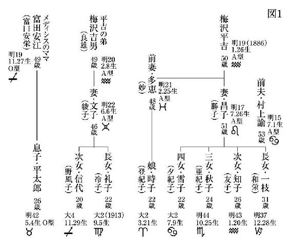

| 占星術殺人事件 改訂完全版 (講談社文庫) | |
| 島田荘司 | |
| (2013) | |
改訂完全版
占星術殺人事件
島田荘司
占星術殺人事件
これは私の知る限り、最も不思議な事件だ。おそらく世界にも、まずめったに例を見ない不可能犯罪であろうと思う。
事件は、昭和十一年（一九三六年）に東京で起った、一種の猟奇犯罪的な連続殺人であるが、登場人物の誰にも犯行を成すことは不可能であり、犯人は完全に（この表現にはいささかの誇張もない）見あたらなかった。
したがって当然のように迷宮入りとなり、以後四十年以上にわたり、日本中が大騒ぎで知恵を絞り、犯人を捜したが、私がこの事件に関わった昭和五十四年（一九七九年）の春にいたっても、謎はまるで手つかずで残されているといったあんばいだった。
しかも、この事件には詳細な記録が遺されており、すべての手がかりが完璧に公表されてなおこの結果なのだから、まったく信じがたいほどに手強い代物というほかはない。
本書の進行においても、解答がなされるよりずっと以前に、読者の眼前には解決に必要なすべての手がかりが、あからさまなかたちで示されるであろう。
これは私自身の為に書かれた小説であり、本来誰の眼に触れさせる事も意識しなかった。
しかし、この様に形を成さしめた以上、他者の眼に触れる可能性をも考慮しない訳にはいくまいから、そういう事態を想定し、私にはこの一文が遺言状、もしくはそれに準ずる意味を持っている事、また「小説」である事を、自分自身の為に明記しておく。
万一私の死後、ゴッホの場合のごとく私の創作が資産を生むような事があるなら、この「小説」に私の意志を正しく読みとり、遺産をしかるべく処理されんとするは、これを読まれた方の自由である。
昭和十一年二月二十一日（金） 梅沢平吉
私は悪魔憑きである。
私の内には、明らかに私とは別の意志を持つ存在が棲みついている。私の身体は今やこの物に思うまま操られる傀儡に過ぎない。
この物は実に意地が悪い。何とも子供じみた悪さをする。さまざまなやり方で、私を怯えさせようとする。
ある晩、私は小牛程もある巨大な蛤が触手を出し、ねばった液による跡を床に残しながら、私の部屋を横切るのを見た。それは机の下からのっそりと現われ、何とも緩慢な速度で板の間を進んで行った。
ある夕暮れ時には、鉄格子の窓によって出来る部屋の四隅や、すべての暗がりに、例外なく二、三匹ずつのやもりが潜んでいた事もある。これらはすべて私の内なる存在が、私に見せる現実である。
ある春の日の明け方には、まるで凍え死んでしまいそうな寒さに私をおとしめた事もある。内なるデモンの仕業だ。私が次第に若さを失い、体力が衰えるにつれ、内なるこれはますます傍若無人にその力をふるい始めた。
ケルススの指摘する通り、病人を煽動するデモンを身体より立ち退かせる為には、病人にパンと水の懲らしめを与え、棒で打たねばならぬ。
聖マルコによる福音書には、「師よ、啞の霊に憑かれたる我が子をみもとに連れ来たれり。霊何処にても彼に憑けば、ひきつけ泡をふき、歯をくいしばり、しかして瘦せ衰う。御弟子達にこれを追い出すことを請いたれど、能わざりき」とある。
幼い頃より、この内なるデモンを胎内より追い出す為、私はどんなに自らに苦痛を強いた事であろう。私は幼い頃よりこの内なる存在に気づいていた。
ある書物にはこんな一文も見える。「中世、悪魔憑きの患者の前では強い香をたき、発作を起して倒れると、その者の髪の毛を一握り引き抜いて瓶に入れ、蓋をする。こうするとデモンを瓶に封じ込めたことになって患者は回復するのである」
自分が発作を起した時、私はこうしてくれるよう周りの者に頼んだ。しかしやってくれる者とてなく、それではと自分で試みたが、所詮一人では無理な事であり、私はたちまち狂人という評価になってしまった。そして人々は、私に現われる現象を癲癇という恐ろしく凡庸なる名称の内に閉じ込めようとした。
経験のない者には決して解らないであろう。その苦痛はもはや生理現象の域を超え、恥や名誉心等のささいな精神次元をも超越して、荘重な儀式の前に抗い難くひれ臥すようで、その時、私は恍惚の内で、この世での自身の営みのすべてがただ仮りのものに過ぎぬ事を悟るのである。
私の身体の内には、明らかに私と別の意志を持つ存在、デモンが寄生している。それは球状をなしているから、中世の頃言われた、いわゆるヒステリー球とも呼ぶべき物なのであろう。
普段は私の下腹部、骨盤のあたりにこれはおさまっているのだが、時として胃や食道をかき分けながら喉まで昇って来る。これが週一度、必ず金曜日と決まっている。この時、聖キュリロスの描写にあるごとく、私は地面に薙ぎ倒され、舌を引きつらせ、唇をわななかせ、口中に泡を生じるのである。私はその時、デモン達の凄まじい哄笑を耳もとで聞き、彼らによって何本もの鋭い釘を、槌で身体中に打ち込まれるのを感じる。
蛆、蛇、ひき蛙が後から後から這い出て来る、人間や動物の死骸が部屋に現われ、それら薄汚ない爬虫類は私のそばまで寄って来て、鼻、耳、唇を咬み、しゅうしゅうと蒸気を吐くような音をたてながら、ひどい悪臭をあたりに撒き散らす。だから私は、魔術の祭祀や儀式に、多く爬虫類が用意されるのを少しも奇異と思わない。
また近頃は、泡を噴く事がなくとも（最近は倒れることはほとんどなくなった）、毎週金曜日になると、胸の中の聖痕が血を流すのを感じる。これはある意味では倒れる以上に辛い試練だ。十七世紀のカタリーナ・チアリナ尼や、ヴェルセイユのアメリア・ビッチェリの様な法悦者になった心持ちがする。
それは内なるデモンが私を急き立てているのだ。私への数々の嫌がらせは、その故である。私は行動を起さなくてはならぬ。その行動とは、デモンの助けを借り、デモンの要求する通りの完璧な女、ある意味では神であり、また通俗的な呼び方では魔女と言ってもよい、全知全能の女を一人、この世に生み出す事である。
最近はその夢を見る事が多い。繰り返し、繰り返し、同じ夢を見るのである。夢こそが、あらゆる魔術の原点だ。プルニウスの魔法使いの草も良いが、私には蜥蜴の肉を灰になるまで焼き、それを上等の葡萄酒に混ぜて身体に塗って眠るのも効果がある。今やデモンの傀儡であり、いやデモンそのものと化したところの私が、この合成し創り上げた完璧な美を持つ女の姿を、夜ごと、幻視の内に見るのである。
それはまるで夢のような美しさを持ち、私などの筆ではとてもキャンバスに写す事も出来ぬ精神の重さ、力、そして形態上の勢いを持っている。そして私は、もう今やその姿を一目見たい、見てから死にたい、と狂おしい、祈り以上の願いを抑え切れなくなっている。
この女は「アゾート」だ。哲学者のアゾート（石）だ。私はこの女をアゾートと呼ぶ事にしている。このアゾートこそが、私が三十年以上、キャンバスの上に追い求めた理想の女であり、私の夢である。
私は人間の身体というものを、六つの部分に分けて理解して居る。即ち頭部、胸部、腹部、腰部、大腿部、下足部、の六つである。
西洋占星術では、人体という一種の袋状の物こそは宇宙の投影であり、縮小形であるから、この六部分のそれぞれを守護する惑星が、厳に存在している。
頭部は牡羊座の守護星♂（火星）が支配している。即ち、頭部という人体宇宙の一隅は、牡羊座の支配領域に当り、この牡羊座は♂が守護している関係から、頭部は♂によって力を与えられているといえる。
胸部は双子座の領域であると同時に、獅子座の領域でもある。従って双子座の守護星（水星）、もしくは獅子座の（太陽）が守護する。或いはこの胸部を、女性の場合なら乳房の領域と考える事も出来、とするならこれは蟹座の支配領域であるから、蟹座の（月）の守護範囲ともいえる。
腹部は乙女座に当るから、乙女座の守護星（水星）が統治する。
腰部は天秤座であるから、天秤座の守護星♀（金星）が支配する。ただしこれも女性の場合子宮、即ち生殖機能を有する部分と考える事が出来、とするならこれは蝎座の統治領域となる。つまり蝎座の守護星（冥王星）がここを統治しているともいえる。
大腿部は射手座の範囲に当る。従って射手座の守護星（木星）が支配する。
下足部は水瓶座である。従って水瓶座の守護星（天王星）の統治下にある。
人間の肉体というものは、この様に、惑星によって強められた部分を一箇所持っている。例えば牡羊座生まれの人間なら頭部を強められ、天秤座生まれの者は腰部を星により強められる。この箇所は生まれ落ちた瞬間の太陽の位置により決定されて来る訳だが、逆の言い方をするなら、一箇所しかない事が人間を人間たらしめている。人間が存命中、決して人間という月並みな存在以上のものになり得ぬのは、この星の祝福というものを、身体のうちにわずか一箇所しか持たぬという理由による。
頭部を強められた人間、腹部を強められた人間、という風に皆まちまちに強められた箇所を身体の一箇所ずつに持ちながら、この世に多くの人間が散らばって生きている。これらの者達のうちから、頭部を強められた者の頭部、胸部を強められた者の胸部、腹部を強められた者の腹部、という風に、それぞれ異なった場所を強められた人間六人を集め、各々から強められた部分のみを採り出して、一つの肉体に合成出来たとしたらどんなであろう!?
肉体のすべての部位に惑星の祝福を受けた完璧な肉体、光の舞踏手がここに誕生する。これこそは、人間を超越した存在と言わずして何であろう!?
力を与えられたものは、概ね美しさも兼ね備える。もしこの光の肉体が、六人の処女によって制作されたものならば、これは完璧な美しさを持つ「女」となるはずである。キャンバスに女性の完成美を追い続けた者として、ここに現われるはずの完成の美に対し、私は畏怖にも似た憧れを禁じ得ない。
何とも幸運である事に、眼と鼻の先に、偶然にもこの六人の処女が在ることに、私は最近気づいたのである。いや、もう少し正確な言い方をするなら、私の邸内に生活する六人の娘達が、偶然にもバラバラの星座宮に属し、各々の身体のそれぞれ別の部分に惑星の祝福を持っていると知った事が、アゾート作製というこの芸術的霊感を得る助けとなったのである。
世間の常識からいえば驚くべき事に、私は五人の娘の親である。
上から順に和栄、友子、亜紀子、登紀子、夕紀子だが、和栄、友子、亜紀子までは、私の二度目の妻勝子の連れ子だ。夕紀子が私が勝子に生ませた娘で、登紀子は私が前妻の妙に生ませた娘だ。この夕紀子と登紀子は、偶然にも同い年である。
妻の勝子がバレエをやる女であったから、これらの娘達に道楽でバレエとピアノを教え始め、これに私の弟良雄の娘、冷子と野風子が生徒に加わり、そしてこの二人の娘が、弟の家が借家で手狭である為に、いつしか私の家の母屋に寝泊りを始めた為、私の邸内には常に大勢の若い娘が居る事になった。
ただし、妻の連れ子のうちの長女和栄、これは既に結婚して家を持っている。従って私の邸内にいる娘達は都合六人、友子、亜紀子、登紀子、夕紀子、冷子、野風子である。
各々に属する星座は、和栄が明治三十七年生まれの山羊座、友子が明治四十三年生まれの水瓶座、亜紀子が明治四十四年生まれの蝎座、登紀子は大正二年生まれの牡羊座である。そして夕紀子が同じく大正二年生まれの蟹座、弟の娘のうち、上の冷子がこれも大正二年生まれの乙女座、野風子は大正四年生まれの射手座である。
私の家には都合三人の満二十二歳の娘が居る事になるが、偶然とは言え、よくもこうあつらえたまでに六人の娘が揃ったものである。頭から下足部までばらばらに星の祝福を受けた娘が六人、一人も重複する者はない。私は次第にこれを偶然とは考えなくなった。これは私の前に揃え置かれた素材である。デモンが私に、これらを用いて供物を創れと命じている。これは疑う余地もないことだ。
長女の和栄は三十一歳と一人だけ歳も離れ、現在結婚生活をしているし、住んでいる場所も遥かに離れているから対象とはならない。上から順に、頭部は牡羊座の登紀子の物、胸部は蟹座の夕紀子の物、腹部は乙女座の冷子の物、腰部は蝎座の亜紀子の物、大腿部は射手座の野風子の物、下足部を水瓶座の友子の物、という風に各々採り出して合成するのである。腰部は天秤座、胸部は双子座の処女の方が或いは望ましいとも言えるが、そこまで都合良くは行くまい。
それにアゾートは「女」であるから、胸は乳房、腰は子宮と考えた方が、むしろこの仕事の意に沿うといえる。幸運を天に感謝せずばなるまい。あるいはデモンにか。
このアゾートの制作は、純粋に錬金術の処方に則って行なわれなくてはならない。でなくてはアゾートは永遠の生命を得る事が出来ない。六人の処女達は金属元素である。言わばまだ卑金属であるが、やがて精錬され、アゾートとして黄金に昇華するのだ。低い雨雲は払われ、真の青空が現われる。何と神々しいことか。
ああ、こうしていても私は身体が震えて来る。どうしても見たい。この眼で見て死にたい！ 私が世俗的な生命のうちの三十数年を、キャンバスとの悪戦苦闘に費したのは、私の内なるこのアゾートを絵の具で定着させたかったからに他ならぬ。絵筆でなく、実際の肉体で創り上げる事が出来たなら、何と美しい事か！ この世のすべての芸術家よ、これ以上のいったい何を望むであろう。
これは有史以来、誰も思いつかなかった夢だ。完璧な意味の創作だ。黒魔術のミサも、錬金術の賢者の石も、女の肉体の美を追求するあらゆる彫刻も、このアゾートの創造に比せば、いったいどれ程の意味があったというのであろう。
この元素的素材の娘達は、一旦は世俗的生命を奪われなくてはならぬ。その肉体は二つの切断面によって一部分が抜き出され、二つの部分となって残った身体は放棄される訳であるから（登紀子と友子の場合は頭と下足部を提供する訳だから残りは一つだが）、世俗的生命は保ち得ないが、その肉体は精錬され、永遠の存在として昇華するのだ、不服のあろうはずがないではないか。
作業の始まりは、錬金術の第一原質の原則に従い、太陽が牡羊座にあるうちに始められなくてはならない。
頭部を担う登紀子の肉体は、牡羊座であるから♂によって生命を奪われなくてはならぬ。（♂は火星の記号であると同時に、錬金術では鉄を意味する）
胸部を担う夕紀子は蟹座である。従ってで生命を奪う。（は月の記号であるが、錬金術では銀を意味する）
腹部を担う冷子は乙女座、よっての嚥下によって死なねばならぬ。（は水星の記号であるが、錬金術では水銀を意味する）
腰部を担う亜紀子は蝎座、蝎座の支配星は現在（冥王星）であるが、まだ発見されてなかった中世の頃のしきたりに準じ、♂で生命を奪われるのが望ましい。
大腿部の野風子は射手座である。故にで死なねばならぬ。（は木星を意味するが、錬金術では錫の記号である）
下足部の友子は水瓶座、水瓶座の支配星は現在（天王星）であるが、中世の頃まだ発見されていず、が代行していた。よってによって死が訪れるのが良い。（は土星であり、錬金術では鉛）
さてこうして六つの肉体が手に入ったなら、その身体と私自身の肉体を清める事から始めねばならぬ。これは葡萄酒とある種の灰とを混ぜた物によって行なう。
次に♂の鋸で各々の肉体の求める部分を切り取り、十字架をレリーフした板の上に組み合わせる。この時キリスト像のように釘で固定するのも良いが、やはり私は不必要な皺や傷を肉体に作りたくはない。アゾートはヘカテーの神託にある様に、前もって木彫の像に作り、よく磨き、小さな蜥蜴で飾っておくのが望ましい。
そしていよいよ隠された火を用意する段階に入る。ホンタヌスの様に、多くの錬金術師がこの隠された火を本物の炎と解釈し、多くの失敗を繰り返しているのは愚かな事だ。手を濡らさぬ水、焰を出さずに燃える火というのはある種の（塩）と香である。
次に獣帯（十二星座）を構成する各要素、即ち羊、牛、乳児、蟹、獅子、乙女、蝎、山羊、魚等のうち、手に入る限りの肉片と血、それにひき蛙と蜥蜴の肉片を加えた物を鍋で煮なくてはならない。この鍋こそがアタノール、つまり黄金炉である。
この時、心に念ずべき口寄せの呪文を私はピロソピュメナから見つけた。オリゲネス、或いは聖ヒッポリュトスによって書かれた物だ。
「来れ汝、奈落の、地上の、そして天上のボンボー、街道、四辻の女神よ。光をもたらし、夜にさまよい、光の敵、夜の友にして伴侶たる汝。犬の吠声と流されたる血に興じ、幽鬼に混じり墓場をさまよう汝。血を欲し人間に恐怖をもたらす汝。ゴルゴ、モルノ、千にも姿を変える月よ、仁慈の眼もて我々の供犠に立会いたまえ」
この混合物は「哲学の卵」に密封されなくてはならぬ。そしてこの卵は、卵を孵している雌鶏の体温に合わせて保温されなくてはならない。これがやがてパナツェー（魔術的な万能薬の意か？）へと昇華して行くのである。
このパナツェーにより、六つの部分から成るアゾートは一つの肉体として結合せられ、全知全能、永遠の神的肉体を持つ、光の同盟の女としての生命をやがて得るのである。そうして私はアデプト（奥義に達した人の意）となり、アゾートの光の肉体は不壊となるのだ。
人はよくこのマグヌス・オプス（大いなる作業）、錬金術を、卑金属を黄金に変える為の物と誤解するが、これはまったく馬鹿げている。おそらく天文学が占星術を母胎にして発展した様に、化学もその黎明期に、錬金術が大きく貢献している事実を現代の化学者達が劣等感にしている為、錬金術にあえて低俗な印象を与えようとしているのではあるまいか。名を成した学者が、大酒飲みの父をさして、あれは父ではないと主張するのに似ている。
錬金術の真の目的は、もっと高次な次元にある。ありきたりの日常的認識に隠されている現実の本質を、完璧な意味で具現させる手段なのだ。「美の美」、或いは「至上の愛」、等と単純に表現されている至高存在を具現する事なのである。その過程において意識は根源的に変革され、洗い直され、世俗の要求する危険な凡庸さの内で鉛の様に無価値となっている意識を、ある精妙な、黄金のような認識水準にまで引き上げるのである。東洋では、おそらく「禅」がこれに当るのではあるまいか。この様にすべての事物の永遠なる完成、あるいは「普遍的救済」とも呼ばれるこの創造行為が、錬金術の真の目的なのである。
従って、錬金術師が実際に金を作ろうとした事もあったかも知れぬが、それはいわばお遊びの様な物か、あるいはその大半はペテンだったはずだ。
奥義に到達出来なかった多くの人々は、第一原質を求めて坑道を下った様だが、その原質は鉱物とは限らない。パラケルススは、「それは至る所にあって子供が共に遊んでいる」と言っているではないか。真の第一原質が人間の女の肉体でなくして何であろう。
人が私を狂人と見做しているのは、誰より私自身が知っている。私は他人と違っているかも知れないが、芸術家ならそれは当然のことだ。他人と異なった部分が、大抵は才能と呼ばれる部分なのである。以前に誰かが創った物と大して変らぬ物をまた作ったとしても、どうしてそれを芸術と呼ぶ事が出来よう。反抗の中にしか創造はないのである。
私は決して必要以上に血を好む者ではない。しかし作家として、人体の解剖を見た時の感動は決して忘れられぬ。どうしても平常でない状態に置かれた人体というものに憧れを禁じ得ない。若い頃から脱臼した肩をデッサンしてみたいと強く願ったし、死によって次第に力がゆるんで行く筋肉を観察したいと思った事も、一度ならずある。しかしこれは、芸術家なら誰しも同じであろう。
私自身について少し語ろう。私がそもそも西洋占星術にのめり込む事になったのは、十代の頃気の進まぬまま、母の贔屓の、当時非常に珍しかった西洋占星術師に診てもらい、それが実にことごとく、現在までの私の人生を言い当てたからである。彼には後に私も教えを請うたが、オランダ人のもとキリスト教伝道師で、西洋占星術にのめり込みすぎた為に伝道師の資格を失い、占い師で生計をたてているという男であった。明治のあの時代、東京には無論の事、日本中にも、西洋占星術師は彼一人であった。
私は明治十九年一月二十六日、午後七時三十一分に東京で生まれている。太陽宮は水瓶座で、上昇宮は乙女座、上昇点（生まれた瞬間の東の地平線上）に（土星）があったから、私は自分の生涯にの影響を非常に強く受ける事になった。
こそが私自身の星、私の人生の象徴だ。後に私が錬金術に興味をひかれたのも、この私の象徴であるが、錬金術で金に変化して行くべき第一原質の鉛をも同時に意味していると知ったからである。私は芸術家としての自分の資質を、黄金へと昇華させる術を知りたいと願ったのである。
土星は人の運命に最も試練と忍耐とを運んで来る星だ。私は出発点からある決定的な劣等意識を持ち、人生はそれを克服して行く歴史になるだろうと占い師は言ったが、振り返れば私の生涯はまさにその通りであった。
私は身体が丈夫とは言えず、特異体質で幼い頃特に弱い、また火傷に注意という事を言われた。私の体質についてもう一度繰り返す必要はあるまい。また小学生の頃に私は、例の発作によって教室のストーヴで右足に大火傷を負っている。その跡は、未だに大きく残っている。
人生のある時期、女性と秘密の交渉を持つという予言、これが登紀子と夕紀子という二人の同い年の娘を持つという現実になって現われている。
私は♀（金星）を魚座に持つから、魚座の女が好みの女性であり、最終的には獅子座の女を妻にするという。そして二十八の頃、家族に対する責任が増すような試練があるという事であった。その通り私は魚座の女妙を初めての妻としたが、私はその後一時期ドガに傾倒し、盛んにバレリーナを描いていた。その頃モデルに頼んだのが現在の妻勝子であり、一目惚れした私は強引に関係して、人妻であった勝子に子供を生ませた。これが夕紀子である。妙と勝子とは巡り合わせで、同じ年に前後して子供を生む結果となり、それが私が妙を離婚し、獅子座の勝子と一緒になるという結果を生んだ。その年こそ、まさしく私の二十八の時であった。
妙は、現在都下保谷に私が買い与えた家で煙草屋をやっている。私が引き取った登紀子が、時々行ってやっている様だ。心配していた登紀子と他の娘達との仲も上々に見える。私は常々この妙には済まぬ事をしたと思っている。もう別れて二十年も経つが、この気持ちは去らない。むしろ最近強くなった。アゾートが将来、私に資産をもたらすなどという事がもしあるならば、全額をこの妙に与えても良いとさえ思っている。
また私は後年、私生活上で秘密や孤独な生活方針を持ち、病院や収容所等に入る事によって世間を離れるとか、或いは精神的に世俗を離れ、空想の世界に生きるであろうと言われた。これも完全に当った。私は現在庭の隅の土蔵を改造したアトリエに一人こもり、母屋に足を踏み入れる事さえ稀な生活を送っている。
そして次に、これが最も私の現在を言い当てていると思うのだが、（海王星）と（冥王星）が合（重なる）して九室にある。これは超自然界における純粋に霊的生活の暗示で、内なる啓示と神秘的能力を持ち、異端的な宗教に心を魅かれやすく、魔術や呪術の研究を始める事になるという。またこれは、意味もなく外国を放浪するという暗示でもあり、しかも海外へ出る事により、性格や境遇が一変してしまう。その時期は月の進行から判断して十九歳から二十歳の頃になるであろうと言われた。
ととが合しているというだけでも相当風変りな事であるというのに、私の場合、それらの働きが最も強められる九室に入る時間に生まれている。私の人生の後半は、この二つの凶星に支配されたのだ。私は十九の時日本を旅立ち、仏蘭西を中心に欧州を放浪した。そしてこの生活が私に神秘主義的な人生観を植えつけるに至った。
他にも細々とある。私は若い頃は決して西洋占星術など信じなかったし、当然の様に反発して意識的に逆の行動をとったが、結果は術師を喜ばせる物になってしまった。
私に限らず、私の一族、のみならず私と関わりを持つ者は、不思議に運命的な因縁に左右されるものの様である。端的な例が私の周りの女達だ。私と関わりのある女達は、どういう訳か結婚に縁のない宿命を背負う。
かく言う私自身、最初の妻を離縁している。現在の妻勝子は私にとって二度目の妻であるだけでなく、彼女にとっても私は二度目の夫である。そして私は現在死を決意しているから、遠からず勝子は二度目の夫をも失う事になるであろう。
私の母も父との結婚に失敗している。祖母も失敗しているらしい。そして勝子の連れ子のうちの長女和栄も先頃離婚した。
友子はもう二十六になり、亜紀子も二十四になってしまった。広い家もあり、母親と気も合っているから結婚は諦めてしまった様である。どうやら支那と戦争になりそうな雲行きの怪しい時代だし、いざ戦さとなり、未亡人となる時の事を考えれば、ピアノもバレエも上達した今、これで良いと考えているのであろう。勝子は軍人を好む女ではない。
ただ結婚を諦めた今、勝子と娘達が金に興味を持ち始めたのは、当然の成り行きとはいうものの私には有難くない。六百坪もの土地をただ遊ばせておくのはもったいない、文化長屋を建てようと再三私にせっつくようになった。
勝子達には、私が死ねば自由にするが良いと申し渡してある。弟の良雄も未だ借家住まいだから、当然賛成しているであろう。出来上がれば一世帯分は無料で確保出来るからだ。
考えてみれば私などが長男というだけの理由で、家屋敷の相続を一切独占してしまったのは確かに不公平である。しかしそれなら充分の広さがある母屋に、良雄夫婦も勝子達と住めば良いと思うのだが、良雄の女房の綾子が遠慮しているのか、それとも勝子が許さないのか、未だに近所に借家住まいである。
要するに私を除く全員が文化長屋の建設に賛成しているのだ。反対する私を当然疎ましく思っているであろう。この頃では妙を懐かしく思うようになった。妙は従順なだけが取柄の、何の面白味もない女であったが、このままでは勝子達に毒を盛られかねぬ。
私が頑なにアパルトマンの建設に反対するのには理由がある。私は現在、親から引き継いだ目黒区大原町の邸の庭の、北西の隅にある土蔵をアトリエに改造して住んでいるが、このアトリエをすこぶる気に入っている。窓からは緑が気持ち良く望める。しかしアパルトマンが出来れば、この樹々に代わって大勢の好奇の目がアトリエを覗き込む結果となる。それでなくても私は奇人として聞こえてしまっているから、住人は私に好奇の眼を注がずにはいまい。創作にとってこういう類いのわずらわしさは大敵以外の物ではない。到底賛成する気にはなれぬ。
この土蔵は、子供の頃からその陰気さが気に入ってよく遊んだ場所である。私は子供の頃から完全に密閉された空間でなくては気が落ち着かないようなところがあった。しかしアトリエにするにあたっては、あまり暗いと困るので、天井に二つ大きな明り採りの天窓を作った。しかし人が侵入できる可能性を残しておくのは気持ちが悪いので、二つとも頑丈な鉄格子を付け、硝子はその上に載った恰好になっている。
窓にもすべて鉄格子をはめ、便所と流しを作り足し、元来二階建てだったのだが、二階の床を抜いて高い天井の平屋とした。
アトリエの多くはそうなっているはずだが、何故高い天井が良いかと言えば、広い空間に居るという開放感が創作に都合が良いという事ももちろんだが、大作に取り組む時、天井が低いと具合が悪いのである。無論キャンバスが低い天井につかえるなどしては論外だが、作品を距離をとって遠くから眺める必要があり、この時大きな壁面、広い空間が欲しくなる。そしてこの為、広い床面積も必要となるのである。
私はこの仕事場がいたく気に入っているので、軍病院用の車の付いた金属製の寝台を手に入れて来て、ここで寝泊りもする事にした。車が付いていると、この広い空間の気に入った位置に寝台を引っ張って行って眠る事が出来る。
私は高い窓が好きだ。秋の午後など、広い床に天窓の鉄格子が作った縞模様が二つの四角い陽だまりを作って落ち、枯れ散った木の葉がその上に点々と丁度音符の様に見える。
また二階があった頃の名残りの窓が、壁の高い所に残っているのを見るのも気持ちの良いものだ。こういう時、私はカプリ島だの月下の蘭だの、好きな歌の旋律を知らず口ずさんでいたりする。
一階の窓は、北と西の二面が塀と接する恰好になったので、南の面を残して塗り潰してある。光の入らぬ窓ならば、いっそ広い壁になってくれた方が有難いのだ。この蔵の出来た私の子供時分には、まだ大谷石の塀などはなかった。東の面は入口の扉と、新設した便所が占めている。
塀の出現で窓を失った北と西の壁面に、私の心血を注いだ十一枚の作品が並べてある。これは十二星座をテーマとした各々百号の大作で、従って遠からず十二枚となる予定だ。
現在、最後の牡羊座の制作にかかろうとしている所だが、これは私のライフワークであるから、十二枚目の牡羊座の仕事が終ったらいよいよアゾートの制作にとりかかり、その完成した姿をこの眼に焼きつける事が出来たなら、私は自らの生命を絶とうと考えている。
私の欧羅巴放浪時代にも触れておく方が良かろう。私は仏蘭西放浪時代、一人の日本人と知り合った。富口安栄という女性である。
私が巴里の石畳を初めて踏んだのは明治三十九年であった。私の青春の彷徨は、あの石の街に置いて来た心地がする。現在はもっと違うのであろうが、当時仏蘭西語も碌に話せない東洋人があの街をうろつけば、同国人と行き合う可能性など万に一つもなく、それは心細いものだった。月の明るい夜、街に出れば、私は世界で唯一人生き残った人間の様であった。
しかしやがて慣れて来て、片言の仏蘭西語も出来る様になると、その心細さもやがては心地よい切なさに変って行くのが感じられ、意味もなくカルチェラタンあたりをうろついたものだ。
そんな私に巴里の秋はひときわ素晴しく、枯葉が音をたてて石畳の道を横切って行く時、すべてに感動する為の眼が、徐々に開かれ始めるのを覚えた。灰色の石の街に、枯葉の色はよく似合う。
ギュスターヴ・モローに感銘したのがその頃である。ロシュフーコー通りに十四番という金属板が塡まっていた。以来、私はモローとゴッホとを心の糧として来た。
ある晩秋、いつも散歩コオスとして立ち寄っていたメディシスの泉で、私は富口安栄と出逢った。安栄は泉の金属の手すりに身体をもたせかける様にして、ぼんやりしていた。あたりの樹々はすっかり葉が落ち、老人の血管を思わせる様に、枝は白っぽい鉛色の空に向かって鋭く立ち、その日は急に冷え込み始めた日だったから、異国の地は異邦人にはひときわ寒々とした印象だった。
安栄は一目で東洋人と知れ、私は懐かしさから近寄って行った。彼女の、どこかおどおどした様子は、私にも憶えのある事だった。しかし、私は何故か安栄を支那人と独り決めしていた。
向こうも懐かしそうに私を見たので、私は今日から冬になった様ですねと仏蘭西語で話しかけた。日本ではとてもこうはいかないのだが、外国語にはこんな風に人を気安くする性質がある。しかしこれはまずい呼びかけであった。彼女は気重そうに首を振ると、くるりと背を向け歩み去ろうとした。私は驚き、彼女の背中に、君は日本人ですかと今度は日本語で呼びかけた。その時振り返ったこの女の顔が安堵感で一杯で、私達は恋に落ちる運命を知った。
その界隈は冬になると焼き栗屋が出る。ショウ、ショウ、マロン、ショウ！ と懐かしい呼び声に誘われ、私達は二人でよく焼き栗を食べた。心細い異郷の地での日本人同士であるから、私達は毎日逢った。
安栄は私と同い年の生まれであるが、私が一月、彼女は十一月の末生まれなので、まあ一つ年下のようなものであった。やはり絵の勉強に来ている金持ちの道楽娘といったところであったろう。
私が二十二、安栄が二十一の時、手を取り合うようにして日本に帰って来た。その数年後、巴里は欧州大戦（第一次大戦）に巻き込まれたはずだ。
東京でも付き合いは続き、私は結婚するつもりでいたのだが、東京では孤独な巴里時代と違い、安栄の知人達が大勢彼女を取り巻く様になり、彼女の奔放さにもついて行けなくなって別れた。その後結婚したという噂を聞いたが、しばらくは逢う事もなかった。
私が妙と結婚したのは二十六の年であった。良雄が府立高等（現在の都立大学）近くの呉服屋から、半ば冗談の様にして持って来た話で、その年母を病気で亡くしていた私は、淋しくて誰でも良いという心境であった。もう土地屋敷を引き継いで、私はいっぱしの資産家であったから、結婚相手の条件としてはそれなりに良かったのではあるまいか。
しかし皮肉なもので、私が結婚して数箇月経った頃、銀座でばったり安栄と再会した。見ると子供を連れている。やはり結婚したのだなと言うと、主人とは別れたと言う。今は銀座で画廊カフェをやっているのだと語った。店名は忘れられない場所の名をとったのよ、解る？ と問うてくるので、メディシスかい？ と言うと、そうよと言った。
私は自分の作品をすべて彼女にまかせることにした。もっとも大して売れはしなかったが。個展も、勧められるまま何度かやった。しかし私は二科とか光風会とか、公募されている賞を狙うことに熱心ではなかったので、いつまで経っても何の実績も出来ず、自己紹介の文案作りに苦労をした。安栄は時には私のアトリエにも来るようになっていたから、彼女の肖像画も描き、メディシスでの個展の際は必ず入れるようにした。
安栄は明治十九年十一月二十七日生まれの射手座、息子は明治四十二年生まれの牡牛座であったが、何かした拍子に、平太郎はあなたの息子なのよと匂わすことがあった。いつものあの女一流の冗談なのかも知れないが、計算が合わないことでもない。わざわざ平の字を頭に付けて、平太郎などとしているのも意味深である。もし本当なら、運命としか言い様がない。
私は古いタイプの芸術家だから、最近流行のピカソとかミロとかいう、いわゆるアヴァンギャルドな傾向にはあまり興味がない。私が心の糧とするものは、ゴッホとギュスターヴ・モローのみである。
自分が古いのはよく解っている。しかし私は、「力」を解りやすく感じさせてくれる作が好きなのだ。力を内包しない絵など、絵の具の付いたただの布ぎれに過ぎない。だからそういう意味での、或いは解釈の範囲での抽象ならば、よく理解している。ピカソの一部や、身体をキャンバスにぶつけて描く隅江富岳など、私の好みの範疇だ。
しかし私は、創作には技術が必要条件としてつきまとうと考える。子供が泥の玉を叩きつけたレンガ塀とは、おのずと差が生じなくてはならぬと思う。ありふれた、いわゆるアヴァンギャルドの画家のものなら、私は舗装道路に残る交通事故のタイヤ痕の方に何倍も感動する。石の上の強烈なエネルギイの軌跡、真紅の裂け目のような、それとも石からにじみ出た様な血の滴り。好対照を成す弱々しい白墨の線。これらは完璧に作品としての条件を備えている。ゴッホやモローの次に私を感動させる作品だ。
そうであった。私が自分を古い人間と書いたのには別の意図があった。私は彫刻も好きではあるが、人形の方により魅力を感じる側の人間である。まして針金のような身体を持つ金属の彫刻など、まるでくず鉄以外のものに見えない。大体において、前衛に傾き過ぎたものは私には駄目である。
若い頃、私は府立高等付近の洋装店のショウ・ウインドウに、非常な魅力を持った女を発見した。それはマネキンであったが、私はすっかり夢中になり、毎日その店の前に立って眺めたものだ。駅前に行く用事があれば、どんなに遠廻りでもその店の前を通るようにしたし、多い時は日に五度も六度も眺めた。一年以上そんな状態が続いたから、私は彼女の夏の服装、冬の装い、春のドレス、すべてを見る事が出来た。
今なら一も二もなく店主からその人形を譲り受けたろうが、当時私はほんの子供であったし、非常なはにかみ屋でもあったから、店に入ってそんな話を切り出すなど、思いもよらなかった。また自由になる金もなかった。
煙草の煙がうっとうしかったり、酔客の胴間声が耳ざわりだったりするので、私はあまり酒場には足を向けないが、近頃柿の木という店には割合よく行く。それは、この店の常連にマネキン人形工房の経営者がいるせいだ。
酔いにまかせ、私はこの男にその話をした事がある。それではと言って、彼は自分の工房を見せてくれたのだが、無論そこに登紀江は居なかったし、彼女の百分の一の魅力さえ備えた女は見当らなかった。どこと言って説明は出来ないのだが、おそらくみなはその工房の人形と登紀江とは、顔の作りといい姿形といい区別はつかぬであろう。しかし私には歴然と違う。真珠の輪と針金の輪程も、私にとっては価値の差があるのである。
前後してしまったが、私は彼女を密かに登紀江と名付けて呼んでいた。それは当時人気のあった同名の女優と彼女の顔立ちがちょっと似ていたからだが、私はこの人形の登紀江に完全に参ってしまい、今様の言い方をすれば、寝ても醒めても彼女の顔が眼前に浮かぶといった風であった。彼女に捧げる詩も沢山書いたし、彼女の顔や身体を思い出して密かに絵も描き始めた。思えばこれが私の画家生活の原点であったろうか。
その店の隣りには生糸問屋があって、初中後馬力（荷馬車）がやって来て荷の積み降しをやっていた。私はそれを見物する振りをしながら登紀江を眺めることが出来、極めて好都合であった。彼女の気取った顔、栗色の髪、この髪は硬そうであった。折れそうな華奢な指、そしてスカアトからのぞいた膝から下の足の線、三十年も経った今でさえ、私はありありと登紀江の容姿を思い出せる。
一度私は、彼女が硝子箱の中で裸にされ、服を着せ替えられているところを見てしまった。私はこの時以上の衝撃を、以降女との関わりにおいて体験することはなかった。膝が震えて、立って居ることも難しい程であった。以来私は、女性の身体の下腹部に毛があること、その奥に生殖機能が備わっていることの意味や価値を、随分長い間理解が出来なかった。
その他にも、私の人生のうちで、登紀江によって捩じ曲げられた部分がいかに大きいかを思い知る機会が度々あった。これは数え切れない程にある。まず硬い髪の女の方が好みである。啞の女に非常な魅力を感じる。どちらかと言えば植物的な、動かなくなった時を容易に想像させてくれる肉体を持つ女に魅かれる、いくらでもある。
これが前述した私の芸術観と食い違う事を私自身一番よく知っていて、我ながら奇異に思うことも多い。それはモローとゴッホという、明らかに傾向の違う作家を同時に好んでいる点にも端的に表われる。登紀江に逢わなければ、或いは芸術観も一貫したものになったかも知れない。
前妻の妙は、どちらかと言えばそういう植物的な、人形のような女であった。しかしもう一人の私の、芸術家としての内なる激しさは、知らず勝子を求めた。
登紀江のことは明らかな初恋であった。そして忘れもしない三月二十一日、登紀江はショウ・ウインドウから姿を消した。春だった。桜がちらほら咲き始める頃であった。
その時の私の衝撃は、とても言葉で言い表わすことなど出来はしない。私は一切が空しくなり、いや、そうではあるまい、その事件によって一切があらかじめ失われていた事を知って、欧羅巴への放浪の旅に出たのである。欧羅巴を選んだのは、登紀江がその頃観た仏蘭西映画の雰囲気を持っていたからで、仏蘭西へ行けば或いは登紀江に似た女に巡り逢えるかも知れぬと勝手な妄想を抱いたからであった。
そして何年かのち、初めて娘を持った時、私はその子に迷わず登紀子と名付けた。それは何とこの娘の生まれた日が、あの登紀江がショウ・ウインドウから姿を消した三月二十一日であり、私はここに不思議な運命の暗示を感じたからである。
そしてあの登紀江も、牡羊座の生まれであった事をやがて私は疑わなくなった。また私は、この娘はあの硝子の中の登紀江が私のものになれなかったので、生まれ変って私の下に来てくれたのだと信じるようになった。だから私は、登紀子は成長するにつれてあの顔になって行く事を知っていた。
しかし、この娘は身体の弱い子であった──。
とここまで筆を進め、私は初めて気づいて愕然とする。私は登紀子を一番愛し、彼女があまり丈夫な身体でないから、彼女の顔に相応しい完璧な肉体を創って与えてやろうと、無意識のうちに思っているのではあるまいか。
確かに私は、登紀子に片寄った愛情を感じている。登紀子は牡羊座の生まれらしく元気が良いが、火と水の境い目の日に生まれているから（牡羊座のエレメントは火、一つ前の魚座は水、三月二十一日は丁度この二つの星座の境い目に当る）、躁鬱症気味なところも多分にある。彼女が鬱状態にある時、登紀子の体内の弱々しい心臓を思うと、私はたまらぬ愛情が湧いて来る。それが通常父が娘を思う感情以上のものである事を、告白しておかねばなるまい。
一番上の和栄を除く六人の娘達のうち、弟の娘である冷子と野風子以外は、私は半裸にしてクロッキーを描いた事がある。登紀子の身体はあまり豊かでない。右の脇腹には小さな痣もある。その時私が、登紀子の顔が完璧な美しさを有する肉体の上に載っていたならと思った事は確かである。
いや、しかし決して登紀子の身体が一番貧弱という訳ではない。そういう意味では友子や、身体を見たことは無いが、冷子や野風子の方がずっと貧弱であろう。私は登紀子には完璧な女であって欲しいのである。
考えてみれば、本当の私の娘は登紀子の他には夕紀子しかいないのであるから、この気持ちもそれ程不自然ではあるまい。
ブロンズの人体などには興味が無い私だが、唯一の例外がある。数年前、私は二度目の欧州旅行をした。その時、ルーブルには大した感動は無かった。私が最も感動したのは、ルノアールやピカソではなく、ましてロダンなどでもなく、和蘭陀のアムステルダムで観たアンドレ・ミヨーという無名の彫刻作家の個展であった。これには完全に圧倒されてしまい、創作を続ける気力をその後一年程喪失してしまったくらいである。
それはいわば死の芸術とでもいうべき種類のもので、もう廃虚の様になった、使われていない古い水族館が展覧会場にあてられていた。
電信柱からぶら下った男の首吊り死体、道端に放置された母と娘の死体、もうかなり腐敗が進んでいて強い腐敗臭が漂っていた。（それが演出されたものであったのかと思い至ったのは、一年も経った頃だった）
恐怖に歪んだ顔、死の苦痛の持つ強烈なエネルギイによってつっぱった筋肉、それらが、凍ったように力を凝結したまま腐蝕していく様が、克明に描写され、定着されていた。
金属で作られた事を忘れさせる、まごうかたなき柔らかな曲面、単色であったはずなのに、今それをすっかり忘れさせているあの量感。
圧巻は水死の場面であった。一人の男が水の中に立ち、後ろ手錠をかけた男の頭を無理矢理水中に押し沈めている。その男の口からはまだ断末魔の水泡が、細い鎖の様に線を引いて水面とつながっていた。それが覗きからくりの様に、暗い会場から夢のような明るさを持つ水槽内に覗けるのだ。
そうだ、それはまさに現場であった。そして私の記憶は、未だに事件の追想である。
腑抜けの様になった私の虚脱感は、その後一年程も続き、なまじの創作ではあれを超えられないと悟って、私はアゾートの制作を決意した。アゾートならばあれを超えられる。
犬に気をつけなくてはならぬと思う。あの死の芸術の会場には、あらゆる悲鳴が充満して居た。二万サイクルを超える音声は、人の耳には聴こえない。まだ音になる前の悲鳴、三万サイクルのかん高い悲しみの声、それを私の前を行く婦人に抱きかかえられたヨークシャー・テリアは、耳を敏感に反応させながら、確かに聴いていた。
アゾートを制作し、設置する場所であるが、これは純粋に数学的計算によって割り出され、決定された土地でなくてはならない。
制作だけなら私の現在のアトリエでも良いのであるが、六人の娘が一時に行方不明となったのに、私のアトリエが調べられぬはずもないし、たとえ警察が調べなくとも勝子は入ろうとするであろう。その為の専用の家を、やはり手に入れなくてはなるまい。そこは、アゾートの設置場所を兼ねることにもなる。田舎だから大した金はかかるまい。アゾートの完成、そして私の死の前にこの手記が発見される万一の可能性を考えて、正確な場所は書き記さないでおく。ただ新潟県とだけ言っておこう。
しかし、この小説はいうなればアゾートの付属品の様な物である。アゾートと共に日本帝国の中心に置くべき物と私は考えている。この小説だけが人目に晒されるという事態はまずあり得ないであろう。
アゾートの為に身体の一部を提供した六人の娘の各々の残りの肉体は、日本帝国の、それぞれの星座に属する土地に帰されなくてはならない。
私は、どのような金属を産する土地かによってその場所が属する星座が決まると考えている。即ち♂（鉄）を産する土地は牡羊座、もしくは蝎座に属している。（金）を産する地域は獅子座である。同じく（銀）を産する地方は蟹座であり、（錫）を産する土地は射手座であり、魚座の支配する土地でもある。
この考え方に従い、登紀子の残りの身体は牡羊座に属するところの♂を産する場所に、夕紀子の残りの肉体は蟹座であるを産する場所に、冷子の身体は乙女座である（水銀）を産する場所に、亜紀子の身体は蝎座である♂を産する場所に、また野風子は射手座であるを産する場所に、友子は水瓶座であるから（鉛）を産する場所にと、それぞれ帰納されなくてはならない。それでこのアゾートの制作という空前のマグヌス・オプスは完璧の物となり、アゾートはその持てる力を、考えられる限り有効に行使出来るのである。この作業のどれ一つとして手を抜いてはならない。完遂してこそマグヌス・オプスである。
アゾートが何故創られなくてはならないか、それは私が西洋画を描く様な、いわば個人の気紛れめいた創作行為ではない。無論私にとっては美意識の行き着く極北であり、無限大の量の憧れではあるが、それはあくまで私個人の次元での話で、アゾートはその様な事情とは別に、我が大日本帝国の未来の為に創られなくてはならぬのである。日本帝国は誤った道を歩んで歴史を作って来た。不自然な皺は、歴史年表の至る所に見出せるが、今我が国は、かつてない程の大きな皺寄せを体験しようとしている。二千年に及ぶ過ちのつけを、今払わされようとしている。一歩間違えば、大日本帝国は地球儀の上から姿を消すであろう。亡国の危機は眼前にある。そしてこれを救う存在が、私のアゾートである。
アゾートは、私にとっては言うまでもなく美その物であり、神であり、デモンである。そしてあらゆる呪術的な物の象徴であり、結晶である。日本人は、祖国の歴史を二千年ばかり遡れば、容易に私のアゾートに似た存在を見出すことが出来る。言うまでもないだろう、卑弥呼である。
日本帝国は、西洋占星術上天秤宮に属している点から見ても、日本人は本来お祭り好きの陽気で社交的な民族であった。それが朝鮮系の民族に支配され、更に中国儒教文化の影響下に置かれるに至って、非常に抑制的な、ある意味では陰湿でさえある国民性を育む結果に追い込まれた。
仏教一つをとってみても、中国を経由する事で本来的なスケールをまるで失ってしまった。私は、漢字も中国から学ぶべきではなかったとさえ考える者だ。その理由は長くなるからここでは省くが、ともかく私は、日本帝国は邪馬台国時代の女王制を取り戻すのが正しいと考える。
日本は神国である。物部氏の主張は正しかったのだ。禊や祓を重んじ、太占で神意をうかがっていた古来の日本を捨て、外国かぶれの蘇我氏の口車に乗って浅薄皮相な仏教崇拝に走った報いは、その後の歴史の流れの内に明らかである。日本は女神の国なのだ。
その意味では、我が国は大英帝国と国民性が共通している。日本の武士道精神は、海外に共通項を求めるなら、大英帝国の騎士道精神に最も類似する気質を感じる。
卑弥呼なき今、私のアゾートは将来における日本帝国を救い導く存在であるから、正しく日本の中心に置かれなくてはならない。中心とはどこであるか、日本の標準時は、明石を通る東経百三十五度を基準にしているから、この東経百三十五度が日本国の南北方向の中心線であると考える事も出来そうであるが、これはまったく馬鹿げている。我が日本帝国の中心線は、その尺度を借りて言うなら、明らかに東経百三十八度四十八分である。
日本列島は美しい弓である。何処までをその弓の内に含めるかを決定するのは非常に難しいのであるが、東北方向ではカムチャツカ半島の手前までの千島列島と考えるのが妥当であろう。そして南端は小笠原諸島の南に浮かぶ硫黄島としなくてはならない。沖縄先島諸島の波照間島が緯度的にはより南に位置しているのであるが、硫黄島の方をより重要視すべきである。何故なら、この島は矢尻だからだ。
日本帝国は、ヴィナスの支配する天秤座らしく、実に美しい特長的な姿をしている。世界地図をどれ程に睨んでも、これ程に美しい島の連なりを他所に見出すことは不可能だ。この連なりは、まさしく均整のとれた美女の身体を思わせる。
この弓形の島に番えた矢が太平洋に延びる富士火山帯であり、そしてその矢の先端に光る宝石の矢尻が硫黄島なのだ。だからこの島は、日本帝国にとって非常に重要な意味を持つ島である。やがて日本人は、この硫黄島が我が日本列島という弓にとってどれ程重要な意味を持っていたかを思い知る時が来るであろう。
この日本列島に番えられた矢は、かつて放たれた事もあるのだ。矢の方向にずっと地球儀を辿って行くと、豪州の左を通り、南極の脇を抜けてホオン岬を通り、南米は伯剌西爾にぶつかる。伯剌西爾は日本移民の最も多い場所だ。さらに進めば前述の大英帝国を通り、亜細亜大陸を抜けて戻って来る。
日本列島の東北端も正確に示しておきたい。千島列島の大部分は日本列島に含まれるべきである。幌筳もオンネコタン島も日本領土と考える者は多いが、これらの島はカムチャツカ半島に近く、しかも大きいので大陸に属し、ハルムコタン以南の小島の列を、日本領域と考えるべきである。それならラショウとケトイとの間で公平に両断する方が適切かも知れぬが、古くから千島列島と名付けられている以上、大半は日本列島の一部と考えるべきだ。でないと、南の沖縄諸島との均衡が悪くなる。これらの小島列は、弓の両端を飾る房紐で、この二本の紐によって日本列島という弓は、大陸から吊り下がっているのだ。
ハルムコタン島は、東端が東経百五十四度三十六分、島の北端が北緯四十九度十一分である。
次に南西端であるが、西端は明らかに与那国島である。この島の西端は東経百二十三度零分。
日本帝国の南端は硫黄島と考えるべきだと先に書いたが、真の南端も一応記しておこう。与那国島の東南に位置する波照間島である。この島の南端の緯度は北緯二十四度三分。硫黄島の位置は島の南端が北緯二十四度四十三分である。
さて東西に関して、東端のハルムコタン島と西端の与那国島との中心線、つまり平均値を求めてみると、東経百三十八度四十八分となる。この線こそ我が日本帝国の中心線である。伊豆半島の先端と、新潟平野のほぼ中央、最も北へ脹んだ部分とをつないでいる。
富士も大体この線上に含まれる（東経百三十八度四十四分）。この線は日本帝国にとって非常に重大な意味を持つ線である。おそらく日本の歴史にも、重要な意味を持っていたはずだ。過去においても、将来においてもである。私は一種の霊能力を有するから、これをはっきり言う事が出来る。解るのだ。
この東経百三十八度四十八分という線は非常に重要である。
この東経百三十八度四十八分の線上の北端に、弥彦山がある。ここには弥彦神社があると聞く。この神社は呪術的な意味での重要地である。ここには神の石があるはずだ。言わば日本の臍に当る。この地をないがしろにしてはならぬ。日本の命運が握られている。私は死ぬまでに、この越後弥彦山だけは訪れてみたい。必ず行くつもりだ。もし万が一、目的を果さず倒れる事があるならば、私の子孫でも良い、必ず訪ねて欲しい。この線、特に北端の弥彦山には私を呼ぶ力を感じるのである。
この線の上に、南から四、六、三の数字が並ぶ。加えて十三、デモンを喜ばせる数字である。私のアゾートは、この十三の中央に置かれるであろう。
※文中の（ ）の大部分は編集部でつけたもの。また旧かなづかいはすべて新かなづかいに改め、星座の呼び名も現在一般に使われている形に改めた。（例、白羊宮→牡羊座）
「なんだい？ これ」
御手洗は本を閉じると私の方へ投げてよこし、またソファの上に長くなった。
「もう読んだの？」
私は言った。
「うん、梅沢平吉さんの手記の部分はね」
「どうだった？」
私はかなりの熱をこめて尋ねた。しかしすっかり元気をなくしている御手洗は、
「うん......」
と言ったまま、なかなか応えようとしない。しばらくしてから、
「電話帳を読まされたみたいだ」
と言った。
「この人の西洋占星術に対する見解はどうなんだい？ 間違いは多いのかな」
彼は占星術師らしく、そう言われると少々威厳を回復して言う。
「独断に充ちてるね。体の特徴を決定するのは太陽宮より上昇宮だからねえ。太陽宮だけで身体を語るのはちょっとね。でもまあ、そのほかはおおむね正確だな。基本的な知識の間違いなどは、ないみたいだ」
「錬金術に関しては？」
「こっちはもう、根本的な勘違いがあるんじゃないかと思うね。昔の日本人はよくこんな間違いをやった。たとえば野球を、アメリカ人の精神修業かと思ったりね。ここで拙者にヒットが打てねば切腹してお詫びを、というのと同じくらいずれてるんじゃなかろうか。しかし、鉛を金に変えるだけのもんだと思ってる人たちよりは数段ましかな」
私、石岡和己は、以前からミステリーとか謎と名のつくものが大好きだった。一種の中毒といってよいかもしれない。一週間もそういった類いの本を読まずにいると、たちまち禁断症状が現われ、ふらふらと本屋へ行き、気づくと背表紙に「謎」という文字を探しているのだ。
こんな調子だから邪馬台国論争だの、三億円強奪事件だの、現在にいたるまで謎として生き残っているものはだいたい本で読んで知っている。おそらく私は、インテリ・ミーハーとでもいうべき人種であろう。
しかし、日本に未だ生き残っている多くの謎のうちでも、戦前の昭和十一年、あの二・二六事件と時を同じくして起った例の「占星術殺人」ほど、謎に充ちた魅力的なものは他にはないのではあるまいか。
これは御手洗や私がちょっとしたきっかけからかかわることになったいくつかのささやかな事件のうちでは、文句なく群を抜いた、というよりは桁はずれの大事件であり、解決はどう考えても絶対に不可能ともいうべき不可解さ、奇怪さ、そして何よりとんでもないスケールを持っていた。
というのも、これはいささかの誇張もなく日本中を巻き込んだ大事件であり、日本中の知能指数におぼえのある無数の人々が四十年以上も争って知恵を絞り続け、なおかつ一九七九年にいたっても、謎は発生当時のままほとんど手つかずで残っているという信じがたいほど手強い代物だったからだ。
私自身も、知能指数は低い方ではなかったから、一応挑戦はしてみたものの、この謎の手強さは強烈で、とてもではないが歯がたたなかった。
この事件は、私の生まれた頃、先に紹介した殺された一人梅沢平吉の私小説的な手記と、事件の経過をノン・フィクションふうに綴った記録とがカップリングされて「梅沢家・占星術殺人」と題して出版され、たちまちベストセラーになり、日本中から何百人という素人ホームズが立候補して、推理論争を展開するほどのブームになったと聞いている。
犯人がとうとう解らず、迷宮入りとなったことへの興味もあるが、この空前の猟奇事件が、太平洋戦争直前の暗い時代を象徴的に反映したものとして、日本人の心を惹きつけたものに違いない。
事件の詳しい経過は後に述べるが、最も戦慄すべき、そして不可解な部分は、先の手記の通りに殺され、日本の各地から点々と発見された梅沢家の六人の娘たちだろう。しかも彼女たちは手記に示されている通りに死体の一部分を切り取られ、彼女たちの属する星座を意味する金属元素が添えられていた。
ところが彼女らが殺害されたと思われる時点で、当の梅沢平吉はすでに殺されており、その他の容疑者たちには、全員アリバイが成立した。
しかもそのアリバイはあらゆる角度から検討して意図的に作りだされたものではなく、したがって殺された娘たちを除く手記中の登場人物は、全員物理的にこの狂気の所業を成すことは不可能であると断言することができる。すなわち死んだ平吉以外に、このような挙に及べる者は、動機的にも物理的にも絶対に存在しないのだ。
このため論争は、結果的に外部犯行説が圧倒的となった。議論は百出して、一時はこの世の終りのような大騒ぎであった。それこそ考えられる限り、思いつける限りの名解答が示されているので、それらに割り込んでつけ加えるほどに卓越したアイデアは、もう私には思いつけそうもない。
いや事実、この問題を人々が真剣に考えていたと思えるのは昭和三十年代までで、最近は奇抜なアイデア競争と言った方があたっているような状態になってきている。これが本当に真剣に考えた結果なのだろうかと首をひねるような出版物が近頃どしどし世に出ていて、その理由は売れるからだ。金が出たぞの声でいっせいに西部へなだれ込むアメリカのゴールドラッシュを連想させる。
そのうちからエポック・メイキングなものを拾ってみるなら、まずは警視総監説、あるいは総理大臣説。しかしこれらはまだおとなしい方である。もっとずっと出来の良いもの（？）としては、ナチの生体実験説、それからニューギニアの人喰い人種が当時日本にいたとする説がある。
すると世間は広いもので、たちまちそれだ、私も連中が浅草で踊っているのを見た、とか、私もあやうく食べられそうになった、と言いだす人までが日本のどこからか現われる始末で、ついには某雑誌で、これらの人たちと料理研究家によって人肉の食べ方という座談会までが企画されるにいたった。
しかし、これらはまだ優等生の解答というべきで、最新型としてＵＦＯの宇宙人説というものが台頭してきた。一九七九年当時、ＳＦブームだったからだ。これはいうまでもなく、ハリウッドのブームに便乗したものである。そう考えてみると、この推理ブームが近頃再び盛りあがったのも、ハリウッドのオカルト・ブームに歩調を合わせたものであろう。
しかしこれら外部犯行説には、明らかに一つ、致命的な欠陥がある。それは、外部の者がどうやって平吉手記を読むことができ、かつこの手記の通りに事を進行させる必要があったか、という点だ。
この点について、私自身の意見を言えば、あらかじめ存在していた梅沢平吉の手記を、何者かが利用して思いを遂げたものであろうと推理している。つまり六人の娘の誰か一人にでも想いをよせる男がおり、それがあしらわれたために殺意を抱く、そしてこの男が、他の娘も全員手記通りに殺してしまえば捜査は混乱するはずだ、と考える。
しかしこれも、あらゆる角度からあっさり粉砕されるのである。まず第一に、六人の娘たちは母昌子（平吉の手記では勝子となっている）によって非常に厳しく監督され、男性関係はまったくなかったと警察によって結論されている。これが現代ならいざ知らず、昭和十一年という時代を考えれば、充分あり得る話だ。
また、そういうことがもしあったにせよ、あとの五人の女も同時に殺し、死体を日本中に捨てて廻るなどという気の遠くなるような面倒を、その男が冒すだろうか？ もっと手っとり早いやり方をする方が自然だ。
さらに加えて、そういう男がどうやって平吉の手記を読む機会を得るというのか。
そういった理由から、私はこの考えを捨てざるを得なかったが、警察を含め、大方の結論めいたものは、一応終戦直後に出されている。いわく、軍関係の特務機関の仕業だろうというのだ。これほど派手なものはなくとも、戦前はこれと似た事件や計画で、国民に知られなかったものはたくさんあるという。
軍が彼女たちを処刑する理由は、平吉の妻昌子の長女一枝（手記中では和栄）が結婚していた相手は中国人であったらしく、彼女にスパイ容疑がかかっていたというものである。確かにこの事件の翌年の日中戦争勃発を考えれば、非常にリアリティがある。
したがってわれわれが前人の説を陵駕して、まだ誰一人成し得ないこの空前の難事件の解答に迫り得るとすれば、当面この定説が、くつがえすべき最大の壁という言い方もできる。
ただ、解決は無理としても、この壁を破るという点に限れば、私はできないこととは考えない。というのも、この説もまた、他の外部犯行説が共通して持っている弱点に関しては例外ではないからだ。相手が軍特務機関にせよ、行動力が桁違いになるというだけで、何故平吉の手記に目を通すことができたか、そして一民間人の手記通りに事を運ぶ必要があったのかという疑問は、相変らず残ることになる。しかし、となるとこのミステリーは、またしても解決不能という砦の中にするりと逃げ込んでしまうのだが──。
一九七九年の春、いつもうんざりするほど元気な御手洗は、どういうわけか強度の鬱病にとらえられていた。したがってこんな桁はずれの難問に挑戦するには、いささかコンディションが悪かった。この点だけは彼のために書いておいてやろう。
御手洗という男は、芸術的資質を持つ人間の常として、一風変っていて、何の期待もなく買ってきた練り歯磨きが思いがけず良い味だったと言って一日中はしゃいでいたり、お気に入りのレストランのテーブルが、「実にくだらない」ものに変っていたと言っては、三日間ふさぎこんで溜め息ばかりつくという調子だったから、お世辞にもつき合いやすい人間とはいえず、したがって全然驚くにもあたらなかったが、以降の彼との長いつき合いを含めても、あれほどにひどい状態には再びお目にかかっていない。
トイレに行くのも、水を飲みに行くのも瀕死の象のような調子で体を起し、たまに部屋にやってくる占いの客に接するのも辛そうだった。いつも彼から傍若無人な扱いを受けている私としては、しかしその様子はなかなかに心休まる眺めであった。
私は当時、その約一年前のちょっとした事件がきっかけで御手洗という男と知り合い、彼の占星術教室に入りびたるようになっていた。彼の事務所に生徒や客がやってくると、私は常に彼の無償の助手という扱いに甘んじなければならなかったが、ある日ふらりとやってきた飯田という婦人が、かつてあの有名な占星術殺人にかかわった当事者の娘だと名乗り、まだ誰の目にも触れていない証拠資料をさし出して解決を依頼して行った時は、私はあまりのことに心臓が停まる思いだった。そしてこの時ばかりは彼と知り合った幸運に感謝し、この変人を見直した。どうやらこの無名の若い占い師は、世間のごくごく一部には、ささやかな名声もあるらしい。
その頃の私は、忘れるともなくこの事件のことを忘れていたが、思い出すのに時間がかかるというほどでもなかった。私自身もあの事件に関われるというなら、これにまさる喜びはないというものである。ところが肝心の御手洗の方はというと、占星術師の癖に、あの有名な占星術殺人事件をまるきり知らなかった。それで私は、自分の本棚から例の「梅沢家・占星術殺人」を埃を払いながら持って来て、彼に一から講義しなくてはならなかった。
「それでこの後、この小説を書いた当の梅沢平吉が殺されたんだろう？」
御手洗は苦しそうに言う。
「そうだよ。この本の後半を読めば詳しく書いてあるぜ」
私は言った。
「読むのが面倒臭いんだ。活字が小さいから」
「そりゃ絵本じゃないからね」
私は言った。
「君は詳しいんだろう？ 君の口から要領良く聞けるとありがたいな」
「いいけど、うまく説明できるかな。君ほど演説の才能がないものでね」
「ぼくは......」
と御手洗は言いかけたが、気力が続かなかったのか、やめた。いつもこのくらいおとなしいと実にやりやすい。
「じゃあ御手洗君、最初に、起った一連の事件の全貌をまず話してしまおうか。ね？」
「............」
「いいのか？」
「いいよ......」
「この占星術殺人は、大きく分けて三つの事件から成り立っている。まず最初が平吉殺し、第二が一枝殺し、第三があの、アゾート殺人だね。
この手記の作者梅沢平吉は、手記にある日付の五日後、つまり昭和十一年二月二十六日の朝十時過ぎ、手記にも出てくる例の土蔵を改造したアトリエで死体になって発見された。そしてこの時、さっき君が読んだあの奇妙な小説も、アトリエの机の引き出しから発見された。
次に平吉殺しの目黒区大原町からはずっと離れた世田谷区上野毛で、一人暮しをしていた長女和栄こと一枝が殺害された。これは物盗りで、暴行の跡もあったから男であることは間違いないんだ。この事件だけは、あるいは犯人はまるで別の、単に不運なハプニングであったかもしれない。客観的にみてその可能性の方が高いとぼくも考えている。たまたま平吉殺しとアゾート殺人との間にはさまって起ったので、梅沢家を巡る惨劇の一部をになっているように思えるだけでね。
そしてこれで終るのかと思うととんでもなくて、これからが本番だった。例の平吉の手記に出てくる通りの連続殺人が実際に起りはじめた。もっとも連続殺人といっても、殺されたのは同時であろうと見られているんだがね。いわゆるアゾート殺人だ。
梅沢家というのはこんなふうに、まあ呪われた一族なんだな。ところで御手洗君、この平吉の死体が見つかった昭和十一年二月二十六日というのは、何の日か解るだろうね？」
御手洗は面倒臭そうな声で手短かに返事した。
「うん、二・二六事件の日なんだ。おや？ 君も案外こんなことを知ってることもあるんだな。ん？ 何だここに書いてあったのか。
さて、と、ではどんなふうに説明していこうかな、この空前の謎を。まず平吉の小説に出てくる人物を正しい名で全員紹介することから始めるかな。この本のここのところに表（図１）があるよ。ちょっと見てくれたまえ、御手洗君。

平吉の小説中と名前が違うんだ。大半は字を違えてあるだけだけどね（カッコ内が手記の名前）。それでなくてもこみ入った、人間関係のややこしい事件なのに、これでますます混乱してくるんだよ。
文字だけじゃなく、発音も違っているものについて言うと、小説中の野風子は信子じゃなく信代なんだ。それからメディシスの富田安江は富口という苗字になっている。おそらく富田に別の漢字を当てることができなかったからだろう。その息子の平太郎に関しては小説中も名前が変っていない。これも平の一字に重要な意味があるし、太郎には別の漢字は当てられないからね、こうなったという推測でたぶん間違ってないと思う。
年齢も書いてあるが、これは事件の起った昭和十一年二月二十六日現在のものだ」
「血液型まで出てるんだね」
「うん、この血液型に関してはね、事件の説明が進行していくと解るよ。先の方で、登場人物の血液型が必要な部分があるんだ。
さて、この登場人物たちの人となりとかエピソードなどは、平吉の小説に出てきてるね、あれは正確なものらしい。あれを事実と考えて問題ない。
補足が必要なものがあるとしたら、平吉の弟の吉男についてだろうな。彼は物書きで、旅雑誌に雑文を書いたり、新聞に小説を連載していたらしい。芸術家兄弟というところさ。最初の平吉殺しの時も、彼は東北に取材旅行に行っていたから、足どりが不確かな傾向はある。ただ、一応のアリバイは成立したけれどね。その辺は後で詳しく述べるよ。各人の犯行の可能性について論じる段になってからね。
そうだ、昌子についても補足しておかなくちゃならないかな。彼女は旧姓を平田といって、会津若松のかなりの旧家の出らしい。村上諭という貿易会社の重役と見合結婚をしていた。一枝、知子、秋子は、ともにこの村上諭との間にできた娘だよ」
「富田平太郎は？」
「そうか、平太郎は事件当時二十六歳だったけれど、まだ独身で、母の店を手伝っていたらしい。メディシスをだね。というよりもう経営者かな。もしこれが事実平吉の子供なら、平吉二十三歳時の作品ということになるね」
「血液型からは？」
「何ともいえない。富田安江と平太郎母子がＯ型、平吉はＡ型だからな」
「この富田安江という女性は、パリ時代しか登場してこないけれど、昭和十一年当時は平吉と親しかったんだろうか？」
「そうみたいだ。平吉が家の外で誰かに会っているといえば、たいてい安江だといってもいいくらいで、非常に信頼してたみたいだね。まあ、絵が解る女性だからね。妻の昌子や、自分と血のつながっていない娘たちはどうもあまり信用していなかったようだ」
「ふうん、じゃ何で結婚したんだろうな。昌子と安江との仲はどうだったんだろう？」
「駄目だったみたいだね。道で会えば、挨拶くらいはするという程度だろうな。平吉のアトリエに安江が来ることもたまにはあったようだけど、母屋の方には顔を出さないでそのまま帰ったりしていたらしい。
彼がこの別棟を気に入って、終始独立生活みたいなことを続けたのも、案外この辺に理由があるのかもしれない。アトリエは裏木戸からすぐだ。家人の誰にも会わず安江は平吉を訪問できる。つまりだ、平吉はまだ富田安江という女を好きであった、未練を残していたという可能性は大だ。安江を、彼は嫌になって捨てたわけじゃない。そのすぐ後多恵と一緒になったのも、この失恋からやけになっていたともとれる。だからすぐ昌子なんて女によろめいた。ちょっと古風な表現だね、よろめいた。こんなふうに気持ちが浮わついたのも、パリ時代の安江というものを心のどこかにひきずっていたせいとも考えられる」
「ふむ、じゃこの二人の女が手を組むってことは......」
「絶対にあり得ないね」
「平吉は、前妻の多恵とは会うことはなかったのかな？」
「こっちは全然なかったようだなあ。娘の時子はしょっちゅう保谷の実の母親のところへ帰ってやっていたようだけどね。母親が一人暮しで、細々と煙草屋をやってたわけだから、心配だったんだろう」
「冷たいな」
「うん、平吉が時子と一緒に多恵のところへ行くということはなかったし、多恵も平吉のアトリエへ来ることはなかった」
「当然多恵と昌子とは駄目だったろうな」
「むろんそうだろう。多恵にとっては昌子は夫を取った憎い女だからね。女同士はそうしたもんだ」
「ほう、君は女性心理に詳しいからね！」
「............」
「時子はそんなに心配な母親なら、一緒に暮してやろうと思わなかったのかな？」
「そんなのは解らないな。女性心理に詳しくないもの」
「平吉の弟の吉男、この男の妻の文子と、昌子とは親しかったのかな？」
「これは親しかったようだね」
「でも広い母屋で一緒に暮すのは嫌だったわけだ。しかし娘二人には、まるで当然の権利みたいに梅沢家に寝泊りさせていたわけか」
「まあ、案外内心では反目し合っていたかもね」
「安江の息子平太郎と、平吉とはどうだったんだろう？ 仲がよかったんだろうか」
「そこまで解らないよ、この本には書いてないもの。平吉と安江とは親しくて、銀座の安江のやってるメディシスへはよく行っていたようだからな、そこで話くらいはしてたろう。まあ親しかったといってもいいんじゃないのかな」
「ふむ、じゃあ前置きはこのくらいでいいかな。要するにこの梅沢平吉という男が、昔の芸術家によくあったような破天荒な行動をとる男であったために、こういう複雑な人間関係が生じてしまったということだ」
「その通りだ。君も気をつけたまえ」
すると御手洗は、不思議そうな顔をした。
「何を？ ぼくはあまりに道徳的な人間だから、彼のような人の気持ちは全然見当もつかない」
人間自分のことは解らないものである。
「前置きはすんだよ石岡君。さっそく平吉殺しの詳細から説明を始めてくれよ」
「ぼくはこの問題の通だからね」
「へえ」
御手洗は、からかうようなにやにや笑いを浮かべた。
「空で話せるよ。その本はどうぞ君が持っていてくれていい。あ、その図面の載ってるページはしばらく変えないで！」
「犯人じゃないだろうな？」
「え？」
「君が犯人だったら楽だろうね。こうやってソファに寝たままで解決だ。ちょっとこの手を伸ばして警察に電話するだけでいい。ついでにそれも君がやってくれないか」
「何をくだらないこと言ってんだ。四十年前の事件だってことを忘れるなよ。ぼくが四十過ぎに見えるのか？ いや、そんなことより君、今何て言った？ 解決する？ ぼくにはそう聞こえたが」
「聞こえたのなら言ったんだろう。そのために君の退屈な講義につき合ってるんだ」
「フフフフ」
私は思わず含み笑いを洩らした。
「君、これはちょっと普通の事件とは違うんだぜ。少し考えが甘いとぼくは指摘せずにはいられない。おそらくホームズ・クラスの名探偵がここにいても......」
御手洗は露骨にあくびをした。そして早く始めてくれと言った。
「娘の一人、時子は、二月二十五日の昼頃、梅沢家を出て保谷の実母、多恵のところへ行った。そして二十六日の朝九時頃目黒に帰ってきた。
二十五日から二十六日にかけては二・二六事件の日で、東京は三十年振りの大雪だった。この点は重要だ。よく自慢の頭に叩き込んでおきたまえ。
時子は梅沢家の母屋に帰ってから、平吉のための朝食を作りはじめた。平吉は実の娘の時子の作ったものなら信頼して食べるんだ。
彼女がそれを例のアトリエに持っていったのが午前十時少し前、十時少し前だぞ。ドアを叩いても返事がない。それで横へ廻って窓から中を覗いてみた。するとだ、平吉が倒れていて、板の間には血も流れている。
びっくり仰天して母屋から女たちを呼んできて、みなでドアに体当たりして壊した。そして平吉のそばへ寄ると、後頭部を何か面積のあるもの、たとえばフライパン状のもので強打されて死んでいた。いわゆる脳挫傷、頭蓋骨が壊れ、脳の一部が崩れた状態だね、鼻と口から出血していた。
机の抽斗には金や、若干の貴重品もあったが盗られてはいない。そしてこの抽斗から、例のグロテスクな小説が出てきた。
北側の壁には、ライフワークと平吉も称していた十一枚の絵がたてかけてあって、別に傷められた形跡もない。十二枚目、つまり最後の作品だが、これはまだイーゼルに載っていた。まだ下描きの段階で、着色はされていないんだけれども、これにも何の変化もない。
石炭ストーヴには、娘たちが現場に入った時点でまだ少し残り火があった。ぼうぼう燃えていたわけではないが、要するに完全に消えていたわけじゃない。
この頃は探偵小説というものがあったからね、みな心得たもので、窓の下の足跡とか、アトリエ内もできるだけ手を触れないように注意し合ったので、警官が到着した時、現場はきわめて望ましい状態に保たれていた。というのはさっきも言ったように、東京はその前夜三十年振りの大雪だったから、アトリエから木戸まで、積雪の上に足跡がはっきり遺っている。
その図（図２）を見てくれたまえ。足跡があるだろう？ これが大変なヒントになるはずだ。東京に珍しく積雪があったために、思いがけない鍵が、ここに現われたのさ。それもちょうど事件当夜だものな。
しかもこの足跡は、妙なことにアヴェックなんだな。男靴と女靴による足跡なんだ。しかし二人が同時に歩いて帰ったとは考えにくい。その第一の理由は、足跡が重なっている。少なくとも並んで歩いてはいない。
だが、同時に帰っても、前後に並んで歩けば足跡も重なる理屈になる。ところがこれもちょっと考えにくい。何故なら、この点が実に不可解なんだが、男靴はアトリエを出るとまず両側の窓のところへ廻り、何故かここでさんざん足ぶみをして、それから帰っている。一方女靴の方は立ち停まった形跡がない。さっさと木戸までの最短距離を歩いている。ということは、もし二人が同時にアトリエを出たとすれば、男靴は女靴にずいぶん遅れる理屈になる。事実男靴が女靴を踏んでいる。つまり男靴の方が後に帰ったわけだよ。
木戸の外は舗装した道路で、死体発見時の十時頃はもう車や人通りがあったため、木戸をくぐった後はもうたどれなくなっていた」
「ふん」
「雪の降った時間がポイントだから、そこをはっきりさせておこう。ここ目黒区あたりは、二十五日の午後二時頃から降りはじめたらしい。それまでは雪なんか降りそうじゃなかったんだ。まして東京のことだからね、積もるかもしれないなんて考えた者は、東京中に一人もいなかったろう。今みたいに正確な天気予報があった時代じゃない。
ところが、案に相違して夜中の十一時半まで雪は降り続いた。つまり十一時半にやんだ。午後二時から午後十一時半まで、九時間半も降り続いたわけだ。これなら積もるだろうね。
そして翌二十六日の朝、八時半からおよそ十五分程度、これはほんの少しだが、ちらちらと降ったりやんだりしている。雪の降った時間帯はこういうことだ。いいかい？ 二度降っているわけだ。
そして例の足跡を見ると、薄ら雪がかぶさっていたので、二つとも雪のやむ夜の十一時半よりは少なくとも三十分前にアトリエに入り、十一時半から翌朝の八時半までの間に、女靴が先、男靴が後という順に帰っていると、こういうことがいえる。雪がやむより三十分前というのは、いうまでもなく来た時の足跡がないからなんだね。
さてこの足跡の問題に関してだが、このキーから解る事柄にどういうものがあるかと考えると、男靴の主、女靴の主、それから平吉、とこの三人が、アトリエで顔をつき合わせた時間帯というものが確実に存在していると推測される。
そうだろう？ 女靴が先にアトリエに入って平吉に会って帰り、次に男靴がやってきて平吉を殺して帰っていった、とかそういうことはこの足跡からはあり得ない理屈になる。これがこの事件の面白いところだよ。
つまりだ、もし男靴が犯人なら、女靴のゲストは犯人の顔をはっきり見ていることになる。あるいは逆なら、男靴が犯人である女を見ていることになる。がこれはあり得まい。何故なら男靴が後から帰っているからだ。女靴が犯行に及んでいる間、男靴はじっと横で見学していて、犯人が帰ってもなお少々現場に残り、しかも窓のところへ廻って未練がましく行進練習でもやってから帰ったという変な話になってくる。
今のは単独犯ならという前提で話したが、では男靴と女靴が共同して犯行に及んだとしたならどうか？ 当然次にはこれを考えなきゃならなくなってくる。とするとだ、非常に不可解な事実がここにあるんだな。それは、殺された平吉が、睡眠薬を飲んでいるという事実なんだ。
彼の胃から睡眠薬が検出された。もちろん致死量にはほど遠いものだ。眠るために飲んだものなんだな。おそらく自分で飲んだものと考えて間違いあるまい。そして飲んだ直後殺されたとみられる。すると、だ、男靴と女靴が共犯なら、平吉は二人も客がいるうちに、彼らの目の前で睡眠薬を飲んだことになる。
な？ おかしいだろう？ 相手が一人というならまだ解る。だがそれでもよほど親しい人間の場合だろう。まして二人だ、二人の前で飲むだろうか？ 二人ともよほど親しい人間だったのか？ 何しろ睡眠薬を飲むってことは、客のいるうちに失礼して眠ってしまうかもしれないんだからね。人づき合いの悪い平吉に、そういう親しい人間がいるだろうか？
そう考えると、これは単独という線が濃くなってくる。となると、こういうことだ。十一時半に雪が降りやみ、女靴が帰る。男靴と二人になる。その時、男靴の前で飲んだ、こういうことになる。
しかし、これでもまだ不可解なんだ。女一人の前でなら飲むかもしれない。まず女なら体力的にも非力だし、何よりそういう女の友人なら、幾人かあり得る。ところがだ、男となると平吉にはそれほどに親しい者はいないんだな。
こんなふうに、この睡眠薬の問題は実にやっかいなんだ。ぼくが今この問題を手ぎわよく語れたのも、この点は実に四十年間、繰り返し繰り返し議論されてきているからなんだ。別にぼく自身が考えたことじゃない。
とにかくだ、少々おかしいが、この足跡からはそう考えるほかないんだ。男靴の単独犯、そして女靴はその顔を見ている、とこうだ。君はこの女靴を誰だと思う？」
「モデルなんじゃないの」
「へえ！ そうなんだ、モデルではないかと考えられてる。犯人を目撃したはずのモデルだ。それで警察は秘密を厳守するから名乗り出よと当時何度も呼びかけた。ところが、とうとう出なかった。四十年たった今日にいたるまで、この女が誰だったか解っていない。幻のモデルだね。まあ、このことは後で話そう。
ところがだ、そうするとまたしても妙なことになる。モデルが、夜中の十一時半過ぎまでもポーズするだろうかという問題だ。とすればよほど平吉と親しい女とみなければならない。また、そういうことなら、家庭の主婦だの、嫁入り前の娘なんてことはあり得ないだろう。
まあ考えられることは、傘がなかったから、雪がやむまで待ったのではないかという可能性だが。アトリエには傘はなかった。しかしそれはどうだろう？ 平吉が母屋へ借りにいってもよい。
こんなことから、このモデルは存在しなかったんじゃないかという議論もある。未だに見つからないというのはやはり妙だ。後で言うが、警察はさんざん捜査したんだ。それでこの不存在説は案外根強い。そして、足跡はトリックではないかというわけだ。
この足跡トリック説も、うんざりするほど議論されてきている。だからもう出つくした感があるな。だから現在はっきりしていることから言うと、まずこの二つの足跡は、二つとも前進したものであること、これは足跡を微細に観察すると、はねっ返りの跡、力のかかり方などから確かめられるんだそうだ。
それからこれらは両方とも、一回の歩行によってつけられた跡であること、つまり、たとえば女靴の跡を大きい男靴で踏んでいって、男靴一つのものに見せるという、あれでは絶対にないこと、これもよく観察すると、どこかに必ず輪郭が二重になった箇所ができてしまうので解るんだそうだ。もっともこの場合、朝八時半からの少量の雪が薄くかぶっていたはずだからな、ちょっと解りにくかったろうと思うが。
それから、と、四つんばいの可能性だな。少々馬鹿馬鹿しいが、四つんばいになって手に女靴、足に男靴とこういうふうに履いてのそのそ歩いても、こんなふうな足跡はつけられないと実験で結論されている。何故かというと、男靴の方が女靴よりだいぶ歩幅が大きい。
さて、足跡の話はもういいだろう。この平吉殺しで最も面白い点は、しかしこの足跡の問題じゃない。平吉の小説にもあるように、このアトリエは、すべての窓も、天窓も、頑丈な鉄格子がはまっている。平吉はそういうところは神経質だから、これは実に頑丈な鉄格子なんだね。しかもはずされた形跡はない。第一外からは当然はずせない仕組みになっている。はずせたんじゃ意味ないからね。つまり人間なら、たった一つしかないドアのところからしか出入りできなかったはずなんだ。犯人だって例外じゃない。
その入口のドアなんだが、ちょっと変ってる。洋式で、外側に向かって開く一枚ドアなんだが、スライド・バー式のカンヌキつきなんだね。平吉がヨーロッパを放浪した時、フランスの田舎の宿はドアがたいていこうなってたんで、気に入ってつけさせたんだそうだ。内側で閉めると、ドアについたバーを横にすべらせて壁の穴に差し込み固定する。それからバーについた舌みたいな部分を持ってぐるっと下方に廻すと、ドアに穴の開いた突起部分があってそれにかぶさるやつ、よくあるだろう？ その突起についた穴に、なんとカバン型の錠が下りていたんだよ」
御手洗は閉じていた目をパッチリと開け、そしてゆっくりとソファの上に起きあがった。
「本当なのか？」
「ああ、完全な密室というやつだったのさ」
「しかし、それじゃ不可能じゃないか。カバン錠だろ？ では犯人は、カバン錠の下りた密室で平吉を殺してから、どこかの抜け穴か何かから脱出したと、誰がどう言おうとそう考えるしかないな」
「警察がさんざんやったよ。これはもう徹底的にね。アトリエのどこにも抜け穴はない。トイレの汚物をくぐってという可能性さえ否定された。子供の体でも物理的に無理と結論されている。
スライド・バー式のカンヌキだけなら何とかなるだろうけど、カバン錠となるとねえ、どんな機械トリックでも無理だよ。絶対に室内側からしかかけられないだろう。となると、この窓のところで男靴がもたもたしていたのはねえ、何をやっていたんだろうなあ。不思議だろう？
それから、平吉の死亡推定時間をはっきりさせておかなければね。死亡推定時刻は、二十六日の午前零時を中心に、つまり二十五日と二十六日のちょうど境い目だな、これを中心に前後一時間ずつの二時間のうちらしい。つまり二十五日の午後十一時から、二十六日の午前一時までの間。すると、雪のやむ十一時半までに三十分間食い込んで重なることになる。この点は、いくらか注目に値するだろうね。
それから現場の状態の説明だが、二つばかり奇妙な点がある。一つは図（図２）のように、ベッドが壁と平行になっていないこと、それと平吉の足がベッドの下に入っていることだね。
でも平吉はベッドをゴロゴロ移動して、広いアトリエの好きな位置で眠るのが趣味だったみたいだから、とりたてて変ってる点ともいえないかもしれない。しかし、これは考えようによっては、非常に重要な点とも思えるんだが。
それからもう一つなんだが、これがまた変ってる。平吉は鼻の下と顎に髭を伸ばしていたんだけれど、死体には何と髭がなかったんだ。
こいつが何とも不可解だ。殺害される二日前まで髭があったことは家族が証言してる。何が不可解かというと、自分の意志でつんだんじゃないと思えるからで、ということはどうも犯人がやったらしいんだな。
髭がなくなってたといっても、ちゃんと剃られてたわけじゃない。ハサミで短くつまれてたんだ。犯人がやったと思われる理由は、切り取られたと思われる髭の一部が、ごく少量だが死体のそばに落ちていたことと、このアトリエ内には、ハサミもカミソリもなかったことだ。
変だろう？
ここから、弟の吉男との入れ替わり説なんてのが出てくる。というのは、つまれたとも見えるが、逆に不精髭の長い状態ととれなくもない。平吉と吉男は、兄弟が双子みたいによく似ていたらしい。そして吉男には髭がなかったんだな。平吉が何かの理由で吉男をアトリエに呼び入れ、殺して入れ替わろうとしたとか、あるいはその逆とか......。
ま、これはあまりに少年少女向け探偵小説といった発想だから、今は誰も問題にする人はいない。しかし家族も髭のない平吉の顔を見るのは久し振りだったようだし、脳挫傷で顔は変形していたろうしね、家族だって断定できなかった可能性はあると思う。したがってこの説もすっかり消滅したってわけじゃない。平吉はあんな狂人の芸術家だから、アゾートのためになら何だってやるだろうしね。
さて、現場の解説はこんなところでいいかな？ あとは登場人物の、この事件に関するアリバイかな」
「ちょっと待ってくれたまえ、先生」
「何です？」
「授業のスピードが速すぎるよ。居眠りする時間もないぜ」
「何という生徒だ！」
私は憤慨した。
「例の密室が気になるんだ。あれに関しても足跡みたいに、議論はたっぷりされているんだろう？」
「四十年分ね」
「そいつを聞いとこうか」
「急には全部思い出せないかもしれないけど、ベッドを縦にして、その上に乗っかったとしても天窓には届かない。何しろ二階分の高さだからね。それにたとえ届いても鉄格子とガラスがある。室内には梯子なんてもちろんないし、そういう目的のために使えそうなものはいっさいない。十二枚の絵も、別にいつもの位置から動かした形跡はない。
石炭ストーヴの煙突はブリキ製の華奢な代物だから、サンタクロースでもこんなものは昇れまい。それにまだ火もついていた。壁に開いているこの煙突用の穴は、小さくて頭も通らない。そんなところかな、要するに抜け穴はないってことだ」
「窓にカーテンは？」
「あった。あ、そうだ、アトリエ内には高い窓のカーテンを開閉するための長い棒があったらしい。しかしこれは窓のある側からは遠い北側の壁の手前、ベッドのところにあった。しかも非常に細いものだったようだな」
「ふうん、窓に鍵は？」
「かかってるのもかかってないのもあった」
「この足跡がゴチャゴチャあるところの窓だよ」
「かかってなかった」
「ふむ、じゃああと、室内にどんなものがあったか聞いておかないとね」
「うん、でも大したものはないよ。この図（図２）に見えるもので全部といっていいくらいだ。ベッドに机、油絵を描くためのいろいろな道具、絵の具、机の中には筆記用具、それから例のノート、腕時計、若干の金銭、そして地図帳があったらしい。そんなもんじゃないかな。平吉は意識的に書物の類いはいっさいアトリエに置いてなかったらしい。雑誌や新聞の類いもない。読まなかったそうだ。さらにラジオ、蓄音機の類いもない。純粋に絵を描くためだけの部屋だったようだよ」
「へえ、ではこの塀についた裏木戸の鍵はどうなんだい？ かかってたの？」
「内側から一応ロックできるようにはなってたけれど、壊れてたらしい。こじ開けようと思えば外からでも簡単にできたらしくて、つまりいつも開いてたようなものだった」
「不用心だな」
「そうなんだ。平吉は殺される直前、食事はろくにとらない、不眠症で睡眠薬は飲むで、だいぶ身体が弱っていた。この裏木戸は、鍵がしっかりしている必要はあったと思う」
「平吉は体力が弱っていた。その上睡眠薬を自分で飲み、後頭部を強打され、しかも密室で殺された......、何だか妙な事件だなあ、まるで筋が通らない」
「しかも髭を切られてた」
「そんなのは関係ないさ！」
御手洗はうるさそうに鼻先で手を振った。
「後頭部を殴打されての死なら、これは他殺に決まってる。それなのに何で密室にしなきゃいけないんだ？ 密室というのは自殺に見せかけるためのものだろう？」
私はふふんと思った。というのも、それに関してなら一応の解答は持っていたからだ。
「さてその睡眠薬だけどね、御手洗先生。さっき足跡の問題で説明した通り、平吉は男靴女靴二人の客の前で睡眠薬を飲んだか、さもなければ男靴一人の前で飲んだことになる。この二つの可能性のうち、確率はどちらが高いかといえば、それはやはり二人より一人だろう。男一人と対している時だ。平吉がむろん顔見知りで、相当に親しい男、ということになる。となると、弟の吉男か、せいぜいメディシスの平太郎、この二人くらいしかいないってことになってくる」
「平吉は、あの小説に出てくる以外に親しい人間はいないの？」
「メディシスで知り合った芸術家仲間が二、三人、それから近所の柿ノ木坂に、手記にも出てきた『柿の木』という、まあなじみとまではいかないかもしれないが知り合いの飲み屋があって、ここで知り合った人間がやはり二、三人いる。その中に、これまた平吉の小説にも出てきたマネキン工房の経営者緒方厳三、それにそこの職人、安川民雄という男がいる。
ところがこれらは顔見知りに毛がはえた程度でね、第一これらの人間のうちで平吉のアトリエを訪れたことのある者は一人しかいないんだ。しかも一回だけで、この人間は平吉とはあまり親しくない。だからもし事件当夜、彼らのうちの誰かが平吉のアトリエへこっそりやってきていたとしたら、それはまずはじめてのことのはずだ。まあ彼らの証言を信ずるなら、という話にはなるけど。そんな者の前で、平吉は睡眠薬なんか飲まないだろう？」
「そうだなあ。で、吉男と平太郎は、警察ではどうなったんだ？」
「シロになったよ。二人とも不確かながらアリバイが成立した。まず平太郎だが、これは例の銀座の画廊カフェ『メディシス』で、ママの富田安江も含め、二十五日の午後十時半近くまで知人とトランプをやっていたというんだ。店を閉めてからね。十時二十分くらいにみな帰っていったんで、親子は二階の各自の寝室にひきとって寝たというんだが、これがほとんど十時半になっていたという。
目黒あたりで雪がやんだのが十一時半だが、この三十分前までにアトリエへ入らなければならないとすると、それから三十分しかない計算になる。もし足跡が二十分程度ですっかり消えるとしても、それから四十分。大雪が降る中で、車のスピードも落ちるだろう、そういう道を車でとばして、銀座から目黒区大原町まで四十分で行けるだろうか？
ではこれが母子の共謀犯行としたらどうか？ するとこれはアトリエの雪の上の男女の靴跡ともよく呼応するようにみえる。しかもこれならもう十分程度上載せできる。メディシスから客が帰ると、すぐ二人でとび出せばいい。そうなるとおよそ五十分、どうにかアトリエに入れるかもしれない。まあ微妙なところだけどな。
ところが、するとだ、こんどは動機が不明になってくる。平太郎一人なら、これは動機がないこともない。すこぶる弱いけどね。無責任な父親とか、母を苦しめたとか、そういった理由だ。しかしこれに安江が加わるとなると、ちょっと解らなくなる。何故なら、安江は平吉とは仲が良かった。しかも仕事のこと、つまり平吉が彼女に絵を預けるとかそういった事柄だが、この話し合いの途上にあった。そういう時殺してしまうのでは、画商としては実にまずいやり方のはずだ。というのも平吉の死後、それも戦後になってからだが、彼の作品は非常な高値を呼んだ。しかし安江は平吉とまだ契約問題をはっきりさせておかなかったため、その恩恵にはほとんど浴していない。
ま、いずれにせよ、銀座の店からアトリエまで夜の雪道、四十分では無理と警察は実験の上で結論づけている」
「ふうん」
「次に弟の吉男だけれども、彼は事件当夜、つまり二十五日から、東北方面に旅行に行き、二十七日の深夜帰京している。彼のアリバイは充分ではないけれども、津軽では知人にも会っているし、旅行に行ったことは証明されている。詳しい事情を話してもいいが、長くなるからな。
この平吉殺しに関しては、吉男みたいにアリバイがあってないような者が非常に多い。全員そうだと言ってもいいくらいだ。たとえば吉男の妻の文子もそうだ。彼女は主人が今言ったように旅行に行っている、娘二人は昌子のところへ泊っているというわけで、その夜は家に一人。アリバイはない」
「彼女がモデルだったなんてことはあるまいね？」
「当時四十六歳だぜ」
「うーん」
「だいたい女性軍はアリバイに関しては全滅なんだ。まず長女の一枝、これは離婚して上野毛の一軒家に一人住まいだからね。当時の上野毛はそりゃ淋しいところだったみたいでね、当然アリバイなんてない。
次に昌子と娘たち。彼女らはいつも通り、昌子以下、知子、秋子、雪子、それに礼子と信代が、母屋に集まってワイワイガヤガヤやってから、十時頃各自の部屋にひきとって寝たというんだね。時子は保谷の母のところへ行っていたからここにはいない。
梅沢家の母屋は、台所とレッスン室に使っていた応接間の小ホールを別にすれば、部屋数は六つある。平吉が全然母屋の方を使うことがなかったんで、娘たちは各自部屋を割り当てられてた。礼子と信代は二人で一部屋だった。この本にはその図もある。
あまり関係ないと思うが一応言っておくと、一階の応接間の隣りから昌子、次に知子、そして秋子。二階へいって、同じ方向で言うと、礼子と信代の部屋、これが一番階段寄りだ。それから雪子の部屋、時子の部屋となっていた。
どの部屋の娘も、皆が寝鎮まってからなら行動できないことはなかったろう。一階の連中は窓からだって出入りできたはずだが、これはない。何故なら窓の下の雪には足跡が全然なかった。
もちろん玄関から道に出て、塀に沿ってぐるっと裏木戸まで廻れば犯行は可能なんだ。というのは玄関から門まで飛び石があったんだけど、知子が早起きして二十六日の朝、石の上だけ雪かきしてるんだ。知子の証言では、雪の上には新聞配達の往復した足跡があっただけだったと言ってるけど、まあ知子が言ってるだけだからね。
もう一つ勝手口がある。ここも昌子が、自分が起きてきた時足跡はなかったと言ってるが、これも彼女がそう言ってるだけでね、警察の連中が来た時にはだいぶ足跡は乱れていたという話だ。
それから塀を乗り越えた可能性、これはもう完全に除外できる。二十六日の午前十時半頃警察が調べたところでは、雪の上のどこにもそれらしい足跡はなかった。
さらにもう一つの理由として、大谷石の塀の上は、すべて厳重な鉄条網が巡らしてあって、大の男でも乗り越えるのは骨が折れそうだった。同じ理由で、塀の上を歩くなんてことも不可能だそうだ。
それからアリバイに関してあと二人残っているな、時子と平吉の前妻多恵だな。二人は互いに証言し合っている。時子は自分の家へ来ていたと多恵が証言している。娘たちのうちで、一応アリバイの証言があるのはこの時子だけだけれど、ま、これは肉親の証言だからね。あまり力はない」
「ということは、まがりなりにもアリバイが成立しそうな者というと」
「厳密な意味では一人もいない」
「なるほどね、誰もが可能性を持っている。二十五日、平吉は仕事してたんだろう？」
「そうみたいだ」
「モデルを使っていたんだね？」
「そう、そうなんだ。その話が途中になってた。雪の上の女靴はこのモデルじゃないかと、警察もそういう見方をした。
梅沢平吉がよく絵のモデルを頼んでいたところに、銀座の『芙蓉モデル俱楽部』というものがあった。たいていここからか、あとは富田安江の紹介してくれるモデルを使っていたんだ。しかし、警察が芙蓉モデル俱楽部をあたっても、二十五日に平吉のアトリエへ行ったモデルはいなかったし、大勢のモデルの中で、友人を平吉に紹介したという者もなかった。安江の方も、二十五日の仕事にと平吉に紹介したモデルはないという話だった。
ただ、面白いことを平吉が言っていたというんだな。二十二日に安江が平吉と会った時、いいモデルが見つかった、描きたい女に一番近いんだと言って喜んでいたんだそうだ。こんどの作品は、自分としては最後の大作だから、全力を注ぎたい。ぜひ描きたい女がいるが、これは無理だから、それにすごく近い女を見つけたんだ、と嬉しそうに話していたそうだよ」
「ふうん......」
「君、さっきから他人事のように聞いているようだが、これは君の仕事だぞ。ぼくは手伝っているってだけだ。今のぼくの言葉から、何かひらめくことはないのか？」
「別に」
「あきれたね！ これで解決だって？ 描きたい女、最後のテーマは牡羊座だった。では平吉の言う描きたい女というのは娘の時子ではないか、時子は牡羊座だ。しかし裸婦だから、娘を描くというのはむずかしい。それで時子によく似たモデルを見つけたと、こういうところではないか、警察はそう考えた」
「なるほど、なかなかいい」
「それで東京中のあらゆるモデルクラブを、時子の写真を持って徹底的にあたったってわけさ。しかし一ヵ月以上かけてもこのモデルは見つからなかった。
何しろこの女が見つかれば、この密室事件は解決だからね。彼女は犯人と会っているんだから、顔を知ってるんだよ。しかしとうとう見つからなかった。二・二六事件が起っていたから手薄になったのか、とにかくモデルが見つからないので、警察も平吉が街頭か飲み屋でスカウトした素人だろうと判断するにいたった。
考えてみればプロのモデルが、よほど画家と親しくでもない限り、夜中の十二時頃までだらだらとポーズするはずもない。金に困っていた人妻か何かである可能性が高い。新聞で、自分が帰った後画家が殺されたのを知って、びっくり仰天して身を隠してしまったのじゃないか。お金のために人前で裸になったわけだから、名乗り出て新聞にでも出たら、隣り近所で何を言われるか解らない、とまあそんなところだろう。
警察もそれで、秘密は厳守するから名乗り出よと繰り返し訴えたが、とうとう出なかった。四十年後の今も、このモデルは誰であったか解っていない」
「犯人なら出てこないのも当然だぜ」
「え？」
「この女がもし犯人だったのならだよ。このモデルが平吉を殺した後、一人で二人分の足跡を作ったのかもしれない。自分の足跡の後に男の足跡を作っておけば、単独とすれば間違いなく男の方になる。さっき君が言ったような理由からだ。だから......」
「それも否定されている。何故かというと、この女、たぶんモデルだろうけど、男靴の跡も作ったとすると、男物の靴を用意してこなくちゃならない。とすると、雪が積もるのを予想していたことになる。
ところが雪が降りはじめたのは二十五日の午後二時頃で、それまでは全然降りそうじゃなかったらしい。モデルが夕方にでもやってきたならともかく、二十五日の午後一時頃にはアトリエに入っていると思われるんだ。これはアトリエのカーテンが引かれたり、家人たちには感じで解るんだそうだ。これは娘たちの証言だな。
だから、このモデルが、たとえ殺意を抱いてアトリエにやってきたとしても、男靴まで用意できたとはちょっと考えられない。
では思いついて、平吉の靴を使ったか？ しかし平吉の靴は二足しかなかったのを家族が証言しているし、二足とも土間にちゃんとあった。あれだけの足跡で、足跡を作った後、あるいは作りながらでもいいが、土間に平吉の靴を返しておくというのは、どう頭をひねっても不可能だ。
したがってこのモデルは関係ない。仕事をすませてさっさと帰ったと考えていいんだ」
「モデルがいたとすれば、だろう？」
「ああ、そうだ。いたとすれば、だ」
「男靴が犯人で、もう一つ女の足跡もつけようと思って女靴も用意してきたというなら、これはあり得るよな」
「そう......だな、これはあり得る。雪の降る中をアトリエへ入ったんだから」
「だが、考えてみると、そういういっさいがっさいはみんな本末転倒ともいえる。女靴が犯人で、もし男靴の跡もつけてやろうと思ったのなら、男靴の跡だけつければいいんだ。犯人が男だと思わせようとしてやるんだからな。
逆に女靴を用意して男靴の犯人がやってきたのなら、女靴の跡だけつければいい。これでいいはずだ。他に何か、二つ足跡をつけなきゃならない理由というのは考えられるかな......、あっ！」
「どうしたんだ？」
「頭が痛くなってきた。要するに状況の説明だけならいいのに、君が他の連中のつまらない推理までごたごたと聞かせるもんだから、頭がズキズキしてきた。それでなくても今調子悪いんだ」
「そうらしいな。少し休もうか？」
「そんなことはいいけど、状況説明だけにして欲しい」
「解った。現場に遺留品の類いはいっさいなし。灰皿には平吉のタバコとその灰があっただけ。平吉はヘヴィースモーカーなんだ。
指紋も目新しいものはなし。モデルのものと思われる指紋はあったが、平吉は何人もモデルを使っていたからね。謎の男靴のものと思われる指紋はなし。ただ吉男のはあったから、彼が男靴ならね、あったことになるけど。それから故意にハンカチで指紋を拭き取ったという形跡も認められなかった。
指紋だけでいうなら、犯人は家族のうちの誰かか、外部の者なら指紋を絶対残すまいと注意した人間か、要するに指紋調査からは大して得るところはなかったということだよ」
「ああ......」
「それからアトリエ内に、奇想天外な大トリックの跡、つまり氷が溶けたら頭の上に石が落ちてくるような仕掛けとか、滑車を壁にとめたネジの穴の跡とか、そういった形跡は全然なかった。だいたい凶器の類いは残ってないんだ。アトリエ内はいつも通り、なくなったものも増えたものもない。ただ部屋の主の命だけがなくなってた」
「アメリカあたりのミステリーにあったような気がするけどね、部屋には十二星座の絵があった。犯人も人間ならどれかの星座に属しているはずだから、絵の一つを傷つけるとか倒すとかして、平吉が犯人の星座を示すなんていいね、でもこの場合は......」
「残念ながら即死というわけだ」
「せっかく貴族趣味の道具だてが揃ってたのにな、おしいね！ まさか髭を剃って犯人を示したわけでもあるまい」
「即死だよ」
「即死だね」
「さて、これで目黒二・二六事件とも呼ばれている梅沢平吉密室殺人の手がかり、状況は、全部話したと思う。さあ、君ならどう推理する？」
「その前にさ、この後七人の娘は全員殺されるんだろう？ だったらこの時、娘たちは被疑者から除外できるわけだ」
「まあそうだろうけどね、でも平吉殺しとアゾート殺人とは、犯人が別々かもしれない」
「確かに。しかしいずれにしても、動機の点から考えるなら、文化長屋建設のためか、それとも例の小説を盗み読みした娘たちが身の危険を感じてか、それとも平吉にスキャンダラスな死に方をさせて、絵に高値をつけようとした画商がいたか、もうないかな......。いずれにしても例の小説に登場してくる人間のうちに犯人を捜す方が自然だろうなあ。他には動機を持つ者はいないはずだ。そうだろう？」
「そう思うね」
「ところで、絵は高値を呼んだの？」
「呼んだよ。百号一枚で家が建つほどにね」
「じゃあ十一軒も建っちゃうじゃないか」
「うん、でもそりゃ戦後になってからの話だよ。この『梅沢家・占星術殺人』もベストセラーになったし、多恵は遺言状の遺志がくまれ、吉男にしてもいささか潤ったろう。でもこの事件後、すぐに日中戦争が始まってるわけだし、さらに四年後は真珠湾だ。当分それどころじゃなかったろうよ。警察も捜査に没頭できなかったんだと思う。だからこんな面白い事件が迷宮入り同然になっているんだろうけどね」
「しかし、世間も騒いだろうな。これだけ悪魔的な道具だてが揃うと」
「そりゃあ大変なものさ。その大騒ぎだけで一冊、それも相当厚手の本ができてしまう。ある老錬金術研究家が言うには、平吉手記は品性下劣な拡大解釈である。こういう低級な妄想をたくましくするから神の逆鱗に触れたのである。密室にて人力の能わざる死に方をしたのも神の仕業なる何よりの証拠なり、という調子で決めつけている。こういった類いの主張はすこぶる多い。まあ一種の道徳論だけど、こういう意見が出るのはこれは当然だろうね。
この事件はエピソードにはこと欠かない。梅沢家の玄関は、宗教家の品評会場みたいな騒ぎになった。日本中からあらゆる種類の宗教家が、入れ替わり立ち替わり現われたらしい。たとえば、玄関に上品そうな中年の婦人が現われたとみるや、あれよあれよという間に応接間にあがり込んで長々と説教を始めたとかね、怪しげな宗教団体、祈禱師、牧師、神がかりのお婆さん、そういった人々が自分のＰＲを兼ね、全国津々浦々から梅沢家に押し寄せるようになった」
「いいね！」
御手洗は一瞬、嬉しくてたまらないという顔をした。
「この辺の話もなかなか面白いけど、ちょっとね。君はどう思う？」
「神様が犯人じゃね、ぼくらの出る幕はない」
「そう思うね、ぼくも。知能犯罪と考えて、論理的に解明しようとするから面白くなる。
さて御手洗先生、どうかな？ お手あげだろう？ アゾートに限らず、この平吉殺しの密室だってなかなかの難問だ」
御手洗はするとちょっと苦しそうに顔をしかめた。
「ああそうだな......、これだけじゃ断定はむずかしいな。誰がやったかというと......」
「いや犯人じゃないよ。方法だよ。内側からカバン錠の下りた、この密室での殺人方法」
「ああ、そんなのは簡単だ！ ベッドを吊りあげればいいんだろ？」
「凶器は面積を持つ板のようなものだったんだ、だったら床でもいいわけだ。
カバン錠だって悩む必要はなくなる。平吉が自分でかけたんだもの。
そう考えれば、一応いろんな面で辻褄が合ってくる。遺言状として書いたと平吉自身が断わっているあの小説には、自分が自殺するようにほのめかしてある。しかもせっかくの密室なんだし、犯人としては平吉は自殺したように見せかけた方がいいのは解りきっている。それがどうして脳挫傷が死因の死体になったのか、それも後頭部。これでは他殺以外考えられないから当然犯人捜査が始まってしまう。みすみす遺言があったのに、ま、それは犯人は知らなかったのかもしれないが。それにしても何故こんなことをしたのか？
それは明らかに犯人側の失敗だったというふうに考えられる。えらく奇想天外な方法のようだけど、他が否定されちゃ......、仕方が......ない......」
「そうなんだ！ すごいじゃないか。当時の警察だって、君ほどすぐには気づかなかったんだぜ。でもどうしたんだ？」
御手洗は黙り込んでしまって、なかなか続けようとしない。
「ああ何だか、全部馬鹿馬鹿しいような気がして、喋るのが、億劫なんだ......」
「ふむ、ではぼくがあとを続けよう。ベッドにはキャスターがついていた。どちらかベッドに近い方の天窓のガラスをはずして、まずカギのついたロープを一本降ろしてベッドのどこかにひっかけ、天窓の下まで持ってくる。平吉は眠る時、睡眠薬を常用しているのが解っている。しかも相当量が増えていた。慎重にやれば起きない。
それから同じようにカギのついたロープをあと三本降ろしてベッドの四隅にひっかけ、そろそろと持ちあげる。ベッドに乗った平吉が天窓のところまで持ちあがったら、青酸カリとか、手首を切るとか、まあ方法は断定できないが、自殺に見える工夫をして殺すつもりだった。
ところが計画と実際とじゃ大違い、何しろぶっつけ本番、練習ができないんだから。四人でそれぞれ四つのロープを引っぱったんだがやってみると何ともむずかしいもんでうまく息が合わず、天窓近くでぐらりとベッドが傾いてしまった。それで平吉は真っ逆さま。何しろ二階の床を取り払った土蔵だから、天井近くからだと十五メートルもあるだろう。これじゃあとても助からない」
「ああ......」
「しかし大したもんじゃないか御手洗君。当時の警察もこの方法に気づいたのは一ヵ月近くも経ってからなんだ」
「ああ......」
「じゃあ、あれはいったいどうなんだい？ 解るの？ 足跡のトリックだ」
「ああ......、ん！」
「解るのかい？」
「あんなもの、どうにでもなるだろう？ ええ......と、ちょっと考えさせて......、ううんと、そうか。
こんなところだろう。例の窓のところにごちゃごちゃと足跡が重なっていたのは、窓のところで何か密室作りの小細工をしてたんじゃなくて、あのあたりに梯子をかけていたんだ。ベッドを持ちあげる係は最低四人必要だし、自殺と見せて殺す係が別に一人いたとしたら、総勢五人もいたことになる。だから梯子から雪の上に降りる時、どうしてもあんなふうにごちゃごちゃと足跡がついてしまうわけだ。
それから二筋の足跡だけど、モデルのと思われる女靴の跡は本物として、あと一筋の男靴の跡の方なんだけれど、これは、バレエダンサーなら爪先立って歩けるからね、雪の上でそんなふうに歩くと、竹馬の跡みたいになると思う。最初の者がそんなふうに歩いた跡を、次の者、その次の者、と同じ歩き方で同じ場所を踏んで歩けばいい。でもどうしてもちょっとはずれる。それを大きめの男靴を履いた人間が、最後につぶして歩けばいい。
先に歩く者が最後に歩く者より靴が小さいなら、理屈では可能のように見えるけど、どうしたって少々ずれるだろうし、さっき君の言ったような不都合も起る。何しろ前に最低四人はいるわけだから。でも爪先立って歩けるバレエダンサーが先を歩くのなら、千人いたって平気だ。となると、必然的に犯人も決定されてくる」
「そうなんだ！ 君はやっぱり非凡な力を持っているよ御手洗先生。こんな横浜のはずれで占い師なんかやってるのは、国家的損失かもしれない」
「ああそうかい？」
「梯子を降りた地点では、みんなで同じ場所を踏むのを心がけるなんてことはちょっとむずかしい。それに梯子の跡も残る、だからあんなふうに最後の男靴は、念入りに足ぶみしておかなくちゃならなくなる。これがあの図（図２）の、足跡が乱れた場所になって現われたわけさ」
「............」
「さて」
と私はひと息つくつもりで言った。
「そこまでは解ってるんだ。問題はその先なんだけどね」
私がそう言うと、途端に御手洗はいくらか気分をそこねたらしく、
「ふん！ そうかね。ところで腹減らない？ 石岡君。ぼくは減りましたよ。降りて何か食べに行こうよ」
と言った。
翌日は、少し早めにと思い、私は遅い朝食をすませるとすぐに綱島へ駈けつけた。御手洗は、ハムエッグスを作ろうと思ったのだが、途中で挫折してハム入りのいり卵に変更したというのが一目瞭然な代物と、パンとで食事をしていた。
「おはよう、食事中だったのか」
と私は声をかけた。すると彼は何となく肩で皿を隠すような仕草をした。
「えらく早いんだな。今日は仕事はないのかい？」
「ないよ。うまそうな食事だな」
と私は言った。
「石岡君」
と御手洗は、食べながらあらたまった口調で言う。
「あれは何だと思う？」
彼は小さい四角い箱を指さす。
「開けてみたまえ」
開けてみると、それはコーヒーを淹れるための、ドリップ式の新しいカップだった。
「隣りの袋にはひきたての豆が入ってる。君がコーヒーを淹れてくれたらもっとうまい食事になるんだが」
と彼は言い、見るとテーブルの上には水しかなかった。
「昨日はどこまで聞いたっけな？」
食後のコーヒーを飲みながら、御手洗は言う。ありがたくないことに、鬱病は昨日よりは快方に向かっているらしかった。
「梅沢平吉の殺害事件までだよ。だから三分の一ってところだ。土蔵を改造した密室で殺されたと説明したら、君がベッドを吊りあげたんだと気づいたところまでだった」
「ああ......、そうだった。でもそいつは何か根本的に矛盾があったと思ったなあ。何だったっけな......、君が帰ってからぼくも少しは考えたんだ。時間がたったので忘れてしまった。まあいいや、思い出したら言うことにしよう」
「昨日、説明し忘れたことがあるんだ」
私はさっそく始めた。
「弟の梅沢吉男のことなんだけどね、彼が昭和十一年二月二十六日の事件当日、東北方面に旅行していたことは話したと思う。
この事件を、事件というのは平吉殺しに限らず、この梅沢家の事件全体をややこしくしている要因のひとつに、この吉男と平吉が双子みたいに顔がよく似ているということ、それと死んだ平吉の顔に髭がなかったという点、この事実があるんだな」
御手洗は何も言わず、私を見ていた。
「事件の当日は平吉に会った者はいないんだけれども、二日前には髭があったことを、家族や富田安江が証言している」
「それがどうしたの？」
「だってこれは一応重要だろう？ 平吉と吉男の入れ替わり説を粉砕しておかなきゃならない」
「そんなのは問題にもならないだろう？ 吉男は東北の旅から帰って......、それはいつだっけ？ そう二月二十七日の深夜だ。その日に帰ってから吉男は妻の文子や、礼子、信代の娘なんかと普通に生活しているわけだろう？ 出版社とのつき合いもある。いくらよく似てるったって、こういう連中まで騙せるわけがない、全然問題にもならない」
「うん、まあそれは常識的にはぼくもそう思う。しかしこの先アゾート殺人まで話が進むとね、ここをこんなにあっさり片づけて君も後悔することになると思うぜ。平吉を何とかここで生き残らせておかないと、先で困るのが目に見えてるんだ。ぼくもイラストレーターだから、出版社の人なんかとおつき合いがある。徹夜明けに会ったりすると、おや別人みたいに見えますね、とか言われることがあるからなあ」
「妻子にも徹夜明けだっていうのかい？」
「髪型変えたり、眼鏡をかけたりして、そのせいと思わせれば、編集者くらいは騙せるかもしれない。原稿渡すのは夜だけにすると決めたりして......」
「梅沢吉男はこの事件以来、眼鏡をかけたという記録でもあるのか？」
「いやないけど......」
「ま、君のために出版社の連中が全員強度の近視で、しかもかなりの難聴だったと仮定しよう。でも終始一緒に生活している女房までは騙せないぜ。もしそういうことがあれば、これは妻も共犯とみなければなるまい。するとこんどは、この一連の殺人の犯人が同一人とすればだが、実の娘二人を殺す片棒を文子はかついだことになるぜ」
「うーん......、吉男は娘二人も騙さなきゃならないもんなあ......。あっ、いや、これで娘二人を殺す理由ができたじゃないか。あんまり長く暮すとボロが出るから、娘は早く殺してしまおうとしたとか」
「あんまり思いつきを言わないで欲しいな。文子にとってはどんなメリットがあるんだ？ 主人や娘と引き換えに、文化長屋のひと部屋を確保しようとしたのかしらん」
「............」
「芋を焼くのに、一万円札の束を燃やすようなもんだね。それとも平吉と文子とは、前々から怪しい仲だったふしでもあるのかい？」
「いや」
「だいたいこの兄弟二人がうり二つってのも怪しいもんだぜ。アゾート殺人なんかが起ったもんで、そういやあの二人はそっくりともいえるんではあるまいか、とかそんな話になってきたんじゃないのかな？ 無理やり平吉を生き返らせようとして」
「............」
「とにかく、この二人の入れ替わりなんてのは絶対あり得ない。そんなのだったら、昨日の、神様の仕業って方がまだ信じられるよ。
可能性があるとしたらこういうことくらいだろう。吉男とは関係なく第三者の、誰か平吉にそっくりな男、つまり文字通りの第三者だな、こういう人間を平吉があらかじめ見つけておいて身代わりに殺したと、この程度ならね、あるいはと思うけれど、そんなに都合よくそっくりさんがいるものかね。
こりゃあもうこのくらいでいいだろう？ 入り替わり説なんていうのはまるで馬鹿げてるよ。そもそもこんな話が出るってのも、弟の吉男に確実なアリバイがないからなんだろ？ こいつを証明しちまえば、少なくとも兄弟の入れ替わり説は粉砕できたという理屈になる。そうだろ？」
「ずいぶん景気がいいな御手洗君、今この時点では確かにそうだろう。だが話がアゾート殺人にまで進んだ時、そんなに強気でいられるかな？ たぶん吼え面かくことになるぜ」
「そりゃ楽しみだね！」
「身のほどを知らぬというか......、まあいい、吉男のアリバイだったね」
「そうだ。事件当夜、吉男が宿泊した東北の旅館なんか当然解ってるんだろう？ だったらアリバイの証明なんて簡単じゃないのか？」
「ところがこれがそう簡単じゃないんだ。何故かというと、犯行時の二十五日夜から二十六日の朝にかけては、吉男は夜行列車の中で証明がむずかしい。
それから翌朝青森に着いてすぐ旅館に入ればよかったんだけれど、二十六日は一日中吉男はカメラをぶら下げて津軽の海を撮り歩いていてね、誰にも会ってない。夜になって旅館へ入ったんだ。だからやっかいなんだよ。しかもその旅館も予約していたわけじゃない、行きあたりばったりなんだね。まあ、冬だからね、予約の必要もなかったわけだ。だから女房も連絡がとれなかったんだが。
二十六日の夜、津軽の旅館へ入ればいいのなら犯行は可能なんだ。二十六日、平吉を目黒で殺してから上野駅へ駈けつけ、明け方の列車に乗ったとしたらね、吉男が宿に入った時間には何とか着けるんだ。
二十六日一日は冬の津軽の散策だが、二十七日は、朝から知人が旅館へ吉男を訪ねてきている。これは作家梅沢吉男の読者らしい。会うのはこの時でまだ二度目という話だった。そう親しい間柄じゃない。二十七日吉男はこの男とずっと行動を共にして、お昼の列車に乗って東京へ帰ってきている」
「なあるほどね！ すると二十六日に撮影したフィルムがアリバイの決め手になってくるわけだ」
「そうなんだ。吉男は少なくとも雪が津軽に降ってからは東北には行っていない。これはどうやら証明できるんだ。つまりこの時がその冬はじめての津軽だったんだ。だから撮影されたフィルムがその時のものでないとすれば、それは昨年の撮影ということになる」
「自分で撮ったとすれば、だろう？」
「うん、でも東北方面には、景色を撮ってフィルムを送ってくれるような友人はいそうもなかった。これは殺人の片棒をかつぐことになるんだからね、大変なことだ。理由を知らずに軽い気持ちでやったなんていうのなら、警察に訊かれりゃそう言うだろうしな、そこまで吉男に義理立てしそうな人物は浮かばなかったんだよ。
だから吉男がもしそんなトリックを弄するとしたら、彼が自分でやったはずという判断があってさ、それからフィルムを調べるとその前の年の秋、つまり昭和十年の十月に新築された家が写っていたというわけなんだ。これが決め手になった。
この辺の話はなかなか劇的だろう？ この本の盛りあがる部分のひとつだったよ」
「ふうん、そういうことならアリバイは成立だろうな、とすれば兄弟の入れ替わり説もなしだぜ」
「まあ一応そういうことにしておこう。早く君の困った顔を見るためにも、次の事件へ進もう。いいかい？」
「いいとも」
「次の事件はね、平吉の妻昌子の連れ子のうちの長女一枝ね、解るでしょう？ 昌子と前夫村上諭との間にできた娘のうちの一番上の娘だ。この一枝が上野毛の自宅で殺された。
時は平吉の事件から約一ヵ月後の三月二十三日夜、殺害の推定時刻は夜の七時から九時の間。凶器は一枝の家にあった厚いガラス製の花瓶。この事件の場合、凶器が遺っていた。このガラス瓶で殴打し、死にいたらしめたものらしい。らしいというのはね、これがこの事件の唯一の不可解な点なんだけれども、凶器に使ったと思われるこの花瓶に、当然血がついたはずだけれども、それが拭き取ってあったことだ。
平吉の密室に較べれば、この一枝殺しは謎が少ない。そう言っては不謹慎かもしれないが、殺人事件としてはいたって平凡なものにすぎない。それに動機も『物盗り』とほぼはっきりしている。部屋も荒されているし、簞笥は物色され、抽斗からは金や貴重品もなくなっている。どう見ても荒っぽい仕事だ。となると、凶器であることが誰の目にもはっきりしているこの花瓶から、血を拭き取る理由がないじゃないか。そうだろう？
血を拭いたといっても、水で丁寧に洗っているわけじゃない。布か、紙でさっと拭いたものなんだ。だからたちまち一枝の血が検出されている。
もし凶器であることを隠したいのなら、これは持ち去ればいい。その方がずっと確実だ。ところがそうされるでもなく、血を拭き取られ、襖を隔てた隣りの部屋に、いかにもこれが凶器ですといった感じで転がっていた」
「警察や、戦後の素人探偵たちは、これを何て言ってるんだ？」
「うっかり指紋をつけたんだろうと言ってる」
「なるほど。案外それは凶器じゃなくて、血を薄くなすりつけただけなんてことはないのかな？」
「それはないね。一枝の傷口の状態と、この花瓶の形状とは完全に一致する。疑問の余地はない」
「へえ、じゃ女なのかな、無意識に凶器の血を拭いてもとの場所へ戻したのかもしれない。これは何となく女性を連想させる」
「それも絶対に違う確実な証拠があるんだ。これ以上確かなものが他にあったら教えて欲しいというくらいの確かな証拠がね。この犯人は男なのさ。何故かというと、死体は強姦されていたんだ」
「うーん......」
「どうやら死んでから犯した可能性が高いらしいんだけれど、一枝の体から精液が出た。血液型はＯ型。そこで、今までに登場した男の血液型を全部調べてみると、といっても平吉を除けば男は梅沢吉男と安江の息子平太郎の二人だけなんだけど。吉男の血液型はＡ、平太郎はＯなんだけれど、彼は三月二十三日の夜七時から九時には、確実なアリバイがある。
というわけでね、この事件は、平吉殺しや後のアゾート殺人なんかとはいっさい関係ないと思われるんだね。たまたまこのふたつの事件の谷間にはさまって起ったというだけの、不幸なハプニングなんじゃないか。このひとつをとってみても、梅沢家というのはよほど祟られてるのさ。世にいう呪われた一族だね。もっとも正確には一枝は、梅沢家の血というものは引いてないんだけれども。
何もこんな時、こんな事件が起きなくてもよさそうなものだが、こんなものまで加わってるんで、全体がよけい入り組んで、難解なものになってる。ま、事実難解なんだが」
「一枝殺しの計画は、例の平吉の小説にも出てこないしね」
「そうなんだ」
「一枝の死体はいつ発見されたんだ？」
「翌三月二十四日の夜八時頃らしい。近所の奥さんが回覧板を届けにいって見つけたんだ。近所とはいっても、当時の上野毛は人家もまばらな田舎だったそうなんでね、多摩川の土手からもそんなに離れてないような場所だからなあ、発見も遅れたんだろう。
もう少し正確に説明するならね、もっと早くに発見できた可能性はあったんだ。というのは、近所の主婦が回覧板を持って金本家、金本という人に嫁いでいたんだけれど、金本家に行ったのは殺害翌日のお昼過ぎだったんだ。その時玄関に鍵もかかってなくて、土間に入って上がりぶちのところで何度も呼んだんだね、でも返事がないから買物にでも行ったんだろうと思って、下駄箱の上に回覧板を置いていったん帰ったらしい。でもその日の夕方になっても、回覧板が先へ廻っている気配がないので、また金本家へ行ってみた。もう暗くなりかけているのに家に電灯がともってない。玄関を開けてみると、相変らず回覧板はそのままだ。それで、もしやと思ったんだね。
でもそこで踏み込む勇気はなくて、この人はまたいったん家へ帰ってる。ずいぶんまごまごしてるみたいだけど、まあこんなもんだろうな、それで主人が勤めから帰ってくるのを待って、一緒にあがってみたらしいんだ」
「一枝の嫁いだ金本家というのは、中国人だって言ってたね？」
「うん」
「職業は？ 貿易商か何かかな？」
「いや、飲食店の経営というから、中華料理屋じゃないのかしら。銀座や四ツ谷に何軒か、かなり大きな店を持っていたらしい。だからちょっとした成功者だな、お金持ちなんだよ」
「じゃあその上野毛の家も、かなりの豪邸だったのかい？」
「ところがこれがまったく普通の平屋なんだ。これもおかしなところでね、だからスパイ説なんかが出てくる」
「恋愛結婚？」
「そうらしい。相手が中国人ってことで、当然母の昌子は猛反対した。当時の情勢だからね。だから結婚後しばらくは梅沢家と往き来が途絶えていたらしい。でもやがて雪融けがあったようだ。
しかし、二人の結婚生活は数年間だけで、正確には七年間だったと思ったが、事件の一年ほど前、日中間の雲行きが急を告げてきたと判断した金本は、店の権利を人に売って本国へ帰っている。離婚だな。
この破局は、戦争が二人を裂いたということには違いないが、例の性格の不一致というやつもあったらしく思われる。一枝は、ついていこうとした形跡なんか、全然ないからね。
とにかくそういうことで、一枝は上野毛の家をもらった。名前は面倒だから、ずっと金本のままでいたらしいんだ」
「その家は誰のものになったんだ？ 主が殺されてから」
「やっぱり梅沢家が管理することになったんじゃないか？ 金本家の親類縁者なんて、まったく一人も日本にはいなかったろうからね。一枝には子供はなかったし、売ってしまおうにも殺人のあった家だからなあ、ほとぼりが冷めるまで買い手はつかないと思うよ。当分空き家になっていたはずだ」
「誰も怖がって近づかない、人家もまばらな多摩川付近の一軒家か、まるでアゾートの制作のために、あつらえたような家だな」
「そうなんだ。素人ホームズの諸氏も、大半がここをアゾート制作の現場だと指摘している」
「平吉の小説では新潟県になってるのに？」
「うん」
「とすればそれは、犯人は平吉を殺した後、アゾート制作のためのアトリエを確保するため、一枝を殺害したと、こういう考え方なのかな？」
「ここをアトリエだと考える人たちは、そうなんだろうね。
確かにね、この後のアゾート殺人を見ると、犯人は緻密な計画をたてて冷静着実にことを進めているような感じがある。この家がアゾート制作のアトリエに向いているのは、それは間違いのないところだ。ややこしい事件なら警察もたびたびこの現場に足を運ぶだろうけれど、単なる行きずりの物盗りだからね、そう何度もやってきはしないだろう。
人家はまばらだし、数少ない近所の連中も気味悪がって近づかない、面倒な親戚もほとんどいやしない、唯一の親戚の梅沢家は、それどころじゃないはずだ。多少目端のきく人間なら、この家の主を物盗りを装って殺せば、この先当分この家が空き家になることくらい、楽に見当がついたろう。
ところがだ、そう考えるとたちまち困ったことになってくる。そうなるとこの一連の梅沢家占星術殺人事件の犯人は男、それも血液型Ｏ型の男という話になってくる。
今までの登場人物にこだわるなら、別にこだわる必要はないという意見もあるだろうが、この先のアゾート殺人を考えると、外部の人間の仕業とはどうにも考えられないんだな。現在までの登場人物の内に犯人を捜すという方が、ずっと自然なはずだ。すると、これはもう富田平太郎しかいないではないかという話になってくる。そうだろう？ 血液型Ｏの男となると、メディシスの平太郎しかいない。
ところがこの平太郎という可能性は、ふたつばかりの理由から、決定的にむずかしい。
まず第一に、彼には確実なアリバイが成立する。一枝殺しのあった時刻、彼は銀座のメディシスで、三人ばかりの知人と談笑している。それをウェイトレスも見ている。これがひとつ。
それから、もしも平太郎が犯人とするなら、目黒の梅沢平吉殺しも彼ということになる。しかしそうすると、ここでカバン錠の下りた密室という大問題にぶつかるわけさ。
もし彼が平吉を殺したのなら、モデルの帰った後平吉を殺し......、またここにも問題があるんだが、平吉は睡眠薬を飲んでいた、平太郎が絵の売買か何かの問題で平吉のアトリエへ行くのはあり得るとしても、それほど親しいとも思えない平太郎の目の前で、平吉は睡眠薬を飲んだことになる。
それとも親しい人間の犯行と思わせるために、殺す前に脅して飲ませておくなんてややこしい工作を平太郎がしたのか？ そう考えるのは、どうもこちらの都合を優先しているように思えて、気分が良くない。
ま、そういったことを気にせず、先へ進むにしても、平吉を殺してアトリエを出る時、彼が一人でカバン錠を下ろして密室を作るという工作をやったことになる。これは難問だぜ。
したがって平太郎を犯人とするためには、このカバン錠のトリックを解明するという条件がつくのだよ」
「ふむ、困ったことならもっとあるだろう？ 平太郎も画商なら、平吉がライフワークと自分でも言っている十二枚の大作を、自分が預かるなり、預かる契約を結ぶなりしてから殺そうとするんじゃないかな？ 家が建つほどの高値を呼んだのは、当然この大作の方なんだろう？」
「そうなんだ。平吉という画家は、生涯のうちで大作と呼べそうな作品は、いやこれは物理的に大きいキャンバスという意味なんだけれど、例の十一枚しか描いてない。あとは小品ばかりなんだ。それもこの十一枚のための習作といった傾向のものが多い。残りはドガふうの、バレリーナの絵だ。これらはほとんど安江が預ってはいたが、これらの作品群はしたがって、それほどの高値は呼ばなかった」
「うん」
「だがね、そういうこともだけど、この一枝殺しも、この梅沢家にまつわる一連の事件の同一犯の仕業だとしたら、いたって衝動的な、意志薄弱な犯人像が浮かびあがってきそうだ。ぼくらの期待するような、冷静で知的な人間じゃなさそうだぜ。自分の血液型や性別まで知らせてしまうような間抜けじゃね！」
「ふむ」
「しかし、今言ったような一連の理由のために、Ｏ型の平太郎は除外するとする、そうだもうひとつあった、単独犯行なら、彼はメディシスから梅沢家まで、雪の中を四十分で移動しなくちゃならなくなる、平吉殺しの方も、時間的にちょっと無理がある。
平太郎をそういった理由から除くとしたら、これはもう犯人は、われわれの見当もつかない外部の人間という話になって、このミステリーから推理の面白さは半減してしまう。まあ、それは贅沢というものかもしれないが」
「うん」
「だからね、ぼくとしてもこの一枝殺しは、一連の事件とは全然無関係だと、偶然間にはさまって起った突発事だと思う。というか、思いたいね」
「ふむ、ということは、君としてはここがアゾート制作のアトリエとは考えないということだね？」
「うん......、そういうことになるね。一連のこの事件の犯人が、後のアゾート事件のために一枝を殺してこの上野毛の家を手に入れたなんてね、ちょっと考えられない。
それはね、お話としては面白い。殺人のあった空き家で、アゾートが夜な夜な狂気の芸術家によって創られているなんてね、怪奇小説としては確かにぞくぞくするよ。でも実際問題としてはどうだろう？ 真暗な中ではできない。蠟燭の明りくらいは必要だろう。すると近所の噂くらいにはなるんじゃないだろうか。
そうなると警察だって、普通の噂話のケースよりは腰をあげやすいだろう。そうして警官がやってきた時、自分の家だったら令状を持ってこいと玄関先で追い払うこともできようが、空き家じゃね。ぼくなら全然別の、誰にも知られてない家を手に入れるね。この家じゃおちおち仕事もできない。できあがったアゾートだって、ゆっくり鑑賞もできない。もっと落ちつける場所にするね」
「ふむ、これはぼくもそう思うね。でも素人探偵のみなさんのうちには、ここをアゾート制作の現場だと言う人が多いわけだろ？」
「そう、アトリエを確保するために一枝を殺し、この家を手に入れたという考え方ね」
「すると血液型の問題などから、必然的に外部説に傾いていくわけだ」
「そう、まったくそういうことなんだ。ここはちょっとした分岐点なんだね」
「ふうん、この事件を行きずりの物盗りと考えない限り、梅沢家占星術殺人は外部の者の犯行という話になる......か、しかし、この一枝殺しは迷宮入りだろう？」
「そうだよ」
「行きずりの物盗り程度で、犯人があがらないわけか」
「そう言うけど御手洗君、迷宮入りにこういうケースは案外多いんだぜ。たとえばぼくらが今北海道へでも出かけていって、一人暮しの老婆を殺して床下の金でも奪ってきたとしたら、これはもう警察はぼくらを捜しようがないはずだ。ぼくらとこの老婆を結ぶものは何もない。こういう種類の事件で、迷宮入りになっているケースは非常に多いんだ。
謀殺、つまり計画殺人の場合、犯人は必ずはっきりした動機を持つからね、そういうケースでなら、いつかは必ず挙げられる。こういう場合、あと必要なものはアリバイ捜査ひとつだ。
ところが、ついでに言えばこの梅沢家の事件がお宮入りになっている理由の一つに、この動機の問題がある。この先に来るアゾート殺人は、動機を持つ者がまったくいないんだ。動機があるのは梅沢平吉ただ一人だが、これはしょっぱなに殺されている」
「ふむ」
「だけどぼくは、外部説は考えたくないな。聞いたこともないような人間が犯人だというんじゃね、ちっともスリルがない」
「といった理由から、君の考えは、この一枝殺しは単なる行きずりか......、ふむ。解った、とにかくこの一枝殺しの現場の様子も、一応解説してもらおうかな」
「この本のここに図（図３）がある。これを見てくれればいい。これに大してつけ加える事柄もない。何の変哲もない事件なんだ。一枝は和服を着て倒れていた。別にとりたてて服装が乱れているということもない。ただ下着をつけていなかった」
「ん？」
「こんなのは別に驚くにはあたらないだろ？ 当時の習慣としては自然な話だ。
簞笥の抽斗は全部引き出され、中身が部屋に散乱していた。金もなくなっている。
この部屋には三面鏡があったが、こっちは少しも乱れていない。きちんとたたまれ、鏡台の上は少しも乱れていない。
凶器の花瓶は、襖一枚を隔てた隣りの部屋の畳の上に転がってた。
それからだ、発見された時一枝の倒れていた場所、それがこの図（図３）の場所なんだが、この場所がどうも殴打されて最初に倒れたはずの場所じゃないようなんだな、殺してからここまで動かしたらしいんだ。
相当強く殴られているから傷も深く、血も若干飛び散ったはずだと思われるのだけれど、ここだと特定できる場所がない。殺した後乱暴しているのだから死体を都合のいい場所へ移動するのは当然だとしても、殴打された場所がないというのはおかしい」
「ちょっと待ってくれ、やはりそうなのか。殺した後、情交しているのか？」
「うん」
「それは確かなのか？」
「どうもそうらしい」
「そいつは納得できないな。さっき君は一枝の服装が乱れてなかったと言ったろう？ これが君の言うように、行きずりのけちな物盗りで、自分の血液型も性別もはっきり示していくような粗忽な男の仕業としたら、死姦した後、女の服装をちゃんと直しておいたりするだろうか」
「ああ......、うん、そうだな......」
「まあいい、続けてくれよ」
「うん......、殴打された場所がないというのはおかしい。そしてこの家の外にその場所を求めるというのは、ちょっと不自然だ。いや、この可能性を非常に問題にする人はいる。未だに論じられてるし、やろうと思えばできないことではないが、ぼくにはその理由があるとは思われない。警察が念入りに現場を検証すると、きちんとたたんであった鏡台の鏡、三面鏡だからね、この鏡の表面に、相当綺麗に拭き取ってはあったのだけれど、ごく少量の血液が付着していることが判明した。そしてこの血が一枝のものと一致した」
「すると、鏡に向かって化粧している時、殺された？」
「いや、死体の状態から見て、そうではないらしい。あまり化粧はしていなかった。髪を梳いている時だろうといわれている」
「鏡に向かって？」
「鏡に向かって」
「ええっ？ それじゃまたおかしな話にならないか？ この家は平屋だったね？」
「そう」
「この図（図３）で見ると、鏡台の横には襖がある。鏡台に向かってすわる時、背中の方向には障子があって廊下がある。この賊が、鏡台に向かっている一枝を殺そうとしてこの部屋に侵入するとしたら、横の襖を開けて隣りの部屋から来るか、障子を開けて一枝の背中側から来るか、ふたつにひとつしか方法はない。
仮りに背中から来たとしたなら、鏡に映ったはずだ。すわったまま、おとなしく殴られるのを待ったろうか？
あり得ないね、即刻立ちあがって逃げだすだろう。
では横からか？ 三面鏡なら、これも横の鏡に映ったかもしれない。映らないにしても、気配や襖の開く音で、そっちを反射的に振り向く余裕くらいはあったはずだ。一枝は前頭部を、前から殴られているのかい？」
「いや、ちょっと待って......。いや、やはり違う。背後から、犯人に対して後ろ向きの姿勢ですわっている後頭部を殴打されたと思われる、とある」
「ふむ、平吉の時と同じか。何か匂うな......。まあいい、もうひとつ窓から入ってくるという方法もあるが、これはもう、なおさら変だ。賊がもたもた窓から侵入する間、一枝は髪を梳きながらのんびり待っていたことになる。
やっぱり変だ。行きずりの物盗りという線は、ぼくには解せない。顔見知りだ。でないとちっとも理屈が通らないぜ。スツールにすわって、しかも前には鏡、それも三面鏡があった。そういう条件で、立ちあがって逃げもせず、振り返りさえしないでおとなしく殺されてる。鏡の方、つまり前を向いたままでだ。これはすぐ背後に犯人が迫っているのを知っていて、なおそのままの姿勢でいたということだ。
こいつは絶対に顔見知りだ。しかも相当親しい間柄だ。賭けてもいいね。一枝は鏡に相手の顔を見ていたはずだ。行きずりの物盗り、それも粗忽な男だなんて絶対に信じられない。そんな奴が鏡の血を入念に拭き取るもんか！ 鏡の血を念入りに拭いたということは、親しい間柄だってことを隠そうとしたんだ。間違いない。こいつはすごいヒントだぜ。
この二人は親しい。それも相当に親しいと思う。体の関係があるくらいのね、だってあまり親しくもないような男の前で、背中を向けて鏡台に向かったりはしないだろう？ 当時の女は。
あれ？ とするとまた変だな、何でそんな深い仲の男が、殺した後で犯さなくちゃならないんだろう。生きてるうちに充分楽しめるはずなのにな。情交があったのは前なんじゃないのかい？ 殺す前」
「うーん、それが、理由は解らないんだけど、どういうわけか、これには殺した後となっている。こいつは一応定説になってるんだ。でも確かに妙だね、逆かもしれないな」
「死姦に興味のある男だったのか。くそ、分裂症だぜ。とにかくこの犯人は、そういう深い仲の男でなくてはならない。一枝には当時、そういう男がいただろう？」
「ところが、だ、申し訳ないが、そういう事実はまったくなしと結論されている。警察の徹底した捜査の末の結論なんだ。それらしき人物はまったく浮かばず、というわけだ」
「ありゃ、お手あげだな！ いや、待てよ、そうじゃない、化粧だ！ 一枝は化粧をしてなかった。君、さっきそう言ったよね？」
「うん......？」
「そういう男の前で、三十過ぎの女が化粧気なしでいる......？ そうか！ 女だ。石岡君、こいつは女だぜ。
いや、駄目だ！ 精液を発射できる女がいるわけないじゃないか石岡君。
だが女、ならいいんだけどな、犯人がもし女なら、それも顔見知りの女の前でなら、一枝も背を向けて鏡台にもすわるだろう。化粧だってしないでいるかもしれない。背中に花瓶を隠し持って、にこやかに近づいてポカリだ。これなら一枝は、逃げもせず、振り向きもしないはずだ。だが精液か、ふん！
そうか、精液を持ってきたとしたらどうだろう？ 精液が簡単に手に入る女となると吉男の妻の文子だ。主人のを持ってくればいい......、いや駄目だ。吉男はＡ型だったっけ」
「それに新鮮度も査定できるって話だよ。一日前のとかで間に合わせようとしても無理だろう」
「その通りだ。精子というやつは、日が経つと尾がちぎれるんだ。この度合いで日数も解る。しかし、ともかくこれは、登場人物全員のアリバイを訊かないわけにはいかなくなった」
「アリバイはね、みんなぱっとしないんだ。平太郎のアリバイは話したね？ はっきりしているのは彼だけなんだ。
まず彼の母親安江は、いつもだいたいメディシスにいるのに、その日その時刻に限って、ちょうど銀座をぶらついていたと言ってるらしい。したがって安江のアリバイはない。
梅沢家では昌子と、知子、秋子、雪子が、一緒に食事の仕度をしていたと言っている。四人でね。
時子はこの時もちょうど保谷の多恵のところへ帰っていたようだ。したがって娘のうちの四人は、肉親の証言とはいえ、一応アリバイらしきものはある。
全然ないのが礼子と信代で、二人は一緒に渋谷へ『空中レヴュー時代』という映画を観にいっていたと言っている。だいたい八時頃に映画は終わり、この日は九時頃、吉男と文子の家へ帰り着いている。
だからこの二人になら、一応犯行は可能だよ。上野毛は、東横線府立高等とそんなには離れていない。でも二十歳と二十二歳の娘だからね。まず関係ないだろう。
文子も吉男も、この娘たちと事情は似ている。はっきりしたアリバイはない。
しかし、だ、アリバイはそんな調子だが、では次に動機はと考えると、これは平吉殺しの時の逆だ。全員、一枝を殺そうというような動機はない。
まずメディシスの富田安江親子、彼女たちにいたっては、一枝に会ったこともないはずだ。
それから吉男と文子、この二人も似たようなもんだろう。面識くらいはあるかもしれないけれどね、殺したいと思うほどに親しくなる機会があったはずはない。
次に娘たちとなると、これはもう自分たちの姉だからね」
「一枝は梅沢家へ遊びにくることはあったのかい？」
「ごくたまにね。動機に関してはそういうことだ。だから物盗りだって言いたくもなるのさ。ま、とにかくこのあたりの問題に関しては、例の飯田さんの登場で進展があったじゃないか。そこまで早く進みたいからね、さあいよいよ、次のアゾート殺人にとりかかろうじゃないか」
御手洗は多少この事件に未練が残るらしかったが、
「そうだね、先へ行こう。疑問点はまた後でまとめて問題にすればいい」
と言った。
「この次こそ、いよいよ本番と言ってもいいだろう。怪奇、猟奇、ここに極まれりといったところだ。例の世に言う『アゾート殺人』だね」
「待ちかねたよ」
「ぼくの説明が終ってからも君がそう言えれば大したものだ。一枝が殺された三月二十三日から二、三日後には、梅沢家はもうどうやら葬式をすませてしまったらしい。それであまり嫌なことが続くし、どこかでお祓いでもしてもらおうということになったんだな。で、それをどこにするかと考え、それならいっそ平吉の手記にもある越後、新潟県の弥彦山にしようかという話になった。あの小説は遺言状でもあったわけだから、それは死んだ平吉の遺志だった。平吉に祟られても大変だし、供養を兼ねて、故人の希望をかなえておこうと女たちは考えたんだろう」
「それは誰が言ってるんだ？」
「生き残った昌子が言ってるんだよ。一家の誰ともなくそう言いだしたらしい。それでアゾートのために殺されることになる、知子、秋子、雪子、時子、礼子、信代の六人の娘と母親の昌子は、新潟県の弥彦山をめざして、三月二十八日に東京を後にしている。女七人でね。バレエ学校の遠足みたいなものだ。
実際そんな意味もあったんだろう。気分転換の気晴しだな。三月二十八日の夜弥彦に着いて、宿をとって一泊して、それから翌二十九日に弥彦山へ登ってるんだ」
「で、弥彦神社におまいりしたのかい？」
「そりゃそうだろう。しかしそれからが問題なんだ。あの辺に岩室温泉というのがあるそうだね？ ま、世間知らずの君が知るわけもないが、弥彦からバスですぐらしい。二十九日夜は、その温泉へ足を延ばして一泊したらしい。
あのあたりは佐渡弥彦米山国定公園というくらいだから、なかなか景色のいいところらしいんだ。それで、もう一泊して遊んでから帰りたいと娘たちは言いだした。
ところで前に言ったかどうか忘れたけど、母親の昌子は福島県の会津若松の出身なんだ。昌子としては、せっかくここまで来たんだから、実家に寄って帰ろうと予定していたらしい。弥彦と会津若松は、まあ近いともいえるからね。しかし、実家に娘六人もぞろぞろ連れて帰るのもどうかと内心思っていた。そこで、それなら別行動をとろうということになった。いや、これはあくまで昌子がのちに法廷で言っていることだよ。娘ももう子供じゃないからね、それでもう一泊したいのならそうなさい、自分は明日の朝、ということは昭和十一年三月三十日の朝、会津若松へ一人で行くことにしますから、家へ先に帰ってなさいということにした。つまり娘たちの方は、三十日は一日中遊んで、三十一日の朝帰る予定になっていた。だから目黒の梅沢家には、娘たちは三十一日の夜、帰り着く予定でいた。
一方昌子の方は三十日の朝岩室温泉を発つから、その日の午後にはおそらく会津若松へ着けたろう。そして三十一日は一日実家で骨休めして、四月一日の朝、東京へ帰る手はずにしていた。したがってその夜には東京に帰り着けるだろうから、四月一日の夜には梅沢家に七人が合流できるはずだった」
「娘たちだけで一日、母親を待つ恰好になるんだな、東京で」
「そうなるね。それで当初の予定通り昌子が、四月一日の夜、目黒の梅沢家へ帰ってくると娘たちは一人もいなかった。それどころか、出ていった時のままで、帰ってきた様子もない。
娘たちはそのまま行方不明になって、やがて次々に死体になって、それも平吉の手記にある通りに、体の一部をそれぞれ切り取られるという無残な姿で、各々思いがけない場所で発見されることになるのだが、その時の昌子を待っていたのは、何と逮捕状だったのさ」
私はそこでちょっと言葉を切った。御手洗も考え込んだ。
「逮捕されたのか......？ もちろん一枝殺しの容疑じゃないよな？」
「むろん違う。平吉殺しだよ」
「警察も、ベッド吊りあげという方法に気づいたというわけだ」
「いや、どうやら投書があったらしいんだな」
すると御手洗は、軽蔑したように鼻を鳴らした。
「それも複数、いや相当数あったらしいんだな、この時の様子をいろいろと読んでみると、やっぱりマニアはいるもんだ。当時から日本は、ミステリーの先進国だよ。ぼくだって当時生きていて、あの密室トリックの方法を思いついたら、やっぱり警察に投書したと思うな。
それで警察が梅沢家へ行ってみると、犯行に及んだと思える女七人が揃って旅行に出ている。すわ高飛びかと考えた。しかしそうではなく、昌子は一人で家に帰ってきた。そこで警察は、投書にそういうものがあったのかもしれないが、昌子が平吉殺しに使った娘六人を、口封じに次々と消した可能性も否定できないとみて、彼女を引っぱったんだ」
御手洗は、何か言おうとして口を開きかけたように見えたが、言葉を吞み込んだ。
「で、昌子は自白したのかい？」
「した。しかしその後これを翻し、否認するようになった。結果から言っておくと、その後ずうっと否認を続け、昭和の女巌屈王だとか言われていたけれども、昭和三十五年に、だから七十六歳かな、で獄死している。
昭和三十年代にこの占星術殺人の推理ブームが起ったのも、昌子のこの頑強な無実の主張とか、ついに獄死するといった事件がマスコミで大々的に扱われたせいもあったんだ」
「警察側が昌子に抱いた容疑としては、平吉殺しだけなのか？ それともアゾート殺人の方も含めてなのか？」
「はっきり言って彼らは、五里霧中だったんじゃないかと思う。何だか解らないが、とにかく昌子あたりが一番匂うので、引っぱって絞めあげようというところじゃないのかな、叩けば何か出るだろうと。当時の日本の警察ってのはそんなところがあった」
「無能な岡っ引きだ。しかしそんな状態で逮捕状が取れたのか？」
「いや、さっきのはありゃ言葉のあやだよ。正式な逮捕状となると......」
「ああその通り！ 当時の連中に逮捕状なんか必要じゃない。だが検察はどう言ったんだ？ 誰を殺したって？」
「そこまでは書かれていない」
「判決は？ 起訴されたんだろう？」
「死刑だった。自白があるから」
「死刑。では娘も殺したと思われたんだな。確定したんだね？」
「した。だけど何度も再審請求をしている」
「だが門前払い」
「うん」
「昌子が娘六人を殺した可能性というのは、これは考えなくてもいいだろう。実の娘が半分なんだ。わが身の保身のために実の娘を殺すなんてね、それじゃまるっきり鬼婆だぜ」
「いや、昌子という人はね、他人にそういう印象を与えるようなところはあったらしい。かなりきつい性格だったようだ」
「では一応訊くんだけれど、というのもこんな質問はいろんな方向から無意味だと思うからなんだが、昌子には弥彦で、娘六人を殺すことが可能なくらいの時間があったのかい？」
「これも今までさんざんに論じられているところなんだけれど、結論からいえばいくらか否定的だね。まずいくら列車ダイヤのトリックなどを駆使しても、三月三十一日の朝までは、娘六人を殺すことはできない。何故なら三十一日の朝まで娘たちは生きていたことがはっきりしているからだよ。つまり宿の証言だ。三月二十九日から三十日にかけては、昌子を含む七人の女連れが確かに泊ったことを、岩室温泉のつたや旅館の人たちが証言している。
そして翌三十日から三十一日にかけても、今度は母を除く娘たちの六人連れが、同じ旅館に泊っているという証言がある。娘たちは二晩続けて同じ宿に泊ってるんだ。このつたやを、三十一日の朝出てからの娘たちの足どりが解らないわけだが、だから三十一日の朝までは彼女たちは消息がはっきりしているわけだ。
ある人間のアリバイを論じようとする時、当然死亡推定時刻をまずはっきりさせなきゃならないが、このケースではこれが不明だ、というのも彼女たちの死体が発見されるまでに、大変な時間がかかったからなんだ。死体が傷みすぎている。
ただこういうことはある。一番早く発見された知子、彼女一人は発見までの時間が比較的短いために、わりあい正確な死亡推定時刻が出ている。それによると三月三十一日の午後三時から九時頃までの間。ということは行方不明になった日の午後だ。
そして娘六人が、一ヵ所で同時に殺された可能性はいろんな条件に照らしてみてかなり高い。となるとこれは、娘たち全員の死亡推定時刻でもある可能性が高くなってくる。
というわけで、三十一日の午後を犯行推定時刻と仮定して、これはまあ午後というより、陽が暮れてからという可能性の方が高いと思うんだけど、とにかく三十一日の午後の昌子のアリバイを調べると、これが決して彼女に有利とはいえない。
三月三十日の夕方、昌子は確かに会津若松へやってきていると、実家の人たちは強く主張している。しかしこれは肉親の証言だ、それに昌子は、梅沢家の事件が全国に知れ渡っていたから外を出歩くのを嫌がったそうでね、三十一日は一日中平田家にこもって、肉親以外の誰とも会っていない。これは彼女に大いに不利な材料だ。昌子が三十一日の朝にでも、弥彦へとって返していないとは、ちょっと言いきれない」
「ああ、しかし死体は全国各地にちらばって発見されてるんだろう？ 昌子一人じゃ死体を全国にばらまくなんて大それた芸当はできないはずだ。彼女は車の免許なんて持ってなかったろう？」
「うん、ない。昭和十一年ともなると、女性で車の運転免許を持っている人なんて皆無じゃないのかな。今でいえば飛行機のライセンスみたいなもんだろう。今までの登場人物のうちでいえば、持っているのは男でも、死んだ梅沢平吉と、富田平太郎の二人だけだ」
「じゃあこの一連の事件の犯人が同一で、単独犯とすれば、もう女性は除外してもいいわけだ」
「そういうことならね、そうだよ」
「もう一度娘たちの足どりに戻ろうよ、三十一日の朝までは解るが、以後はまるっきり目撃者がないのかい？ しかし若い娘の六人連れとなると目だつだろうに」
「これが全然ない」
「四月一日の夜までに目黒へ帰ればいいんだから、羽を伸ばしてもう一日遊ぼうと考えたんじゃないか？」
「むろん警察もそう考えて、そのあたり一帯の旅館を、岩室温泉はもちろん、弥彦や吉田、巻、西川、ちょっと離れた分水や寺泊、燕までの全旅館をくまなくあたった。どこにも若い女性の六人連れなんて泊ってなかった。あるいは三十日の時点で、娘のうちの何人かはすでに殺されていたのか......」
「だって三十日の夜は、娘六人揃ってつたやに泊ってるんだろう？」
「ああ、そうか！ そうだった。そうだな、それに途中で人数が減れば、残りの娘たちが警察に駈け込むなり、何か行動を起すだろうな」
「娘たちは、佐渡へ渡った可能性はないのか？」
「どうかな、佐渡ケ島へは当時、新潟と直江津からしか船が出てなかったらしいからね、両方とも岩室温泉からはだいぶ距離がある。でもいずれにしても、警察はそれは佐渡も調べたろうと思うよ」
「うん、ま、隠れて旅をしようと思えば、三名ずつとか二名ずつ分散して宿をとるとか、偽名を使うとか、方法はいくらでもあるだろう。それに三十一日の朝からその夜までの丸一日をかけるとなれば、ずいぶんと遠くの街の宿に入れるだろうしね、列車の中でもそんな調子で分散してればそれほど目だたなかったかもしれない。でも娘たちがそんな行動をする理由が見あたらない」
「そうなんだ。確かにそんなふうに分散して旅行をすれば目だたないかもしれない。しかしそんなことをする理由も、遠くまで遠征する理由もないと思う。死体になって発見される場所まで、娘たちがそれぞれ自分で行ってくれたら、それは犯人としては楽だったろうけどね。
では彼女たちは旅館に泊らなかったのか。ところがその可能性はまた低い。というのも彼女たちは、親戚というものが東京以外に少なかったし、その親戚たちも口を揃えて来なかったと言っている。その他に知人宅、友人宅というものがどこかにあったにしても、それなら情報があるだろう。自分の家に泊った六人の娘が、そのあとであんな猟奇的な殺され方をしたというのに、沈黙している家があろうはずもない。したがって三十一日の朝以降、六人の娘は岩室温泉で完全に消息を絶ったということになるね」
「四十年間議論して、なお、娘たちが黙ってどこかへ旅行していく理由は見つからないわけだね？」
「そういうことだね」
「何となく昌子を引っぱったお巡りさんたちだけれども、自白がないのにその後も昌子は帰されなかったところを見ると、何か事態の進展があったんだな？」
「その通り。それから警察が梅沢家を家宅捜索して、三酸化砒素の瓶と、ベッドを吊りあげる時使ったらしいカギのついたロープを見つけたからだよ」
「えっ!? そんなものが出てきたのか？」
「うん、でも妙なことに一本だけなんだ。たぶん処分し残したんじゃないだろうか」
「何だかそれじゃかえって信じたくなくなるぜ。自分がやりましたと宣伝するようなもんじゃないか。こいつは罠だって言っただろう？ 昌子は」
「言った」
「誰に塡められたとは言わなかったのかい？」
「それは知らない。でも当人にもおそらく、その見当まではつかなかったんじゃないのかな」
「ふーん、どうも気に入らないな。とにかく天窓だ。そういうことになれば、警察は次に天窓も調べたろう。はずされた形跡はあったのかい？」
「これがね、事件の何日か前、子供がアトリエの屋根に石を放り投げるかどうかしてガラスにヒビが入ってね、平吉が気にして新しいガラスに取り替えさせたばかりだったらしい。だからパテも新しくて、何ともいえなかったようだな」
「周到な奴だな」
「周到って？」
「いや、とすりゃ石は子供じゃなく、犯人が投げたんだろうよ」
「と言うと？」
「そりゃ後にしよう。しかし警察も、もっと早く気づけばよかったな。二月二十六日当時なら、屋根にも雪が大量に載っていたはずだ。何しろ三十年振りの積雪なんだから。梯子をかけて、ちょっと屋根を覗いてみればすぐに解ったろう。足跡とか手の跡とか、ガラスをはずしたかどうかの形跡が......、あっ」
「どうした？」
「雪だ。雪は天窓のガラスの上にも当然積もってたろう。すると平吉を発見した時、アトリエの室内は暗かったはずだ。天窓を雪が塞ぐからだ。しかしガラスがはずされたのなら、一つの方は雪が載ってなく、部屋は明るいことになる。アトリエは不自然に明るくなかったのかい？」
「そんな形跡はなかったようだな、はっきりとは書いてないが、そういうことがあれば書いてあるだろう。たぶん両方のガラスに雪が積もってたんだろうな、でも......」
「そうか。それだけ周到な犯人なら、ガラスをもと通りにしてからまた雪をかけておくだろうな。それに二十六日の朝八時半にまた少々降っているわけだし。しかし、濡れた屋根に新しいパテはつきにくいだろう......」
「でも何しろ昌子の逮捕は平吉殺しから一ヵ月以上も後になるんだから」
「ふむ、何とも遅すぎるか......。しかし、梯子といえば梅沢家には梯子はあったのかい？」
「あった。母屋の壁のところにいつも寝かせて置いてあったそうだよ」
「それは動かした跡があったの？」
「いや、軒先で雪のかからない位置にあったようだし、それにガラス屋がアトリエの天窓のガラスを取っ替えた時に、この梯子を使ったそうだしね。何よりさっきから言ってる通り、家宅捜索の時点で、事件から一ヵ月も経っていたわけだから、埃だって積もってたろう。むろんそれは、この梯子を使ったとしてだけれど」
「それは、昌子たちがやったとすればこの梯子だろうが、しかし......、足跡がなかったようだな、雪の上に、梯子を運んだらしい足跡というのは」
「いやそれは、この梯子の置いてある場所というのは、一階の窓のすぐ下なんだ。窓からいったん家の中へ入れて玄関から持ちだせば......、いやそんなことをする必要もない。梯子を持っていく時はまだ雪が降ってたわけだから、問題は帰りだ。裏木戸から出て、邸に沿って表の道をぐるりと廻り、玄関から家の中へ入れ、一階の窓から出して所定位置に戻しておけばそれでいいんだ。簡単だよ」
「ふふん、ま、彼女らがそんな煙突掃除屋みたいな真似をしたとすれば、そんなところだろうね」
「やってないってのかい？ じゃロープや砒素系化合物は何なんだい？」
「そうだ、その砒素系化合物ってのは何なんだい？ そりゃこっちのセリフだよ」
「この亜砒酸こそ、六人の娘の殺害に使われた劇薬だよ。娘たちの胃から、〇・二から〇・三グラム程度の亜砒酸が検出されたのさ」
「ええっ!? しかしそりゃ、いろんな意味でおかしいじゃないか!? まず第一に、平吉の小説では、牡羊座は鉄によって、乙女座は水銀によってという調子で死ななきゃならないと書いてあったはずだ。
それに、四月一日の夜の時点で、娘たちはもう殺されていた可能性が高いんだろう？ それなのに、そんな毒薬の瓶がまだ梅沢家にあったのか？」
「そうさ、だから警察は昌子を帰さなかったのさ。これなら逮捕状もとれるだろうしね、起訴もできることにもなる。
それから平吉の手記にある金属元素だけれども、娘たちの死体の喉や口中からは、確かにそういったものも出ている。平吉の指定通りにね。しかしこういうものを使って殺してはいない。殺すには平吉の小説とは違って、亜砒酸を用いている。
これは猛毒だからね、〇・一グラムで致命的なんだそうだ。青酸カリが劇薬としては名が通っているけれど、これは〇・一五グラムが致死量といわれてるんでね、毒性はこの亜砒酸の方が強いんだ。ここに亜砒酸の説明もあるけれど、読まなくていいだろう？
さっき言った三酸化砒素が水に溶けて、これはアルカリ濃度が増すほど溶けやすいそうだが、亜砒酸になる。化学式は。
なおコロイド状水酸化第二鉄は、亜砒酸を吸着除去するので解毒剤として用いられる、そうだよ」
「ふうん」
「この亜砒酸を、果物の絞り汁、つまり今様に言えばジュースだな、今様に言わなくてもジュースだが、何しろ戦前にはジュースなんて言葉はほとんど使われてなかった、果汁だな、果汁に混ぜて飲まされている。
この果汁は、六人ともどうも同一のものと見られるわけさ。毒物の量もほぼ同じ、ということは、やはり六人が一堂に会している時、つまり同一場所で、同時に殺害されたとみる方が自然に思えてくるわけさ」
「ふむ」
「でもこうやって殺した後、そのままにはしないで犯人は、死体のそれぞれの口の中に、平吉の手記通りにいろんな金属元素系の薬物を押し込んでるんだ。まずこいつを全部言ってしまおうか。
水瓶座の知子は、口腔中から酸化鉛PbOが出ている。これは黄色い粉末で、これ自体劇薬らしい。水には溶けにくいらしいけどね。
ということは、これを使ってでも殺せたはずだ、それをしなかったということは、やはり一人一人に別々の毒を盛るということができなかったからじゃないか。つまり、一堂に会している時だからと、こういう推測が成り立つ」
「なるほど、立派なものだ」
「蝎座の秋子は、酸化第二鉄を口腔中に押し込まれている。これは別名ベンガラといって、顔料や塗料に使われる赤い泥のようなものらしい。別に毒でも何でもなく、非常にポピュラーな物質で、地球上の物質のおよそ八パーセントはこれなんだって。
次に蟹座の雪子、これは硝酸銀を喉に押し込まれている。無色透明な、これも有毒物質なんだそうだ。
それから時子、これは牡羊座で、蝎座の秋子と同じく鉄なんだけれど、何しろ首から上がないんでね、切断面や体にベンガラが塗られていた。
次に乙女座の礼子、これは水銀だ。水銀Hgが口腔中から出ている。
そして射手座の信代、これは錫Snが喉から検出された。
とまあこういったところでね、そりゃ水銀くらいなら体温計を壊せば手に入るだろうけれど、あとの薬品はちょっとした知識も必要だろうし、大学の薬学部にでも出入りできるような人間じゃないと手に入らないものばかりだよ。素人じゃ、無理なんじゃないかしら。梅沢平吉ならね、狂人の情熱で揃えたかもしれないが、もう死んでいるし」
「平吉が生きているうちに揃えていて、アトリエのどこかに隠していたなんてことはないの？」
「それは解らない。あるいはそんなところじゃないかとぼくも思ってる。ただ警察はそんな事実はないと言ってる」
「じゃあ昌子がどうやって揃えたんだい？」
「さあね。いずれにしても、本気かブラック・ジョークか、この犯人は錬金術的な作業を完璧に、少なくとも平吉の解釈としては完璧に踏まえているわけさ。平吉が密かにノートに綴った計画は、ほぼ完全なかたちで遂行されている。当の梅沢平吉が死んだ今、誰が何のために、という謎なわけだよ」
「ふむ。みんな昌子が犯人だとは？」
「思ってないね」
「思っていたのは警察ばかりか」
「これじゃ梅沢平吉が生きていたとしか思えない。六人の娘の体の一部をそれぞれ切り取ったところで、アゾート制作に興味のない人間にとってはまるで無意味なことだからなあ。
では平吉の思想や芸術観に心酔していた、彼と同類の芸術家か？ ところが平吉には、そんなに親しい芸術家の友人は一人としていない」
「平吉は本当に死んだんだろうな......」
途端に私は、高らかな笑い声をたてた。
「ほらね！ 君がそう言うのを待ってたよ」
御手洗はしまったという顔つきをした。しかし巧みな彼は、
「いや、君の考えているような意味じゃない」
と言い訳した。
「ではどういう意味だ!?」
私は追及の手をゆるめなかった。彼がほんのちょっとでも隙を見せた時は、後々のため、徹底して叩いておかなくてはならない。私には今の彼の言葉が、別段深い考えの故ではないことが解っていた。
「君、これで説明を全部し終ったつもりかい？」
と御手洗は私に言った。
「死体はそれぞれどこから出たんだ？ ぼくが自分の考えを述べるのは、君が謎を全部提出し終ってからにしたいね」
「よく解った」
私は挑戦的な気分で言った。
「でも今の君の言葉は忘れないぞ。後でちゃんと答えてもらうからな」
私はしっかりと釘をさした。
「ああ、どうせ君はすぐ忘れるさ」
「何だって？」
「誰から先に見つかったんだい？ やはり東京に近い順なのかな？」
「いや、知子だよ、最初の死体はね。これは細倉鉱山というところでね、宮城県なんだけれど。正確な住所も言おうか？ 宮城県栗原郡鶯沢村、細倉鉱山だな。林道からほんのちょっと分け入った林の中に捨てられていた。埋められてもいず、膝から下が切断されていて、体全体が油紙にくるまれていた。弥彦旅行の時のままの服装で、発見された日は四月十五日、消息が解らなくなったのが三月三十一日の朝だから約十五日後だね。通りかかった付近の住人が見つけている。
細倉鉱山というのは、鉛や亜鉛を産出するので知られている鉱山なんだ。知子は水瓶座で、占星術というか、錬金術的には鉛を意味している。というわけで、いかに空想力を押し殺した捜査をすることで有名な日本の警察も、さすがにこれは、平吉の小説通りにことが運ばれている可能性も否定できないと考えたんだね。つまり娘たちはすでに殺されていて、全国各地に平吉の小説通りに遺棄されているのではあるまいか──？
ところが、平吉の小説には牡羊座は鉄を産する場所に、蟹座は銀を産する場所にと書いてあるだけで、具体的に鉱山の名前まで記してあるわけじゃない。そこで、時子なら全国で鉄を産する著名な鉱山を捜索させた。たとえば北海道の仲洞爺、岩手の釜石、群馬の群馬鉱山、埼玉の秩父というふうにだね。同じく雪子なら蟹座で銀だから、北海道の鴻之舞とか豊羽、秋田の小坂、岐阜の神岡、といった具合だ。
しかし、大変だったようだ。何しろ場所を絞れる要素がない。それでかなりの時間がかかっている。というのも他の死体はどれも埋められていたからなんだが」
「え!? 埋められてた？ というと知子だけは埋められていなかったわけ？」
「そうなんだ」
「ふん......」
「もっと不思議なことがある。埋められていた深さがおのおの違うんだ。何か占星術的な意味あいがあるんだろうか？ ここは君の出番だと思うがね」
「具体的にはどうなってるんだい？」
「ええと、秋子が五十センチの深さ、時子が七十センチの深さ、信代が一メートル四十センチほど、雪子が一メートル五センチの深さ、礼子が一メートル五十センチほどの深さ、とこういうことだよ。むろんこの数字はおよそということだけどね。この数字に関しては、素人ホームズも警察もお手あげなんだ。万人が納得するような説明を思いついた者はまだいない」
「ふうん」
「ま、別に理由なんてものはなくて、単なる気まぐれかもしれないけれどね、土のたまたまの柔らかさの関係とか」
「五十センチから七十センチといえばやっと隠れる程度だぜ。一メートル五十とはまた極端に差があるね。背の低い人間なら、穴の底に立って頭まで埋まりそうだ。こりゃどうしたわけだろう？ 秋子が蝎座で、これが五十センチ......、時子が......」
「牡羊、蝎が七十センチ、五十センチ、乙女座、射手座、蟹座が、それぞれ一メートル五十、一メートル四十、一メートル五、の深さだよ。ここに表がある」
「そして水瓶が雨ざらしか。エレメントか？ ......違うな。アスペクトでもあるまい。そうか！ うん、こいつは星座とは関係ないぜ。七十や四十なんて細かい数字は考える必要ないんじゃないか？ 五十センチくらいと、一メートル五十センチくらいの二種類の穴に埋められたんだ」
「ああ......。しかし、一メートル五センチなんてのもあるぜ？」
「ああ、そりゃちょっと手を抜いたんだろうさ。で、知子の次は？」
「埋められている場合、雨だって降るから、早期発見のチャンスを逃すと痕跡が消えて、えらく時間がかかるんだよね。過去日本の死体を埋めた事件で、死体が出ているのはみんな犯人の自白のためなんだ。それから一ヵ月たっぷりかかって、五月四日に秋子の死体が発見されている。やはり油紙に包まれて、旅行の時の服を着ていたけれども、これは服の下で、腰の部分を二十から三十センチにわたって切り取られているという無残な姿だった。見つかった場所は、岩手県釜石市甲子村大橋、釜石鉱山付近の山中に埋められていた。どうやら警察犬が見つけたらしいな。この二人とも、それぞれ、当時勾留中の梅沢昌子が出向いて当人であること、つまり自分の娘であることを確認している。
それから警察犬が優秀だということになって、警察犬を大量に動員している。そのかいあってか、それからわずかに三日後の五月七日、群馬県群馬郡六合村大字入山、群馬鉱山で、時子の死体が見つかっている。油紙で包まれて、旅行の時の服装をしているのは他の死体と同じだが、何しろこれは首から上がないんでね、別人である可能性だってないとはいえない。で、義母の昌子だけでなく、実母の多恵も出向いて確認している。実母の証言というだけでなく、両足にバレエをやる者の特徴が認められ、しかも平吉の手記にある通りに脇腹の痣も一致する。それに死亡推定日頃行方不明になっている同年配の娘というのは、当時ほかにはまったくなかったからね、これは時子と断定された。
それからはかなり時間があいてしまった。穴が深いからね。夏を越して十月二日、雪子の死体が見つかった。これは一番無残だったかもしれない。時間がたってかなり腐乱していたこともあるが、胸部が切り取られているから、お腹の上にいきなり首が載ったような恰好になっている。まるで一寸法師のようだったという。他はみんなと同じ。全体が油紙に包まれ、旅行の時の服装で、一メートルと少しの深さに埋められていた。場所は秋田県鹿角郡毛馬内町、小坂鉱山の廃鉱付近だよ。これも母の昌子が確認に出向かされている。
それからもまた時間があいている。次の信代の死体が発見されたのはその年の暮れ、それもだいぶ押し迫った十二月二十八日だから、殺されて九ヵ月も経ったことになるな。残る信代と礼子は、それぞれ射手座と乙女座、錫と水銀だからね、両方とも有名な鉱山というのは日本にいくつもあるわけじゃない。水銀にいたっては、本州と限定すれば、奈良県の大和だけといってもいいくらいらしい。錫も兵庫県の明延と生野くらいだよ。そういう事情がなければこの二体は、あるいは見つからなかったかもしれない。何しろ相当な深さだったからね。
十二月二十八日、信代が兵庫県朝来郡生野町川尻、生野鉱山付近の山中で見つかった。彼女の場合は大腿部を切断されている。だから、骨盤と膝関節がくっついたような恰好で埋められていた。その他の事柄は他の場合とすべて同じ、旅の時の服装で、油紙にくるまれていた。殺されたのが三月末と見られるので、もう九ヵ月経っている。したがって一部白骨化していた。無残なことだ。
それから最後が礼子だ。彼女は、年が明けて昭和十二年二月十日に見つかっている。だから最初の平吉殺しから大方一年が経ってしまったわけだね。礼子の場合は腹部を切断されている。他はみなと同じだよ。発見場所は、奈良県宇陀郡宇太町大字大沢、大和鉱山付近の山中ということだ。彼女も一メートル五十ほどの深さに埋まっていた。
この二人の死体に関しては、実母の文子がわざわざ出向いて確認する必要はなかった。というのは、もう白骨化して、どんなに親しい人間にも識別はむずかしいと思われる状態だったからだ。しかし文子はやはり一応出向いたらしいけどね」
「しかしそういうことなら、時子より、この二人こそ別人の死体で間に合わせることができたんじゃないか？ 顔は確認できなかったんだろう？ 服装というだけで」
「うん、その点に関してはいろんな事情がある。時子の場合はまだ死体が新しかったからさっき説明した通りだけれど、この二人に関しても、まず骨格や皮膚などから年齢の推定ができる。それから身長の見当も、だいたい正確につけられる。また、頭蓋骨にクレーによる肉付け、つまり『復顔』てやつだけれども、これによって人相もだいたい判明する。血液型によってさらに限定されてくる。
そして決定的なことには、これは足のある五人ともがそうなのだけれども、バレリーナであることが、足の骨格や爪の変形の具合からはっきりと推定できるんだそうだ。詳しいことは知らないが、バレリーナは爪先立って歩くからね、足指の爪は当然変るだろう。指の骨格も同様だろう。
さらにこの当時、この娘たちの身代わりになりそうな同年配の、しかもバレエをやっている女の子の事件なんてのは、日本全国見渡してもほかにはなかった。
ただまあ当時、家出して捜索願いの出ている十代の娘なんてのは当然いたろうから、可能性がすっかりゼロというのもおかしいかもしれない。しかしこういう女の子を、わざわざ足指の爪や骨が変形するほど長い間バレエのレッスンをさせておいて、それから殺すというのもね、ちょっと考えられないだろう？ だからまあ、このくらい限定条件が揃えばね、もう九分九厘、梅沢家の娘たちと考えていいんじゃないかしら」
「ま、そうだね」
「それからもう一つ言っておくべきことは、彼女たちは弥彦旅行の際、めいめいバッグなど少しばかりの手荷物を持っていた。しかしそういったいっさいは見つかっていない。死体だけだ。これは案外重要かもしれない。
それから前にも言ったが、もう一度言うと、知子の死亡推定日時は、昭和十一年三月三十一日、午後三時から九時までの間。そして前にも言った理由により、これは他の五人の死亡推定日時でもあると想像される。ほかの本には、五人の死亡推定日を四月はじめと書いてあるものもあったが、これは別に無視していいだろう」
「ほかの五人が知子と死亡推定日時が同じであるとする根拠は、君が先に言った理由からだけだね？」
「そう。これは、遅く発見された何体かに関しては単に推測という域を出ない。信代や礼子にいたっては、死亡日時は正確にいえばまるっきり解らないと言ってもいいんじゃないかな。死体が一年もたつと、法医学者によって死後一年になったり三年になったりまちまちなんだそうだね。長く言う癖のある人とか、短く言う癖のある人とか、死体の置かれていた状態によって腐敗度も違うしね。たとえば夏に殺して綿入れのちゃんちゃんこを着せておいたら、死亡推定日時が半年ばかり延びたという話もあるそうだよ。ええと、これで全部だったかな......、説明は」
「アリバイだよあとは。今までの登場人物の三月三十一日午後のアリバイだ。考えてみればこいつはジェノサイドだぜ。梅沢一族の抹殺だ。アゾート制作というものも単なるカムフラージュかもしれない。切り刻むことで怨みを晴らせる部分もあったろう。梅沢家に怨みを抱く者となると、すぐ浮かぶのは平吉の前妻の多恵だけれども」
「多恵の可能性は、アリバイの点からいえば絶対にあり得ない。多恵は、一日中煙草屋の店先にすわっているのが日課だからね。平吉殺しの時は深夜だから別としても、一枝殺しの時も、娘六人が行方不明になった時も、むろん三月三十一日も一日中、ずっと煙草ケースの向こうにすわっていたのを近所の人が大勢証言しているよ。
多恵の煙草屋の向かいに散髪屋があるらしいんだな。これが三月三十一日はひまだったらしい。それで多恵が午後中、陽が暮れるまで店頭にすわっていたのを見ている。そして陽が暮れても店を閉める七時半頃まで多恵はちゃんとそこにいたようだ。
ちょっと姿を消すという時はあっても、店を休みにして、一日中多恵を近所の人が見かけなかったという日は、昭和十一年中一日もないそうだよ。それに多恵は当時四十八歳の女だし、死体を六つもかついで日本全国にばらまくなんて芸当は到底無理だ。さらに彼女には自動車の運転免許がない。さらには、六人の娘のうちには自分によくしてくれている実の娘の時子もいるんだ。多恵が犯人である可能性なんてのは、あらゆる方向から見て絶対にあり得ないね」
「多恵にはアリバイがたつわけだね？」
「たつ」
「しかし昌子はアリバイが充分でないから勾留された。平太郎や富田安江は引っぱられることはなかったんだね？」
「いや、みんな引っぱられているんじゃないかな。前にも言ったけど、今みたいに逮捕状を取ってはじめて身柄を拘束できるなんて時代じゃないからね。不審尋問だけで留置もできた時代だよ。吉男なんかは、確か何日も留められたはずだ。お巡りさんの気分次第なんだね」
御手洗は軽蔑して鼻を鳴らした。そして、
「へたな鉄砲も何とやら」
と言った。
「一応それぞれアリバイを言うとね、みんなはっきりしている。まずメディシスの富田母子、これは三月三十一日というのは当然店が開いているから、ウェイトレスや客、知人などの多くの証言がある。店は午後十時まで開いていたが、その間富田安江も息子の平太郎も、三十分と店内から消えることはなかったそうだ。さらにその夜の十時に店を閉めてからも、店内には知人が残り、十二時近くまで談笑をしている。この間平太郎も安江も、むろんこの中に加わっていたそうだ。したがってこの母子ははっきりアリバイがたつ。
それから梅沢吉男だが、彼は三月三十一日は午後一時から、護国寺の出版社で会合があったらしい。これが五時頃まで続き、その後編集者の戸田という男とともに電車で目黒の自宅に帰り、午後十一時過ぎまでともに酒を飲んでいる。
吉男の妻の文子の方は、夫の帰宅する六時頃までのアリバイは充分ではないが、五時に十分ほど前に、近所の主婦と道で立ち話をしている。こういうことならこの夫婦はアリバイ成立だろう？ それに多恵のケースと同様、六人の娘のうちには二人も自分の娘がいる。殺そうなんて考える道理がない。
登場人物となると、残るはもうこの五人だけだぜ!? この五人のアリバイは、もうこうなると全員完全といっていいんじゃないか？ 吉男の妻の文子は、アリバイがちょっと不完全のように見えるが、殺害現場がどこであるのか解らない、もしかすると弥彦の方かもしれないんだからな、そうなるとずいぶん早くから東京を留守にしていなくちゃならなくなる。この程度で充分アリバイ成立と見ていいだろう？ さらにこの五人には、のちに死体を遺棄してまわるなどという時間もなかったはずだと結論されている」
「登場人物にアリバイは成立するわけか、なるほど、それで外部説か......、ふむ。しかし、昌子にも事実上アリバイは成立するんだろう？」
「しかし身内の証言だからねえ、それに、五人にアリバイがたつとなると、急転直下、昌子への嫌疑が濃くなるわけさ。砒素の瓶の問題もあるしね」
「ふうん、するとベッド吊りあげ説でいくなら、昌子は仲間の娘、もっとも全員が参加したのかどうか解らないが、仲間の娘たちの口を封じる必要はないと平吉殺しの時点では考えていたが、何故か一ヵ月たつと突然、殺した方がいいと心変りしたわけだね。そうなると根本的に矛盾する話になりそうだ」
「それは？」
「いや、これは後で問題にしたいんだ。そうなると犯人は、あるいはこの狂気の芸術家は、平吉の夢見たアゾートの制作に必要な材料は、これですべて手に入れたことになるな、かくしてアゾートは作られたんだろうか？」
「それが今やこの『占星術殺人』推理競争の、最大の目標であり、魅力だね。一説にはアゾートは剝製にされて今も日本のどこかにあるといわれている。この謎解きには、大ざっぱにいって二つの問いかけがあると思う。一つは犯人捜し、もう一つがこのアゾート捜しだよ。
アゾートは十三の真中、日本の真の中心に置かれなくてはならない、と梅沢平吉は書いていた。この正体不明の芸術家氏は、平吉の小説通りにことを運んでいるように見える、そうなら完成したアゾートも、平吉の意図した場所に正しく置いたと考えたい。
ではこの十三の真中というのはどこか？ 犯人捜しがちょっと無理のように思えるから、今や世間では、これが一番の目的になったみたいだね。
多恵はね、入ったお金の大半を懸賞金にあてるから、このアゾートを捜して欲しいと言ったんだ。この懸賞金はまだかかっていると思ったな」
「ちょっと待てよ、何で犯人捜しが無理なんだ？」
「ほう！ まだそんなこと言う元気が残っていたとは頼もしいね御手洗君。もう一度言う必要もないと思うがね、アゾート殺人に関しては登場人物の全員にアリバイがたつ。さらに、自動車でも用いて死体を遺棄して廻れる可能性だが、平太郎は四月に入ってからも毎日メディシスにマスターとして顔を見せている。
昌子は警察に留められていた。吉男、彼には運転免許がない。残る女たちも同様だ。多恵にせよ、文子にせよ、安江にせよ、全然問題にならないといってもよい。免許はないし、それまで通りのペースでその後も生活している。
そうなるとアゾート殺人に関しては、われわれの知らない外部の人間であると考えるほかないだろう？ となると、われわれ一般人にできるのは、アゾート捜ししかないという結論になってくるじゃないか」
「そりゃまたずいぶんと淋しいな。しかし、平吉に弟子なんてないしな......。だが、メディシスで知り合った仲間はいるって言ってたね？」
「うん、メディシスと柿の木の関係でね、五、六人ばかしいる。でも単に知り合いという程度だよ。しかもこの数人のうちで、平吉のアトリエを訪ねたとはっきり解っているのは一人しかない。もう一人訪ねていてもおかしくない人間がいるが、これは訪ねていないと本人が言っている。あとの連中となると、平吉のアトリエの所在地さえろくに知らなかったはずだよ」
「ふむ」
「そういう連中に、平吉はアゾートの話なんかしなかったろうしね、第一こういう人たちは平吉の小説に登場してもいないんだ。平吉に代わってアゾート殺人を犯すほどの人間となると、よほど彼の思想に心酔してるとか、肉親的愛情を抱くかしていなくちゃならない。そうなると、平吉の小説に登場してきてなくちゃならない」
「ああ......」
「ただひそかにアトリエへ遊びにきて、あるいは忍び込んで、平吉のノートを盗み見た人間がいたかもしれない。というのは例のカバン錠、あれを平吉は外出する時は、ドアの表にかけるようにしていたらしい。ドアの表にも、カバン錠は施錠できるようになっていたらしい。彼が街で酒でも飲んでいる時、平吉の懐からそのカバン錠の鍵を盗めば、誰でもアトリエへ入ることはできたはずだ。もし犯人を捜すつもりなら、そうでも考えなきゃ無理だよ。今までの登場人物には、こんな大仕事をやれる人間は絶対にいないんだ」
「ふうん......、確かに......、不可解な事件だな」
「そりゃ四十年もかかって、誰も解けない謎だからな」
「六人の発見日の表を見せてくれないか、ちょっと気になっていることがあるんだ」
「いいよ」
「......これで見ると、当然といえば当然だけれども、深く埋められた死体ほど発見が遅れている。埋めなかったものは一番に発見されている。となると、これは犯人の意図したものじゃないかと思うんだ。この発見順序は、犯人の思惑通りである可能性がある、とすればどういう意味があったのか......？
考えられることは、たぶん二つだ。ひとつは自分が逃げ延びるために有利な何かの状況工作、もうひとつは、犯人が本気で錬金術なり占星術なりを信奉していて、そういう種類の意味があるということ。最初が水瓶座、次が蝎座、そして牡羊座、それから蟹座、射手座、乙女座、か、バラバラだな......、別に獣帯の順じゃない。
日本の北からとか南からとかの順で発見されているわけでもない。東京に近い順か？ いや、違うな。これは思い違いかな、順番に意味はないのか......」
「そうさ。これは最初は全部深い穴を掘って埋めていこうと考えていたんだけれど、だんだん面倒になってきたって、そんなところじゃないかな。だから深い穴ほどはじめに埋めたもので、知子が最後なんだよ。したがってそんなふうに犯人の足どりが追えるんじゃないだろうか」
「しかし深く埋めたものは兵庫と奈良、これは近いが、あとはまるで離れて秋田だぜ？」
「うん......、そうなんだ、この秋田の雪子さえなきゃな、話は見えてくるんだが......。つまり、まず最初に奈良か兵庫に足を延ばして礼子と信代を埋める。次に群馬へ出て時子を埋める。それから一直線に青森へと突っ走って、県境いの小坂へ雪子を埋める。そうして岩手まで南下して秋子を埋め、最後に宮城まで南下してから、これはもうお終いだからと知子を乱暴に放り出して、一目散に東京へ逃げ帰ったと、こういう推測ができる」
「ふむ、そうなら死体を深く埋めるのが面倒になったというより、まだその全国行脚の途中で、最初に棄てた死体が見つかると面倒なことになると思ったせいかもしれない」
「ああ、うん、そういうこともあるだろう。しかしそれだと、秋田の雪子が困るんだな、これは深く埋められている。そのひとつ前の時子が浅いのにだ。つまり、深い、深い、浅い、深い、浅い、の順だ。三番目と四番目が入れ替わるか、四番目も浅く埋めていてくれたら、ずいぶんすっきりするのにね。
では二度に分けてこの旅をやったか、あるいは軍の特務機関説を採用して、二グループがこれをやったと考えるか。Ａのグループが西日本の奈良、それから兵庫と、関東の群馬の仕事を担当、Ｂグループが秋田、岩手、宮城の東日本を担当、順序はというと、それぞれこういう順序でやったと考える。そうなら、それぞれの旅で最初のものを深く埋めているということになって、一応辻褄は合うらしくみえる。
しかしそうなると、二度に分けて民間の犯人がやったというより、断然特務機関の二グループ説に傾いてしまいそうだ。というのは、さっき君の言った考えに立つと、一人の犯人の仕業なら、群馬の時子を浅く埋めてはまずいことになる。一回目の終りとはいえ、まだ途中には違いないんだ。
では群馬は後廻しにして、西日本の後、いきなり秋田へ行ったか？ すると群馬の時子と、埋められてなかった宮城の知子とが矛盾するんだ。この二人が逆ならいいんだけれどね。
では西日本は後と考えられないか？ これも無理だ。埋められていない宮城の知子があるからなんだね。
そういうわけで、ここでもちょっと特務機関説に傾きがちだ。二グループが並行して、西日本と東日本の仕事を同時にこなしたのなら、東京から考えてそれぞれ一番遠いものが深く埋まっているという理屈になって、一応辻褄も合う。特務機関なんて組織は当時の東京なら当然あるだろうしね」
「しかし、そうすると西日本担当のグループも、群馬の時子を埋めずに放り出していないと、バランスが悪いんじゃないか？」
「まあ、そういうこともあるよね。それに、この特務機関説というのも、かなりむずかしいんだ。というのは戦後、そういう軍内部の事情に特に詳しい多くの人の証言がとれていて、彼らによれば、軍関連の機関が、昭和十一、二年にそんな作戦を遂行した事実は、まず絶対にないということなんだな」
「ああそう」
「しかし極秘にやるから特務機関なんでね」
「でも内部の人間の証言なんだろう？」
「まあね。ともかくだ、秋田の雪子を深く埋めたのはちょっとした気まぐれとすれば、その考えから一つ推測が成り立つ。それは、犯人は関東在住の人間だということだよ。もし青森なんかに帰っていけばよいのなら、雪子の死体が最後になって、これが野晒しになったはずだ」
「ふむ......、これはその通りかもしれないな。あとこの表を見て気づくことはほかにないかな？ 鉱山は九州や北海道にも多くあるはずだけれど、発見場所は本州に限られてるね。これはおそらく車で運んで棄てて廻った証拠と考えていいだろうな。当時は関門トンネルなんてなかったものね。
年齢の順じゃないだろうな？ 知子が二十六、秋子が二十四、ん？ 君、これは年齢の順になっているよ。年上から順に見つかっている！ 最後の信代と礼子が逆になってるけど、これは同じ深さだから順が入れ替わる可能性はあったはずだ。少なくとも一番若い信代をこの芸術家は最後の組に入れた。こいつは何か意味があるかもしれないぜ、えーと」
「偶然だよ、そんなの。今まで問題にした人もいたみたいだったが、何も引き出せなかったようだぜ」
「そうかな......、ふん、そうかもしれないな」
「さて、ずいぶん長くなったけれど、これでこの『梅沢家・占星術殺人』の全貌を説明し終ったと思う。どうだい？ ほんの少しでも解決の見通しはたちそうかい？ 御手洗君」
途端に御手洗は鬱病がぶり返したらしかった。眉の間に皺を寄せ、両瞼のあたりを親指と人差し指でぎゅっと押し込んだ。
「確かに想像したよりずっと難物のようだ。今日すぐ答えを出すのは無理らしい。何日か、かかりそうだ」
「何日か、だって!?」
何年かの間違いだろう？ と私は喉まで出かかった。
「アゾート殺人には登場人物の全員にアリバイが成立する。それどころか、動機もまるっきりない」
御手洗は、自分に言い聞かせるようにつぶやく。
「ではメディシスや柿の木で平吉と知り合った人間か？ しかしここにはそれほど平吉と親しい人間はいない。動機だってない。平吉に代わってあんな馬鹿げたことをやりそうな者もいない。第一あのノートだって読む機会はなかったはずだ。
ではまるで外部の人間か、陸軍特務機関のような。しかしそうなるとますます平吉のノートを読める機会というものはなくなるし、第一平吉に代わって国の特務機関がアゾートを作ってやる理由なんかないだろう。それに、軍内部の事情に詳しい人間の証言でも、そんな事実はないときた。つまり犯人は、どこにも存在しない......」
「その通りさ御手洗君。だからおとなしく両手をあげて、ぼくらも四・六・三、十三の中心のアゾート捜しでもやろうか、みんながやってるみたいにね」
「しかし、それは日本の中心に置いてあるっていうんだろ？」
「そう」
「東西の中心は彼がはっきり書いている。東経百三十八度四十八分の線だというんだろう？」
「うん」
「じゃあこの線上のどこかだ。この上を徹底的に歩いて捜せばいいんじゃないのか？」
「そりゃあそうだけど、長いよ、この線は。だいたい三百五十五、六キロメートルくらいある。東西の直線距離なら、東京からほとんど奈良に届くくらいの距離だぜ。その間には三国山脈とか、秩父山地がある。富士の裾野の、有名な樹海も通りそうだ。車やオートバイでひとっ走りやってみるというわけにはいかない。それに、アゾートは埋まっているかもしれないんだ。三百五十キロ、延々とモグラみたいに掘り返すわけにはいかない、やはりある程度は絞らないとね。これだって大変な難問なんだぜ」
すると御手洗は即座にふん、と言った。
「そんなのは、今夜一晩あれば......、充分だ......」
とどうやら言ったようだが、後半は次第に蚊の鳴くような声になり、あとは聞きとれない声で、ぶつぶつ何ごとか続いただけだ。
翌日、私は突然急な仕事が入ってしまい、気にはなっていたのだが、御手洗のところへ行けなかった。彼も四・六・三でも考えているらしく、電話をかけてこなかった。
こんな時、私はフリーの悲哀を感じる。どうしても仕事を優先させざるを得ないのである。いつだったか私は御手洗に、いっそ就職しようかと思うと言ったことがあった。途端に御手洗はすっくと立ちあがり、
「馬車馬の鼻先にぶら下げた人参の話をしよう！」
と言った。
「イバラのつるの栽培地があって、その中を曲がりくねった道が一本抜けている。つるを切り開きながら出口へとたどり着けば、一軒の家が建っている。君、ここまでは解るだろう？」
「ああ......？」
解らなかったが、私は一応同意した。
「これが一生を賭けた一人の男の大仕事の終着駅だが、栽培地の入口の門柱にもし君がよじ昇るなら、出口はすぐそこに見えていたのだ。ナタを振るう作業があまりにも馬鹿馬鹿しく疲れるので、大変な距離をやってきたと錯覚するのだよ！」
「何を言っているのかさっぱり解らない」
正直に私が言うと、
「惜しいな、理解する能力がなければ、ピカソもただの落書きだ」
と彼は残念そうに言った。
今考えると、要するに御手洗は、私に就職なんてくだらないと言いたかったらしい。性格がひねくれているから、君があまりぼくのところへ来られなくなると淋しいから、就職は辞めて欲しいと素直に言えないのだ。
翌々日、私が彼の部屋に入っていくと、御手洗は一日会わないうちに、薄気味が悪いほど機嫌が良くなっていた。この男の調子はいつも出たとこ勝負で、会ってみるまで解らない。
それまでボートにしがみつく漂流者のように、ソファの上から一歩も床へ降りようとしなかった男が、うろうろと部屋中を歩き廻っている。そして、その頃さかんに表を走り廻っては大声でわめきたてていた選挙運動の宣伝カーの物真似を、繰り返し私にやって見せては上機嫌だった。
カンノ・マンサクとか、トベ・オトメ（実際にそういう名前の立候補者がいた）などの声色を実に巧みにマスターしており、微妙に震える高音で、「みなさまのお力におすがりしなくては、家計は火の車でございます」などと女の声を出してみたり、と思うと急に野太い声で、
「みなさまのご支援でここまでやってこられましたカンノ・マンサク、カンノ・マンサクが、後ろで手を振っております」、と言いざまくるりと私の方を向き、せいぜい愛想よく手を振るのであった。
私にはその理由の、おおよその想像がついていた。したがって彼が、「四・六・三が解ったよ」と言った時も、ああやはりと思っただけだった。
御手洗はコーヒーをすすりながら言う。
「あれからいろいろ考えたんだ。いまいましい選挙演説に邪魔されながらだけどね。まず日本国の南北の中心を一応出してみようと思ってさ、東西の中心はもうはっきりしてるんだから。
平吉の考える北端というのはハルムコタンで北緯四十九度十一分とある。次に南端、これは硫黄島だ、北緯二十四度四十三分。この二つの中心を出すと北緯三十六度五十七分。地図で例の平吉の言う東西の中心線、東経百三十八度四十八分と、この南北の中心線とが交わる点を見ると、だいたい新潟県の石打スキー場のあたりかな。
それから平吉の言うところの真の南端、波照間島とハルムコタンとの中心線も一応出してみようと思ったんだよ。波照間島は北緯二十四度三分だ。ハルムコタンの北緯四十九度十一分との中心線を求めるとね、北緯三十六度三十七分だ。この線と、例の東経百三十八度四十八分の線との交差点も出してみる、すると群馬県の沢渡温泉のあたりかな。そしてこの二つの中心点の差が、なんとぴったり二十分なんだ、こいつは何かありそうだ。
次に平吉が日本のへそだと言っていた弥彦山の緯度を求めると、北緯三十七度四十二分だった。さっき出した二つの中心点のうちの前者との差が四十五分、これもきりのいい数字だ。
しかし、これだけではどうひっくり返しても四・六・三なんて数字は現われない。弥彦山と、二つの中心点のうちの後者との距離は六十五分、一度と五分だが、こんなものでもなさそうだ。
そこで横になってもう少し考えた。するとたちまちひらめいたよ。六人の娘の死体が発見された六つの鉱山の緯度、経度を、全部出してみたんだ。こうなったよ」
御手洗は数字を書き込んだ表を投げてよこした。
小坂鉱山（秋田県）東経140度46分 北緯40度21分
♂釜石鉱山（岩手県）東経141度42分 北緯39度18分
細倉鉱山（宮城県）東経140度54分 北緯38度48分
♂群馬鉱山（群馬県）東経138度38分 北緯36度36分
生野鉱山（兵庫県）東経134度49分 北緯35度10分
大和鉱山（奈良県）東経135度59分 北緯34度29分
「この六つの鉱山の平均を出してみようと思ったんだよ。まず東経をやってみた。すると驚いたことに、ぴったり百三十八度四十八分になったんだよ！ 平吉の言う東西の中心線に、ぴったりと重なった。この六ヵ所は、あらかじめそうなるように選定された場所だったんだ！
こうなるともうできたも同然だ。次は緯度の平均。この六つの緯度の平均を出してみると、北緯三十七度二十七分になる。東経百三十八度四十八分との交点を見ると、長岡の西あたりだ。
そしてこれを、さっき出した日本の南北の中心点と較べてみる。二種類の中心点のうちの前者の方、つまりハルムコタン島と硫黄島との中心点、これとの関係を見るとぴったり三十分の距離がある。
ついでに弥彦山との位置関係を見ると、北緯三十七度二十七分というのは、弥彦山から南へ十五分だ。これで東経百三十八度四十八分の線上に、弥彦山を入れれば四つの点が並んだことになる。
南から北へ向かっていうと、まずハルムコタンと波照間島との中心点、それから北へ二十分の位置にハルムコタンと硫黄島との中心点、さらに北へ三十分の位置に六つの鉱山の平均緯度点、その十五分北に弥彦山がくる。
つまり、南から二十分、三十分、十五分の間隔をおいて、四つの点が百三十八度四十八分の線上に並んでいる。おのおのを五で割ると四・六・三、だ。この四・六・三の中心、つまり足して十三の、真中というのは、北緯三十七度九・五分だぜ！
北緯三十七度九分三十秒、東経百三十八度四十八分の位置、地図で見ると新潟県十日町の北東にあたる山中になりそうだ。ここに平吉は、アゾートを設置しようと考えたはずだね。
君はどうもそう思っていなかったようだが、ぼくは以前からこんなふうに思ってた、つまり、ぼくんちのコーヒーは格別うまいとね！ 今日は特にその印象が強い。どうだい？ 石岡君」
「ああ、今日のはまあまあかな......」
「いやコーヒーじゃなく、四・六・三の話だよ」
私はほんのちょっと口ごもったと思う。
「......ああ、見事だよ」
すると御手洗も、敏感に悪い予感を抱いたようだ。
「いや、本当に大したもんだと思うよ、御手洗君。たったひと晩でここまで進めるとは、やはり非凡な才能の故だ」
「まさか......」
「え？」
「もうやられてるなんて言いだすんじゃないだろうな、ここまで、もう考えた者がいる、のか？」
私はたぶん、気の毒だなという顔をしたかもしれない。しかしたまにはこういうのもよかろうと思い、遠慮を押し殺して言った。
「御手洗君、四十年という時間を軽んじちゃいけないよ。凡人だって四十年もかけるなら、ピラミッドのひとつくらい作るんだ」
こういう皮肉っぽい言い廻しが、私が御手洗から学んだ最大のものであろう。
「こんな嫌な事件は見たことがない！」
御手洗はソファを蹴って立ちあがり、ヒステリーを起しそうになった。
「行けども行けども見つけるのは前来た奴の手アカばかりだ。これじゃまるでテストの時間じゃないか！ 君が解答の紙をじっと持っていて、マルかバツをつけてやろうと待ちかまえているんだ。ぼくは誰にもテストをされるのは好まない。百人のうちで、ハイ君が一番優秀です、なんて言われてもちっとも嬉しくなんてない。
いったい優等生になることがどれほどの立派な行為なんだ？ 優等生が劣等生にどれだけのことをしてやれる？ ぼくは、他人に優越意識を持つためだけにやる努力なんて、絶対に価値を認めない。今までも、これから先もだ！」
「御手洗君」
しかし彼は、窓ぎわに寄ったまま無言だった。
「御手洗君」
「............」
「ねえ、君」
するとようやく御手洗は口を開いた。
「君の言いたいことはよく解っている。しかしぼくは、みんなが言うほど自分が他人と変っているとは思わないぜ。みんなの方こそ、ぼくに全然理解ができないほど変ってるんだ。こんなふうに毎日普通に生活しているだけでも、ぼくは何だか火星で暮しているような気がするよ。眩暈がするほど、みんなぼくと違っている」
どうやら鬱病の原因はその辺らしい。
「御手洗君、君はどうもこのところ調子がよくなかったようだから......。まあ立っていないでかけたらどうだい？ 立ったままだと疲れるだろう？」
「どうしたわけかさっぱり解らない！」
御手洗は言った。
「みんな、明らかに馬鹿げたことのために必死になっている。カンオケに入る時、あらこいつは勘違いだったと言いだすのが目に見えてるのにな！
徒労だよ、石岡君、徒労だ。その通り、平吉氏の言う通りさ。すべてはあらかじめ失われている。だからぼくのやろうとしていることなんて徒労だ。
ささやかな喜びや、悲しみや怒りや、そんなものは台風や夕立や、春になれば毎年決まって咲く桜みたいなもんだ。そういった類いのものに、人間は毎日右や左に押しやられながら、結局みんな似たような場所へ流されていく。誰にも、何もできやしない。
理想か、ふん！ ささやかな理想の看板をかかげて何になるんだろうな。そんなのは徒労と大きく書き込んだプラカードだよ」
そう言うと、御手洗はソファへどすんと腰かけた。
「君の言うことも解るが......」
私は言った。すると御手洗は私をじろりと睨み、
「解るって？ ふん、どう解るっていうんだい」
と悲しげな口調で言った。
「いや、君にあたっても仕方がない、失礼した石岡君、君だけはぼくのことを、狂人だなんて言わないでいてくれるだろうね？ ありがとう。君は彼らのお仲間かもしれないが、中ではずっとマシな方だ」
なかなかありがたい評価だ。
「さて、ではスイッチを切り換えよう。さっきぼくの言った場所には何もなかったのかい？」
「え？ 場所って？」
「ちっ、ちっ、君、十日町の北東の山中だよ、十三の真中だ」
「あ？ ああ！」
「素人ホームズたちが水牛の群れみたいに押し寄せたんじゃないだろうね？」
「たぶんそんなところじゃないかと思う。今や新潟の新名所なんじゃないかな」
「アゾートまんじゅうでも売られてるかな」
「そうかもね」
「で、どうだったんだ？」
「何もなかった」
「なかった!? 何ひとつなかったのかい？」
「何も」
私は首を左右に振った。
「しかし......、とすればもっと別の考え方があったんだろうか、だが......」
「いろんな迷案、珍説が出揃ってるよ。びっくり発明見本市だ。知りたければこの本を読んであげようか？」
「けっこう！ そんな暇つぶしをして遊びたい気分じゃない。ぼくは自分で解っている。あの問題はあれで正解だ。あれ以外の答えはない。
ではどんなケースが、ここに考えられるだろう。この犯人、謎の芸術家先生が、あの問題を解けなかったのか？ 平吉の小説通りにことを遂行させようとは思ったのだが、最後のアゾート設置地点に関する平吉の謎かけを、彼は解けなかった......。
いや！ まさかそんなことはあるまい。こいつは大してむずかしい謎々じゃない。ひと晩あれば解ける代物だ。それにだ、この芸術家が、例の手記から平吉の死体遺棄、いや死体配置というべきか、この意図を完璧に理解していたという証拠もある。
それは『遺棄地点』だ。平吉の小説には、死体を棄てる正確な場所というものは指示されていない。具体的な鉱山の名は書かれてないんだ。しかし平吉が四・六・三と書いているからには、平吉はすでに遺棄地点を、頭の中で想定していたことになる。そしてこの犯人は、自分で遺棄地点を決めたにもかかわらず、ちゃんと四・六・三が現われている。つまり平吉の考えていた死体配置場所と、この犯人の決めた遺棄地点とが完全に同じであったという何よりの証拠がここにある。この正体の見えない芸術家が平吉の意図を完全に理解していた、この謎かけもちゃんと解いていたという事実をこれが物語る。さてそう見ていくと、この犯人と平吉とは、ほとんど同一人物ではないかと言いたくなるくらいだ」
「そうなんだ！ 実にそうなんだ！」
「それとも、何か突発的な理由が生じたか。アゾートを作ってはみたが、置いておく場所に関してはもっと合理的な場所をほかに考えついた......。それともずっと深くに埋めたのか？ 素人探偵たちはこのあたりを掘ってもみたんだろうか？」
「掘ったなんてもんじゃないね！ 硫黄島の砲弾の跡みたいになってるよ」
「硫黄島！ 硫黄島といえば、この島に関しても平吉の予言はあたったわけだな。ま、そんなことはいいが、埋まってもいなかった......、このあたりはどんな地形なんだい？ みんなが見落しているような場所はないのかな？」
「そんな可能性はないようだよ。地形的にもわりあい平坦な山の中らしいね。そこをあっちを掘り、こっちを掘りして、四十年も経ってるんだ」
「ふむ、まあ、一応信頼してもいいだろうな、そういうことなら。埋まってもいない......、となるとアゾートは作られなかったのか......」
「それじゃ何のために六人も女の子を殺して、体の一部ずつを集めたんだい？」
「集めてはみたが、腐敗が早かったりして挫折したのかもしれない。剝製になってるなんてのも、まったくの噂話なんだろう？ 剝製にするなんてね、技術を習得するのが大変じゃないのか？」
「しかし、ひそかに勉強していたかもしれないぜ。本を集めるくらい簡単だろうからね。動物の剝製の作り方なんて本だ。あとはそれを応用して、ぶっつけ本番でやったかもしれない」
「そうかね」
「平吉の小説にはそんな計画は全然出てこないけど、平吉以外の人間がやったのならね、剝製にしたいという発想はわりあい自然なものだと思うけどな。ぼくにだって解らなくもない。もともとは一日くらいこの世に存在すればそれで満足だというような作品だろう？ ぶっつけ本番の稚拙な剝製技術でも、そうすることでアゾートの寿命が半年にでも延びれば、犯人としては大満足だったと思う。ぼくはやったと思うな。第一あれだけの大それたことをいろいろやる男だもの」
「小説を読むと平吉は、アゾートを組み立てれば、それが生命を得ると信じていたふしもあるね？」
「まさか歩きだすなんて考えてたことはないだろうけど......。でもあんな気違い芸術家だからな、案外あり得るかな」
「ふむ」
「でもね、確かに君の言う通り不可解だ。十三の真ん中というのは、君ので正解だとぼくも思う。でもアゾートはなかった。その時点でもうこの推理ブームの真剣な部分はすっかり終ってしまったといってもいい。あとは冗談半分のガラクタばかりさ、続いて出てくるものはね。でも何故なんだろう？ 不思議だな」
「考えられることがもうひとつあるよ」
「それは？」
「十三の真ん中だの、東経百三十八度四十八分なんてね、全部出まかせだったという可能性さ。平吉はちょっとした思いつきを書いてはみたが、本気で信じちゃいなかった......」
「それだけは絶対にないね、ぼくにははっきりそう言いきれる」
「ほう！ どうして？」
「そりゃこの線には実際に何かありそうだからさ」
「というと？」
「ちょっと話が横道にそれるかもしれないが、南北のこの線について書かれたものは、平吉の手記がひとつだけじゃない。他人のもの、それも高名な作家によって書かれた作品に、この線が不可解な力を持つものとして紹介されている。君はどうやらそうでもないらしいが、ぼくはミステリーと名のつくものはずいぶんと読みあさっている。君も松本清張という作家は知っているだろう？ この人の短編で、『東経１３９度線』というものがあるんだ。読んだことあるかい？」
「いいや」
「だろうね、この小説が梅沢平吉の予言を裏づけているようで、実に面白いんだ。日本には古くから亀卜と鹿卜という二種類の占いの方法が伝わっているらしい。占いだから、君も興味があるだろう？
鹿卜というのは鹿の肩胛骨を火箸で突き通して、その時の骨のひび割れ具合でその年の狩猟や農耕の吉凶を占うやり方。そして亀卜というのは、島国の日本としては、海べりなんかでは亀の甲羅の方が手に入りやすいという事情があって、これで次第に代用するようになったというもの。
つまり亀卜より鹿卜の方が歴史が古いのだけれども、この亀卜の習慣が伝わる場所として、例の越後の弥彦神社が出てくるんだ。ここは海べりだから当然亀卜だけれども。
他に亀卜の伝わる場所がもう一ヵ所ある。弥彦から真南にあたるもう一方の、つまり太平洋側の海べり、伊豆の白浜神社なんだ。
そして鹿卜の伝わる場所が、その二社の間に三ヵ所ほどある。上州、群馬県の貫前神社、それから武州、今の東京都下だけれど、御岳神社、同じく都下の阿伎留神社なんだ。
そしてね、実に不思議なことに、この五ヵ所の神社が、みんな東経百三十九度線に沿って、南北に一列に並んでいるというんだな。しかもこの亀卜、鹿卜の伝わる神社は、このほかには日本の西にも東にも一ヵ所もないというんだよ」
「ほう！」
「しかもその理由がすごいんだ。この百三十九度を、ヒイ、フウ、ミイ、ヨウの昔ふうに読むと、ヒイ、ミイ、ココノツとなる。つまりこの線はヒ、ミ、コの暗示だというのさ」
「そりゃー面白いな！ しかし、それはやはり偶然の一致というものだろう!? 東経百三十九度という数字は、イギリス、グリニッジを基準にして近代作られた人工的な目盛りの数値だからね、これに二千年も昔の、日本の卑弥呼をこじつけるのは無理というものじゃないか？」
「それは作者も言ってるよ。しかし卑弥呼は神秘的な力を持っていたシャーマンだからね、いわば科学を超越した暗示力を持っていたわけだ。だからこの数字の啓示になって現われたという考え方も、それはそれでぼくには説得力があるよ。亀卜、鹿卜というのは、邪馬台国の頃、鬼道に仕える卑弥呼が実際に行なっていたはずのものだからね」
「じゃあこの東経百三十九度線上に邪馬台国があったということかい？」
「いや、じゃなくて、邪馬台国の後身がそのあたりに移住した、あるいはさせられたというんだよ。邪馬台国というのはたぶん九州にあったんだろうけれど、魏志倭人伝という中国側の資料に登場してくるのは、三世紀なかば頃のたった一度のことだからね、その後日本では、八世紀にいきなり大和朝廷の歴史が始まるんで、邪馬台国がどうなったのかは誰にも解らない。日本側の文献には、この国の記述は一行も出てこない。
一説には対立していた国内の狗奴国に滅ぼされたとも、朝鮮から来た大陸系の民族に滅ぼされたともいわれている。平吉のは後者の説だよね。
こういうわけで、卑弥呼の邪馬台国は、滅亡したかそれとものちの日本の中央政府軍に併合されたかしたのだろうと考えられるが、大和に中央政府を樹立した後、大和朝廷は政策として、もとの邪馬台国人たちを、卑弥呼の子孫も含めて東国へ強制移住させたのではないかというのが、さっきの小説の考え方なんだよ。
奈良時代以降の中央政府の政策を見ると、歴史的に上総、上野、武蔵、甲斐あたりの関東地方は、朝鮮半島の動乱を逃れてきたいわゆる『帰化人』を、強制的に居住させていた地域だったらしいんだ。しかしこれは朝廷の前々からの政策を踏襲したものにすぎないと推察されるので、その強制移住第一号が、邪馬台国人だったのではないかという考え方なんだ」
「ふうん」
「ま、邪馬台国というのは面白い謎だよ。所在地の推定に関しても、九州説だけじゃない、いろいろあるんだ。しかし今回はそれを論じるのが目的じゃないんでね、東経百三十九度線の話に戻ろう。ぼくはこの問題に関しても通なんでね、知りたければまた別の機会にゆっくり話してあげよう。
さっきの亀卜、鹿卜の伝わる神社の話に戻るとね、越後、弥彦神社の経度は前に触れたけれど、上州貫前神社が東経百三十八度三十八分、武州御岳神社が東経百三十九度十二分、同じく阿伎留神社が百三十九度十三分、伊豆白浜神社が東経百三十八度五十八分だそうなんだ。
こうなると、これらは、平吉のいう東経百三十八度四十八分に沿っているんだといってもいいように思える。また逆に平吉の説を東に十二分ずらして、松本説に併合してもいいように思える。沖縄の先島諸島の真中を東経百二十四度の線が通っているから、これを大ざっぱに西の端として、東は端数を切り捨ててあっさり百五十四度とする。平吉の言うハルムコタン島の左隣りのシャシコタン島をだいたい東の端とするんだ。この真ん中を求めると東経百三十九度となるからね。
いずれにしても、このあたりの南北の線が、松本説でも何かありそうだというんだね。平吉の考えるように、卜占は日本の中心で行なうのが最も有効と考えたのか、それとも霊感にシャーマンたちが導かれたのか、梅沢平吉の、この線は重要であるという昭和十一年の予言は、ここで一つ力を与えられているといえる」
「なるほどね、面白いもんだな」
「これで終りじゃない、もうひとつあるんだ」
「うん」
「これも小説なんだけれどね、高木彬光という作家の『黄金の鍵』という長編がまたすこぶる暗示的なんだな」
「それにもこの線が出てくるの？」
「そうなんだ。いや、この小説ではそんな具体的な数字は問題にしていないんだけれどもね、維新で滅んだ江戸幕府が、再起のためにどこかへ隠しているという埋蔵金の伝説をめぐる話なんだ。
平吉の小説に関係のある部分だけを抜き出して解説すると、江戸幕府崩壊当時、勝海舟と並んで幕府を切りまわしていた小栗上野介という切れ者の政治家が幕府側にいたんだね。
彼は勝などと違って、薩長の連合軍に降伏するなんて気はさらさらなくて、徹底抗戦の構えだった。そして、当時かなり衰えていた幕府軍をもってしても、薩長の東征軍を壊滅させられるだけの名作戦を腹案として持っていたというんだ。この内容を、西郷隆盛や大村益次郎がのちに聞いて震えあがったといわれている。
その作戦というのは、東海道を静岡までがらあきにして東征軍に黙って進撃させ、箱根から小田原にかけて守りを集中させるというんだ。そして箱根で、命運を賭けて東征軍を押し返し、彼らに興津まで敗走させたところを興津沖に待機させた軍艦で砲撃させるというものだった。当時、海軍は幕府のものが最新鋭だった。興津という街は、鰻の寝床みたいに山が海に迫っている狭い場所だから、ここにいるところを砲撃されたら隠れる場所がない。
しかしこのグッド・アイデアも、歴史の勢いには逆らえず、具体的には徳川慶喜が乗らず、日の目を見ることがなかった。でももし実行されていたら、江戸幕府の崩壊は、あるいはもっと先になったかもしれないといわれている。
さてこの幕府軍の駿河湾作戦だけれども、箱根と興津というのは例の東経百三十八度四十八分を中心に、東と西に対称的にほぼ同距離に位置してるんだな。つまりこの作戦は、あの百三十八度四十八分の線上で展開するはずだったのさ。
またこの作戦の主、小栗上野介が生まれた上州権田村というのが東経百三十八度四十八分なんだ。この人はこの村へ帰っている時首を刎ねられていて、墓もこの村に作られている。だから首を斬られた場所も、墓の位置も、ほぼ東経百三十八度四十八分上なんだね。
それからこの小栗上野介が、幕府の財宝を隠したと伝説に言う赤城山、これは百三十九度十二分くらいなんだけれども、この小説では財宝を隠密裏に埋めるとしたら、適した場所は赤城山などではなく、信越線の松井田と権田村とを結ぶ間道のどこかになるであろうというんだ。これがまただいたい東経百三十八度四十八分なんだよ。
脱線ついでにもうひとついうと、この小説でちょっと興味をそそられる事実を知ったんだ。太平洋戦争敗戦の直前、日本軍は本土決戦を決意して、大本営を東京から内陸部の松代に移す計画をたてていたんだね。松代といえば長野の南で、有名な決戦川中島のあったところだ。日本軍もこの故事にひっかけて、背水の陣を敷くつもりでいたのだろう。
日本軍、本土徹底抗戦という形になると、その場合アメリカ軍は九十九里浜と相模湾に上陸してきて、関東平野をまず手中に収めようとするだろう。これはもういかんともしがたい。そして最終的には、先の松代に立て籠った大本営と日本政府を相手に、最後の決戦を展開するという段どりになる。そうなると米軍の進撃路は中仙道ということになるはずだから、陸軍は一番激戦が予想される安中から碓氷峠にかけての中仙道に、陣地をいくつも設置する計画をたてていたらしいんだ。
この安中から碓氷峠にかけての中央に松井田があって、この松井田が東経百三十八度四十八分なんだよ。何だか小栗上野介の駿河湾作戦と性格が酷似しているだろう？
両方とも国家の歴史的な転換期に、国家存亡の命運を賭けた最終決戦として計画された作戦で、ふたつとも結局は実行されなかった。
今ぼくは、このくらいしか知らないけれども、調べればこの線にまつわる歴史的な重大事はもっと見つかるんじゃないかと思うよ」
御手洗は話が横道にそれたせいか、ぼんやりしていた。そして、
「なるほど、じゃあぼくもそのあたりにでも引っ越すかな」
とひと言言った。
「そのほかにも、たとえばレイラインというものが知られている」
「レイライン、イギリスの？」
「そう、知ってるの？」
「知っている。古墳や祭祀場が一本のラインの上に並んでいて、これらの地名には、みんな末尾に『レイ』の音がついていた」
「そうなんだ。これが日本にもある。たとえば北緯三十四度三十二分。これは東西線だけれど、これに沿って七百キロにもわたって、神社や関連史蹟が並んでいるといわれている」
「ふむ」
「皇居から鬼門の方角、つまり正確な東北方向の線分上には、矢先稲荷とか、日枝神社とか、石濱、天祖神社などが点々と並んでいる。鶴岡八幡宮の真北には日光東照宮があって、この間の南北線上には、金属神を祭る神社が並んでいるという説がある」
「ほう」
「つまり日本には、イギリスもそうらしいけれど、こんなふうに重要な直線を考えて、この上に祭祀場を配する発想というのは昔からあったらしい」
「なるほどね、平吉さんの発想は特殊ではないわけだ」
「そうさ。さて、じゃあいよいよ飯田さんの持ってきてくれた資料を読むことにしようじゃないか。今日はそのつもりで来たんだ。世間の人が知っている資料は、もうこれで全部君に提供し終った。飯田さんのあの証拠資料も頭に入れたら、あとはもう、君の頭脳労働が残るだけだ」
話が前後してしまったが、御手洗と私とがこの四十年も昔の占星術殺人事件に、酔狂にも首を突っ込もうという気になったのは、この飯田美沙子という女性がきっかけだった。いつものように、私が御手洗の占星学教室でごろごろしていると、ふいにこの女性が現われたのだ。
それまで私は、街頭の手相見のおばさんなどが、予備知識として西洋占星術を知っておくため、ここで御手洗に講義を受けるということは知っていた。しかしあまりにひまなので、それ以外に使われることはないのだろうと思っていたのだが、案外占って欲しいと言ってやってくる客もあるのだった。たいていは女性で、それもまるではじめてという人はほとんどなく、みな開口一番、なんとかさんがよく当たったと教えてくれたので、と言うのだった。そんな時、御手洗は大きな顔で私にあれを取れこれを取れと命じた。
飯田美沙子もそういった女性の一人には違いなかったが、依頼の内容は大いに違っていた。
「実はちょっと変ったお願いかもしれないんですが」
とその婦人は、ためらいがちに切りだした。
「占って欲しいというのではなく、いえ、それでもけっこうなんですけれど、それも私ではなく、父のことなんです」
そう言うと、また彼女は黙った。よほど言いだしにくいことらしい。
しかし御手洗の方は、まるで釣り糸を垂れてうきが動くのを待っている世捨て人のような顔をしている。何か言ってあげれば、励まされて口も開きやすくなるだろうにと私は横でやきもきするが、この時の彼は強度の鬱病であったため、致し方ないともいえた。しかも御手洗は、肺ガンの直接原因と解っていて煙なんぞ喫うのは低能のやることだと軽蔑して、煙草を口にしなかったため、こういう時はよけい間が抜けて見えた。
「実は」
と彼女は決心したように言った。
「これは本来なら警察へ行くべき種類のことと思うんです。でも私どもに、ちょっとそうできない事情がありまして......。
あのう......、御手洗さんは、水谷さんって憶えておいででしょうか？ 一年ばかり前に、ここにうかがったと聞いておりますが」
「水谷さん......、ですか？」
御手洗は鹿爪らしい顔で考え込んだが、
「ああ！ あの嫌がらせ電話の時の」
とすぐに言った。
「そうです。彼女は私の友人なんです。あの事件の時も、彼女はほとほと途方に暮れていたらしいんですけれど、ここにご相談にうかがったら、すぐ解決して下さったといって、御手洗さんて、占いだけじゃなくて、その、探偵さんのような才能もおありになると彼女、よく私に話してくれます。とても頭のいい方ですって」
「ははあ」
飯田美沙子はなかなか巧みだった。御手洗はどちらかといえば、おだてのきく種類の男である。
しかし、彼女はそこでまた沈黙した。
「あの、御手洗さんて、お名前は何とおっしゃるんですか？」
と突然彼女は無関係とも思えることを言いだし、御手洗ははた目にもそれと解るほどに狼狽した。
しかし私は、この堅い雰囲気をうち壊すにはむしろ理想的な質問だと考えた。
「ぼくの名前が、今からお話になろうとする内容と関係があるんですか？」
御手洗は用心深く言った。
「いえ、そういうわけじゃないんですけど、水谷さんが知りたいっていうもんで、彼女がうかがった時はどうしても教えて下さらなかったって」
「ぼくの名前を訊きにわざわざいらしたのですか......」
と御手洗が嫌味を言いはじめるのを遮り、
「潔ですよ。これが何と清潔の潔でしてね」
と素早く私が、横あいから教えてやった。御手洗が口にするのをおっくうがる事柄や、いたらない部分を補うのが私の役目というものだ。
飯田美沙子はしばらくうつむいていたが、笑いを嚙み殺していたのだろう。御手洗はというと、どうしたわけか非常に苦い顔つきになっていた。
「変ったお名前ですわね！」
飯田美沙子は顔をあげると言った。やや頰が紅潮している。
「つけた人間が変ってましてね」
と御手洗はさっさと言った。
「つけた方っていうと、お父さまでいらっしゃいますか？」
御手洗はますますうんざりした顔つきになり、
「そうです。罰があたって早死にしましたよ」
と言った。
それからなおも少々、こんどは別の意味で気まずい沈黙があったが、飯田美沙子の気分がほぐれ、話しやすくなったことは確かだったろう。彼女は今度こそすらすらと話しはじめた。
「先ほど、警察へ行けないで悩んでいると申しましたけれど、それは父の恥になるような性質の、ものだものですから。いえ、多少の恥でしたら、父は先月亡くなりましたので、もうどちらでもよいようなことなんですけれど、刑事責任にまで発展しかねないように思われます。そうなりますと、主人にも、兄にも、不都合が起るはずです。と申しますのは、私の一家は、父も、兄も、私の主人も、警察関係の仕事をしておりますものですから。
刑事責任なんて今申しましたけれど、父が犯罪を犯していたとか、そんなことでは絶対にありません。
父はまったく真面目一方の人でした。これには少しの誇張もありません。停年退職の時も、表彰されたり感謝状をもらったりしております。本当にやむを得ない場合以外は、欠勤したり、遅刻もなかったのではないかと思います。しかし、最近それも別の理由が、一種の罪ほろぼしとでもいうか、そういう理由が、父の心理としてあったのではないかと思うようになりました。
ここにご相談にうかがったのも、あれほど有名になりました事件ですから、兄や主人などに知れますと、表沙汰になって世間に知られずにすむわけもありません。主人の方は、どちらかといえば父に似た真面目一方の地味な人間ですが、兄は冷酷な、仕事熱心なところがありますから、そういうこともやると思います。そうなると私は、父が可哀想で、とてもそんなふうに思いきることはできません。
できれば、父のささやかな名誉や、経歴にも傷をつけたくありませんし、でも表沙汰にしないである程度の解決がなされるものなら、父があれほど願っていたことのようですから、父のためにもそうしてあげたいと思います」
彼女はそこで言葉を切った。記憶を探っているようでもあったし、自分の決心を確かめているふうでもあった。
「私としては、一家の恥をお話するようなかたちになりますので、兄などが知ったらどんなことを言われるか知れたものではありませんけれど、でもあの事件は西洋占星術も関係しているみたいなので、その知識のある方ならとあれこれ考えまして、御手洗さんならあらゆる点でぴったりだと信じました。それで思いきってうかがったようなわけなんです。
でも誤解なさっては困るんですが、父が犯人であったり、その仲間に関係したりしていた可能性は絶対にありません。父は、ちょっと利用されたんだと思います......。
あのう......、御手洗さんは、戦前の、梅沢家の占星術殺人事件といわれているものをご存知でらっしゃいましょう？」
しかし、御手洗が無愛想にいいえと言ったので、よほどびっくりしたのだろう、彼女は御手洗の顔をじっと見つめた。あれほど有名になった事件であるし、占星術もからんでいることだから、御手洗は当然知っているだろうと彼女は思っていたのだ。この時は、正直にいって私もびっくりした。日本に暮らす者で、あの事件を知らない者がいるとは考えなかった。
「そうですか、ご存知かと思いましたので......。それでは事件の内容の方からまずお話しなくてはなりませんわね」
彼女が梅沢家の事件を、平吉殺しのあたりからかいつまんで話しはじめたので、私が横から、その事件ならぼくは詳しいし、本を持っているので、この先生には後でぼくが詳しく説明しておきますよと口をはさんだ。彼女はそうですかと言い、それでも一応ざっと説明し終ってから、およそ次のようなことを語った。
「私は結婚して飯田になりましたけれど、旧姓は竹越と申します。父はですから竹越文次郎と申しまして、生年月日は明治三十八年、二月二十三日です。
父が警察関係に勤務しておりましたことは、さっき申しましたけれど、事件当時、昭和十一年ですね、その時父は三十一でしたが、高輪警察署に勤務しておりました。
その頃、私はまだ生まれてはおりませんでしたけれど、兄はもう生まれていたはずです。今私どもは、自由丘の方に住んでおりますが、当時、父と母は上野毛に住んでおりました。それであの事件に、どうやら巻き込まれたようなのです。
先日、亡くなった父の書棚を整理しておりましたら、こんなものが出てきたんです。よく警察で供述書の作製なんかに使う便箋ですけれど、これにびっしりと父の字であの当時の出来事が書き込まれておりました。
読んだ時は本当にびっくりいたしました。信じられませんでした。あんなに温厚で、真面目だった父がと思うと......。でもだから父がよけいに可哀想で、とてもこのままにはしておけませんでした。
これによれば、例の梅沢家の事件のうちの、一枝さんの事件ですわね、あの事件の直前に父は一枝さんと、その、警察官にあるまじき、間違いを犯したらしいんです......。
もうお見せする覚悟を決めてきたんですから、これはお預けして帰ってもけっこうです。読んでいただければ、すべてお解りになると思います。父がどんなふうに望んでいたかも解っていただけましょうから、できましたら、この事件を解いていただきたいんです。そうすれば父も成仏できますでしょう。現状のままでは、死んでも死にきれないと思っているのは間違いありません。いえ、事件全部を解決するのは無理としましても、父が関わった部分だけでも、きちんとした説明がつかないものかと思いまして......」
私たちはその後話し合い、いきなり竹越文次郎氏の手記を読むことはせず、まず世間一般の知識を頭に入れてから目を通すことにしたのだが、この時私が感じた猛烈な興味と興奮は、ここに説明するのがむずかしいほどである。御手洗と知り合ったことを、神に感謝したい気分だった。
御手洗もまんざらではなかったはずだが、ああそうですかと言っただけだった。
三十四年に及ぶ本職の警察官人生の内で、得た物は少なく、失った物ばかりが目立つ。一枚の感謝状と、警視の肩書とが私の得た総てであるが、壁に下がるそれらも、私の心痛を軽減してはくれない。
しかし、それが私の職種、警察官の故であるとは考えないようにして居る。誰しも人は、真の苦痛を他人に語ろうとは考えぬもの、放蕩に明け暮れる者も、胸にどんな心痛を宿しているか知れぬ。
私が五十七歳の優遇退職を受け入れた時、意外な顔を作る部下も居た。私は五割増の退職金が欲しかった訳ではなく、また警察官としての仕事の張りを失い、老い込んでいく事への恐れは人並にあったものの、このまま仕事を続け、老人が警察官として取り返し難い失策をしでかすのではという恐れの方が勝ったのである。実際無事の退職は、この二十数年、私の頭を去らぬ望みであり、花嫁姿を夢見る乙女の様な、邪気のない、ほとんど憧れとさえ言えるものであった。
この様な書き物を遺しておく事は、甚だ危険であり、無事退職出来たならば、この類いの物は一切書かぬと固く心に決めていたのであるが、やはり退屈に過ぎて行く老人の暮しにあって、あれを少しも思い抱かずに過ごして行く事は難しい。この用箋を用い、多くの供述書を作製した昔が懐かしく浮かび、ペンを少しも持つ事なく過ぎて行く日々にあっては、私の老いは早められる様にさえ思われて、いざという時は燃せば良いと我が身を励まし、ペンを走らせれば、思い起される事実は唯一つしかない。
本職は、絶えず怯えていた事を告白しておかねばならぬ。私に地位が出来、責任が増すにつれ、それも又重さを増した。いや、その時でさえ自分に限った事であるから、まだ大した悩みではなかったと言える。息子が私と同じ道を選び、また相応の地位を得る様になれば、私の恐怖はたとえ様もない物となり、ただただ無事な停年退職の日をのみ、思い描く様になった。
それなら自ら職を辞せば良かったのであるが、小心な本職は、それすらなし得なかった。警察官以外に天職はないと思える本職に、退職の理由などあろうはずが無く、同僚たちの眼や、彼らへの釈明を思えば思い留まらざるを得ない。また、もしあの事実が露見すれば、どこにどうしていようと結局は同じ事であるし、警察官としての息子の立場は、私が退職している事によって救われる物でも無かろうと考えた。そして何より、不審な退職により、かえって私が捜査の対象となる事を恐れた。
私の脳裏を一刻も去らず、終始私を怯えさせ続けたのは、昭和十一年の、例の梅沢一家鏖殺事件である。終戦直後程ではないが、暗いあの時代にはよく鏖殺（みな殺し）や、猟奇事件があった。むしろ地方に多かったが、そのいくつかはお宮に入っている。
梅沢家の物もそういう一つで、これは桜田門の一課が担当していた様に思う。本職は当時、高輪署の探偵係長をしていた。あの当時は各署に探偵係という物があって、赤落ちのホシの本数により、探偵手当を貰うのである。確か七円、八円、九円とランクがあった。昭和十一年当時まだその競争制度が残っていて、私は成績が良かった為、三十歳で探偵係長を拝命していた。
その頃私は上野毛に一家を構え、長男も誕生したばかりであったから、気力は充実していた。あれは忘れもしない昭和十一年三月二十三日の夜の事である。私はこの期に及んでまだ躊躇して居るが、以下は思い切って書く事とする。
私が不幸にも巻き込まれるきっかけとなったのは、上野毛の金本一枝殺しであった。この一枝殺しを含む梅沢一家事件は、戦後一般のよく知る所となり、世間はこの一枝殺しを一家鏖殺と無関係と判断して居る様であるが、私の以下の記述は、これを誤りと指摘する結果になろう。
一探偵に過ぎなかった頃の私は、成績を上げる為、場合によっては女房より早くに起き、女房が休む頃に帰宅するといった風であったが、当時は係長に昇進した為、毎日定刻六時には署を辞し、そのあたりにさしかかるのは決まって七時過ぎであったから、あるいは私を陥れる画策を巡らす事も容易であったかと思われる。
駅を降り、五分ばかり歩いた頃、私の前を行く黒っぽい和服の女が、突然うずくまるのが見えた。他に人通りも無く、下腹部を押さえたまま立ち上がる気配もないので、どうしたのかねと声をかけた。
女は相済みません、急にさし込んで来ましたものでと、その時言ったように記憶している。家を訊くとこの近所だと言うから、自分の警察官としての職務意識も蘇り、肩を貸して家まで連れ帰ってやった。部屋まで抱きかかえる様にして上げ、横にならせて帰ろうとすると、心細いのでもう少し居て下さいませと言う。聞けばこの一軒家に一人暮しと言う事であった。
告白するならば私は、妻以外に女を知らなかった。けれどもその事を恥と考えた事は無い。誓って言うが、その時も私には決して下心は無かった。しかし時折女が苦しみ、裾の乱れが眼に入る度、愚かにも私は心を乱した。
私は今に至るまで、あの女の心理をはかりかねるのだが、聞けば結婚の経験を持つ未亡人であるというし、孤閨の淋しさに耐えかねたものと、その時は考えた。事実私に抱きつく際、淋しかったのですと私の耳もとで繰り返し、灯りを消して下さいませと、悲しげに言った。私が果てた時、女はしきりに謝った。そしてこのままで結構でございます、どうかこのまま灯りをつけずにお帰り下さいませ。遅くなってはあなた様のお宅に御迷惑がかかります。私は淋しかったのです、どうか私の事はもうこれでお忘れ下さいませ。私も決して口外する事は致しません、と言った。
手探りで服を着け、犯罪者の様に人眼をはばかって玄関を出た私は、歩きながら考えた。正直な所、狐につままれた様な心持ちであった。あるいは腹痛は芝居であったのか。思い返せばいかにもそれらしい。よく股旅物等に、ああして街道筋にしゃがみ込んでは男の懐中を狙う女スリが出て来る。しかし懐中をまさぐっても、何一つ失くなった物とてない。もしあれが芝居なら、男が欲しかったものと考えざるを得まい。
この時の私の胸中には罪悪感は無く、むしろ女を一人救ってやったくらいの心持ちさえして居た。女のあの様子なら、決して私との事を口外するような事はあるまい。私が黙っていれば万事無事だ。よしんば露見したにせよ、家内に知れる程度の事なら大した問題にはならぬ。
家に帰り着いたのは、正確な時刻は解らぬが、九時半頃ではなかったかと思う。通常の帰宅時間より丁度二時間程度遅れていた。この二時間が、とりも直さず私が女と関った時間である。
翌日は何事も無く、私が彼の女の死を知ったのは翌々日、二十五日の朝である。名前もこの時初めて知った。金本一枝、新聞に中程度の記事となって載っており、私は驚愕した。写真は修整の跡が著しく、別人の様に写っていた。おそらく若い頃の物を使ったのであろう。
逃げる様に家を出て、出署してそこで初めて事件を知った風を装わなくてはならなかった。一枝の家と私の家とでは相当の距離があるのだが、もし事前に知っていれば、現場を見てから出署するのが自然と思われたからである。その為、家ではあえて新聞を熟読しなかった。
発見が昨日の夜八時頃というから、私が帰宅した直後という事になる。それよりも私を驚かせたのは、死亡推定時刻であった。二十三日の夜七時から九時といえば、ほとんど私が女と一緒にいた時間帯である。迂闊にも私は、正確な時間を少しも憶えないのであるが、上野毛駅からそう距って居ない路上で女と出遭ったのは、おそらく七時半頃であったろう。あるいはもっと遅かったかも知れぬが、八時にはなって居なかった。そしてその時点で一枝は生きていたのだから、私の知らぬ三十分間などはむろん大した問題ではない。八時前後に家に行き、私が一枝の家を出たのは九時十分前か、せいぜい十五分前であったろう。
これは物盗りであり、鏡台に向かっている所を殴殺されたとあるから、その直後、私とほとんど入れ違いの様に、賊は家に侵入した事になる。あるいは私が居る間も家のどこかに潜んでいたのか、案外それもあり得るのかも知れぬ。女が私との事の後、すぐ鏡台に向かい、乱れた髪を梳くというのもありそうな事であった。
何より私を慌てさせたのは、被害者が強姦されていると思われていた事だ。血液型までが割り出されている。私の血液型は、確かにＯ型であった。
帰宅してのちも、とうとう私はその事件を報じた新聞を読む事が出来なかった。一枝殺しは、以後いわゆるアゾート殺人まで新聞に記事となる事はなかったので、私はこの事件がどういう文章で報道されたのかはついに知らないが、一枝が強姦されていた旨の記述は伏せられていたと思う。これは、私が署で知った事である。
死体の和服も、私が知るものと一致していた。凶器となった花瓶も、私が入った部屋の机の上に確かに載っていた。三十一歳という年齢には多少驚いた。もう少し若く見えた。しかしああいう事の為であるから、精一杯若く粧っていたのかも知れぬ。私はこの時、恐怖とともにある感傷を抱かずにはいられなかった。私に抱かれた直後、襖一つ隔てた隣室で髪を梳きながら、この女は殺されたのである。
一夜を通じたこの女に憐憫の情を持ち、今から思えば青臭い闘志を、私はこの犯人に対し抱きもした。しかし管轄の違う私が、表立ってこの事件を探偵する理由がつけられなかった。無為に思える幾日かを過ごした四月二日、私の家に茶の封筒による速達が届いた。親展とあり、消印は四月一日牛込局となっていた。冒頭に要焼却と断ってあって、その通りに処理したので、内容は記憶に頼るしかないが、おおよそ次の様な事が書かれていた。
我々は皇国の利益のため行動する雉機関であるが、あるきっかけから、去る三月二十三日に上野毛にて殺害せらる金本一枝は、貴下の仕業なる確証を入手する所となった。貴下の職分にあれば極めて遺憾であり、放置するに堪えぬべきなれども、現在の国情に鑑み、同民族相食むべき時でない事もまた明白である。
従って当方としては、目下我々の直面せる重大事において貴下の献身的協力が解決処理に貢献するならば、情状を酌量して、恩赦する用意がある。また貴下に遂行を望む任務は、将来に亘りこれ一つである事を確約する。
さてその任務の具体的内容であるが、六つの女の死体の処理である。この女達は総て中国人スパイであり、処刑したものであるが、公にする事は出来ない。これが日支、戦を開く端となっては困るからである。事は民間次元の猟奇事件として処理されねばならぬ。従って当方の人員がこれに当たる事は出来ず、当方の自動車を用立てる事も出来ない。貴下に個人的責任で自動車を調達し、定められた場所に、定められた方法で、定められた日時内に、六死体を遺棄する事を命ずるものである。尚発覚した場合も、当方は責任を負う事はせず、すべて貴下個人の責任となるものと理解せよ。
六遺体は、貴下が犯行を成した上野毛の金本一枝宅の物置小屋に置かれている。日限は四月三日より十日までの一週間以内とする。夜を選んで走行することが望ましい。言うまでもないが、地方人に道を訊く事は厳禁であり、飲食店への立寄りも原則として禁ずる。痕跡を留めてはならない。これは貴下の利害に帰する問題である事を肝に銘じておくこと。地図は同封しておいた。不充分かも知れぬが、これで間に合わせる事を望む。
大体以上のようなものであったと記憶している。私が仰天したのは無論であるが、まったく愚かなことに、私が容疑者とされたなら、不可能と言って良い程に反駁が難しいという事に、この時初めて気付いたのであった。
もし私が一枝と連れだってあの家に入り、また単身出て来る所を目撃されていたとしたらどうか、一枝の死亡推定時刻は七時から九時である。私は七時半過ぎ位にあの家へ入った。その時、無論一枝は生きていた。そして私があの家を出たのは、精々九時に十分か十五分前である。つまり、問題の時間帯の大半を、私が一枝と一緒に居た事を知られているのだ。私の無実の可能性は、わずかにこの九時までの十分そこそこの時のうちに、残されているにすぎない。
さらに一枝の体は、私との情交の痕跡を留めている。これでは私自身が取り調べても、他に犯人があるとは考えないであろう。
この時、私は絶望の内で、もう自分の警察官としての将来はなくなったと感じた。唯一の救いの道は、この雉機関とやらの機嫌を損ねない程にうまく、私が事を処理した場合であろうが、これとてその時は希望の道と言う風には考えられなかった。
当時私は、中野学校系列の隠密組織が実際に存在する事を、知識としては知っていた。私のような下級警察官にとっては現実味の乏しいものでしかなかったが。しかしもし彼らの組織がしっかりしたものであったなら、気紛れに約束をたがえたりはしない様に思われた。六人もの女の死体を作り出した事は、彼らにとっても隠しておきたい事柄のはずだからだ。
だが私は、手紙の続きを読んでさらに驚愕した。死体は一箇所に放棄するものとばかり思っていた。ところが手紙には、六つの死体はバラバラの場所に遺棄する様に指示がされており、それらはほとんど日本中に散らばっていたからである。
容易な仕事ではなさそうだった。一晩程度の徹夜では済みそうもない。手紙にはそれぞれの死体を遺棄する場所のみならず、旅行程の順序も指定され、穴を掘る深さまでが指示されていた。遺棄場所は住所が書かれ、地図に示されてもいるが、××鉱山付近の山中と書かれた程度であったのは幸いだった。私自身、総て初めての場所であったから、これ以上の詳細な指定があれば、まごつく時間も生じるであろう。
同時にこの時感じた事だが、この作戦を計画した者も、おそらくこの各々の土地には行った事がないのであろうと思った。あれば地図にでも、もっと細かい目印を書き込んでいたと思われる。
六遺体を、何故この様に地方にばら撒く必要があったのか、未だに理解に苦しむのであるが、おそらく猟奇犯罪としての演出をしたかったのではないか。身体の一部分を切断した理由なら見当がつく。この為に死体は私の調達したキャディラックの後部座席に丁度収まった。これが切断されていなければ、相当に苦労したであろう。持ち運びの便を考えたのではあるまいか。
翌日、私はほとんど何一つ手につかぬ状態で、あれこれ考えて過ごした。殺人に関しては、私は明らかに無実である。従ってこの様な危ない橋を渡らずとも、生き延びて行く道はある様に思われた。しかし前述した通り、状況はあくまで私に不利である。そして殺しに関しては白であっても、情交して居るのは事実であるから、真実の証言なりと主張するならば、この点は正直に述べねばならぬ。しかしこの事実だけでも、警察官としては風紀を紊乱する行為と叱咤はまぬがれぬであろう。さらに殺しの無実も、通る確率は千に一つもないのであった。よし通ったにせよ、新聞活字となった私は、冷笑を背に職を辞さねばならず、一家は路頭に迷うであろう。
不思議な事ではあるが、この時、私の内に次第に燃える物も生じた。人生のうちには生死を賭さねばならぬ大事が一度はあると言うではないか。私は齢三十で探偵係長を拝命し、その安心も手伝って子供を儲けたばかりであった。私の身体はもはや私一人の物ではなく、何としても妻子の生活は支えねばならない。私は、そして決心した。
昭和十一年当時、無論私は自家用自動車など持てる身分ではなく、同僚を見渡しても、あるいは私などより遥かに収入の良いはずの同窓生など思い巡らしても、自家用自動車など持つ者は無い時代であった。署に車はあったが、一日二日で済む仕事では無し、借り出すなど思いもよらない。
散々考えたが、車を調達できる当ては無かった。いや、本当はすぐ思いついた当てがあるにはあった。ある詐欺事件で顔見知りになった某建築屋で、経営上後ろ暗い所がありそうな会社であり、私に貸しを作りたがっていた。後々の事を考えると、ここに借りを作るのは望ましくなかったが、とうとう他に思いつかなかった。
署の方は、入署以来一日も欠勤の無い模範署員であったから、妻を病人に仕立て、実家の北上へ連れ帰って近くの花巻温泉で療養させたいと言うと、簡単に一週間の休暇をくれた。東北へ行くのは噓ではない。同僚には途中で花巻にでも立ち寄り、土産物を買えばよかろうと考えた。
いよいよ明日から休暇という四月四日の朝、今夜までに握り飯を三日分作っておけと妻に命じた。翌五日は日曜日であったから、余程の事がない限り、この握り飯以上の物は口にしない覚悟で、上野毛の家から服の中で無気味に縮んでいる死体を二つ積み、四日の夜のうちに関西へ向かって出発した。
指令の書簡には、死体の服装と切断部分によって、遺棄する場所、順序などが厳に指定されており、眼前にした屍は奇形児の様であった。急いだのは指令もさることながら、遅れる程に死体が腐敗臭を発するので、運搬の不便と、上野毛の家が何らかの理由で再び捜査されないとも限らないと思ったからである。
今と違って、深夜国道を走れば、ほとんど検問の心配などない時代であった。最悪停められても、警察手帳を見せながらならば何とでも言い繕ろえる、いや繕ろわねばならぬと決心した。
しかしその夜のうちに最初の指定場所、奈良県の大和鉱山へは着く事がかなわず、夜が白んで来たので浜松あたりの山中に入り、仮眠をとった。四月の夜は長いとは言えず、こんな仕事に向く季節ではなかった。これは思いの他時間がかかりそうだと悟った。
当時の恐怖を思い出してしまうので、詳しくは書きたくないが、心臓の停まる様な思いは何度かした。山道が多いので、燃料を節約する走行も難しい。燃料缶は三つ積んではおいたが、やはり心もとない。今の様に石油販売店が多くある時代ではなく、従って数少ない給油所で給油すれば、顔の印象が強く遺るであろうと思った。少なくとも、死体を積んでいる状態では給油したくない。
指定では遺棄は、奈良県の大和、兵庫県の生野、群馬県の群馬、秋田県の小坂、岩手県の釜石、宮城県の細倉、という順になっていた。
借りたキャディラックに、六つの死体を総て積載するのは無理であった。トラックも考えたが、警察手帳を見せねばならない状況を考えると、トラックではない方がよさそうだ。キャディラックを用いるなら、東京の東西という形に、二度に分けざるを得ない。ところが群馬が三番目に指定されている以上、三死体を積んでは当然補給の必要が生じるであろう復路に、まだ一体を残している事になる。奈良と兵庫の場合、二死体とも一メートル五十もの穴を掘る様指示されているので、前回では二体のみの処理でも、浅い穴の多い後回と比較してそれ程の不釣合にはならないと判断した。二死体にしたのはそういう理由からである。
行程順が指定されている事は何とも不安であった。あるいは順路に待ち伏せがあり、さらに何らかの落し穴が用意されていないとも限らぬ。しかし、たとえそうであっても私はやる他に道はなかった。
六日の午前二時頃には大和鉱山に着き、作業することが出来た。一メートル五十もの穴を一人で掘るという事は、想像を超えた重労働であった。明け方には何とか終り、その山中付近で眠った。
夕刻かすかな異常を感じて眼を覚ますと、頰かむりをした不審な男が車を覗き込んでいるので、心臓が停まる思いがした。もう駄目だと思った程であった。しかし明らかに知能の低そうな男で、私が跳起きると、のろのろとどこかへ走って行った。死体には被せ物がしてあったし、さほど臭気もしてはいなかった。また人里離れた場所であるから他に目撃者があるとも思えない、ともかくくよくよしても始まらぬので、誰そ彼れ時を待って出発した。
生野での作業もすこぶる辛かった。が、深い穴はこれともう一つで終いだと自分に言い聞かせた。
帰路の七日は、朝から日中大っぴらに走る事ができる。大阪で燃料を補給し、携帯してきた燃料缶も満タンにした。
家に帰り着いたのは八日の午後となった。二死体だけでほとんど四日もかかった事になる。休暇は十日までだった。とても済みそうにない。そこで簡単に家で栄養をつけると、電話には絶対に出ない様にと家内に言いつけ、その夜のうちに残り四死体を積んで出発した。十日までには花巻に到着し、そこから、妻の容体が悪化したので安定し次第連絡すると、手紙なり電報なりを署に打つつもりであった。都合のいい事に十一日、十二日は土、日曜日であった。
九日の夜明け頃に、高崎付近にまで行き着けた。ここでは中々人気のない山道がなく、仮眠をとるのに苦労をした。そして九日の日暮れ頃からまた走って、夜中過ぎに群馬鉱山付近に着き、ようやく作業にかかれた。一メートル五十の穴に比べれば、まるで噓の様に楽な仕事であった。指定ではぎりぎり死体が隠れる程度の穴で良いのである。従って十日の夜明け頃には、走り辛い山道であるのにもかかわらず、白河の付近にまで辿り着けたのであった。
十日の、いや正確には十一日の午前三時頃になってしまったが、ようやく花巻に着いた。この街のポストに、速達仕様にした手紙を投函した。十五日には出署できる見込みと書いた。この調子なら、それより早くは無理と踏んだのである。考えた末、電報はやめにした。
十二日の明け方には秋田県の小坂鉱山での作業を終えられた。この時は道に迷ってさんざん苦労をしたが、どうにか予定を狂わせる事もなかった。
十三日の明け方には岩手県の釜石鉱山の作業を終え、十三日の夜更けには、最後の宮城県細倉鉱山の作業も済ます事が出来た。細倉では埋めなくてもよいと指示にあったからである。林道からそれ程入ってもいない場所なので、あれならすぐに見つかってしまうだろうと考えたが、事実十五日にはもう見つかっている。
十四日の夜明けには福島付近まで帰る事が出来た。この一週間ほとんど飲まず食わずで、ろくに眠ってもいなかった。後半にかかると、行動が狂気に支配されるのが自分で解った。すべてが無我夢中で、自分のやっている事が何であるかも見失いそうである。よく体を壊さなかったものと思う。
とにかく十四日夜には、総ての仕事を無事に果たして東京へ戻った。その夜は泥の様に眠った。
思えば妻の危篤とはうまい言い訳であった。翌十五日、約束通り出署した私は、完全に別人の形相であったらしい。眼は落ちくぼんで光り、頰はこけ、身体は針金のようになって居た。妻も驚いたが、同僚や部下達も一様に驚き、これも重病の妻を看病した心労の故と納得した風であった。
実際その時の私は、ただ若さと気力とでもっている様な状態であったから、その後も度々勤務中眩暈や吐き気に襲われた。どうにか以前の調子に戻るのに、一週間程もかかった。体力のもつ、あれがぎりぎりであった。遺棄の場所がもう一箇所でも多ければ、私は確実に発狂したか、身体を壊したろうと思う。いずれにしても私の人生で、とりあえず一難は去ったのだ。若いから出来た事であった。あれ以前でも以後でも無理であった。以前ならまだ地位が無いから、休暇などの無理はきかなかったし、後ならば身体が持たなかった。そして以後私は、停年退職まで遂に一度も欠勤する事が出来なかった。
しかし体が落ち着くにつれ、不安が消えた訳では無いことを知った。それどころか、無我夢中のいっ時が過ぎると、たちまち一つの疑念が生じた。私は罠に塡められたのではないかという疑惑である。あの手紙は私が犯人と思い込んで書いている様に仕立てられていたが、実は私が殺していない事を知っていたのではないか、という事は手紙の主自身が、私が犯人と思える様な一枝殺しの状況を演出したのではないか。そうしておいて私を利用し、死体を全国の思う場所に配置したのである。
しかし、たとえそうだとしてもどうだと言うのであろう。あの時点でそう考えたにしても、結局私は同じ様にしたであろう。あれ以外の道は、あの時の私には残されていなかった。それは今考えてみても同じである。しかしこの疑惑は、十五日に早々と、最後に私が棄てた宮城県細倉の死体が発見されたというニュースが署に入った時から、突き上げる様な痛みと共に湧き上がって、以来私の中で成長を続けた。
その後続々と、私の棄てた死体は見つかった。その度に私は、心臓の停まる恐怖を味わった。想像した通り、やはり浅く埋めた死体から順に発見されていったが、二番目の死体が発見される頃、迂闊にもようやく私は、これがアゾート殺人と呼ばれる梅沢家の一連の事件の一部である事を知った。その以前、梅沢家占星術殺人という事件の名称だけは私は聞き及んでいた。しかし忙しくて、一枝の姉妹の事までは知る時間が無かった。この事件は、それまでの我々の常識から判断すれば、明らかに鏖殺事件である。しかし調べてみると、一枝の夫が中国人である事は事実だが、その妹達にまでスパイ容疑を拡げるのは無理がある。とすれば、雉機関という名称も虚言の様に思われた。
私は単なる怨恨による殺人といった程度の事件の片棒を、担がされた疑いが濃くなった。これは私の自尊心をいたく傷つけるものであった。当時の情勢下でもあり、私は国益の為という大義名分も、自分を動かした理由と信じていたかった。
五月四日には釜石の死体が発見され、同七日には群馬の死体、そして案の定深くに埋めた三死体は手間取り、十月二日に小坂の死体、生野のものが出たのは九箇月も経った十二月二十八日だった。大和の死体に至っては、翌年の二月十日になってからである。
署内はこの一連の死体発見の話題で持ち切りで、私は居場所の無い思いであったが、皮肉な事に、私を救ってくれたのは例の阿部定の事件であった。
阿部定の逮捕を、私は実に明瞭に憶えている。この女は五月二十日午後五時半、芝区高輪南町六五の品川駅前旅館品川館に、大和田直の偽名を使って投宿している所を逮捕されたのであるが、品川駅前は我が高輪署の管轄地域であり、逮捕の殊勲者は、何と我が高輪署の同僚安藤刑事であった。阿部定の捜査本部は尾久署に置かれていたが、同夜は安藤刑事を囲んで双方の刑事一同が祝杯を上げ、その後も高輪署ではしばらく阿部定逮捕の余韻が尾を引いた為、私は随分と救われたのである。
六月頃には私は、梅沢平吉の手記を読む機会も得ていた。資料として、平吉の手記が謄写版で摺られ、一課から各署へ廻って来ていた。従って平吉のアゾート制作の為という考え方もすでに知っていたが、これには半信半疑であった。私はこの死体をばら撒いた当人であるから解るのだが、小柄な女の身体は、二、三十センチ切り詰めただけで、格段に運び易くなるのである。当時の私には、犯人は何らかの理由で死体を全国にばら撒く必要を持っており、切り詰めたのはその運搬を容易にする為であるという先入主が強くあった。しかし、全国にばら撒く理由となると、これは皆目見当もつかないと言う他ない。
私は以後この問題に取りつかれ、考え続けた。しかし最後には、やはりこれは平吉の思想に心酔した狂漢が、アゾートとやらの制作の為に成した凶行と考える他ない気持ちになって行った。そう考える以外に、死体の一部を切断した事、危険を承知で全国にばら撒こうと考えた理由を、合理的に説明する方法は無い様に思える。私は狂人の手助けをしたのだ。
しかし、そう考えても尚、解らない点がある。死体遺棄の場所は西洋占星術的な意味合いがあったにせよ、大和と生野の死体は何故、他より深く埋める必要があったのか。また細倉は、何故埋めさせなかったのであろう。文章にはされていないが、これにもやはり、西洋占星術的な意味があるのであろうか。
たちまち思いつく理由は、穴の深さで発見の時期を調節したという事であるが、それなら何故、小坂と大和と生野の三死体の発見は遅らせる理由があったのだろう。この三死体は、別に他と異った要素、腐乱の度を強めて隠してしまいたい様な特徴や損害は無かった。私は一応死体はあらためた。またそういう事なら別の金属鉱山とか、鉱山からおよそ離れた場所へ埋めさせれば、浅い穴でも発見は遅れたであろう。そもそもこれらは平吉の手記が存在したからこそ、この様に比較的早くに発見されたのである。そうでなければ、埋めずにおいても容易に見つからないであろう場所はいくらもあった。どうしても平吉の手記通りに、関連ある金属を産する鉱山に置かねばならなかったのだろうか。とすれば、その論理的、合理的な根拠は何であろう。やはり西洋占星術狂信者としての、一種狂人としての理由以外には無いのか。
さらにもう一つ、場所に関して以上に大きな疑問が残る。常識的にみて、梅沢家の一枝を除く六姉妹は、スパイ容疑をかけるのは無理と断定してよい様に、私には思える。とすれば雉機関の名を騙る犯人に私は騙されて、面倒な死体処理を押しつけられた事になるのだが、そうならば一枝の行動はどうした事であろう。すべては一枝の行動がきっかけで、私は罠に落ちている。とすると一枝に、私を罠にかける意図があった事になる。偶然の私と一枝との事を犯人が利用した、そう考えられなくはないが、これは不自然であろう。この犯罪には非常に計画性の匂いがする。六死体が出来る事は、あらかじめ決まっていた事に思われる。そしてこの死体を処分させるにふさわしい人間をあれこれと考えてみれば、なるほど私程それにふさわしい者はない。運転免許を持つのはもちろんだが、死体を積んだ車を見られても言い逃がれの出来る可能性を持つ者となると、警察官しかあるまい。民間人ならたちまち御用となろうし、医者、科学者と言っても面倒は避けられまい。何より警官が犯人とは誰も考えない。この様な計算から私を選び出したのだ。とすると、一枝も犯人の片棒を担いだと考える方が自然だ。私と過ちを犯したのも、一枝がそう仕向けたのである。
その一枝が、どうして殺されたのであろう。いや、この疑問自体が逆説的である。犯人は一枝の死をもって私を脅迫したのであるから、最初から一枝の死は決まっていなくてはならない。自分は殺されると解っているのに、その殺人者の為に一枝はあれ程、体を張る程の献身をしたのだろうか。それとも殺す事は知らせず、何か別の目的を与えておいて犯人は一枝を動かしたのか。ではどんな目的、理由が考えられるであろう。死体が出る事は計画にあったのだから、やはり私にその処理をさせるという目的以外には考えられない。ならば、一枝と情交したという事実だけをもって私を威す予定であったのか。少なくとも一枝にはそう思い込ませたのであろうか。
いや、その事実だけでは弱いはずだ。いくら私がお人好しでも、ただそれだけであれ程の辛い思いをする道理がない。ましてや私が押し込んだ訳でもない。女の方から誘ったのである。
もう一つ、こんな風に奇抜な推論も出来そうだ。一枝が総ての犯人であり、六人を殺し、あらかじめ、私に脅迫の手紙が届く様に細工しておいてから私と情交して、他殺に見える様に状況を作っておいて自殺した──。あの手紙は私のもとへ唯一度来たきりで、もう二度と来なかった。あれを初めて読んだ時、私はうろたえて、無実を主張した返事を出したいとさえ思ったものである。しかし差出人の住所とてなく、私に反駁の機会は与えられていなかった。すでに差出人が死んでいたのであれば、一度しか来ない事、返事を出されては困る事の理由にはなりそうだ。
しかし、やはりこれはあり得ないのである。まず、一枝は後頭部を殴打されて死亡していた。鏡台に付いた血の跡はあらかじめ細工できるにしても（しかし身体には他にどんな小さい傷も、出血を伴う様な物は無かったが）、後頭部を打ちつけて死ぬ様な自殺が出来ようはずが無い。まして凶器はガラス製の花瓶とはっきりしているのだから、これはどう考えてみても他殺である。
そしてもう一つ、決定的な事には、私が最後に一枝を見かけ、一枝が殺された日でもあるのが三月二十三日、そしてそれより一週間も後の三月三十一日の朝まで六人の姉妹は生きている事が確認されているのである。死人にアゾート殺人を成せる道理が無い。
やがて梅沢昌子が逮捕されるに及んで、私は頭を抱えた。いよいよわけが解らなくなった。しかし自白したという。では梅沢の妻があのようなことをしたのか。この女に会ってみたかったが、しかし私が尋問に行く理由がない。
私は運のない男である。あの様な事件に巻き込まれ、犯人の片棒を担がされた事ももちろんであるが、おおよそどの様な事件でも、下山事件にせよ、帝銀事件にせよ、時間が経てば人の心から薄れていくのが常である。
ところが、この事件に限ってはまるで逆であった。戦後しばらく経つと、この一連の事件が梅沢家占星術殺人として一般の知る所となり、出版物を読んだ大衆が、多くの情報や意見を一課に寄せるようになった。同僚がおびただしい投書の山を読み、これは一顧に値するぞと叫ぶ度、私は身の細る思いをした。停年退職するまで、いやしてからでさえ、私はこの不安から解放される時が無かった。
桜田門の一課へ配属させられた事も不運であった。放火犯人が、火事場へ手伝いにやらされる様なもので、状況は否応なく耳に届き、その度に私は、心臓の停まる思いをした。
当時の捜査一課は四十六名しか居らず、しかも今なら三課や四課の担当である詐欺、放火、不良関係、これらが強殺、強盗と並んで一課の仕事であった。高輪署の次長に赴任して来た小山さんが、私の地味で理詰めの仕事ぶりを見て、欠員のあった一課の詐欺担当へ廻したのである。
時は昭和十八年、戦争も激しくなった頃であった。詐欺を担当させられたのも不運だった。キャディラックを借りた某建築屋の便宜を二度三度とはかってやらねばならず、私の不安はさらに倍加した。
空襲が激しくなって、警視庁もばらばらに疎開し、私たちは浅草の第一高女に入った。その頃には私は、むしろ徴用され、戦死した方がましだと考える様になっていた。しかし要員を残すという事で、同僚の多くが戦地へ赴いていたにもかかわらず、私は召集延期となっていた。その事にも私は苦しんだ。
しかも昭和十一年当時はまだ一歳にもなって居なかった息子の文彦が、私と同じ道を選び、さらに娘の美沙子も警察官の妻となるに及んで、私の苦悩はさらに深刻なものとなった。
しかし、私は他には何の失策も無い無遅刻無欠勤の模範囚（実際、まさにこの様な気分であった）であったから、息子の手前もあって受けた昇進試験も次々と合格し、停年退職前には、お情けにせよ警視の肩書さえ頂いた。端目には波風の少ない、理想的な警察官人生とも見えたろう。しかし私には、待ちこがれた停年退職の日であった。人は私の去るのを惜しんでくれたが、この日、私はまさに刑務所の門を出る気分であった。
時は昭和三十七年、私は五十七歳であり、昭和三年、新規採用第三百九十期生として入署以来、三十四年間の苦痛に充ちた警察官人生であった。
その年は、梅沢平吉、及び一家鏖殺で死刑を宣告されていた梅沢昌子が獄死した二年後であり、いわゆる占星術殺人の推理ブームが最も盛り上がっている時期であった。
私は手に入る限りの関連出版物を読み、テレビ、ラジオの特別番組も欠かさず聴いたが、私が知る以上の情報はなかった。
一年ばかりそんな風にして骨休めをしていたが、昭和三十九年の夏が過ぎる頃になると、どうにか元気を回復した。その頃私はまだ六十前であったし、捜査官としての能力が衰えているとも思えなかったので、残された余生をこの事件の解明に費そうと決心した。
梅沢家も訪れ、銀座のもとメディシスも訪ねたし、関係者たちにも会った。丁度東京オリンピックの頃であった。昭和三十九年十二月当時、梅沢家占星術殺人に直接関った人物のうち、生き残っていたのは梅沢吉男の妻文子と、富田安江の二人だけであった。それぞれ七十五歳と七十八歳であったと記憶している。
梅沢文子はもとの梅沢家の敷地にマンションを建て、老後を送っていた。子供も孫もない、孤独な老婆であった。夫の吉男は、戦争中もう五十歳を越していたから召集される事は無かったが、私が訪ねた時、亡くなって間もなくだと語っていた。
富田安江の方は、戦後銀座の店を売り、渋谷に同じメディシスという名の店を出したが、これも養子にまかせて、田園調布のマンションに一人暮しであった。息子の平太郎は兵隊にとられ、戦死しているから、戦後、親戚から養子を貰った様であった。この養子が時々やって来て面倒を見てはくれるが、やはり孤独な老後と言わなくてはなるまい。
平吉の前妻多恵は、私が訪ねる直前に、保谷ですでに死亡していたが、こちらは平吉の遺産が入ったので、比較的恵まれた老後を送った方であろう。しかし三人共、経済的にはさほど苦労がなく、あの時代としては恵まれた部類に入るのではあるまいか。他は総て死んでいた。
しかし、生き残ったこの二人のうちに犯人が居るとは到底思われなかったし、他の吉男や平太郎を含めてみても、多くの素人研究家が結論する様に、私自身もこれらの内に犯人は無しと判断せざるを得ないのである。
実は私は署に勤務する時代から、胸中密かに暖めていたある考えがあった。それは平吉の手記にも綴られているが、品川に住むという昌子の前夫の事である。
私はこの村上諭という人物が、警察をはじめ世人にあまりに寛大に放置されているという気がしており、もし身が自由になり、自ら捜査できる時が来れば、この人物を徹底して洗ってみたい考えであった。戦前の警察は容疑者は徹底して追及するが、世間的な肩書を持つ人物には遠慮する傾向がある。村上氏にしてみれば妻があやまちを犯し、のみならずその男のもとへ娘を連れて走った訳であるから、もし私がその立場としてみれば、まったく何事も起さずにいる方がむしろ不思議と思えた。
元警視の肩書を持って私が品川の村上邸を訪れた時、村上諭氏は当然ながら隠居して、広い邸内の植木をいじって暮す老人であった。頭髪を失い、腰も曲って、八十二歳という年齢らしい様子ではあったが、眼光は時折鋭くなり、現役時代の俊敏さを偲ばせた。
結論から言えば、私はまったくの思い違いに失望せざるを得なかった。自分程の地位を持ち、アリバイも完璧とは言い難いが成立する様な者が、いかに不当に糾弾圧迫されたかの不平を、長々と聞いたのみであった。
私は元警察関係者として、苦笑と共に頭を下げるしかなく、戦前の一課の捜査は、私の想像以上に徹底したものであり、私は警察の捜査の対象となって後に白と判断された者は、一課を信頼して対象からはずすべきだという教訓を得た。
世論の中には、戦前の特務機関説が根強い様であるが、こうなるとやはり、私へのあの手紙が本物であった可能性も、さらに一度検討してみるべきかも知れぬ。
また、平吉の手記中の登場人物の内に犯人が居るとするなら、平吉殺し、一枝殺し、アゾート殺人と、各々別々の犯人をたてねばならないであろう。あるいは複数犯であったのか。
一般にアゾート捜しが盛んであるが、私はこのアゾートについては懐疑的である。私の知る限り、地方に多いのであるが、特に血縁者による鏖殺事件などにはバラバラ殺人の事例が相当数ある。これは切り刻む事によって怨恨を晴らすと同時に、遺棄、運搬の便をはかるものである。私はこの「梅沢家・占星術殺人」も、その例外では無いと考えている。ましてこの事件の場合六遺体もある訳だから、その処理には相当知恵を絞ったであろう。
私はアゾートなどに囚われるのは正しくないと考えるが、もしも娘六人の体の欠損部分が一箇所に集められるような事があったとするなら、一般に言われるような剝製になどされる事はなく、平吉ゆかりの地とか、平吉の墓付近に埋められた可能性があると思う。犯人が平吉ゆかりの者か、思想的な信奉者であれば、あるいは平吉の為、その程度の事はしたかもしれない。
しかし私は、平吉も眠っている梅沢家の墓地に行ってみたが、まわりはすぐ隣接して他家の墓石が建ち、拝道もセメントで固めてあるから、この墓石のすぐ付近に埋めるのは無理の様である。あるいはあの墓所の周辺の空地にでも埋められているか知れぬが、私などが一人で捜査するのは難しい。
さてその思想的信奉者であるが、梅沢平吉は人付き合いの良い方ではなく、交際範囲となると、当時銀座にあった画廊「メディシス」か、手記にも出て来る、東横線、府立高等にあった一杯飲み屋、「柿の木」で知り合った人間という風に絞れそうである。
平吉は、「メディシス」の方は比較的よく顔を見せていた風だが、「柿の木」の方は月に一度現われるかどうかといったところで、良い客ではなかった様だ。
他に碑文谷や、自由丘の飲み屋に姿を現わした事もないではないが、平吉は陰気に飲む一方の酒であったらしいから、おかみや他の常連と親しくなるには至っていない。
「メディシス」と「柿の木」を通じて、平吉と打ち解けた仲となった人物は、一課の捜査によれば十指に満たない。
「柿の木」のおかみ里子は、無口な平吉と不思議にうまが合い、平吉と合いそうな男を何人か紹介して居る。多くは店の常連であるが、その一人に平吉の手記にも出てくるマネキン工房の経営者、緒方厳三が居る。
この男は、店から遠くない目黒区柿ノ木坂に当時工房を構え、十数人の人間を使って、それなりに羽振りも良かった。昭和十一年当時四十六歳。おかみの里子が三十四歳でやもめであったから、おそらく里子目当てで通っていたのであろう。ほとんど毎日、決まって八時頃顔を見せていた様だ。
平吉も、この緒方を里子に紹介された時は興味を持ったと見え、緒方目当てに四、五日は毎日通って来たらしい。人形談義に花が咲き、平吉は工房も見学している。しかしこの緒方に関しては、どちらかと言えば、平吉が与えられる立場であった様で、緒方の方が平吉に心酔するとは考えにくい。
緒方は、里子の前での気取りもあってか、太っ腹な人格者を装う傾向があり、自力でのし上がった経営者にありがちな、線の細い芸術家を見下す様な所があって、到底平吉の為にあれ程の罪を犯すとは考えられない。またこういった性格の男に、平吉が胸に秘めたアゾートへの情熱を吐露するとは思われない。
さらに平吉殺害時には、深夜過ぎまで自分の工房で急な仕事に付き合っており、アリバイが成立するし、なにより平吉を殺す動機が無い。一枝殺しの時にはアリバイがないが、アゾートの時は連日仕事場と「柿の木」にいた時間帯であるから、ほぼアリバイが成立する。
怪しいとすれば、緒方に使われていた職人の安川であろう。工房の見学に行った際、平吉は彼を緒方に紹介されている。そして後日、緒方に連れられて安川が「柿の木」へ飲みに来た折り、平吉は会い、共に飲んでいる。こう言う事が二度ばかりあった風である。「柿の木」と工房以外での付き合いが、二人にあったか否かは不明だが、この男になら、平吉はあるいはアゾートへの情熱を打ち明けたかも知れぬ。
平吉殺しに関しては、緒方と行動を共にしていたのであるから、安川も状況は共通する。動機がなく、アリバイがほぼ成立する。一枝殺しのアリバイはあるが、アゾート殺人となるとはっきりしない。
この安川民雄などは、一課ももう少し調べてみる必要があったかも知れぬ。この男は当時二十八歳であった。その後応召し、負傷はしたが戦死はしていない。現在は京都に住んでいるはずである。今も生きている数少ない関係者の一人だが、私はこの男にはまだ会っていない。住所は解っている。中京区富小路通六角上ル。この男には、生きているうちに何とか一度会いたいと思う。
もう一人、やはり店からそう遠くない柿ノ木坂に住んでいた画家がいる。名前は石橋敏信、歳は昭和十一年当時三十歳で、偶然にも私と同年配である。しかし画家とは言っても、他に職を持ついわゆる日曜画家で、家が代々柿ノ木坂のお茶屋であった。商売をやりながら、展覧会などの入選を狙っていたのであろう。パリが憧れの地であり、外国へ行った者など少ない時代であったから、平吉のフランス時代の話を聞く為と、里子の顔を見たくて「柿の木」の常連になっていた。
彼は現在も柿ノ木坂にお茶屋を経営して居るから、訪ねて話をした。戦争経験があり、九死に一生を得たと語った。絵はもう辞めていたが、娘に美大を出させたそうである。私が訪問した時、念願のパリを旅して帰ったばかりで、平吉から聞き知ったレストランがそのまま存在していて感激したというような話を、小一時間も聞いたであろうか。
平吉とは、「柿の木」で数度話す機会があったと言う。大原町のアトリエにも一度だけ押しかけたが、歓迎されてない風だったから、以後遠慮したと言う。平吉は寡黙な男ではあったが、時として憑かれた様にまくしたてるといった、あの頃の芸術家によくある性格だったと彼は説明した。
「柿の木」は今はもう無い。おかみの里子はあれから緒方のものとなったようだ。しかし緒方も妻子ある身のはずだから、その後はどうしたのであろう。マネキン工房は息子が後を継ぎ、今は花小金井に移っている。
お茶屋の上がりぶちの小部屋で石橋氏と話し込むうち、私は心の通じるものを感じた。女の子を使っており、その娘が時折顔を覗かせて石橋氏の指示を仰ぐのだが、丸顔の気の良さそうな娘で、奥さんも気さくな人であった。この様な人が、あの様な陰惨な事件に関係しているとは到底思われない。動機は無く、アリバイもある。辞す時、また是非お越し下さいと言ってくれたが、まんざら社交辞令ではない様に受け取れた。その時は、本気でまた来ようと思ったものである。
「柿の木」での平吉の交友関係は、わずかにこの三人に過ぎない。この中では、マネキン人形職人の安川民雄が最も怪しいという風には言えるであろう。
おかみの里子も容疑者に含むべきかも知れぬが、平吉殺しを除けば確実なアリバイがあり、また平吉に関しても殺す動機となるとまったく考えられない。
次に富田安江の画廊喫茶「メディシス」の方である。こちらは安江の若い頃からのとり巻きが、継続して「メディシス」を根城にしており、銀座のこの店はさながら中年芸術家のサロンという性格を帯びて居た。これは安江の人柄を反映したものであろう。画家、彫刻家、モデル、詩人、劇作家、小説家、映画関係者など、ベレー帽をかぶりたがる様な様々の人種が集まっては、芸術論を闘かわせていた。
平吉も比較的よく顔を出している方であったが、決して彼にとって、ここは居心地の良い場所とばかりは言えなかった様で、押しつけがましいしゃべり方をする人物を毛嫌いし、そういう人種の来る日は意識して避けていた。劇作家、映画関係者がそれに当たっていた様である。そんな人種の中にあって、平吉が心を許した人間はここでもわずかに三人、拡げてもせいぜい四人であった。
そのうちで、最も怪しい者を選ぶと言うなら、何と言っても彫刻家の徳田基成であろう。徳田は眼光狂気を帯びた鬼才で、三鷹にアトリエを構え、当時四十過ぎ、芸術家仲間では名を知られた存在であった。梅沢平吉は徳田には明らかに魅力を感じており、作家として影響を受けていた。アゾート制作を思いついたのも、一つには徳田の影響があったものと推察される。
当然徳田は一課に厳しく追及され、偶然私も顔を見る機会があった。頰はこけ、白毛混じりの長髪が乱れて、誰の眼にもアゾートの制作者にふさわしく思われた。
しかし、どうやらアリバイが成立したらしく放免された。運転免許証の無い事も釈放の大きな理由となったらしいが、その様なものの必要でない事は、私が一番よく知っている。
徳田は死ぬまで精力的な創作活動を続け、現在三鷹の彼のアトリエは、徳田基成記念館となって作品が並べられて居る。
私が会いに行こうと思った昭和四十年の正月、突然亡くなったので、遂に会う事は出来なかったが、アゾートはともかく、平吉と一枝殺しに関してはまるで動機が無い。平吉のアトリエを訪ねた事もないし、一枝とは一面識もない。アゾート殺人に関しても、妻の証言とは言え、アリバイがある。
いずれにせよ徳田基成は、平吉の交友関係の線上に、いかにもそれらしい人物が浮かんだと言うだけの話である。一応以上に名を成した徳田程の人物が、あの様な犯罪を犯すとは思われない。
「メディシス」で心を許したもう一人の仲間に、同じ画家の安部豪三が居る。この安部は徳田の後輩に当り、そういうことから平吉は心を開いたものと思われる。と言うのはこの安部は豪放な性格の男であり、どちらかと言えば平吉は苦手なタイプであったはずだからである。年齢ははっきりしないが、昭和十一年当時、安部は反戦思想を持っており、発表した作品のいくつかがその思想を反映しているとされて官憲から睨まれ、芸術家仲間からは村八分の状態にあった。こういう安部の事情も、孤独な平吉の心を開かせたのであろう。
しかし安部はその頃まだ二十代で、平吉とは歳が違い過ぎるし、「メディシス」以外での二人の交際となると、あったとは思われない。平吉のアトリエを安部が訪れた事もないし、安部は事件当時吉祥寺に住んでいたから、目黒の平吉宅とは随分離れている。
安部は、津軽の出身である作家太宰治と同郷である。太宰もその頃吉祥寺に居たから、二人は相当に親しい友であった。しかし太宰が「メディシス」に姿を現わした事は無かった様である。従って太宰と平吉とが顔を合わせた事はない。
この安部にしても、一連の梅沢家の事件には動機など無いし、おそらく梅沢家の所在地も知らぬであろう。アリバイなどははっきりせぬが、一課の捜査が手緩かったとも思われない。
安部には妻があった様だが、応召してからは大陸へやられ、思想犯のレッテルを剝がす事が出来ず、終戦まで二等兵で苦労したようだ。戦後離婚して若い妻を貰い、共に南米を放浪したりした様であるが、昭和三十何年かに故郷で亡くなっている。芸術家諸氏には名を知られた存在であるが、それ以上にはなり得なかった様だ。
安部の未亡人は、現在西荻窪で「グレル」という画廊喫茶をやっている。私はこの店も訪ね、夫人と話をした。店内には安部の絵が飾られ、太宰治から安部に宛てた手紙も見せてもらった。しかし戦後に安部と一緒になった人であるから、梅沢家の事件当時の事は少しもご存知ない様であった。
さてもう一人の「メディシス」の仲間は、やはり画家の山田靖であるが、これは平吉も特に親しかったという訳では無く、芸術家として影響を受けたという風でも無い。温和な性格の人だから、「メディシス」に出入りする人間のうち、経営者を除けば心の通じる者など先の二人しか居なかった平吉が、ただ話のできる相手を見つけたと言うだけであろう。当時、四十を過ぎていたと思われるが、齢ははっきりしない。住所は大森であった。「メディシス」以外で二人が会ったとは思われなかったが、意外にも平吉は、二度ばかり大森の山田宅を訪ねている。これは山田より、妻の絹江に作家としての魅力を感じていたからと思われる。
絹江は元モデルで詩人であった。当時やはり四十前後であったろう。平吉は以前からランボーやボードレール、マルキ・ド・サドなど愛読しており、アトリエには書物の類いは美術書も置いていなかった様であるが、梅沢家の母屋にはこれらの著作が遺っている。こうした趣味が、おそらく絹江との間に接点を見出したのであろう。絹江は、平吉が衝撃を受けたと手記に綴っているアンドレ・ミヨーも知っていたふしがある。
しかし、絹江及びこの夫婦にも動機は無く、アリバイがある。夫婦が平吉のアトリエに来た事も無い。このあたりの一課の捜査は信頼して良いであろう。この二人も、昭和三十年前後に相次いで亡くなっている。
さて「メディシス」の常連から、平吉の交友関係の線上に浮かぶ者となると以上の四人である。「柿の木」の関係者を加えて七人。しかしこの七人の内に犯人の有無を論ずるとなれば、たちまち否定的にならざるを得ない。居るとすれば無論、アゾート殺人に限った犯人である。平吉と一枝に対しては、殺意を持つ者など一人も無い。一枝に至っては、会った者さえ無いであろう。そしてアゾート殺人の容疑者を強いて挙げるなら、それは安川民雄であろうが、これとて一課のこう言った類いの捜査に、手緩さがあったとは思われない。
そもそもこの七人は、直接関係者の中に犯人の影さえ見出すことが出来ないので、無理に捜査の枠を拡げた結果に過ぎない。いわば補足的な当事者で、直接関係者の内に犯人を見出し得れば、捜査の対象にさえならなかった人々であろう。
平吉は人付き合いが悪く、これら以外に親しい友人は無かった。あるいは厳に秘密を保って交遊を結ぶ者があったかも知れぬが、少なくとも一課の捜査では、誰一人浮かんではいない。
この事件の奇妙な点は、三つの事件から成り立つのであるが、その三つの事件にそれぞれ動機を持つ者が無いではないけれど、死んでいて存在しなかったり、のちに殺されているという点である。
平吉殺しに関しても、動機を持つ者はいた。これは家族の全員と言っても良いであろう。しかし手を下したと思われる昌子と六人の娘のうち、娘の方はのちに殺されている。この娘殺しの犯人は、当然のことながら六人の娘たち以外に居るはずである。
一枝殺しに関しては、これは動機を持つ者は皆無である。動機は物盗りの賊にしか存在すまい。
アゾート殺人、つまり娘六人殺しに関しては、さらに奇妙である。この大量殺人の動機は、殺されてすでに存在しないはずの平吉にしか無い。
いずれにせよ、三つの事件は別々の犯人によって成されたと考えるしか無いのであるが、この矛盾する材料を用いて形を成さしめる方法が、一つ位ならありそうである。
すなわち平吉を殺した女達に、平吉に親愛の情を抱く者が報復したと考えるのである。そして平吉の最も浮かばれる方法、それは彼の手記通りに事を進行し、処理する事である。これは同時に、罪を平吉の幽霊に押しつける事ともなり、捜査を混乱させる結果にもなる。その為に一枝の家が必要であった。だから一枝を殺したのである。
すると犯人は、何らの罪も無い一枝を殺した事になるが、この一枝にせよ、平吉殺害の計画にまったく加担しなかったという証明は無い。昌子が中心となり、娘達を使っての夫の殺害を決意したならば、計画に長女が加わらなかったと考える方がむしろ不自然であろう。そう考えれば、犯人にとって一枝の殺害は復讐の一部ともなり、一石二鳥である。
私は、自分がこの犯人の片棒を担ぎ、死体を処分してやった者であるから、犯人に運転免許証がなくても良い事をよく知っている。従って女でも良い事になる。あの時私は秘密機関の密命と考えて馬鹿正直に日本中を歩き廻ったが、犯人としては私が挫折して、秋田へ捨てるべき死体を福島で誤魔化しても、それはそれで良かったのであろう。万一私が逮捕されても、証拠はあの手紙一通しかない。あの時の辛苦を考えると、私はこの犯人を到底許す気になれぬ。
だがいずれにせよ、私は人より多くの事実を知っている。故に一般の人よりも、真相に迫れるはずである。かくして、前述の様な考えに到達する。
しかし、前述の推論も一つの大きな壁にぶつかる。それはやはり一枝である。一枝は平吉殺しには加担したかも知れない、しかしアゾート殺人と一枝殺しは、前述した考えでは、いわばその復讐として成されたものである。それなのに何故一枝は私を誘い、巻き込んだのであろう。あれは私を故意に罠に塡めたとしか思われない。
その理由を率直に言うなら、のちに私をして六死体の処理をさせんが為であろう。では復讐しようとする側に、一枝は加担した事になる。
これは矛盾している。だが、それ以前にも更なる矛盾がある。一枝が死ななければ、私に対する脅迫としては弱いのだ。以前にも考えた事であるが、一枝はいずれ自分が殺されると知っていて、ああいう行動をしたのか、そうなら一体誰の為に、それ程の献身をしたというのか。
さて犯人は誰なのか──？ 言うまでもなくこれは大問題である。平吉殺しの方は一課の考え通り、昌子と六人の娘であるとしよう。しかし、誰がその仇を討ったのか。これ程危い橋を渡ってまで、いったい誰が平吉の為にあれ程大がかりな殺人を成し、私を使って死体を全国にばら撒かせたのか。平吉への同情という感情だけで、それ程の行動が出来るものなのか。多恵か、吉男か、文子か、これらの人間ならば、実の娘をも殺した事になる。安江か、平太郎か──？
直接の関係者はこれだけであるが、彼らに関して決定的な事には、アゾート殺人の行なわれたと思われる三月三十一日の夜、余裕を持って犯行時間を午後三時頃から深夜十二時位までの間としても、ほぼ全員にアリバイが成立する。
この五人は、二組の男女と一人の女である。安江と平太郎母子に関しては、午後十時頃まで店を開けており、この間は当然多くの証人があるが、閉めてからも常連の客が何人か残り、十二時近くまで騒いでいる。母子どちらも、皆の前から三十分と姿を消してはいない。
次に吉男夫婦であるが、この日丁度吉男と仕事付き合いのある戸田という編集者が、客として梅沢家を訪れて酒を飲んでいる。三月三十一日は火曜日であったから、泊ったりはしていないが、午後六時過ぎに訪れ、十一時過ぎまで吉男宅に居た。それ以前も、昼頃から吉男と戸田は行動を共にしている。こう言う事なら吉男夫婦はまず問題にならない。
多恵の方は、煙草屋の店先に坐って居るのは毎夕七時半位までの様だが、その後も完全には店を閉めず、雨戸を少し開けていて、十時位までなら行けば煙草を売ってくれるそうだ。その夜も、七時半から十時までの時間帯に二、三人の客があり、すべて近所の人であるから、多恵が家に居たことの証言がとれている。雨戸を完全に閉め、多恵が床に就いたのが午後十時過ぎ、六人の娘の殺害場所は不明だが、一応上野毛の一枝の家とすると、四十八歳の女の足で保谷の駅まで歩き、電車を乗り継いで上野毛まで行き、それからさらに歩くとなると二時間以上は楽にかかる。アリバイ成立と判断してよいであろう。
補足として昌子であるが、これは四月一日の朝八時四十七分の汽車で会津若松を発っている。当然前日は一日中会津若松に居た事を家人が証言している。
間接関係者の例の七人について、アゾート殺人に限って言えば「柿の木」の里子、緒方、石橋にはアリバイがある。安川はアリバイが無い。「メディシス」関係の徳田、安部は各々妻の証言だがアリバイがある。山田夫妻は他の四、五人のベレー帽族と一緒に十一時頃まで「メディシス」に居た。銀座から上野毛までは一時間はかかる。七人の中で最も怪しいのは安川と言う事になるが、安川は平吉とは「柿の木」で二度、仕事場で一度会ったきりである。
緒方と平吉との付き合いは一年程度あった様だが、安川との出遭いは日時まで解っている。最初の工房での出遭いは昭和十年の九月、後の二度はいずれも十二月、「柿の木」での事である。十二月の「柿の木」での出遭いは、九月以降初めてらしいと、里子や緒方が二人の会話から推測、証言している。また昭和十一年が明けてから、平吉は一度も「柿の木」へは行っていない。
安川犯人説をとるとすると、十二月を入れて三箇月の間に二人の仲が密かに進行した事になるが、それも考えにくい理由がある。安川は工房から徒歩で十分程度の所にある工員用の寮に寝泊りしていた。その寮の管理人や同僚の話によれば、安川の日常は仕事場と寮の往復以外にはたまに飲みに行く程度で、それも大抵同僚の誰かと一緒であったから、行く先が同僚に解らない外出は、日曜日を入れて、十二月から三月末までには四度しかない。そのうちの一回が三月三十一日だが、その日も十一時前には帰っている。本人は映画を観に行ったと主張している。つまり残りの三回で平吉と親交を暖めたかも知れないのであるが、その程度でどこまで親しくなれるであろう。
また安川が六人の娘を殺したにせよ、この男は人形作りの職人であるから、当然アゾートの制作に興味があったはずだ。とすればまさか寮では制作出来まいから場所が必要となって来る。しかし安川は事件後もずっと寮に居た。時間が仮令作れたにせよ、安川にそんな場所はない。
さらに否定的な材料がある。六人の娘たちに安川には引き合わされた形跡が無い。六人の娘は一堂に会している時、共通の飲み物に毒を盛られたと見られるので、初対面の安川が六人を集める、もしくは集まった席に突然顔を出すというのは不自然である。もしもそう言う事があるとすれば、犯人は単独ではないと言わずばなるまい。しかし安川も孤独な男で友人は少なく、すべて職場の仲間ばかりである。
この梅沢家占星術殺人事件は、一課と同様、私もお手上げと告白せざるを得ない。明らかに犯人が存在しないのだ。この他にも、昌子や六人の娘たちの交友関係に浮かんだ小人物群があるが、すべて一課は白と判断しており、私自身もそう感じた。
退職してからの十何年というもの、私はこの事件の事ばかりを考えて過ごした。体力の衰えは自覚して居たが、この頃は思考力の老化も意識しないではすまなくなった。考えが、同じ所を堂々巡りするのである。
警察官生活の苦痛の内で、私は胃をすっかり悪くした。あまり先が長いとは思って居ない。この事件を私は遂に解き得ず、そのままこの人生をも停年退職する事になりそうである。
思えば、私はただ流されるばかりの生き方を生き、流れに逆らって成し遂げた事など何一つない。従って凡人は凡人らしく、ただ平和な道程を遺して去りたいと願った。自分の蒔いた汚点としての種は自分で刈り取り、せめて平凡な土壌に戻しておきたいと切望したのであるが、無力の自覚をまた一つ重ねたのみであった。いかにも心残りである。
この事件の謎は、誰かに解いてもらいたい。いや、解かれねばならぬと思う。しかし、息子に打ち明ける勇気は無いのである。
この手記を燃すか、遺すか、私の人生に於けるそれが最後の決断となるのであろう。もし私の死後もこれが存在し、この拙文を読まれる機会を得た方は、それが私の決断力の無さ故と笑うであろうか。
※文中、多く旧かなづかいが見られたが、私（石岡）が新かなづかいに改めたことをお断りしておく。
「この人は、結局京都の安川民雄には会いにいったんだろうか」
御手洗が低い声で言った。
「さあ、この様子なら行けなかったんじゃないだろうか」
「うん、でもこれで実にいろいろなことが解ってきた。何で日本中いたるところから死体が出たのか、誰がどうやったのかが解ったわけだ。犯人に免許証の必要がないってこともね。今このことを知っているのは、日本広しといえども君とぼくと、あの飯田さんだけなんだぜ」
「まったくその通りだ。君と知り合っていいこともあるんだね！」
「ふむ、ゴッホに友人がいたら、価値が解らなくてやっぱりそんな口をきいたろうな。この安川民雄って人は、君のその本には載ってるのかい？」
「それは載ってる。でもこの人の手記の方がずっと詳しいよ」
「この手記は、何となく他人に読まれることを意識して書かれているふしがあるね。平吉の手記の時にもそう感じたが」
「そうだね」
「結局遺したんだ。燃すことができなかったとは思えない。そう決断したんだ」
御手洗は立ちあがり、窓に寄った。
「何と抑えた悲しみに充ちた手記だろう。これを読んで、心に何ものも生まれない人間なんているだろうか。ぼくは東京のはずれの、こんな薄汚ない街の一角に占い師の看板をあげて、さまざまな悲しみの声を聞いてきた。そしてぼくは、汚れた瓦礫の山みたいに見えるこの都会が、実はさまざまに抑圧された叫びの巣であることを知った。そのたびにいつも思ってた、聞くだけなんてもうたくさんだとね。そんな時代は、今日できっぱり終りにしよう。もうそろそろ誰かを救ってあげてもいい頃だ」
御手洗は、また戻ってきて腰を降ろした。
「この人は手記を遺した。よほどこの事件を誰かに解いて欲しかったんだ。一生をかけて築いた自分の名誉と引き替えにしてもね。この人の最後の勇気を間違いにしちゃいけない。君だってそう思うだろう？ この手記を読んだ者の義務だ」
「ああ......、まったくその通りだね」
「さて、これでもう考えられる限り、材料は手に入った。あとは頭脳労働というわけだ。この人は殺人が専門じゃなかったようだけど、さすがにいい線まで進めてるね。
でも一つ納得できないことがある。最初君から説明を聞いた時も思ったことなんだが、この手記を読んでいて思い出したよ」
「ああ、いつか根本的に矛盾するとか何とか言ってたやつか？ 何だい、それは」
「この人も定説通り、七人の子が平吉を殺したものと考えていることだよ。一番最初の平吉殺しの密室に話が戻ってしまうんだけどね、その通り、根本的におかしいと思うんだ。だって昌子とその娘を含む女七人というのは......、いやそうじゃない、時子は保谷の多恵のところへ行っていて六人だったっけ？ 七人というのは、これは噓だという考え方なんだろうな......、とにかく六人でも七人でもいい、これは事件の夜の梅沢家の全員なんだぜ。
平吉殺しの夜、梅沢家には殺す者と殺される者しかいない。つまり欺くべき、あるいは警戒すべき第三者は存在していないんだ。
だったら何もわざわざベッドを吊り上げたり、苦心して密室を作りだしたりする必要なんかないじゃないか。全員が口裏を合わせさえすればそれでいいんだ。この打ち合わせさえしっかりやれば、極端にいえばどんな空前絶後の不可能犯罪だって可能だぜ」
「......ああそうか、そうだな......、でも噓言っても調べられるんだからね、現場は。雪の上の足跡のことだってあるし」
「そんなの大した問題じゃないさ、足跡なんてね。いくらでも作れる、たとえばこうやるんだ。まだ雪の降っている二十五日の深夜、誰でもいいから女たちのうちの三人ぐらい......、いや、それじゃ賑やかすぎて平吉が睡眠薬を飲まないかもしれないし、モデルの手前入れてくれないかもしれないから、誰か一人、平吉のアトリエへ行く。雪のやんだ十二時頃モデルが帰る、そうしたらその一人が平吉を殺す。その後外へ出て男靴の足跡をつけるわけだけど、男靴を用意してきてもいいし、自分の靴は手に持って平吉の靴を履いてもいい。どうせ後でいくらでも返しておくことができるんだ。
帰りはもちろん裏木戸から出て、表通りをぐるりと廻って玄関から母屋へ帰る。アトリエの扉は別に鍵なんてかけておく必要はない。そして翌朝十時過ぎにみんなでアトリエへ行く。誰か一人が窓のところへ寄って中を覗いたように足跡をつけ、一人はアトリエの中に入り、ドアを閉め、カンヌキをかけ、カバン錠を下ろす、そしていいわよと声をかけ、外に残った全員がドアに体当たり、とこれでいいじゃないか。何でわざわざベッドを吊り上げる必要があるんだい？」
「............」
「それからもう一つ、ベッド吊り上げ説には矛盾があるよ。梯子を持ってきたんだったね？ 梯子がなきゃ、いくらバレリーナでも二階の屋根には昇れない。でも持ってきた時の足跡はない。とすればそれは雪の降っているうちだ。つまり、えーと、二十五日の午後十一時半よりだいぶ前ということになる。まったく消えていたんだものね、降りやむよりずいぶんと前にきたのでなくちゃならないよ。
一方モデルの帰っていった足跡は残っている。となると、これはこのモデルのいるうちに梯子をかけて七人もの大所帯が、七人全員じゃなかったかもしれないが、昇ったことになってくるじゃないか。
平吉は別にラジオでもガンガンかけて仕事してたわけじゃないだろ？ いくら何でも気づくよ、これは。耳が聞こえないわけじゃないんだ。しんしんと雪の降る夜中なんだぜ。それにモデルも、帰る時梯子なんかがかかってたら変に思ったろう」
「うーん......、しかしカーテンもあったしねえ、窓には。それに平吉はもう五十で、耳も若干遠くなってたかもしれない......」
「五十歳の人が聞いたら怒るぜ」
「ストーヴもパチパチ燃えてた。確かにそうやって言えば、ずいぶんと危険な真似をやったもんだけれど、運にも助けられたからこうやって迷宮入りになってるんじゃないのか？ どんな完全犯罪でも、後で振り返れば危険な賭けの一つや二つはやってるもんだよ。
それにモデルが、たとえば娘のうちの誰か、時子か何かだったらどうかな、平吉と話をしながら彼の注意をそらしてたと......」
「とすりゃもっと変だぜ。その時子が殺してしまえばいいじゃないか」
「あ、そうか。やっぱりモデルはいたんだよ。それとちょっと話が戻るけど、女たちが全員でやったんじゃないよ。そうだな......、きっと昌子と、実際に昌子の生んだ三人、知子、秋子、雪子、この計四人でやったんだよ。もしかしたら、一枝も入って五人だ。それなら残る者が第三者となって、騙すべき相手も存在する......」
「ずいぶんとご都合主義のように思えるが。まあいい、そうなると雪子の立場が微妙だぜ。雪子だけは平吉の実の娘なんだ。計画に加わるかな？ この七人の、一枝を入れてだけれど、七人の姉妹のうちでは、雪子と時子だけが平吉の血を引いてるんだ。父親が同時に別の女に生ませたおない年の女同士、こいつはどんな感じのものなんだろう？ 見当もつかないけど、案外この二人が特に親しかったなんて可能性だってあるかもしれない。
だがまあこれは、毎日娘たちと接していたから、昌子は判断できる状態にあったかもしれない。雪子をはずすか、加えるかの判断、君の推理にしたがえばだけれどね。
ところで君は、さっきの竹越文次郎氏の考え方、アゾート殺人は、平吉殺害への報復であるというあれ、あの考え方はどう思うんだい？ 賛成？」
「うん、まあ......、そんなところかな、とも思うよ」
「じゃあ六人全員を殺さなくてもよかったんじゃないか？ 君の推理にしたがえば。それとも間違いなのかな？ アゾート殺人の犯人は、平吉殺しは女たち全員による仕事と勘違いしたわけだ」
「そうなるよねえ......。それと、アゾート制作のための殺人、平吉の仕業か、平吉の信奉者の仕業に見せかける必要もあったんじゃないかしら。実際信奉者だったのかもしれないけど。平吉の小説を読んで、悪魔的な気分のとりこになって、実際に作ってみたくなったのかもしれないし」
「ははん！ だがまあベッドを吊り上げるというのはいただけないよ。気持ちは解るけれどね。ここでこんなふうに考えてるのと実際とは違うぜ。なかなかできるものじゃない。雪の真夜中、かじかんだ手で、それも女だけでね、平吉だっていつ目を覚ますかしれない。絶対にやってないね。断言してもいい」
「そんなこと言いだすと、今までささやかながら解っていたと思われる部分まで駄目になっちゃうんだぜ。ますますわけが解らないことになっちまうじゃないか！ じゃ出てきたロープはどうなるんだ!? 毒薬の瓶は!? 罠だって言うのか？ 女たちの仕業に見せようとする」
「そう思うね」
「誰がやったって言うんだ？ いや誰がやれるって言うんだ!? 梅沢家に入り込んでそんなもの置いておけるといったら、僕らの知らない外部の者じゃ絶対にないぜ!?
竹越文次郎氏の言う『メディシス』や『柿の木』の、例の間接関係者でさえ除外しなくちゃならなくなるんだぜ。あの七人のうちに、梅沢家の女たちに紹介された者は一人もいないんだからね。富田安江と平太郎だって無理だろう。すると梅沢吉男か、その妻の文子か、多恵の、三人の中にそんなものを置いておいた人物、すなわち犯人がいることになるぞ、誰だ？」
「ははあ、空巣は知人の家に入るとは限らないぜ」
「え？」
「いや、ま、さて誰だろうね」
「御手洗君、挙げ足をとるのは簡単だ。何事も批判はたやすく、創造はむずかしい。昌子逮捕だって、警察はぼくらの知らない事実を検討したかもしれない。第一ぼくらは現場が見られないんだからね。昌子逮捕はその現場検証の結果だろう。君も犯人を指摘できないで、あまり大きなことは言えないよ。
さっきの三人だって、もう一段階突き詰めるとたちまちお手あげになる。まず多恵は無理だろう、もう梅沢家には入れない。吉男、文子夫婦なら可能だが、以前君も言ったけど、だいたいこの三人は、実の娘が六人の中にいるんだぜ？ 自分の娘を罠にかけてどうするんだい？
昌子一人を陥れるというならともかく、実の娘を殺人犯にするのかい？ となるとこの三人は関係ない。のちのアゾートのための殺人となると、さらさら関係ない。自分の娘を殺すわけがない。つまりそんな罠をかけそうな人間は、存在しないのだよ」
「こいつが難問であるのは、今やもう充分に解っている。でも実際にあったことだ。しかも君やぼくと同じ人間がやったことだ。解けない謎とは思わないよ」
「これはぼくの考えでは、二つしか解決はないと思う。ひとつは、ぼくらの考えも及ばない......」
「魔法の犯罪かい？」
「まさか！ 絶対にそんなふうには考えないつもりだ。外部の人間、または団体だよ。つまり竹越文次郎への手紙は本物だったと考えるんだ。何かで、その何とかいう秘密機関が以前から梅沢家に目をつけていて、巧妙に全員を消したという解釈だよ。ただそうなると、これはもうぼくらの手には負えない」
「しかし、そいつはもうむずかしいって話じゃなかったっけ？」
「まあ、まあ......ね、そしてもうひとつの考え方は、ぼくはこれに一番魅力を感じるんだけれどもね、梅沢平吉は生きていたという推理だよ。何だか方法は解らないが、実に巧妙なトリックでもって、彼は自分を消したんだよ。そう考えれば、すべてに辻褄が合ってくる。
雪の上の男物の靴跡は、あれは平吉自身の足跡だったんだ。死体に髭がないのも当然だよ。どこかで自分そっくりの男を見つけたんだろうけれど、髭を伸ばさせることまではできなかったんだ。撲殺されたんだからね、顔も変るだろう。ましてはじめて見る髭のない平吉の顔だ、家族も騙されなかったとは言いきれないとぼくは思う。
そう考えれば、庭の隅のアトリエであんまり家族と会わないようにして隠遁生活を続けた理由だって解るじゃないか。家族と四六時中顔を突き合わせていると、入れ替わった時、すぐに解ってしまう。アゾートの制作を決意した時からの、それは計画の一部だったんだよ、家族と別居するのはね。つまりアゾートを創るために、その第一段階として自分を消すことを思いたったんだよ。
自分が幽霊になってしまえばこんないいことはない。もう一度死んでしまっているんだから、どうことがひっくりかえっても、自分が疑われることはない。死刑だって怖れる必要はない。密かに六人の娘の動向を見張り、殺す好機を狙う。殺してのちも、心おきなくアゾートの制作に没頭できるというものだ。
自分を消すことは、アゾート制作のための第一段階だったんだよ。だから内向的な平吉が、積極的に街へ出たんだ。自分の身代りを探してたんだよ。そして見つかったから、あの二月二十六日、自分のアトリエへ連れてきたんだ。それで、女たちに疑いがかかるように細工しておいて、その男を殺した。
しかし昌子なら、自分がアゾートを制作するアトリエにあてそうな場所の、見当をつけるかもしれないと平吉は怖れた、何しろ夫婦だからね。それで逮捕させてしまえば安心だったんだ。そうだ、これだよ！ これですべて説明できるじゃないか！」
「まあ、なかなかいいとは思うよ。ほかにどう掘り返しても犯人はいそうにないからね、平吉が生きてたなら、アゾート殺人なんか簡単に説明できちゃうよ。
でもその考え方には、うんざりするほど細々した問題点がありそうだなあ。実際問題として死体を入れ替えるってのはね、肉親たちを騙そうってんだから、常識的には無理だと思うんだが。ま、そいつは譲るとしてもね、まだ問題はいろいろと残るぜ」
「どんなこと？」
「まず、自分が生き残るなら、最後の大作だと言ってた絵を仕上げてからにしたいだろう、君も絵描きならそう思わないか？ 十二枚目なんだからね、いわば画家平吉としては、生涯の総決算だったわけだろう？」
「それは......、描きあげてからじゃまずいだろう？ 志なかばだからこそ、いかにも殺されたという印象を与えるんだ」
「ふん、そう言うと思ったよ」
「それに、アゾートこそ十二枚目だと考え直したのかもしれない」
「では一枝は、何で殺さなくちゃならなかったんだ？」
「アゾート制作のための場所を、確保するためだろう......？」
「それはないだろう!? 一枝の家は、それは一見制作に向いてはいるが、平吉なら弥彦の近くにでも場所を用意できたはずだ。そう小説にもある。一枝の家は危険だよ、一度殺人のあった場所だ。平吉ならもっといい場所が用意できると、確か君もそう言わなかったっけ？ 自分の言ったこと、忘れないでくれよ。
それに、そんなことよりだ、一枝が竹越文次郎氏を罠にかけたという事実の方が問題だ。何で一枝はそんなことをしたんだ？ いや、平吉がさせたのなら、何でそんなことを平吉は一枝にさせたんだ？ 死体を運ばせるためなら平吉も運転免許は持っている」
「死体を全国にばらまくのなら、それはね、そりゃ平吉なんかのお年寄りより、若い、それも警察官の方がいいよ」
「うん、じゃ何と言って平吉は一枝を動かしたんだろう？ 義理の父親あたりの言うことで、彼女は男に体を許すところまで行動するかな？」
「それは、ぼくには、今すぐには思いつけないけれど、何とか巧妙な噓があるかもしれない」
「決定的な難関がさらに三つばかりあるぜ。ひとつはノート、あの小説だよ。これは現場に遺す必要なんか全然なかったはずだ。いや、平吉が生き残ってアゾート殺人を成すつもりでいるなら、これは彼にとって絶対に遺してはいけなかったもののはずだよ。あんなものがあれば娘たちは警戒するだろうし、全国に死体をばらまくのもむずかしくなる。死体も発見されやすくなる。いいことはひとつとしてないぜ。
だいたい、一メートル五十もの深さに埋めた娘たちの死体が残らず発見されたってのも、こんなノートがあったせいだ。違うかい？ どうして持ち去らなかったんだ？」
「それは何ごとにも手落ちはあるよ。どんな巧妙な計画だってだ。あの三億円強奪の犯人だって、ニセ白バイで現金輸送車を追って走りながら、それまで白バイにかけておいたシートの布を、ずるずる引きずるという馬鹿みたいなミスをやっている」
「手落ちね......、じゃそのノートに、どうして自分の身代わりの男を探す計画のこととか、見つけたとか、なかなかいないもんだとか、そういった苦労談が書いてないんだ？ さっきの君の話だと、アゾート制作計画の重要な一部分なんだろう？
それからもうひとつ、こいつは大問題だぜ。平吉が最後にアトリエを後にしたのなら、例のカバン錠の下りた密室を、平吉が作りだしたことになる。どうやったのか？ こいつは大変な難問だ」
「そこだよ。ぼくはこれからその問題に頭を絞るつもりだ。それが解決できれば、ぼくは堂々と梅沢平吉生存説を主張するよ。
でも君だって解ってるはずだ。絶対にこれしかないよ。ほかに犯人なんかいやしない。平吉を犯人にしない限り、この一連の事件に、単独の同一犯人を推定する方法なんてないんだ。
しかもだ、ここに来て竹越手記というものが現われた。これを読んだら、これはどうも、やっぱり単独同一犯人という線で考えなきゃならない感じだ。とすれば、やっぱりどう穿った見方を試みようと、やはり平吉だ。ほかにはあり得ない。
それにひとつの家で、犯人が別の事件が三つも連続して起るってのは確率的にも不自然だ。こいつはやはり同一犯人の、ひとつの意志による連続殺人だと思う。
そのひとつは、自分を消すための事件だよ。こいつは手品だ、最初のやつはね。これがこの梅沢家の一連の事件のトリックのタネだと思うんだ。ぼくはきっと証明してみせるよ」
すると御手洗は、期待してるよと言った。
その夜、私は寝床に入ってからも一心に考え続けた。御手洗が何と言おうと、平吉を生き残らせる以外にこの一連の事件を説明する方法はないのだ。ほかにあるならぜひ聞きたいものだ。絶対にない、と声を大にして断言してもよい。
竹越氏の考察は充分に鋭いから、私は彼と違う角度から考えようと思う。それはすなわち、平吉が生きていたと乱暴に仮定してしまうのだ。
つまり、最初のアトリエでの事件は、街で見つけて連れ帰った自分とうり二つの男を、自分で殺したのだ。そうして──。
いや、そうするとカバン錠の密室という難問にぶつかってしまう。そうか、あらかじめ入れ替わっておいて、昌子と娘たちに殺させるのだ。方法は──、やはりベッドを持ちあげたくなる。他に方法はないだろう──。
その時、私はベッドの中であっと声をあげそうになった。これだ！ 自分の替え玉を昌子たちに殺させたとしたら、そのことは娘の一枝に対する脅迫の、充分な理由になる。
文化長屋の建設のため、昌子たちは自分と思い違いをしてある男を殺した。ところが自分は生きている。昌子たちを助ける方法として、自分が黙っていてやるからと──いや、それだけでは弱い──。
そうだ！ これだ！ 警察官を一人抱き込んでしまえば強いと、こうだ、こう一枝に吹き込んだ。こう説得して一枝を動かしたんだ、解ったぞ！
竹越氏は、平吉殺しへの報復としてアゾート殺人が行なわれたと考えた。そして中間の一枝殺しの処理に困った。しかし、私のこの考えならどこにも無理はない。一枝にあれほどの献身を強いる理由としても充分だ。
だが──、何故その一枝を殺したのだろう？ 殺す必要はないと思うが──。
まあいい、平吉は変質者だ。妹たちが死ぬのに一枝だけが生き残る必要はないとか、そんな理由だっていいのじゃないか。それより平吉が生きていた証拠だ。こいつを見つける方が先決だろう。
素人ホームズのうち、平吉生存説を主張する人たちは、ほとんど平吉が吉男に変身したものと考える。これが落し穴だと思うのだ。生存して、何も吉男になりすます必要はない。その方がずっと危険だ。身を隠してアゾート制作のことだけを考え、透明人間として単身で行動する、この方がはるかに有効だ。これでよし。
今のところ、平吉が生存していた証拠を見つけるのはちょっと無理だが、これで一応の説明はできた。明日ワトスンの役をやるのは御手洗だ、そう思うと私は安らかな眠りに落ちた。
現在までのところ、御手洗はお世辞にも名探偵とは言いがたい。しかし、飯田美沙子があれほど大事なものを持ち込もうという気になるのだから、きっと以前にはいくらか頭の冴えを披露したこともあるのだろう。ごくごく一部の人々には、ささやかな名声も得ているらしい。私はまだ彼と知り合って一年にもならないから、それ以前の彼の活動については何も知らない。
ただこのままの調子では、とても解決などという大それた成功は望めないと思う。私は、去年自分が遭遇した災難で、彼に救われたという経験があるため、今度もあるいは、と期待する部分があった。しかし、この占星術殺人は、四十年にもわたって日本中のミステリーファンが競争で知恵を絞り続けてきたものである。あらゆる推理が出つくしたここにいたって、今までの誰も気づかなかった真実を鋭くつき、快刀乱麻を断つような推理の展開というものを彼に望むのは、これはもう不可能だ。そんなことがもしできたら、それは奇蹟というものだろう。
加えてタイミングの悪いことに彼は鬱病で、食事のために部屋の外へ出るのも嫌がっていた。だが四十年昔の事件という性質上、この点は大したハンディキャップにはならないだろう。
翌日、御手洗に何か進展はあるかいと尋ねると、不景気な唸り声をたてただけだった。つまり全然進展していないのだ。前述したような理由からこれも致し方あるまいと思うが、彼は一般人とは明らかに少し変っているから、何か一部分だけでも進めることができるかもしれない、それを期待しようと私は考えた。それだって大変なことではないか。無名のわれわれとしては上出来というものだ。
そこで、彼がこの様子ならと、私は内心湧きあがる微笑をせいぜい抑えながら、私の方は進展した考えを語って聞かせた。すると御手洗は即座に、
「またベッドを吊り上げるのか」
とうんざりしたように言った。
「あらかじめ探してきた替え玉とすり替わっておくわけ？ いつ女たちがベッドを吊り上げにくるか解らないのに？ 昼間もそいつにアトリエにいさせるんだろう？
娘は遊びにくるかもしれないんだぜ？ ばれちまうよ。そんなことするんだったら彼の髭も伸びるまで待って、それからせいぜいデッサンの練習もさせておかなくちゃね」
「デッサン？ 何で？」
「何でって、平吉は絵描きだからね。アトリエで絵も描かないでブラブラしてちゃおかしいだろう？ それでキュウリの絵描いたらカボチャに見えたなんてことになったら大変だぜ」
だが私もむきになった。
「じゃ、一枝の方のはどうだい。あれ以外に説明の方法があるのかい？ 竹越氏だって困ってたじゃないか。
とにかく、君の修正案が登場するまでは、これが一番有効な考え方ということになると思うがね！」
私は皮肉をきかせたつもりであった。御手洗は黙った。結局のところ、このホームズは五里霧中なのだ。そこで私はつい調子に乗って言ってやった。
「どうも差がついちゃうな、シャーロック・ホームズならもうとっくに解決して、ワトスンに次の事件の説明をしてる頃じゃないかな。たとえ解決は無理でも、もっとアクティヴなところを見せてるぜ。君みたいに一日中ソファの上でごろごろしてないでさ」
「ホームズ？」
御手洗は怪訝そうな顔をした。しかし次に彼が発した言葉を聞いた時、私はあまりにびっくりしたので、いわゆる鳩が豆鉄砲を喰らったような顔、というやつをしたに違いない。
「ああ！ あのホラ吹きで、無教養で、コカイン中毒の妄想で、現実と幻想の区別がつかなくなってる愛敬のかたまりみたいなイギリス人のことか？」
開いた口がふさがらないというべきか、身のほどを知らぬというべきか、この時はさすがに私もしばらく絶句し、やがていくらか真剣に腹がたってきた。
「ずいぶんと偉い人だったんだな、君は。ぼくはちっとも知らなかった。おみそれしていたよ！ よくまあ伝説の偉人をつかまえてそんな口がきけるものだ。ほう！ どこが無教養だというんだ？ あんな大英図書館が歩いてるみたいな知識の宝庫をつかまえて。いったいどこがホラ吹きなんだ!?」
「君は日本人の弱点を完璧に身につけている。政治的発想というものが価値判断のすべてだという大変な間違いに、骨の髄までつかっているのだよ」
「演説は間に合ってる！ それより今日はどこがホラかの説明をちゃんとしてくれ。どこがいったい無教養なんだ？」
「そんなのいっぱいありすぎてかえって困るよ。そうだなあ......、君はどの話が一番好きなの？」
「ぼくはもう全部好きだね！」
「一番好きなのは？」
「全部好きだ！」
「それじゃ話にならない」
「だからぼくは決められないけど、筆者も自薦一位で、読者にも一番人気があるのは『まだらの紐』だって、何かで読んだことが......」
「あれか！ あれは確かに一番傑作だ！ ヘビのやつだろ？ 金庫でヘビを飼ってれば普通窒息すると思うんだが、それは呼吸をしないヘビだったとして、ミルクを与えながら調教したというのがすごいね。ミルクをありがたがって飲むのは哺乳類だけだぜ。母親がミルクを出すから飲みたがるんだ。ヘビは爬虫類だからねえ、よほどの変種じゃない限りミルクなんか飲まないよ。ぼくらにカエルやトンボを食べさせてやるから芸をしろというようなものだ。
それから口笛を吹いてヘビを呼んだんだそうだけど、ヘビは一般的な意味での耳がないから、口笛の音は聞けない。こんなのはちょっと真面目に考えれば誰にだって解ることだ。もう常識の範疇だよ。中学の時ちゃんと理科や生物の授業を受けてればね。だからあの先生は教養がないっていうんだ。
それにしても、こんなめちゃくちゃな話はきっと作りごとだと思うんだ、推理を働かせるとね。あれはワトスンも一緒に行動したことになってるけど、それはワトスンの作家的噓で、きっと仕事のない日にでもホームズ先生から聞いた話を、さも自分も加わった冒険のように創作したんだと思うんだ。とするとおそらくこれは、コカインによる妄想だね！ ヘビなんてのは、中毒患者の幻覚や夢にはよく出てくるものね。だからホラ吹きで妄想家だっていうんだ」
「だがホームズは、君なんかと違ってひと目見ただけでその人の職業や性格までずばりと推理で当てちゃうんだぜ。君なんかには到底できない芸当だろう」
「あの当てずっぽうの乱行ぶり！ 目を覆いたくなるね。たとえば、そうだな......、黄色い顔の事件だったかな、依頼人が置き忘れたパイプを見て、持ち主のことを推理する場面があったっけ。
あの時、確か修理にもとの値段とあまり変らないほどの費用をかけてるから相当大事にしているパイプだとか、先生は言ってたね。それから吸い口から見てパイプの右側が焦げているから持ち主は左ききだって言ってた。それもマッチじゃなく毎日ランプで火をつける癖がある、いつも左手でパイプを持ってランプの炎に近づけるから右側が焦げるんだって。
そんな大事なパイプの右側を毎度焦がすようなことを持ち主がするとして、ぼくらは右ききだけど、もしパイプをやるとしたらいつもどっちの手で持つだろう？ むしろ左手で持ちそうだ。右手は字を書いたり、しょっちゅう何か作業をするからね、パイプなんてのは作業しながらも吸ってるもんだ。するとこれは火をつける時も左手で常にランプに近づけるという人も相当数いそうだぜ、そう思わないか？
つまりこれはどっちとも言えないんじゃないかしら。こんな当てずっぽうに黙って感心してくれる人が、イギリス中にワトスン博士以外にいたかな？ こんな程度のことを断定しちゃうんだものなあ、それでも大したホラ吹きだなんて本当のことを言っちゃいけませんか、石岡君。ま、彼も毎日純真なワトスン氏をからかって退屈しのぎしてたのかもしれないけどね。
もうないかな......、いやいや、まだまだあるよ、えーと、あ、そうそう、あの人は変装の名人だったっけ！ 白髪の鬘と眉をつけて日傘をさしてさ、お婆さんに変装してよく街中を歩いたんだろう？ ホームズの身長がいくつか知ってるかい？ 六フィートと少しだぜ。一メートル九十近いお婆さんがいて、こいつが男の変装かもしれないと思わない人間がこの世にいるのかしら。こんな婆さんがいたら化け物だぜ。おそらくロンドン中の人間が、あ、ホームズさんが行くと思ったろう。でも何故かワトスンさんは気づかないんだな。
だから思うにさ、つまりホームズばりに当てずっぽうの推理を働かせると、このホームズという人はコカインのやりすぎで脳に変調をきたしていてさ、その発作が起ると狂暴になる癖があったんじゃないかと思うんだ。発作が起きた時のことはあえて伏せているけど、ワトスンはよく書いているじゃないか、ボクシングの選手になったらあのクラスで並ぶ者がないだろうって。皮肉だよ。きっと発作を起したホームズに、彼は何度もノック・アウトをくらったんだぜ！
でもホームズのことを書いて生活していたから、縁を切るわけにはいかない。それでこわごわ一緒に暮していたんじゃなかろうか。だからホームズのご機嫌をそこねないように、涙ぐましい努力をしていたんだよ。たとえば誰でも解るような変装でホームズ氏が表から帰ってきても気づかないふりをしてさ、あるいは下宿のおかみさんが、またホームズさんが鬘かぶって帰ってきましたよと毎回ワトスンに前もって報せていたのかもしれないが、でも気づかないふりして、ホームズが、わははボクだあ、と言うのを待って、ああびっくりした、と大袈裟に驚いて見せてあげてたんじゃないだろうか。すべてこれ、生活のためと割りきってね。あれ？ 石岡君、どうしたの？」
「......よく、......そんな罰あたりのことを次々と思いつけるもんだ......、信じられない。今に口がはれるだろうよ！」
「待ち遠しいね。ところで君、今人の性格を推理する芸当は、ぼくはホームズより劣ると言ったね？ そいつは大いに間違いだ。だってぼくはそのことに一番興味があって占星術を始めたんだからね。
それまで全然つき合ったこともないような他人の性格を、いきなり推し測るには、おそらく占星術が一番効果的だろうと思う。もっといわゆる常識的なものにするために、精神病理学なども一応やったけれどね、天文学？ それはもちろんやったさ。
人の性格を知るためには、生年月日と誕生時間を聞くのが一番早い。もっとも誕生日を聞いて顔を見れば、誕生時間の見当をつけるのはそうむずかしいことじゃないんだけれどね。ぼくが何度もそれをやっているのは見てるだろう？ そういう時、ぐいぐいとその人の性格に分け入っていけるんだ。
イギリスに生まれながら、ホームズ氏が占星学を身につけなかったのは不手際だと思うね。だって人間の理解にこんなに役立つものもないぜ。ある人が遭遇しているトラブルがあるとする、ぼくがその相談を受けたとして、占星術を知らなかった頃を思い出したら、まるで盲目のようだった気がするよ」
「君が精神医学に詳しいのはいつかの事件で知ってるけど、天文学にも詳しかったのかい？」
「それは当然じゃないか。ぼくは占星術師なんだぜ？
ははあ、望遠鏡を覗かないからなんだな。望遠鏡は持ってるけどね、スモッグを拡大して観たところではじまらない。ぼくはね君、天文学に関しては最新の知識を持ってるんだぜ。たとえば、だね、土星のほかに、この太陽系で輪を持っている惑星は何か、君は知ってるかい？」
「え？ 土星だけじゃないの？」
「ほらね、そんなこと言うだろう。そりゃ終戦直後の知識だぜ。焼け跡で編集された教科書あたりに書いてありそうだ。その教科書には、月ではウサギさんがモチをついていますなんて書いてなかったろうね？」
「............」
「気にさわったかな？ ま、いいじゃないか石岡君。科学は刻々と前進する。うかうかしてはいられないぜ。宇宙に充ちている電磁波のこと、重力が空間を歪め、時間にブレーキをかけること、すべての物体は、空間の指令を受けて運動を開始する、なんてことが小学校の教科書に載る時代がくればね、ぼくらはみんな養老院の天動説仲間だ、仲良くやろう。
輪の話に戻ればね石岡君、天王星にもあるんだよ。木星にも薄い輪があるんだ。こういうのはつい先日解ったばかりなんだぜ。ぼくにはそういう情報も入ってくる」
しかし、これは何だかホラのような気がした。
「君がホームズと天文学に詳しいのはよく解った。しかし、じゃ誰なら君は満足できるのかな？ ブラウン神父は読んだ？」
「それは誰？ 教会には縁がなかったからね」
「ファイロ・ヴァンスは？」
「は？ 何バンス？」
「ジェーン・マープルは？」
「おいしそうだな」
「メグレ警視は？」
「目黒区のお巡りさんかい？」
「エルキュール・ポアロ」
「二日酔いしそうな名前だ」
「ドーヴァー警部」
「はじめて聞いた」
「要するに君はホームズしか知らないのか!? へえ！ それでよくこきおろせたもんだ。あきれてものが言えない！ ほう！ つまるところ君は、無能なホームズには全然感動できないと言うんだな？」
「誰がそんなこと言った？ 完全無欠なコンピューターなんかにぼくらがどんな用事があるっていうんだ？ ぼくが魅力を感じるのは彼らの人間にだ。機械の真似をしてる部分にじゃない。そういう意味じゃ彼ほど人間らしい人間はいない。彼こそ、ぼくがこの世で最も好きな人間だ。ぼくはあの先生が大好きだよ」
私はこの時、いささかびっくりした。そして不覚にも少々感動した。あんまり人を褒めたことのない御手洗の口から、これほど最大級の賛辞を聞くのははじめてだった。
しかし御手洗はあわてるようにこうつけ加えた。
「しかしホームズにはひとつ、絶対に気に入らない点があるんだ。晩年の戦時中になって、イギリス国家のために働いたことだよ。ドイツ軍スパイを逮捕することが、まるで正義のように信じて行動したことだ。
スパイなんてイギリスだって放ってたに決まってる。君も『アラビアのロレンス』を観たろう？ アラブに対するイギリスの三枚舌外交は有名だ。イギリスはなかなかずるい大国だった。あれがホームズの晩年にあたる第一次大戦だぜ。
まあそんなもの持ちださなくても、アヘン戦争なんて犯罪行為を、中国に対して犯してるじゃないか。そんなイギリスのために行動するのが正義なものか。あれは単なる政治的行為だよ。ホームズはあんなことに関わるべきじゃなかった。田舎で蜜蜂にでも刺されながら、超然としているべきだったんだ。あの行動でホームズ物は半分に評価されてしかるべきだとぼくは思っている。
単純素朴な愛国心だと君は言いたいのだろうな、政治には無知だとワトスン先生も言ってるからね。でも犯罪は政治に関係のないものばかりじゃないからね、根元的な正義意識は、国家主義の次元を超越すべきもののはずだ。明らかに晩年のホームズは堕落したんだ。もしかしたらモリアーティと二人で滝つぼに落っこってから、あの事件もおかしなことだらけだけれど、復活したホームズは実は別人だったんだよ。それもイギリス国家が有名人ホームズを宣伝に利用するために、影武者を作りだしたんだと思うね、その証拠にさ......、おや？」
その時、ドアが妙に威嚇的な感じでノックされた。今までに私が聞いたどんなノックとも、明らかに違う音だった。そしてこっちの返事を待たず、ほとんど荒々しいやり方でもってドアが開かれ、非常に地味な背広を着た恰幅のいい四十がらみの大男が立っていた。
御手洗さんてのはあんたかね？ と彼は私に向かって言った。
私は多少どぎまぎして、いえ違いますと応えた。彼はそれなら残りの方だと判断したらしく、御手洗の方へ向き直ると、内ポケットから、まるで成り上がりの実業家が札束をちらりと見せる時のようなやり方で黒っぽい手帳を見せ、竹越だがね、と低い声で言った。
すると御手洗は途端に落ちつき払って、
「こいつは珍しいお客さんだ。誰か駐車違反でもしたかな」
と言った。そしてよせばいいのに、
「警察手帳の本物を見るのははじめてだ。この機会にもっとよく見せてくれないか？」
と言い放った。
「どうやら君は口のきき方を知らんタイプの男らしいな」
と彼は、お巡さんにしてはなかなか洒落た言い廻しをした。
「近頃の若い奴はルールを知らん。だからわれわれが忙しいんだけどな」
「われわれ若い連中のルールでは、ドアはノックの返事を聞いてから開けることになっている。まあそれはこの次から憶えてもらうとして、用事は何だい？ お互い早くすませたいな、不愉快なことはね」
「驚いた奴だな。身のほどを知らんと言うか、君は誰に対してもそんな口をきくのか？」
「キミみたいな偉い人に対してだけだよ。そんな無駄話はいいだろう？ 早く用件を頼むよ。占って欲しいのなら生年月日を言ってくれたまえ」
竹越と名乗った刑事は、明らかに予想もしなかった事態に直面したらしく、この非常識な若造の鼻柱を何とか効果的にへし折ってやる言葉はないものかとひとしきり悩んでいたが、その間も威嚇的な表情をくずさなかったのはさすがだった。
やがて彼は、あきらめて口を開いた。
「妹が来ただろう？ 妹の美沙子がここへ来たはずだ」
彼の口調は、何とも腹だたしくてやりきれないといった感じだった。
「ああ！」
と御手洗は素頓狂な声をあげた。
「あれは妹さんだったのか！ あんまり感じが違うんで解らなかった。やっぱり人間、環境に大いに左右されるものらしいな、石岡君」
「何を血迷ってこんな占い師風情のところへ持ってきたのか知らんが、俺の親爺の書き物を美沙子が持って来たはずだ。知らんとは言わせんぞ！」
「知らんとは言ってないよ」
「今日義弟から聞いたんだ。あれは警察にとっては大事な資料だ、返してもらおう！」
「もう読んだからね、それは返してもいいけれど、妹さんは諒承しているんだろうね？」
「兄の俺が返せと言ってるんだ。妹に文句のあろうはずがない。この俺が言ってるんだ。早く出しなさい！」
「どうやら妹さんに直接聞いたわけじゃなく、妹さんのご主人から聞きだしたようだね。さて、こいつは困ったな、君に返すことが妹さんの意志と重なるのかな？ 何より文次郎氏の意志に沿うことになるのかしら？ 君の態度も、人にものを頼むやり方としてはなかなかご立派だしな」
「礼儀をわきまえんにも限度があるぞ。生意気なことばかり吹いていると、こっちにも考えがあるぞ、おい！」
「どんな考えだい？ ぜひ聞きたいもんだね。君もものを考えることがあるとは頼もしいな。はて、どんな考えだと思う？ 石岡君。大方手錠でも出して逮捕するってんだろうぜ」
「ちっ！ まったく何という奴だ。世間というものがまるで解っていない。近頃の若い奴は、エチケットも何もわきまえん！」
御手洗はあくびの真似をした。
「つまり、君の思ってるほどぼくは若くないんだろうな」
「こっちは遊びじゃないんだぞ。あの書き物を君らのようなやからの探偵ゴッコに使われたんじゃ親爺も浮かばれん！ 犯罪捜査というものはな、君らの考えるような甘いもんじゃない。現場百回、何度も何度も歩きまわり、靴底を擦り減らして聞き込みを続ける地味な苦労の積み重ねだ！」
「犯罪捜査というのは、梅沢家の占星術殺人のことかい？」
「占星術殺人？ ふふん！ 何だいそりゃ。まるで漫画の題名だ。君らシロウトはちょっと世間で評判になるとすぐ表面のカッコ良さばっかりにのぼせあがって名探偵を気どりたがる。捜査というものはそんなカッコのいいもんじゃない。血と汗と足で築くものだ。
とにかく、あの資料はわれわれのちゃんとしたまともな捜査に必要なものだ。そのくらいのことは君らにも解るだろう？ 常識の問題だ」
「君の言うのを聞いてると、刑事には靴屋の息子がなるといいな。何か大事なことを忘れていないかい？ ここだよ。一番必要なのは脳味噌じゃないか？ 登場以降の君を見ていると、どうも君にはそいつが充分ありそうには思えないんだがね。
この手記は君たちにこそ、宝の持ちぐされというものだ。まあ、返すがね。この手がかりを加味しても、君なんかじゃあ到底あの事件は解決できないね、賭けてもいい。この手記と一緒にぼくもついていきたいものだ。そうすれば君が四十年前の事件で、どうやって靴底を減らすのかが見れるんだけどな。あの事件は君なんか見たこともない、ここを重点的に使わなきゃならない事件だぜ。覚悟はいいのかい？ せいぜい恥をかかないようにしてくれよ」
「へっ！ なァにをほざく。捜査というものはそれなりの訓練と経験を積んだわれわれ専門家にしてはじめて可能なものだ。シロウトが簡単に割りこめるような、そんな甘いもんじゃない」
「さっきから何度もそれを言ってるようだが、はてな、ぼくは捜査は甘いもんだって言ったっけな？」
憶えてないな、と私も言いたかったが、しかしとてもその度胸は出なかった。黒革の手帳を持ったこの男は、やはり容易にそうさせない威圧的な雰囲気を、周囲に発散させていた。
「歩き廻るより、頭脳労働の方がイージィだと君は勝手に決めこんでいるらしいが、その方がよっぽど甘いぜ」
御手洗は続けた。
「靴底なら歩きさえすれば減る」
「頭脳労働だって俺は誰にも負けはせん！」
刑事も負けじと吠えた。
「しかし、俺は君のような非常識な、人間のクズみたいな奴をはじめて見た。社会的地位も何もない、たかだか場末の占い師風情のくせをして、ルンペンと大差ないじゃないか！ ああ言えばこう言う、こう言えばああ言う、口先だけは女みたいに達者だ。まあそれで食ってるんだろうからな。
が、われわれちゃんとした人間はそれでは困るんだ。正確な事実を引き出さなくちゃならない。そんないい加減なことでは困るんだ。警察官がそれではみんなが迷惑する。それだけの責任ある立場なんだからな、われわれは。
で、何か？ これはついでに訊くんだが、君はそれで、この事件の見当がついたって言うのか？ え？」
御手洗ははじめて言葉に詰まった。
それまでの堂々とした態度は決して虚勢などではなかったし、その時も表面的には不敵な態度をくずさなかったが、内心は悔しさでいっぱいになっているのがそばにいる私には解った。
「いや、まだだ」
竹越刑事はするとみるみる勝ち誇った表情になり、はじめて笑い顔を見せた。
「ははははは、だァから遊びだっていうんだよ、君らのは。別に期待したわけじゃないがね、あんまりご立派な口をきくからさ、見当くらいはつけてるんだろうと思ってさ。何ともはや、まだケツが青いね」
「キミが何をわめこうとね、どうせ能無しジイさんのたわ言だ。大して気にはならないが、ひとつだけ気になることがある。キミがその手記を持ち帰って読んでみたところで、どうせ電卓をもらったチンパンジーみたいなもので、途方に暮れるだけだろう。そして結局は署の同僚に公開して知恵を出し合うってことになる。君も宮仕えの身だからそうしないでいることはできまい。
それで解決すりゃ大いにめでたいが、署の同僚だってもしかしたらみんなキミ程度の脳味噌の持ち主じゃないとも限るまい。そうなるとこの竹越文次郎という人は、自分の恥を後輩に公開しただけという結果に終る可能性も充分に考えられる。それでは何の意味もない。君の妹さんもこの点を考えたから血迷ったのさ。文次郎氏はこの手記を燃すこともできた。そうしなかったのは間違いだったってことになる。
だからだ、この手記を手がかりにして、事件だけを解決し、手記の方は伏せておくというふうにしたって大した罪とも思えない。君だって今日この手記を持って帰り、明日にはもう署で公開するという気はないだろう？ 父親の恥なんだからな。何日かは無駄にせよ、自分で考える真似事ぐらいはするはずだ、字は読めるらしいからな。手記を君が手もとに置いておくのは何日くらいだ？」
「まあ、三日というところだろう」
「手記は長いぜ。三日じゃ読むだけで過ぎてしまう」
「一週間だ。それ以上は無理だ。義弟以外にも、署でこの手記の存在することを薄々勘づいた者がある。それ以上、私個人の手もとに置いておくのは絶対に無理だ」
「一週間か、解った」
「おい、おい、はは、まさか......」
「一週間で解決してみせる！ 少なくとも、この手記を衆目に晒さなくてもいいところまでは、事態を進展させてみせる」
「そりゃ犯人を指摘できない限り無理だ」
「聞いてなかったのか？ 解決ってのは普通そうすることをいうんだ。犯人を君んちの玄関まで連れていくのは無理かもしれないということだよ。今日は五日の木曜日だな、来週、十二日の木曜日までは待てるということだな？」
「十三日の金曜日には署でこの手記を公開する」
「では時間は貴重だ。お帰りは同じドアからどうぞ！ ところでキミは十一月生まれかい？」
「そうだが、妹が言ったのか？」
「解るんだよ。ついでに誕生時間は夜の八時から九時の間だってことも教えてあげよう。じゃこの手記を持って、廻れ右の時間だ。落さないでくれよ、来週の木曜日には灰にしなくちゃならないんだからな」
荒々しくドアを閉め、竹越刑事が足音も高く階段を降りていくのがしばらく聞こえていた。
「大丈夫なのかい？ あんなこと言って」
私は本当に心配になって尋ねた。
「何が？」
「来週の木曜日までに犯人を指摘するってことだよ」
すると御手洗は鹿爪らしい顔をして、何も応えなかった。それで私はよけいに不安になった。御手洗という男は、前後の見境いがつかなくなるほど異常に我が強いところがある。
「君があの刑事より頭がいいのは認めるが、何か、手がかりとか、めどはついているのかい？」
「この事件の説明を最初に君に聞いた時から、ずっとひっかかっていることがあるんだ。それが何だか、今のところうまく言葉にはできないんだが......、確かに憶えがあるんだ。何かこれに似た経験......、というと変だが、共通するような何事かをぼくは知っている。パズルとかそんなような直接的なことではあるまい、何か、ごく何でもないことなんだろうな、そいつが思い出せれば......。
しかし、それも全然見当違いの思い違いかもしれない。とすれば、すこぶるうまくないけれどね。まあいい、とにかくあれで一週間延びた。やってみるだけの価値はある。ところで君、今財布は持ってるかい？」
「......持ってるけど？」
「中にお金は入ってるかい？」
「ま、そりゃね」
「割とたくさんかい？ 君一人が四、五日暮せるだけのお金を今持っているんだね？ けっこう、ぼくはこれから京都へ行くけど、君も来るかい？」
「京都!? これから!? そんな！ 仕度だってしなくちゃならない。仕事関係に電話も入れなくちゃならない。突然言われたって無理だよ」
「そうか、じゃあ四、五日のお別れだ。残念だが無理にとはいえない」
御手洗はそう言うが早いか私に背を向け、机の下から旅行カバンを引きずり出した。したがって私も大あわてでこう叫ばなくてはならなかった。
「行くよ！ ぼくも行くよ！」
御手洗が事件に対して真に本気になったのは、やっとこの時だったと思う。あいつはその気になって腰をあげれば、電光石火のように行動する男だ。私たちは（特に私は）、京都の地図と例の「梅沢家・占星術殺人」だけを持って、一時間半後には新幹線に揺られていた。
「でも、どうしてあの竹越という刑事が君のところへやってくることになったんだろう？」
「飯田さんが、自分の主人には内緒にして、ぼくにだけあの手記を見せたことに気が咎めたんだろう。だからご主人にはつい洩らしてしまった。すると実直なご主人も気が咎めて、それほど重大なことを義兄に黙っておくことができなかったというわけさ」
「真面目な人なんだな、飯田さんのご主人って」
「まあそうだろうな。それともあのチンパンジーが飯田刑事の首を絞めあげたかな？」
「しかし尊大な男だね、あの竹越という刑事は」
「連中はあんなもんだろう。黒革の手帳をちらつかせれば、みなたちまち土下座して尻尾を振るものと思ってるのさ。水戸黄門だね。二十世紀も末だというのに、そうしないことが礼儀知らずと信じて疑わない。
まあ彼はあの手記の内容を薄々知っていたろうから、一家の恥を見ず知らずの、それもルンペンと大差ない他人に見られたという憤りはあったろう、そいつを割り引きしなくちゃならないだろうけどね。しかしいずれにしてもあの先生は、戦前の特高警察式の体質が抜けないのさ。あれじゃ民主警察の名が泣くぜ」
「ああ、外国人には見せたくないな。日本人は、お巡りさんにはせいぜい威張らせるからね」
「ああいう日本型のお巡りさんはまだけっこう多いけれど、その中でも彼は特に威張っている。なかなか貴重な存在だ。ああいうのを時々見ていると、日本人は戦前の嫌な記憶を忘れないですむ。天然記念物に指定したいね。そして国で保護するべきだ」
「あれなら竹越文次郎さんも、あの飯田美沙子さんも、出てきた手記を兄に見せたくなかったわけだね？ 気持ちはよく解るよ」
すると御手洗は私の顔を見た。
「ほう......、美沙子夫人の気持ちも？ そりゃ是非教えて欲しいな」
「え？」
「彼女はあの手記を見つけてどう考えたんだい？」
「そりゃ決まってるじゃないか。あんな横柄な兄貴にあの手記をゆだねたら、署内中に亡父の秘密を晒す結果になるに決まってる、だから君んところへ相談にきて、密かに事件の謎を解くこと、それが亡き父の浮かばれる道だと考えたんだろう」
御手洗は鼻先で笑い、小さく溜め息をついた。
「これだからな君は。相変らずだっていうんだ。だったらどうしてダンナに洩らしたんだい？ 彼女はね、兄には知らせず、まず亭主にだけ見せて、亭主一人にこの事件を解決させることはできないものかと考えた。しかしそいつはどうも無理と思われた。実力的にもだが、彼氏の性格として、胸にこの驚くべき証拠を秘めておくことはできそうもないと判断した。
それでぼくのところへ持ってきたのさ。ぼくなら友達からこういう仕事に向いていると聞いている。しかも変人で嫌われ者だから友人なんて数えるほどしかいない、世間に広まる可能性はごく少ない。したがって運良くぼくがこの謎を解いたら、その功績を独り占めすることも可能と思われる。ぼくが駄目でももともとだ。父の恥が世間に広まることはまずない。ぼくもそんなことあえてするタイプじゃないしね。そしてもしぼくが成功したら、これはしめたものだ。そいつを亭主の功績にすればいい。するとこれだけの大事件だからね、地味で目だたなかった自分の亭主も、間違って警視総監へのコースに乗っからないとも限らないぜ。彼女としてはね、これだけの計算があったのさ」
私は絶句した。
「......そうかなあ......、考えすぎじゃないのか？ あの人はそんなに......」
「悪い人には見えないかい？ そう考えるのは別に悪いことじゃないだろう？ 女なら当り前のことだ」
「君は女性というと、みんなそんなもんだと思ってるらしいな。そんなの女性に対して失礼じゃないか」
「女というとすぐ極端に控え目で、貞淑な人形でなきゃ駄目だと思い込んでいる男たちより失礼かね？」
「............」
「徳川家康とエア・コンについて議論したら、たぶんこんなふうに空しいだろうな」
「とにかく君は、女性というのはみんなそんな打算のかたまりだって思ってるんだな？」
「そんなことはない。千人に一人くらいは立派な女性もいるだろうと考えている。自分の損得だけではなく、他者の利益を考え、自分へのその見返りは計算に入れないようなね」
「千人!?」
私はあきれた。
「千人はひどいだろう!? せめて十人くらいに確率を上げる気はないのか？」
すると御手洗はあははと笑ってあっさり言った。
「ないよ」
私たちはそれからしばらく黙った。私としてもこれ以上この話題で話を続けても仕様がないと思ったからだ。けれどもやがてまた御手洗が口を開いた。
「この事件について、ぼくらはもう完全に全体像を摑んでいるのかな？ 解決に必要な手がかりはもう全部得ているのだろうか」
「何か残ってたかな」
「梅沢平吉の後妻昌子のことは解った。会津若松出身だってこと、両親も事件当時健在だったらしいね、兄弟とか親戚関係までは解らないけど、解らないんだろ？ うん、そこまでは必要ないだろうね。最初の妻の多恵の方、こっちもせめて昌子くらい生いたちとか、家族の様子とか知っておきたいな。解るかい？」
「ああ解るよ。多恵は旧姓を藤枝といって、京都は嵯峨野、落柿舎あたりで生まれ育ったらしい」
「へえ、そりゃ偶然だな。これから行くところだぜ」
「兄弟はなく、一人っ子だったらしい。多恵が大きくなった頃、一家は上京区の今出川に移って西陣織りの店を始めたらしい。ところが運が悪いのか、両親に経営の才がなかったのか、店はうまく行かなくなってきた。そしてさらに悪いことに、母親が病気になって寝たきりになってしまった。近所に兄弟や親戚もない。父親に兄がいたはずだけれども、当時満州にいたらしい。
やがて母親が病床に死んで、店がいよいよ駄目になったのと、人生に絶望したのとで、父親は満州の兄夫婦を頼っていけと多恵に言い遺して首を吊ってしまったんだね。
悲惨な話だな。でも多恵は満州には行かず、どういうわけか東京に流れてきた。店の借金なんかなかったんだろうか？ その辺は不明だけれど、これが多恵の二十歳の時のことだよ」
「遺産放棄したんじゃないか？」
「遺産放棄？」
「うん。そうなら借金も引き継がない」
「ふうん。で、彼女が二十二、三歳の頃、都立大学、当時の府立高等近くの呉服屋に住み込みで働いていたんだが、これもどう因果が巡ったのか平吉の弟吉男に、その店の主人が多恵の縁談を持ちかけたらしい。
主人もおそらく多恵に同情したんだろう、働き者で気だてもすごくいい娘だという調子で、いやこれは想像だけども、見合いを勧めた。その時多恵も二十三だったし。最初は冗談半分だったらしいが、あまり熱心に言うので、吉男は兄貴にいいんじゃないかと思ったんだろう」
「そして、やっと運が向いてきたかと思ったら、離縁されちゃったわけか」
「うん、運の悪い人はいるもんだな。多恵としては、保谷の煙草屋で一生を終える覚悟をしていたんだろうと思う。星の巡りの悪い人なんだろうな」
「その通り、星の配置からいえば、人間みな平等なんてことはあり得ない。さて、そんなところかな、ほかに君が彼女に関して知っていることはあるかい？」
「そんなところだね。あと、あんまり関係ないけど、多恵は子供の頃から信玄袋という、巾着というのかな、小袋があるでしょ？ 紐でもって口のところをきゅっと絞ってあるやつ、和服の時に持つんだろうな、あれを集めるのが趣味だったんだって。歳とってからも、ずいぶんとたくさん持っていたらしいよ。
多恵は、西陣織りで信玄袋を作って売るのが夢だったという話だ。小袋物屋だね、そういう店を、自分の育った嵯峨野の落柿舎あたりに出したいというのが生涯の夢だったらしい。保谷で近所の人に、多恵はそんな話をしたことがあるそうだよ。きっと今出川に移って以降はいい思い出がなかったんだろうな」
「事件後、特に戦後、多恵にはちょっとした遺産が入ったんだろう？ 絵のお金とか、出版物の印税とか」
「それも大して意味がなかったみたいだね。というのは、こんどは体が弱くなって寝たり起きたりになっちゃった。でもお金ができたんでね、人を頼んだり、近所の厚意には充分のお礼ができたりで、まあ生活に余裕ができたようだけれども。
でも身寄りも全然ないに等しいし、お金を持ってたってしようがないような状態だったからね。もしアゾートが存在するなら、見つけた人にほとんどあげちゃうみたいなことを言ってたらしい」
「しかしお金ができたんだから、念願の店を嵯峨野へ出すこともできたろうに」
「うん、そうなんだが、体の不安もあったしね、けっこう近所の人と気が合ってたみたいだし、同情してみんなよくしてくれてさ、今さら知り合いのまるでない嵯峨野へ行って商売を始めるふんぎりがつかなかったんだろう、もう歳もとってたしね。結局行かずじまいだよ。保谷で死んでいる」
「そうか......。それで多恵の遺産はどうなったんだ？」
「これがすごいんだ。多恵が死にかけると、どこからともなく姪というのかはとこというのか、つまり多恵の父親の兄貴の息子の娘、孫だね、つまりいつか自殺した父親が多恵に頼っていけと言い遺した満州の兄夫婦の孫娘だよね、これが日本のどこかからタイミングよく現われてね、ちゃっかり遺産を受け継いでいる。多恵が遺言を書いてやったらしい。むろん死ぬかなり前からやってきて、看病くらいはしていたろうけど。
多恵は、近所の人なんかにもお金は分けてあげたらしい。だから彼女が死んだ時、近所の人たちはみんな泣いたという話だね」
「まだもらってない人が？ いや、冗談だよ。ふうむ、なるほどなあ、多恵のことはそれでよく解った。あとは、メディシスの富田安江。彼女についてはもうあれ以上解らないのかい？」
「安江については、あれ以上はもう解らないね。いいとこの出らしいよ、それくらいだな」
「じゃあ一応梅沢吉男の妻の文子についても、知っておきたいが」
「彼女は旧姓が吉岡、二人兄妹の下で出身地は鎌倉、吉男の物書き仲間の一人、というより恩ある人の紹介らしい。何でもお寺か神社か、そういった類いの家だったな。もう少し詳しく話そうか？」
「いや、そんなところでいいよ。別に劇的な過去を持ってたりする人じゃないだろう？」
「違うね。ごく平凡な女性だよ」
「うん、ならけっこう」
御手洗は、それからもずいぶん長いこと頰杖をつき、暗い窓外を眺めながら、何ごとか考えているふうだった。車内は明るいから、暗い窓ガラスには室内がわずらわしいほどにはっきりと映っている。窓外を後方に向かって流れているはずの夜景は、ほとんど見えない。私の席からは、窓に顔を押しつけるようにした御手洗の顔が、そこだけ暗い洞穴のように見える。
「月が出てるよ」
と唐突に御手洗が言った。
「星も割合見えてきた。あの世界的に有名なスモッグの都市をこのくらい離れるとね。ほら、あの、月のすぐ横にあってまたたかないのが木星だよ。惑星を探そうと思ったら、月を基準にするのがいいんだ。まさか空を見あげて月を探し出せない人はいないだろうからね。
今日四月五日、月は蟹座にある。もうすぐ獅子座に移ってしまうけど。木星も今蟹座の二十九度にあって、だからこの二つは今蟹座ですぐ近くに並んでいる。月も惑星と同じ線上を通ることは説明したよね？
こうやって毎日星の動きを追っかけながら暮してるとね、この惑星の上でのわれわれのささいな営みには、空しくなってしまうようなものがいかにも多いのさ。
その最大級のやつが、ほかより少しでも所有の量を増やそうとするあの競争だ。あれにだけは、どうにも夢中になれない。宇宙はゆっくりと動いている。巨大な時計の内部みたいにね。われわれの星も、その隅っこの、目だたない小さな歯車の、そのわずかな歯の一山だ。ぼくら人間なんてのは、そのてっぺんに住みついているバクテリアといった役どころだよ。
ところがこの連中ときたら、つまんないことで喜んだり悲しんだりしながら、ほんの瞬きみたいな一生を大騒ぎしながら送ってる。しかも自分が小さすぎて時計全体を眺められないもんだから、自分たちはそのメカニズムの影響を受けないで存在してるとうぬぼれてる。なんて滑稽なんだろうね。このことを考えると、いつも笑いたくなる。バクテリアがささやかな小金を貯め込んで何になるんだい？ カンオケにまで持ち込めるわけじゃない。どうしてあんな馬鹿馬鹿しいことに、あれほど熱中できるんだろう？」
そう言ってから、御手洗はくすくす笑った。
「もっと馬鹿馬鹿しいことに熱中しているバクテリアが一匹いたな。竹越なんとかっていう太めのバクテリアへの対抗意識から、新幹線に飛び乗って京都へ向かっている」
はははと私はちょっと笑った。
「人間は罪を重ねて死んでいく」
と御手洗は言った。
「京都へ行って、ところでどうするんだい？」
私は今までこの重大な質問をしないでいたことに自分で驚いた。
「安川民雄に会うんだよ。君も会ってみたいだろう？」
「うん、それは、会ってみたいけど」
「昭和十一年、二十代後半だったらしいから、今七十歳くらいのはずだ。時間の流れだな。まだ生きてるとすれば、だけれどね」
「ああ、時代の移り変りだ。でも、それだけ？ 京都行きの目的は」
「まあとりあえずはね。でも久し振りに京都へも行ってみたくなったし、友達にも会いたいからね。紹介するよ、なかなかいい奴でね、さっき電話しといたから迎えに来てくれてるはずだよ。南禅寺の順正って店で板前をやってる男なんだ。今夜は彼氏のアパートへ泊めてもらうんだ」
「京都へはよく行くの？」
「うん。住んだこともあるよ。京都へ行くと不思議にアイデアが閃くんだ」
ホームに降りると、突然御手洗がわめいたので私はびっくりした。
「おーい、江本くーん！」
すると柱にもたれていた長身の男が、はっと体を起すのが見えた。ゆっくりと近づいてくる。
「久し振りですね」
御手洗と握手しながら、江本君は言った。
「お元気でしたか？」
すると御手洗はニヤリとした。
「久し振り。でもあまり元気とは言いがたいんだ」
そう言ってから、彼は私を紹介してくれた。
江本君は昭和二十八年生まれと言ったから、二十五歳くらいか。長身で、一メートル八十五くらいはありそうだった。板前さんだから髪は五分刈りで、ひょうひょうとした印象だった。
「荷物を持ちましょう。おや、少ないですね」
「ええ、思いたってすぐ来たものですから」
そう私が言うと、ああそうですかと江本君は言った。
「ちょうど桜の観られる頃に来ましたね」
江本君は御手洗に言う。すると御手洗は、桜？ と、そんなものは考えてもいなかったという声を出した。そして、
「ああ桜ね、きっと石岡君は見物に行くと思うよ」
と言った。
江本君のアパートは西京極にあった。平安京時代の感覚でいうなら、碁盤の目の南西の隅っこ、地図でいえば左下の角にあたる。
江本君の運転で西京極へ向かう間、私はずっと夜景を眺めていた。京都ふうの古い街並を期待したが、沿道にそんな場所はなく、ネオンやビルディングの、四角い窓の明りがゆっくりと流れていく。東京と少しも変らない。私は、京都に来るのははじめてといってもよかった。
江本君のアパートは２ＤＫで、その一部屋に私と御手洗は枕を並べて眠ることになった。これもはじめての経験である。
御手洗は、明日は忙しい、さっさと寝ようぜと言って、早々に布団をかぶってしまった。江本君が襖越しに、もし必要なら明日車を置いていきますよと言ったが、いやそれにはおよびません、と御手洗は布団の中から応えていた。
翌日、阪急電車で四条河原町に向かったのはまだ午前中だった。御手洗によれば、竹越文次郎氏の手記にあった安川民雄の住所は、河原町の駅からすぐなのだそうだ。
「君は、京都の住所の見方、たとえばこの安川民雄氏の、中京区富小路通六角上ルといった住所の探し方を知ってるかい？」
「いいや。東京なんかと違うの？」
「違うんだ。東京式の住所も別にあるんだけど、京都では一般にこれで通してる。これは京都の通りが碁盤の目みたいになっているのを利用した表示のやり方だ。通りの名前でもって位置を示してあるんだ。座標軸だよ。
この住所表示の、最初の富小路通りというのは、この家の面した南北方向の通りなんだ。そして六角通りというのは、それに一番近い東西方向の道なんだよ」
「ふうん......」
「すぐ、実際にやってみせるよ」
私たちは終点のホームに降り、階段をあがった。
「このあたりはね、四条河原町というんだが、京都では一番賑やかな場所だよ。東京でいえば銀座、八重洲あたりかな、むしろ駅付近より、こっちの方がそれにあたるだろう。そういうところはちょっと広島と似てる。京都愛好家の間では、京都タワーの次に評判の悪いところだよ」
「どうして評判が悪いんだ？」
「そりゃ京都らしくないからだよ」
石段を昇り、通りに出てみると、なるほど木造の建て物など見あたらず、石のビルディングが並び、渋谷あたりの感じに似ている。写真や絵葉書で見る古都らしい佇まいの場所は、ここからはどっちの方角にあたるのだろう？ こうしてみると、全然別の街へやってきたようだ。
御手洗は先にたってずんずん歩いていく。交差点を渡ると、浅い流れに沿って歩く恰好になった。浅いから石を敷いた川底が透けて見える。ところどころに藻がなびいている。水はびっくりするほど綺麗だった。
こういうところが東京と違う点だと思う。銀座や渋谷あたりに、こんなに水の綺麗な小川が流れてはいない。お昼前の陽を受け、川面の反射がちらちらと石垣に照り返している。
「高瀬川だよ」
と御手洗が言った。
彼の説明によると、この川は商人が荷を運ぶために開いた運河なのだそうだが、こんなに浅くて大丈夫なのだろうかと思う。米俵を三俵も積んだら、舟はたちまち川底にすわり込んでしまいそうだ。それとも使われなくなって浅くしたのだろうか。
「さあ着いた」
ほどなく御手洗が言った。
「何だい？ これ」
「中華料理屋だよ。ここでまず腹ごしらえをするんだ」
食べながら私は、これから会うはずの安川民雄について考えた。安川という人はもう七十歳だから、あれから家族を持ったにしてももう隠居老人のはずだった。いくらか怪しいところはあるが、別段犯罪者の烙印を押されたわけでもないから、平和な老後を送っているはずだ。けれども私の想像に浮かぶのは、汚れた借間に一升瓶とともにごろ寝している、浮浪者のような姿だった。
私の抱えている「梅沢家・占星術殺人」にも彼は紹介されているから、どうせ私たちがはじめての客ではないだろう。また彼にとって、私たちは招かれざる客に違いない。しかし私は、安川民雄の口から梅沢平吉が生きていた証拠を、何とか引き出してやろうと燃えていた。御手洗は何を訊こうというのだろう？
めざす住所はその店からすぐだった。
「これが富小路通りだよ。あれが六角通りだ、だからこの辺ということになる」
御手洗は大通りに立って言う。
「こっちへ行くともう三条通りに近くなっちゃうからね」
と言いながら少し歩いていく真似をする。
「このあたりのはずだ。この辺でアパートみたいな建て物というと......、これしかない。まあ、部屋を借りてるとは限らないが」
などと言いながら、御手洗は金属の階段を昇っていく。そのアパートは、一階が「蝶」というバーになっている。この時間だからむろん閉まっている。化粧合板の裾が少しめくれたドアが、白々しく正午前の陽に光っている。
隣りにもすぐにスナックがある。金属の階段は、だからそのわずかなすき間に無理やり押し込んだような恰好でついている。幅が狭い。一人昇るのが精いっぱいというところだ。
あがりきった廊下に、郵便受けが並んでいた。私たちは、争って安川という名を探した。しかしなかった。
御手洗の顔に、これはちょっと間違えたかなという表情が浮かぶ。しかし自信家の彼は、すぐにそんなはずがないという顔になって、手近のドアをノックした。
返事はなかった。まだ眠っているのかもしれない。次のドアに移っても同じだった。
「こいつはまずいな」
御手洗は言った。
「こうやって軒なみ叩いていると、中の連中は押し売りと間違えて、いる者まで出てこなくなるぜ。反対側からやり直しだ」
そう言いながら、廊下の端まで歩いていった。
反対側のドアを叩くと、今度はややあって、中で人の動く気配がした。ドアが細めに開き、顔を出したのは太った婦人だった。
「すいませんね、新聞の勧誘じゃないですよ。このアパートに安川民雄さんてお爺さんが住んでいませんでした？」
御手洗は尋ねる。
「ああ安川さんね、だいぶ前に越しはったよ」
とその女性は、それほど面倒そうでもなく応えてくれた。御手洗は、やっぱりな、という顔をちらと私の方へ向け、
「そうですか、どちらへ越したかご存知ないですか？」
と訊いた。
「さあ、もうずいぶん昔になるよってになあ、そこまでは聞いてへんけど、隣りが大家さんやさかいに、聞いてみはったらどうどす？ ああ！ ひょっとするとお留守かもしれへんな、もしそやったら北白川のお店の方や」
「北白川の、何て店ですか？」
「白い蝶、いいますのや。そこか、ここか、どっちかにいてはるやろ」
礼を言い、御手洗はドアを閉めた。しかし隣室の大家は案の定留守だった。
「となると、北白川まで遠征ということになるな。大家さんの名は......と、大川か。さあ、行こう石岡君」
バスに揺られていくと、ところどころに瓦屋根の寺院らしい建て物が見える。土塀が現われ、しばらく続いたりする。待ちに待った眺めだ。さすがに古都だなと思う。こんな街にしばらく住むのも悪くない。
北白川でバスを降りると、探すまでもなく目の前に白い蝶があった。私たちが近寄っていくと、こんどはタイミングよくドアが開いて、四十歳くらいの男が出てきた。
「大川さんですか？」
と御手洗が声をかけると、男は動作をピタリと停め、私たちを交互に見た。
御手洗が事情を少し話し、安川民雄さんの引っ越し先を知りたいんだがと言うと、うーん、解るかいな、聞いたかいな、と言いながら彼は考えこんだ。
「いずれにしてもここじゃ解らしまへん、河原町の方へ帰らんとな。たぶん聞いたと思うんやけれどな、あんたら警察の人？」
私たちは、女性を別にすれば、日本中で一番警察の人に見えない二人連れだった。彼としては、この言葉に何がしかの皮肉を込めたものに相違ない。
しかし御手洗はまるで動じなかった。にやにや笑いながら、
「何に見えます？ ぼくら」
と言った。
「お名刺を拝見」
と男は言い、私は内心ぎくりとした。御手洗も今度ばかりは私と同様だったのだろう、眉の間に縦皺を作って非常に困った表情になった。
「実は......」
と御手洗は弱々しく声の調子を落して言う。
「のっぴきならない事情がありましてね、名刺というものをお渡しするわけにはまいりません。他の機会でお会いしたのならよろしいんですがねえ、ええ。ところであなたは、内閣公安調査室という名前を聞いたことがおありですか？」
途端に男の顔色がさっと曇った。そして、
「え、名前だけは......」
と言った。私の方は初耳だった。
「あ、いや......」
と御手洗は口ごもった。
「これはしまった。今のはお忘れ下さい。ところでいつなら解りますですか？ 安川民雄の引っ越し先というものは」
男の顔には、明らかに緊張が現われていた。
「今夜には......、いや五時、夕方の五時でよろしいです。私は今からどうしても抜けられへん用事で高槻の方へ行かななりまへん。しかし大急ぎで戻りますから、五時なら大丈夫でっしゃろ。それまでに調べときますさかい、お電話いただきましょか」
私たちは電話番号だけを聞いて、とりあえず引きさがった。今お昼になったばかりだから、まだ五時間もある。しかしすぐに知りたいと無理を言うわけにもいかない。
鴨川べりに出ると、
「君は何をやっても成功できそうだな」
と私は嫌味を言った。
「特に向いてるのが詐欺師だ」
御手洗はははあと言ったが、あまり反省をしているふうでもなかった。
「向うが悪いのさ」
そう一言だけ弁解した。
「お見合いの相手の調査にきた興信所の人間あたりが、いちいち名刺を置いていくものか！」
しかし鴨川の河原を川下に向かって歩きながら、安川民雄に会うといった程度のことが思ったより手間どるものだなと、御手洗も考えていたに相違ない。今日は六日の金曜日だが、こんなことをしていたら、一週間などすぐに経ってしまう、そう私も考えていた。
「調子はどう？」
私は不安になって尋ねた。
「さてね」
と御手洗は応える。
それからずいぶんと長い距離を、黙って肩を並べて歩き、行く手に橋が見えてきた。橋の上を車が忙しく往き来するのが見える。
橋付近の建て物に、確かに見憶えがあった。どうやら今朝阪急電車で降りた、四条河原町のあたりらしい。少し喉が渇いてきた。いい加減足もだるくなった。喫茶店で冷たいものでも飲みたいなと口にしかけた時、御手洗が口を開いた。
「何か忘れてるんだ。誰でも気づくような、ごくささいな、何でもないものなんだ」
そして御手洗は俯き、眉根にしわを寄せた。
「この事件は、グロテスクに組みあがったくず鉄の前衛作品みたいに見えるけど、それはどこかがずれてるから、全体がそんなふうにとんでもない恰好に見えるんだ。
たった一本、たった一本、ポイントのピンを引き抜くだけで、こいつはパラパラと本来の場所に収まっていって、たちまちすっきりした、誰もが理解できるかたちに落ちつく。そいつは解ってるんだ。
最初を真面目にやらなかったからきっといけないんだ。最初のあたりにたぶんとんでもない見落しがある。そうだ、最初だ。だって後半は割合真面目にやったからね。
根本の部分での大きな見落しがなきゃ、こんな不可能犯罪が成立しているはずがない。何でもないその一本のピンの見落しを、日本中の名探偵が、四十年にもわたって、それこそ一億回も繰り返しやってるんだ。まあそういうぼくも、今のところその一人なんだが......」
私たちは、四条河原町の和風喫茶に落ちついた。精いっぱいちびちびとジュースを飲んでいたら、どうやら五時が近くなったので、御手洗は早速ピンク電話へ飛んでいった。
しばらく話しているようだったが、解ったよと言いながら戻ってきた。もう席には着こうとせず、テーブルの脇に立ったまま、すぐ出発しよう、小休止は終りだと言う。
表通りに出ると、そろそろ勤め帰りのラッシュが始まりかけている。御手洗は人ごみをぬうようにして、今朝乗ってきた阪急電車ではなく、京阪電車の駅に向かって橋を渡っていく。
「どこなんだ？」
私は訊いた。
「大阪府寝屋川市木屋町四の十六、石原荘だってさ。駅は京阪電車の香里園だそうだよ。ほら、あそこの京阪四条から乗るんだ」
御手洗は、鴨川を渡りながら駅を指さした。
「香里園って駅の名前かい？」
「そうだよ」
「ふうん、何だか美しい名前だな」
京阪四条の駅は鴨川に沿っている。ホームで電車を待っていると、足もとの鴨川がゆっくりと暮色に染まっていく。
香里園に着いたのは、もう薄暗くなりはじめる頃だった。名前からの想像は見事に裏切られ、駅前には見渡す限り飲み屋の類いの明りしか見えない。そしてそれらが、ちょうど意味を持ちはじめる時間帯だった。
早くも千鳥足の男が現われはじめている。そしていかにもそれらしい夜の女性たちが、こちらは実にしっかりした足どりで彼らを追い越していく。
ようやく石原荘を探し当てた時、陽はとっぷりと暮れていた。管理人室と書かれたドアをさんざんノックしても返事がないので、二階へあがり、手近なドアをノックした。しかし顔を出した中年女性の返事は、意外にも安川さんなんて人は住んでいないというものだった。
別の部屋もあたってみる。うーん、この前引っ越した人が安川さんて名やったかもしれまへんなあ、と隣室の住人は言った。しかし、全然つき合いなんぞあらしまへんでしたさかい、どこへ越しはったかまではねえ......、下の管理人に訊いてみはったらどないどす？
御手洗の顔にみるみる失望の色が浮かぶ。今のところ、足を使ってアタックできる手がかりといえばこれしかないのだ。
降りてもう一度管理人室を叩くと、運よくこんどは中から返事があった。安川さんて人を探しているのだけれどと事情を話すと、越しはったなあ、と管理人は言う。引っ越し先はと訊くと、
「聞いてまへん。言いとうないふうやったんでな、無理に聞くこともおまへんよってにな。まあ、お爺さん亡くなりはったさかい、ショックもあったんやろけど」
「亡くなった!?」
私たちは同時に声をあげた。
「その人、安川民雄さんですか？」
「民雄？ ああそや、そんな名やったな」
安川民雄はこの寝屋川で死んでいた。私は体中から力が抜ける思いがした。
東京の柿ノ木坂から戦争をはさむ四十年、どんな生活を流れてここまでたどり着いたのかは想像もつかないが、ともかくこのひびのいっぱい走った古いモルタルのアパートが、彼の人生の終着駅だった。
管理人の話が私にとって意外だったのは、安川民雄は一人者ではなく、三十過ぎの娘がいたこと、その娘が大工と結婚していて、その娘夫婦のところへ彼は置いてもらっている恰好だったようだ。その娘夫婦には子供も二人いたという。一人は小学生、一人はまだひとつかふたつだという話だった。
管理人室の前の蛍光灯は古くなっているらしく、時おり瞬いた。そのたびに管理人は私たちから目をそらし、いまいましそうに天井を見あげた。
アパートを出た時、私はもう一度その建て物を振り返った。この時の気分はうまく説明できないが、何やらほろ苦く、どうしたわけか、いたずらを見つかった子供の頃の気分を、私に思い出させた。一人の人間の一生を追いかけて歩くなど一種の覗き行為で、人間に対する冒瀆のように思われた。
御手洗も、こうなってはその娘をさらに追っていくべきかどうか、迷っているようだった。別れぎわ、管理人はこんなふうに言った。
「引っ越し先の住所は聞いてへんけどな、どうしても知りたければ運送屋に訊いてみなはれ。運送屋は解るさかい。越したんはつい先月のことや。運送屋は寝屋川駅前の寝屋川運送や」
今何時だい、と御手洗は私に訊いた。
「八時十分前だよ」
「まだ早い......、よし、こうなれば寝屋川運送だ！」
また香里園の駅まで戻り、私たちは電車に乗って寝屋川まで行った。寝屋川運送はすぐに解ったが、どうせこの時間では大した収穫は期待できないだろう。
御手洗は店の前に立つと、まず看板の電話番号をメモした。そして、引っ越しのご相談はお気軽に、と書いたガラス戸の奥にぼんやりと明りがともっているのを見て、私たちは声を揃えてこんばんはとわめいた。すると中で人が動く気配がした。
運送屋の親爺の言うことは、だいたい予想通りだった。自分は解らないけれども、明日の朝になれば若い者が出勤してくるから、連中は憶えてるかもしれない。木屋町なら佐藤か仲井だろうけれども、というようなことを言った。
私たちは礼を言い、西京極の塒へ帰るべく電車に乗った。こんなことをしていていいのだろうか。これで六日の金曜日はあっさりと終っていく。おそらく御手洗も、同じことを考えていたに違いない。
翌朝、私は御手洗の電話しているらしい声を襖越しに聞き、目を覚ました。江本君は朝が早いから、もう出かけているようだった。寝床から抜け出し、布団をあげ、私はインスタントコーヒーを淹れるために台所へ行った。
コーヒーを持って部屋へ入っていくと、御手洗が受話器を戻したところだった。コーヒーカップを鼻先へ突き出すと、今メモした紙をピッと破り、どうにか解ったよと言った。
「大阪の、東淀川区の方らしい。正確な住所は解らないけれど、豊里町というバス停のすぐ近くだったそうだよ。豊里町は終点だそうだから、バスがターンできるロータリーがあって、そこら辺から大道屋という駄菓子屋兼お好み焼屋が見えるそうだ。その横の路地を入ったところにあるアパートだって。
名前は加藤に変ってる。淀川の土手のすぐ近くらしい。豊里町行きのバスは梅田から出てるらしいけれど、阪急電車の上新庄からも乗れるそうだ。行くかい？」
私たちの塒の西京極も阪急電車の駅だから、上新庄までは一直線だ。上新庄からバスに乗り継ぎ、終点の豊里町に降りたつと、遠く淀川にかかっているらしい鉄橋が望めた。
このあたりはまだ田舎らしく、雑草の伸びた空き地が広がり、点々と古タイヤが放りだされている。私たちのバスがやってきた道が、そのまま続いて鉄橋へ向かっている。土手の高さの分だけ坂になって昇っていく。
道だけは真新しく、道路のふちのセメントもまだ白い。あたりにはポツンポツンと古い粗末な建て物が残骸のように建っているが、新しい道路にうまく沿っていない。大道屋もそういう一軒である。私たちはこれに向かって歩きだした。
これらの建て物も、古タイヤと少しも変るところのない使い古しだ。大道屋の脇を入り、しばらく行って振り返ると、店の背中はトタンだった。
アパートは何軒か並んでいて、そのたびに郵便受けに名前を探したが、それほど苦労するまでもなく、私たちは加藤の名を見つけた。
古い木の階段を昇っていくと二階の廊下へ出たが、どういうものか、廊下にびっしりと洗濯物が乾されていて、私たちはこれを避けたり屈んだりしながら、加藤の文字の小さく貼られたドアまでたどり着かなくてはならなかった。
ドアの横の曇りガラスの小窓が、ほんの少し開いていて、洗い物をしているらしい、瀬戸物のかちゃかちゃと鳴る音が洩れていた。赤ん坊の泣き声も聞こえる。
御手洗がドアをノックすると、返事が聞こえた。それでもドアはしばらく開かなかったから、落ちついて皿でも拭いているのだろうと私は想像した。
ドアが開く。何もかまわない人らしく、化粧気のない顔に、髪も乱れている。御手洗がくどくどと事情を話す間、彼女がドアを開けたことを次第に後悔しはじめるのが解った。
──といったようなわけで、お父さんの民雄さんについてお話を少々、と彼が言ったあたりで、
「お話することは何もありません！」
と彼女はきっぱりと言った。
「父は何も関係ありません。今までも何度かこんなことで迷惑してるんです。そっとしておいて下さい」
そう言ってドアはぴしゃりと閉められた。背中の赤ん坊がまた泣きだした。
御手洗は冷たく閉じられ、ロックの音も露骨に響いたドアの前で、ひとしきり白目をむいて唸っていたが、意外なほどあっさり、行こうと言った。
私には彼女が東京弁であったこと、少なくとも関西訛りが全然なかったことが、非常に強い印象になって残った。こっちへやってきてから、私は関西弁の洪水の中に飛び込んだような気がしていた。この言葉は強烈な印象で私に迫り、周囲が全員漫才師か何かのような気がした。この地で、東京弁の女性に会うとは予想していなかった。
「別に期待してたわけじゃないんだ」
負け惜しみのように御手洗は言う。
「安川民雄氏が仮に生きていたとしても、おそらく大した話は聞けなかったろう。ましてその娘だからね。あの竹越文次郎氏が行こうとして果たせなかった京都だから、代わりに行って会ってみようと思っただけだ。さて、これで安川なにがしを追っかけるのはきっぱり打ち切りにしよう」
「じゃ、これからどうするんだ？」
「考えるのさ」
私たちは上新庄の駅まで戻り、再び阪急電車に乗った。
「君は京都は修学旅行で来ただけだって言ってたね？」
御手洗が問う。私が頷くと、
「じゃ次の桂で降りて、嵐山行きに乗り換えてさ、嵐山や嵯峨野あたりを見物してくるといいよ。この京都観光案内を貸してあげよう。今頃はおそらく桜が咲いてるぜ。ここらで別行動をとろう。ぼくはちょっと一人になって考えたい。西京極のアパートへの帰り方は解るよね？」
嵐山の駅を降り、人の流れについてぶらぶら行くと、ところどころに桜が見えて奇麗だった。
広い河のほとりに出る。桂川だ。道は木造の橋に続いていく。川幅が広いから橋も長い。渡っていくと舞妓とすれ違った。カメラを首からぶら下げた金髪の青年と一緒だった。彼女の履いた、名前はなんというのか知らないが、ポックリのような履き物が、小さな木音をたてていく。ほかには誰も、音をたてる履き物を履いた者はない。
渡り終り、橋の名前を観光案内で探すと、渡月橋というらしい。なるほど、川面に映った月を渡ったわけだなと一人得心する。
橋を渡りきったあたりに、お地蔵さんの社みたいな木造りの小屋があったので、何だろうと近づいてみたら、何と電話ボックスだった。ここから誰かにかけてやろうかと思ったが、京都に知り合いなど一人もない。
落柿舎まではかなりの距離がありそうだった。それで私は嵐山で軽い昼食をとり、そこからすぐ京福電車に乗った。京福電車は路面電車だった。東京ではもうめったにお目にかかる機会がないので、私には路面電車が珍しい。
題名は忘れたが、私の好きだった推理小説に、推理に頭を巡らすのは都電の中がいいというくだりがあった。私は時々思うのだが、東京から都電が消えると同時に、古き佳き探偵小説も死んでいった心地がする。
この路面電車がどこへ行くのか、私はよく知らなかった。終点らしい場所で降りると、そこは四条大宮という駅で、賑やかな通りのすぐそばだった。その大通りをぶらぶら歩いていくと、見憶えのある場所に出た。四条河原町だった。どうやら京都では、どうやっても最後にはこの四条河原町へ戻る仕掛けになっているらしい。
それから私はもう少し足を延ばし、清水寺へ行ってみた。三年坂あたりの石畳を昇り下りすると、京都へやってきたという感じがして嬉しかった。土産物屋をひやかし、軒の低い茶屋に入って甘酒を飲んでもみた。
私のところに甘酒を運んできた着物姿の女の子が、通りに出て石畳に水を撒く。向かいの土産物屋にしぶきが散らないように気をつけている。
それからまた四条河原町へ出て、行くところもないし歩き疲れたから、西京極へ帰ってきた。
アパートへ入ると、や、お帰りなさい、と江本君が言った。
「京都はどうでした？」
「ええ、やっぱりいいですね」
「どの辺に行ってきはったんです？」
「嵐山とか、清水寺のあたりです」
「御手洗さんはどうしました？」
「はあ、電車の中で放りだされたんですよ」
私が言うと、江本君は真剣に同情するような顔をした。
私たちが夕食に天ぷらを作っていると、夢遊病者のような顔つきで御手洗が表から帰ってきた。それで私たちは、三人でささやかな夕食の卓を囲んだ。
ふと見ると、御手洗は江本君の上着を着ている。
「おい御手洗君、そりゃ江本君の上着じゃないか。こんな室内じゃ上着は脱いでこいよ。見ているこっちまで暑苦しいぜ」
私は言ったが、御手洗の耳には少しも入らないらしい。放心した顔で、壁の一角を見つめたままだ。
「おい御手洗君、その上着を脱いでくるんだ」
もう一度、やや強めに私は言った。御手洗はのろのろと立ちあがる。しかししばらくして食卓に帰ってきた彼を見ると、こんどは自分の上着を着こんでいた。
天麩羅の味は特上だった。さすがに彼の腕は一流らしい。しかし、御手洗にはそれが解らなかったろう。
明日は日曜日ですね、と江本君は御手洗に言う。
「ぼくもお休みなんですよ。石岡さんを洛北あたりまで車でご案内したいんですがね。どうです？」
私は内心喜んだ。
「おおよその事情は石岡さんから聞きましたよ。頭を使うだけでしょう？ じゃ体が車に乗っててもいいんじゃないですか？ もしほかに具体的な予定がないのなら」
御手洗はこんどは感心にこくんこくんと頷いた。
「ぼくが後部座席でずっと黙ってていいならね」
江本君の運転で大原三千院へ向かう間中、御手洗はゆうべの宣言通りひと言も口をきかず、後部座席に無愛想な仏像のように陣取っていた。
大原では懐石料理を食べた。江本君は職業柄熱心に解説を加えてくれたが、御手洗はというと、相変らずうわの空である。
江本君と私とはうまが合った。彼は気のいい人で、同志社から京大のあたり、二条城、平安神宮、京都御所、太秦の映画村と、ほとんど京都中を走り廻ってくれた。そして河原町では私たちが辞退するのに（正確には私一人が辞退していたのだが）、寿司までご馳走してくれ、高瀬川のほとりのクラシック喫茶で、食後のコーヒーまで奢ってくれた。
私には楽しい一日だった。しかしこんなふうにして八日の日曜日も過ぎていった。
翌朝目を覚ますと、隣りの御手洗の布団は冷えていて、江本君も出かけていた。
空腹を感じたので起きあがり、西京極の街へ出る。軽く食事をして、小さな本屋をひやかしたりしながら駅前を過ぎ、小川を渡ると、西京極球場を中心としたちょっとしたスポーツ公園がある。トレーニング・シャツ姿で、声をかけながらランニングしていく小集団と幾組か擦れ違いながら、私はまた事件のことを考えようとしていた。
私自身の考えは、御手洗と別行動をとるようになってから何ひとつ進んではいなかった。けれども事件のことは、いつも頭から離れる時はない。
この事件は、明らかに一種の魔力を持っていた。私は「梅沢家・占星術殺人」で読んだ、この事件の謎解きに熱中したあまり家財産を擦り減らした男のことや、幻の女の幻影に魅入られて、日本海に身を投じたマニアの話などを思い出していた。幻のアゾート──か、確かにこんなふうに熱中してくると、それをひと目見たいと熱望する彼らの気持ちも解る。
気づくと、また駅の、こんどは裏側に戻ってきていた。西京極の街も散歩しつくしたので、私はとりあえずまた四条河原町へでも出てみようと考えた。昨日のクラシック喫茶も悪くなかったし、丸善があったのを見たから、そこでアメリカのイラストレーター年鑑でも探してみたいと思った。
西京極駅のホームのベンチに腰を降ろし、河原町行きの電車を待った。この時間、ラッシュ時にはまだほど遠いから、見廻しても人影は、陽のあたるベンチに老婆が一人ぽつんとすわっているばかりだった。レールの鳴る音がするので、来たかなと顔をあげると、近づいてくる電車には急行と書かれた赤い文字が見えた。
急行電車が鼻先を通過する。思いがけない突風のようだ。陽のあたる場所に捨てられた新聞紙があおられて舞い、私のいる陽陰にとび込んできた。その時、私はふいに豊里町のバス停の付近を思い出した。
淀川の土手近く、まだ空き地が多く、古タイヤが散乱して、何となく汚れた印象だった。そしてすぐにそれはあの東京弁の女、安川民雄の娘につながった。
御手洗が今どんなことをやっているのか知らないが、あの女性を放っておいてこの事件の調査はあり得ないのではないか──？ そう感じると、私は思いがけず憤然と立ちあがっていた。階段を降り、反対側のホームへ廻る。そして上新庄へ行くため、梅田行きの電車を待った。
上新庄の駅に降りた時、ホームの時計は四時を少し廻っていた。バスに乗ろうかとも考えたが、見ず知らずの土地をぶらぶら歩いてみたい気もした。
上新庄の街は、駅の周りだけがほんの申し訳程度に賑やかで、少しはずれるとたちまち淋しくなっていく。タコ焼屋や、お好み焼屋が多くて、いかにも大阪という感じがする。
ずいぶんと歩いて、見憶えのある場所へ出た。遠く、淀川にかかる鉄橋が望める。やがてバスのロータリーと、大道屋が見えてきた。
私一人なら彼女が会ってくれるという自信が、私にあったわけではない。ただひとつには、彼女は父親のことで梅沢家の事件に関しては少なからず関心もあるだろうから、例の竹越文次郎の手記の内容を語って聞かせれば、必ず興味を持つのではという計算はあった。
警察の人間でもない自分が、こんなふうに首を突っ込んでいることへの言い訳としては、あの飯田美沙子という女性が、自分の以前からの親しい知人であるという噓を用意していた。それなら、自分があの手記を読む機会を得た理由にもなる。
竹越氏の名前さえ出さなければ大した問題とはなるまい。それに彼女は父のことで何回か迷惑していると言っていた。とすれば彼女も、あの手記の内容程度のことは知る権利がある。
とはいえ、何より私は梅沢平吉が生存していたという何らかの証拠、とまでいかなくても、匂い程度のものでよい、摑みたかった。事件後の安川民雄がどんな人生を送ったのか、そのことにも興味はある。知りたい。しかし事件後、安川民雄は梅沢平吉と接触していた形跡はないのか......!?
今度は廊下に洗濯物は乾されていなかった。ドアをノックする。ドアが開けられる気配、緊張が走る。顔が覗いた。私を見て、彼女の表情がさっと曇る。
あ、あの、と私は大あわてで語りかけた。かろうじて開いたドアのすき間に、自分の言葉を精いっぱい挟み込む気分だ。
「今日は一人なんです。あの戦前の事件について、ぼくは世間の人もまだ知らない知識を得たんです。ほんの偶然からなんですが、あなたにもそれをお報せしたくて......」
私の様子があまりに真剣だったからだろう、彼女がふっと笑った。そしてあきらめたようにドアから一歩出ると、
「子供を捜しにいかなくちゃなりませんから、外でよかったら」
と東京弁で言った。
彼女の背中には今日も子供がいた。いつもこっちにいるから、と言いながら淀川の土手を昇っていく。昇りきるとさっと視界が開けた。広々とした川原を目で探しているふうだった。視界の及ぶ限り、しかし子供の姿はなかった。
彼女の歩幅が狭くなり、私は急いで用意していた内容をぺらぺらとしゃべった。彼女はやはりいくらか興味を持った様子だったが、私の予想より遥かにわずかだった。彼女は黙って聞いていた。やがて彼女の話す番になった。
「私はずっと東京で育ったんです。いえ、柿ノ木坂じゃないんですけどね、蒲田の近くの蓮沼というところです。蒲田から池上線でひと駅目なんです。母はいつも電車賃を節約するために、蒲田駅まで歩いてました」
そう言ってから彼女はちょっと笑った。苦笑いのように見えた。
「父に関しては、昔のこと、私の生まれる前のことなんか、私も大して知らないんですよ、お役にたつかどうか......。
父はあの事件の後、兵隊にとられて、そして負傷して右腕が駄目になってしまったんです。戦後、母と一緒になった頃は優しい男だったらしいけど、だんだんにひどくなって、生活保護を受けてましたけどね、近くの大森のボートレース場とか、大井競馬場とかへ日参するもんだから、とても足りなくて、母が働いてました。
でもだんだん母も嫌になって、辛抱しきれなくなったんでしょうね、六畳一間の生活で、酔えば手をあげるようになったし、だんだん頭もおかしくなってきてたみたいでした。もういるはずのない人に今会ってきたとか、そんなふうな噓も......」
途端に私は緊張した。
「誰です!? その会ってきたって人は。誰に会ったっておっしゃってました？ 梅沢平吉ではありませんでしたか？」
「そうおっしゃると思いました。父が言っていたのはただお金の算段のこと、確かにそんな人の名前も聞きました。そんなこと言ってる時もあったけど、でも酔っ払いのたわ言よ。ひょっとすると父は、あの頃、ポンとかモヒとか、麻薬もやってたのかもしれないわね。幻覚も見えるようになってたみたいですから」
「しかし、本当に平吉が生きていて、生きた平吉に実際に会ったのかもしれません。平吉が生きていたと考えなければ、この事件は説明のつかない部分が多いんです」
私は勢い込んで、自分の考えを語って聞かせた。御手洗と繰り返し話し合っていたことだから、いくらでもすらすらと説明できる。平吉の死体に髭がなかったこと、一枝が竹越文次郎を罠にかけてから死んだこと。アゾート殺人の動機は平吉にしかないこと。
しかし私の意気込みとは対照的に、彼女の方は気分が醒めていくらしかった。時々背中の子供を揺する。川を渡ってくる風が、ひっつめにした彼女の髪の、額や頰に落ちた部分を揺らせていく。
「アゾートのことなんか、言ってらっしゃいませんでした？ 民雄さんは。説明とか、アゾートを見たとか......」
「さあ、聞いたような気もしますが、私は小さかったから......。梅沢平吉という名前は、もうつい最近まで聞いたような気がします。でも私にはどちらでもいいことです。そんなことに興味を持ったことはありません。そんな名前を聞くと、私は嫌な気持ちになります。いい思い出はありませんから。
一時、あの事件が有名になって、父のところへいろんな、何だか得体の知れない人が会いにくるようになりました。一度なんか、私が学校から帰ってくると、部屋の上がりぶちのところに男の人がずっと腰かけて、父が帰るのを待ってたことがあります。狭い部屋だし、ひと部屋だから、部屋の中全部をじろじろ見られたんだなと思うと、本当にたまらないくらい嫌だった。未だに忘れられません。そんなこともあって、京都へやってきたんです」
「そうですか......、いろんなことがあるものなんですね......。ぼくなんか、そんなこと想像もつきませんでした。じゃぼくなんかも御迷惑だったでしょうね」
「いえ、そんなつもりで言ったんじゃありません。私の方こそ、この前は失礼しちゃって」
「お母さんは、亡くなられたんですか？」
「離婚したんです。あんまり父がひどいんで。母は私を引き取るって言ったんですけど、父がどうしても私を離さなかったんです。私も父が可哀想だったから、一緒にいてあげることにしたんです。
父は私には優しかったんです。叩かれたことも私はありません。父は好きな仕事ができなくなって、気の毒な人でした。私たちの暮しも悲惨には違いなかったのでしょうけど、あの頃はみんなあんなもんでしたし、もっとずっとひどい家もあったでしょうから......」
「民雄さんには、特に親しい人はいなかったんですか？」
「ギャンブル仲間とか、飲み友達とかはいろいろいたようですけど、特に親しかった人といえば、一人しかいません。吉田秀彩という人です。親しかったというより、父の方が一方的に崇拝していたようでしたけど」
「どんな方なんでしょう？」
「四柱推命というのかしら、占いをやる方みたいでした。歳は父より十歳くらい下だと思います。以前東京に住んでらして、飲み屋か何かで知り合ったようなんですけどね」
「東京の、ですか？」
「東京のです」
「民雄さんは占いにも興味がおありだったんですね？」
「さあ、どうかしら......、別にそんなこともなかったと思うけど。父が吉田さんに興味を持ったのは、その人が人形作りの趣味がある人だったからだと思うわ」
「人形作り!?」
「ええ、それでね、話が合ったんじゃないかしら。その吉田さんが何かの都合で京都へ移られたんで、父も京都へ来る気になったんだと思います」
吉田秀彩──か、もう一人、注目していい人物が現われた。
「そのこと、警察にはお話になりましたか？」
「警察？ 私は父のことで警察の人と話したことなんか一度もないわ」
「じゃあ吉田さんという人物のこと、警察は知らないんですね？ 素人マニアの人たちにはどうです？ お話になりました？」
「そんな人たちの相手をちゃんとしたこともないです。今日がはじめてよ」
淀川べりを肩を並べて歩いていくと、陽はみるみる傾き、隣りにいる彼女の顔がほとんどシルエットになって、表情が読めなくなってきた。もうそろそろ切りあげなくてはならない。
「あなたはどうお思いになります？ 最後にこれだけをお訊きしたいんですが、梅沢平吉は本当に死んだとお考えです？ そしてアゾートは作られたんでしょうか？ お父さんは、民雄さんはその点をどう思っておられたんでしょう？」
「さあ、私としては、とにかく何も解りません。何とも、考えたくない気持ちです。そのことに関しては。
父がどう考えていたかは、アル中のようになってひどいありさまでしたから、はっきりとはあれなんですけど、もうこの世にいない人とは、考えてないみたいでした。
でも何度も言うようですが、酔っ払いのたわ言ですから、それを信じて行動なさってもちょっと......。あなたもあの頃の父の様子を見たら、きっと私の言うこと、解ってもらえると思いますけど......。
でも父の考えてたことなら、その、さっきの吉田さんにお聞きになったらいい。私なんかは父の言うことを本気になって聞いてあげなかったから。父は吉田さんにはきっと、ちゃんとしたことを話してると思います」
「吉田、何とおっしゃいましたっけ？」
「秀彩さんです。秀でて、彩どると書くんです」
「どちらに住んでいらっしゃるんでしょう？」
「正確な住所とか、電話番号とかは知りません。私は一度しか会ったことはないんですから。でも父の話では確か、京都の北区の、烏丸車庫の近くだったと思います。烏丸車庫というのは、京都の人なら誰でも知っています。烏丸通りの突き当たりで、その車庫の塀のすぐ近くだって言ってました」
私は丁寧に礼を言って、彼女と淀川の土手の上で別れた。しばらく歩いて立ち停まり、振り返ると、子供をあやしながら彼女は、一度も振り返らずに夕闇にすぐ溶けこんだ。
それから私はふらふらと土手を降り、川原の、芦の繁みに踏み込んでみようと思った。芦は、近寄って見ると予想よりずっと背が高く、私の背よりもだいぶ高かったから、二メートルはあったろう。細い踏み分け道が繁みの奥へ続いている。ずんずんと行くと、繁みの中をトンネルのようになって続く。次第に下がぬかるんでくる。枯れた芦の匂いがした。
思いがけなく水ぎわへ出た。黒く堅い粘土質の土に、川の水がひたひたと寄せていた。左手には、夕闇の中に鉄橋が黒々と見え、車のランプが往き来している。
事件のことを考える。今や私は、警察も御手洗も知らない、大変な手がかりを摑んでいると思った。
吉田秀彩──、この男と安川民雄はどんな話をしたのか。この二人の会話の中に、おそらくは平吉が生きていた証拠があるのではないか？ その可能性は、たぶん誰も否定できまい。
たった今、彼女は酔っ払いのたわ言と何度も私に念を押した。しかしいずれにせよ安川が、平吉を生きているものと考えていたのは間違いのないところだ。そして私にはそれが酔っ払いのたわ言とはどうしても思えないのだった。
今何時か、私は時計を見た。七時五分過ぎだった。今日は九日の月曜日だ、それももう過ぎたも同じだろう。デッドラインの木曜まであと三日しかない。のんびりしてはいられない。仕事の〆切りとはわけが違う。金曜日には竹越文次郎氏の恥が、大袈裟にいえば満天下に公表されてしまう。私はまた芦の繁みに乱暴に踏み込み、来た道を大急ぎでとって返した。
バスを待って上新庄の駅まで出、電車に乗ったが西京極では降りず、そのまま終点の四条河原町まで行った。そして烏丸車庫行きのバスに乗る。後で聞くと、これはあまりうまいやり方ではなかったらしい。烏丸車庫へ行くには河原町より、ひとつ手前の烏丸下車の方がよいという話だった。待ち合わせのロスも多かったので、烏丸車庫のブロック塀のそばにたどり着いたのは、もう十時が近くなった頃だった。
人通りももうほとんど絶えていたから、人に道を訊くこともできない。それで私は仕方なく、とぼとぼと烏丸車庫の周囲をブロック塀に沿って一周した。しかしこの塀に沿った家の内には吉田などという表札はなかった。やむを得ず私は、大通りに出て交番に入り、尋ねた。
吉田家の門の前に立った。むろん中は暗く、住人は眠っているように見える。電話番号は解らないから、明日またここへやってくるしかない。
いずれにしても私は、今夜のうちに吉田秀彩なる人物に会いたいと思ったわけではない。もし起きているならと考えないではなかったが、別に期待はしていなかった。今夜のうちに家を見つけておきたかったのだ。そうすれば明日の朝一番でここへやってこられる。早めにここへこられれば、彼が外出する予定を持っていたにしても擦れ違うことはあるまい。
終バスと終電に駈け込むようにして西京極のアパートへ帰ってくると、もう御手洗も江本君も眠っていた。御手洗は私への思いやりというより、横でばたばたされるのを警戒して、私の寝床も作ってくれていた。恐縮した私は、音をたてないよう注意して布団にもぐり込んだ。
翌朝目を覚ますと、またしても御手洗と江本君の布団はもぬけの殻だった。これはしまったと思った。昨日加藤さんと会って得た新しい手がかりを、御手洗に話すことができなかった。ゆうべ興奮してなかなか寝つけなかったせいである。
だがまあいいと思い直した。別に私が事件を解決してはいけないという理由はあるまい。私と御手洗のチームが解決すればそれでいいはずだ。
起きあがって身仕度をすると、すぐに西京極の駅へ行き、烏丸駅へ出た。昨夜下調べをしておいたから、吉田秀彩氏の家の前にはすぐやってこられる。時計を見ると、まだ午前十時を少し廻ったばかりだ。
玄関のガラス戸を滑らせ、ごめんくださいと言った。すると、奥から小走りで和服のお婆さんが出てくる。夫人なのだろう。秀彩さんはご在宅でしょうかと言って、大阪の安川民雄さんの娘さんに聞いてここへうかがったんですけれども、と話した。
主人は昨日から出かけているんですよ、とその上品なお婆さんは言った。私は大いに失望した。
「はあ、どちらの方へ......」
「名古屋へ行くと申しておりました。今日中には帰ると言っておりましたから、夕方には帰っていると思います」
私は電話番号を聞き、それではまた電話でご在宅を確かめてから出直すことにいたしますと言った。
時間がすこぶるあいてしまい、いささか拍子抜けがした。何となく賀茂川まで歩き、私は川に沿って南下してみようと考えた。
京都のこの川は、面白いことにこのあたりを賀茂川と書く。もう少し南下すると、東から来る高野川とＹ字形に合流し、一本の流れになる。そこからを鴨川というのだ。その合流地点あたりが今出川で、平吉の前妻多恵の両親が、西陣織りの店を開いて失敗したあたりのはずだ。
すると連想は、当然ながら事件に及ぶ。御手洗は竹越刑事に、一週間で事件を解決してみせると豪語したが、解決とはどういう状態をいうのだろう。カラクリ（そんなものがあればだが）を解明し、犯人を指摘するということだろうか。しかし、机の上の指摘だけではおそらくあの刑事は満足すまい。第一、それでは彼が犯人であるという証明はむずかしいだろう。もう死んでいるというのでない限り、犯人の現住所を突きとめ、そこまで行って、現在も犯人が生活していることを会って確かめてくるくらいまでやらなくては駄目なのではないか。
とすると、今日は十日の火曜日だ。今日を入れて三日しか猶予はないのだから、今日までに犯人を指摘できていなければ絶望だろう。犯人は日本中、いや日本にいるとは限らないが、どこで暮しているかしれない。たとえ国内にしても、稚内かもしれないし、沖縄かもしれない。明日とあさっての二日くらいはその犯人の居場所を捜すことに空けておかなくてはならないだろう。
その二日間にしてもギリギリの線で、二日以上かかる可能性の方が高い。何しろ四十年も昔の事件だ。それにもしできるなら、木曜日は東京に帰っていて、その日はあの竹越刑事や飯田さんに事件の解説をやり、ノートを燃すことに費すという段どりにした方がいい。できれば明日水曜中に解決し、明日の夜には東京へ帰れるのが一番よいのだ。今日御手洗に事件の謎が解けていなければ絶望だ。
私の方の場合、たとえば、まあそううまくは行かないだろうが、吉田秀彩の言葉から平吉が生きているという確証が摑めたとしよう、すると犯人は平吉と解りきった話になるが、平吉の現住所など解ろうはずもないので、最後に会った場所を聞くことになる、そして明日そこへ行く、さらにそこで消息を尋ねて、また明後日追いつめる、とこんなふうに私の方もデッドラインぎりぎりなのだった。
気の遠くなるほどゆっくりした時間が流れ、午後の二時を廻った。電話ボックスへ入り、吉田家のダイヤルを廻す。しかしやはりまだだった。どうも相すみませんという夫人の丁寧な返事があった。あまり電話を入れても失礼だろうし、そのたびにあの調子の謝られ方をされるとこっちが縮みあがってしまう。五時まで待つことにしようと私は決めた。
鴨川の見降ろせる公園の柵にしばらく腰かけてみたり、本屋を梯子したりしたあげく、私は通りの見降ろせる喫茶店に入り、残る二時間近くの時間を、ただじっと椅子にすわって過ごした。しかし、店の時計の針が五時にあと十分というところまで近づくと、とても待ちきれず電話機に飛びついた。
はたして秀彩氏は帰っていた。今帰ったばかりという。私はすぐにうかがいますと言って、放り投げるように受話器を置いた。
玄関先まで迎えてくれた吉田秀彩は、加藤さんの話からは六十歳くらいのはずだけれど、完全に銀髪に変った髪が輝くようで、私には七十過ぎほどに見えた。
くどくどと玄関先で説明を始める私に、まああがんなさいと応接間に招じ入れてくれる。示されたソファに腰を降ろすのももどかしく、私は説明を始めた。私の以前からの友人のお父上が先日亡くなったのですが、書斎を整理しているとある手記が出てきたんです、と竹越氏の名は伏せて、まず手記の内容をかいつまんで説明した。
それから友人の亡き父のために、この事件を解決したいと話した。そして、梅沢平吉が生きていたに違いないこと、またそう考えなくてはこの事件は説明がつけられないことなど、いつもの私の持論をもう一度語った。
「そういうわけで、安川民雄さんの娘さんにお会いしたんですが、安川さんは梅沢平吉が生きているとお考えになっていたようでした。そして彼はその考えを、吉田さんには詳しくお話になっているということでしたので、これは吉田さんにお会いしてみなくては、と考えました。吉田さんは、平吉の生存説についてはどうお考えになりますか？ それと例のアゾートですが、実際に作られたんでしょうか？」
吉田秀彩は、渋い色のソファに深く身を沈めて聞いていたが、私が話し終ると、大変興味深いお話です、と言った。あらためて顔を見つめると、吉田秀彩は輝くような銀髪の下に、細く高い鼻、少し肉のそげた頰と、時おり極端に鋭くなったり、また柔和になったりする目を持っていて、実に魅力的な顔だちだった。体には贅肉もなく、老人にしては背も高い。彼の人となりは知らないが、孤高の人という形容を思うと、この人の容貌ほどそれにふさわしいものはない気がした。
「私は以前、あの事件を占ってみたことがありました。しかし平吉に関してはどうしても生死五分五分で、はっきりした卦が出せんのですよ。が、今は私は、四分六分で死んでいたと思ってます。
しかしアゾートとなるとねえ、私は人形作りを道楽にしているもんだから、こう言っちゃちょっと何だが、そこまで入れあげて、あれほどの殺人まで犯したんだからねえ、作ったと思うね私は。いや、前後が矛盾するようですがね」
その時、夫人がお盆にお茶とお菓子を載せて応接間に入ってきたので、私は恐縮して何度もおじぎをした。そして手ぶらで来たことに気づき、自分の非常識に赤面した。どうも御手洗の悪いところが伝染したらしい。
「手ぶらで来てしまいました、あわてていたもので。どうもすいません......」
そう言うと吉田秀彩は笑い、そんな心配はご無用に頼みますよと言った。
私はそれからはじめて吉田秀彩の応接間を見廻した。入ってきた時は、闘牛場の牛みたいに頭に血が昇っていたからそれどころではなかったのだ。占いの書物らしい背表紙がたくさん並んで見えているのと、秀彩氏の作品らしい大小の人形、木製らしいものもあるが、合成樹脂製らしいものも多い。おおむね写実的な作品だった。
それから私は人形の出来ばえを褒め（実際それらは見事な出来であった）、しばらく人形の話をした。
「これはプラスチックですか？」
「ああそれはね、ＦＲＰですよ」
「ほう......」
老人の口から横文字が出たので少し驚く。
「人形作りには、どうして興味を持たれたんです？」
「うーん、いや、そりゃちょっと説明しにくいな、私は人間に興味があったからね。などと言っても理解してはもらえんだろうな、同じ興味を持たない人にはね、道楽の理由を説明するのはね、むずかしいよ」
「先ほど、アゾートを自分なら作ったろうというふうにおっしゃいましたけれども、人形作りにはそんなに魅力があるものなんでしょうか」
「魔力、と言っていいだろうね。いや実際、人形というのは人のうつし身ですからね。これはね、説明がむずかしいが、人形を作っていて、うまく行っているなと思うような時、自分の指が触れている人型の物体に、次第に魂が入っていくような感じがあるものです。そういう感じね、私は何度も味わいましたよ。人形作りというのはね、だからある意味では怖ろしいもんです。死体を作っているのかもしれんのですしね。だからそういう意味で、魅力なんていう穏やかな言葉じゃあ、もの足りないものを感じるんだな。
たとえばこういうことがありますね、日本人って奴は、人形というものを決して作らないようにしてきた人種です。歴史を見るとね、明らかなんだ。埴輪なんてものがあるが、あれは完全に人間の代わりをしていたんだね。これも実に象徴的だが、人形とか彫刻とか、そういった概念じゃないんだよね。
日本人の歴史には、彫像どころか肖像画だってきわめて少ない。ギリシア、ローマあたりを見ると、為政者や英雄の肖像画や彫刻、レリーフ、ずいぶんある。有名な人物のものはたいてい遺っているといっていい。しかし日本の為政者の顔を知りたいと思ってみるとね、こりゃいったいどうしたんだと思うくらいないんだ。肖像画がちらほらある程度でね、彫刻となると、もう御仏の像以外ないんだ。
こりゃあ日本人に技術がなかったわけじゃない、恐れたんだね、魂を抜き取られる気がしたんだな。だから絵だって少ないんです。絵くらいならと今のわれわれは思うけどね、絵さえ少ないんだ。
したがって人形作りなんてのはね、日本じゃあ人目を忍んだ仕事だった。道楽どころか、全身全霊をかけた、厳粛な、もう命懸けの仕事だったんですよ。やっと昭和に入ってからじゃないかな、人形作りが趣味や、道楽の対象になったのは」
「なるほど、じゃアゾートなんてのは......」
「あれはねえ、むろん完全な邪道ですよ。そんな考え方はね。人体以外の材料を使って作ってはじめて人形ですよ、本物を使っちゃあ駄目だ。
しかしね、人形作りというものは、さっきも言った通り、歴史的に見ても本来暗い、陰惨な精神世界での仕事なんだ。だからああいう発想が生まれるのもね、私は解るよ、日本人だからね。
いや、私くらいの年代でね、人形作りということに一度でも本気で打ち込んだことのある人間ならね、理解はできるよ。きっと心情はね、理解できる。でも自分もではやるかとなるとね、こりゃ別問題です。いや道徳とかそういったこととは違う、根本的な人形作りの発想がね、創作の姿勢が私らとは違う」
「なるほど。さっき、アゾートは作ったかもしれないが、平吉は生存してなかったろうと言われたように思いますが、あれはどういうことなんでしょうか？」
「いや、それはね、私はいっ時あの事件には、人形作りを道楽にする者として興味を持ったことはあった。梅沢平吉と会見した経験を持つ安川君なんていう知り合いもいたことだしね、でも事件の具体的な内容にまで立ち入って興味を持ったわけじゃないんだ。だから、今まで何となくそう思ってただけです。確かに矛盾してる。君にそのことを追及されたら、今、考えなくちゃならない。しかしもう理論的に物事を考えるのは苦手になったからね、特に君みたいな若い人に論理的な説明をするのはもう苦しいよ。
ただね、平吉って人がもし生きていたとして、ずっと生活するならね、近所づき合いもしないわけにゃいくまい。山奥で一人暮すなんてのもね、口で言うほど簡単なことじゃない、食糧の調達とかね、かえって噂になってしまう。そういう仙人がこの山にゃいるってえ調子でね。また、下界で生きていたら女房ももらわなきゃ何かと不自由かもしれない、変に目だたないためには世間と同じように振るまわなきゃならん、すると女房の実家が何かと調べるだろう。この狭い日本じゃね、実際問題としては不可能だと思うんだよ。死んだはずの平吉がこっそり人目をはばかって生きていくなんてのはね。
まあアゾートを作ってすぐ自殺したのかもしれんが、そうなると案外変死体発見なんて調子で話題になる。自分の死体を完全に消し去るような方法で死ねば別だがね。そうなると一人じゃどうかな、事後処理をやってくれる人間が必要だ。埋めるか燃すかしなきゃあ、まず見つかってしまう。それにそうなると、アゾートのそばじゃあ死ねんかもしれない。まあそういったことをね、私は漠然と考えていたんです」
「なるほどそうですか......。安川民雄さんにもそのことは話されたんでしょうねえ」
「話したよ」
「安川さんはどんなふうに言われました？」
「いやあ彼はね、全然信じなかったよ、頭からね。あの人はちょっと狂信的なところがあったからね、梅沢平吉は生きているって信じて疑わなかったね」
「アゾートは......」
「アゾートも作られて、必ずこの日本のどこかにあるって言ってた」
「どことは言ってませんでしたか？」
すると吉田秀彩は、声をあげて笑った。
「あははは、言ってたよ」
「どこです!?」
「明治村にあるんだって言ってた」
「明治村？」
「知らないかね？」
「いや、名前だけは聞いてます」
「名鉄が名古屋の北の犬山に作った村だよ。こりゃ偶然だな、私はさっき、その明治村から帰ってきたばかりなんだよ」
「え？ そうなんですか、それは......。でその明治村のどこに？ どっかに埋まってるっていうんですか？」
「いやね、明治村に宇治山田郵便局というのがあるんだ。この内部がちょっとした博物館になっててね、郵便の歴史がひと目で解るようなパノラマになってるんだ。ほらよくあるだろう？ 江戸時代の飛脚のマネキンがあってさ、次に明治の頃のポストがあって、その次に大正時代の郵便配達夫がいて、といった調子のやつ」
「ええ、ありますね」
「そのパノラマの奥の、隅っこの方にね、何故か女の人形が一体あるんだが、あれだって言うんだね」
「はあ......、またどうしてそんなところに？ だって作って搬入した人は解っているわけでしょう？」
「いや、それがね、ちょっとしたミステリーがあったんだ。作った人はね、そりゃもうよく解ってるさ、かく言う私なんでね。
あの人形たちっていうのは名古屋の尾張マネキンと私とが頼まれて作ったんだよ。私も名古屋と京都を行ったり来たり、名古屋の連中も京都の私のアトリエへ来たりしてね、そして互いに作った人形をそれぞれ明治村へ運び込んでディスプレイしたんだが、オープンの時行ってみると、一体増えてるんだねえ、尾張マネキンの連中に訊いても知らないっていうんだ。ちょっと驚いてね。
だいたいあれは、女の人形は作らなかったんだ。郵便屋の歴史に、女は必要なかったんでね。それでこれじゃあ淋しいだろうってんで、明治村の誰か関係者が置いたんだろうと思ってるんだけれど、ちょっとしたミステリーでね、しかもそれがちょっと不気味な、またよくできた人形でね、安川君がそう言うのも無理からんところはあったよ」
「はあ、そうですか......、じゃあこんど行かれたのもその人形のことで？」
「いや、そりゃもう関係ないんだ。明治村に友人がいるんでね、昔の人形道楽の仲間なんだが。それに、そういうこととも別にね、私は明治村が気に入ってるんです。だからこの歳になってもバスと電車を乗り継いでよく行くんだよ。あそこへ行くと気が落ちつくんでね。
私は東京で子供時分をすごしたんで、東京駅の巡査派出所とか、新橋の鉄道工場とかね、みんな憶えてるんだな。とても懐かしい。隅田川の橋とか、帝国ホテルとか。
休日を避ければ人も少ないしね、ああいうところを歩くと気が落ちつくんだ。あそこへ行った友人がうらやましいくらいだ。私くらいの歳になると東京なんてのは駄目でね、京都の、それもこんなはずれがいい。明治村なんかもっといいね」
「明治村ってそんなにいいところなんですか」
「私は好きだね。君たち若い人はどうなのかな、それは解らないがね」
「で、話は戻りますが、吉田さんは、安川さんのその話、その考え方を、どうお考えなんです？ 可能性としては、お認めにはならないんですか？」
すると吉田秀彩はまた少し笑った。
「狂人の妄想ですよこれは。真剣に考えるべきことじゃないね、少なくとも」
「安川さんは、吉田さんが京都へ移られたんで、後を追ってこられたんでしたね？」
「うーん......、そうなのかな」
「ずいぶん親しいおつき合いだったんでしょうね？」
「よく来てたね、ここにも、アトリエの方にもね。でも、亡くなった人のことを悪く言ってはいけないのだが、亡くなる前はずいぶんとおかしくなってたからねえ......。
彼は、梅沢家の占星術殺人に取り憑かれたいわゆるマニアでね、まあ犠牲者だろうね。日本中にはほかにもああいう人はたくさんいるのかもしれないけれど、あの事件の真相を暴くのが自分に課せられた天からの使命と信じて疑わないようだった。ちょっと親しくなると、誰彼となくあの事件のことを話したがってね、議論をふっかけるんだ。病気だね、これはもう。
彼氏のポケットに、安ウイスキーの小瓶が入ってなかったことがない。もういい歳なんだから辞めろと私は何度も言ったっけな、でも感心に煙草はやらなかったようだ。しかしその小瓶をちびちびやりながら、私のところに集まっている仲間にいつもそれをやるもんで、みんな安川君が来ると帰っちゃうんだ。
死ぬ前頃は、私もいい顔しなくなったんで、あまり来なくなったね、それでもたまには来ていたが、たいていそれは何か面白い夢を見た翌日でね、私のところへ来ちゃその夢を子細洩らさず語ってくんだ。でもいつもお終い頃は夢だか現実だか解らないような話になってたけど。
そしてとうとう、夢のお告げなのかどうか知らんがね、私の仲間の一人を梅沢平吉だと言いだす始末さ。もうこりゃ断定的でね、その彼が来ている時なんか土下座せんばかりに遜っちゃってさ、お久し振りですとか何とか言うわけだ。その人は眉のここんところに火傷の跡があってね、それがまた梅沢平吉である何よりの証拠だって言うんだな」
「どうして火傷の跡が平吉の証拠になるんです？」
「さあ、そりゃ知らないよ。彼氏にしか解らない理屈があるんだろうな」
「その人とは吉田さんはまだおつき合いがあるんですか？」
「あるよ。一番親しい友人です。さっき話した明治村へ行っちゃった友人というのがさ、その彼氏だよ」
「お名前は何とおっしゃるんでしょう？」
「梅田八郎というんだがね」
「梅田!?」
「いや、安川君もそれを言ってたけどね、梅沢平吉と梅の字が共通するからってそりゃ証拠にならんよ。大阪はね、駅あたりが梅田というくらいだからねえ、関西じゃ珍しい苗字じゃないよ」
だが、と私は思った。その時インスピレーションを感じたものは、梅田ではなく、名前の八郎の方だった。八郎といえば、あの占星術殺人で殺された人間は、平吉、いや平吉に似た男と六人の娘、それに一枝の、計八人ではなかったか──？
「梅田君はね、東京にいたことはないはずなんだ。それに歳も私よりいくらか若いはずでね、平吉にしちゃとにかくちょっと若すぎるよ」
「明治村でどんなお仕事をしてらっしゃるんですか？」
「あそこにね、京都七條巡査派出所というのがあるんです。やはり明治時代の建て物なんだが、そこにジョンブル髭を生やして、サーベルを吊ってさ、明治の巡査の恰好をして一日中立ってるよ」
私はその時、これはやはり一応行くべきだろうと考えた。吉田秀彩は、しかし私のその考えを見抜いたように言った。
「君が明治村へいらっしゃるのは勝手だがね、梅田君は平吉じゃ絶対にないよ。今言った年齢の点もそうだしね、安川君は自分が東京で会ってた頃の若い平吉と、梅田君とを似てると考えたんだと思う。その間の時間的な推移をあっさり忘れておるんだ。
それに平吉って人はまあ内向的な、暗い性格だったからね、梅田君はそりゃもうひょうきんで陽気な男でね、人を笑わせるのが人生最大の楽しみといったタイプの男だからなあ。それに平吉は左ききだった。梅田はそんなことはない、右ききだからね」
私は厚く礼を言い、吉田家を辞した。奥さんが出てきて、おかまいもしませんでと丁寧におじぎをされた。
吉田秀彩は、表の往来まで下駄を突っかけて出てくると、もし明治村へ行くのなら今はもう夏期営業だから夕方五時までやってるけど、京都や大阪から行く人はね、それでも午後三時、四時に着いてよく失敗しちゃうんだ。朝は十時から開いてるからね、それを気をつけた方がいい、明治村を全部観るには二時間は絶対かかるよと教えてくれた。
私は深くおじぎをして、バス通りの方へ向かった。陽は落ちていて、車の黄色いスモールランプが目だった。十日の火曜日も暮れようとしている。あとわずか二日だ。
西京極のアパートへ帰ってくると、江本君がもう帰っていて、ぼんやりとレコードを聴いている。私も横に腰を降ろし、今日あったことなどを雑談ふうに話した。
「御手洗君は？ 知りませんか？」
私は訊いた。
「さっき会いましたよ、表でね」
と江本君は言った。
「どんな様子でした？」
即座に尋ねた。
「それが......」
と彼が口ごもった。
「すごい目つきでぼくを見て、絶対に見つけてみせると言って、どっかへ出ていきましたよ」
少し暗い気持ちになった。そしてこれは私が頑張らなければならないと決心した。私は今までの経過をもう少し詳しく話し、明治村へ行きたいから明日車を貸してもらえないだろうかと江本君に切りだした。ここからなら京都のインターチェンジから名神高速に乗り、小牧インターを降りて北上すれば明治村のはずだ。それほど時間はかからないだろう。江本君は快く、いいですよと言ってくれた。
明日は六時起きで出発しようと考えた。疲れているから早く眠れるはずだ。京都の道路事情はよく解らないが、東京なら七時過ぎからもう朝のラッシュが始まる。京都も似たようなものとしても、六時過ぎに出ればまず間違いなくすいているだろう。
御手洗とは話し合う機会を持てないが、やむを得まい。彼は彼でやっていることがあるだろうし、明日彼が起きる時刻まで待っていてはラッシュが始まってしまう。話し合うのは帰ってからでもよかろう。
私は自分の床の隣りに御手洗の寝床も作っておき、早々と布団をかぶった。
緊張していたためだろう、翌朝はまだ夜が明けたばかりとみえる時間帯に、自然に目が開いた。鼻先の襖に、朝日の黄ばんだ光がさしている。
夢を見たようだった。しかし内容を、どうしても思い出せない。感じだけを憶えているのだ。
いい夢ではなかった。けれど悪い、苦しい夢でもなかったように思う。思い出そうとするともどかしい。切なく、ちょっと辛いような感じもあるが、深刻なものでもない。夢は、気分だけを残すものだ。
隣りで御手洗が寝ている。私がゆっくりと起きあがる時、苦しそうな呻き声をたてた。
階段を降り、朝の空気の中に出ていく。息を吐けば白い。体も頭もまだ充分眠りから覚めていないらしいが、かえってそれが心地よいくらいだ。八時間近くは眠ったはずだ。睡眠時間は充分だろう。
名神高速は思った通りすいている。二時間も走った頃だ、追越車線に出てバスを追い抜き、走行車線に戻ろうとして私は左手を見た。畑の中に大きな看板が立っている。それは冷蔵庫の広告で、笑った女の子の髪が、風で横になびいていた。その瞬間、私は今朝見た夢を思い出した。
あれは海の底らしかった。あんなふうに髪の長い女の裸身が、ゆらゆらと蒼い光線の中で揺れていた。その白々とした肌の、乳房の下と、腹、そして膝のあたりに、糸を強く巻いたようなくびれがあった。
目は開いて私を見ていたようであったし、次の瞬間、顔には何もなかったような気もする。その唇は何も語りはしなかったが、やがて手招きするような仕草で暗い海の底へ沈んでいった。今こそはっきりと思い出した。美しいような、怖いような、不思議な夢だった。
これは、あなたがこれから行くところに私はいるという夢の啓示かもしれない、そう考えると私は、体の芯が冷えるような心地がした。安川民雄や、日本海に身を投じたマニアのエピソードも思い出された。私もとうとうそういった人たちの域にまで達してしまったかと思うと、鳥肌が立つような感じがする。
朝早く出たのに、明治村の駐車場に乗り入れた時にはもう十一時になっていた。京都から五時間近くかかったことになる。小牧インターを降りて渋滞にぶつかったためだ。
車を降りてみると、すぐ明治村の門があるわけではないらしい。どうやらここからまた、明治村行きの専用のバスに乗らなければならないようだ。
バスが走りだすと、坂道をまだ延々と昇っていくようなので、ちょっと意外だった。道があまり広くないから、張り出した枝が窓をかすめていく。時にはガラスを叩く。そして飛び去る枝の向うに、ぽっかりと青い水面が見えた。
湖というほどに大きくはないその池は、明治村を歩く間も、そこここから見降ろせた。明治村はその入鹿池をすぐ足もとに見る場所にあった。
歩み込むと、天井のない博物館のようだった。時間は早いので、とりあえず順路に沿って歩いてみようと思った。
百年ほど昔の日本の街並を歩くと、アメリカの田舎にいるような気分になるのは考えてみれば不思議なことだ。欧米の家造りは、今も百年前と基本的に変らず、日本の場合すっかり変ってしまったということか。
今ベーカー街に住むイギリス人は、ホームズと変らない家に住み、同じような家具に囲まれている。しかし日本人の場合はそうはいかない。日本人の住様式は、明治以降めまぐるしく変った。伝統が生まれてくるひまもない。百年前これも、もともと日本のものではなかった。
そして現在の選択ははたして正しいのか？ モルタルの壁とブロック塀、考えられる限り面白味を押し殺した窓、日本人はまるで生涯を墓石の色の中で送る決心を固めたようだ。
明治人たちの、直接的な欧米模倣は問題があったのだろう。おそらく高温多湿の日本では、欧米ふうのプライヴァシー重視の建て物は結局無理だった。しかし今エア・コンが普及して、日本人の家はまたここへ戻っていく。
日本人の家造り、街造りは廻り道をしている。ここが歩いていてなかなか気持ちがよく、そして日本の街並と全然違っていると感じる最大の理由は、ブロック塀がないということだ。日本人は豊かになった。全家庭が冷暖房設備を持ち、家がまたここへ返っていくなら、そろそろブロック塀は取り払う時期に来ているのではないか──？ 明治村を歩いて、私はそんなことを考えさせられた。
大井牛肉店とか聖ヨハネ教会堂を過ぎると、森鷗外、夏目漱石住宅と紹介された日本家屋の縁側の前へぽんと出た。立て札によればこの家で「吾輩は猫である」が書かれたらしい。
先を歩いていた四、五人のグループの一人が、縁側に腰かけ、奥に向かっておい猫、猫と大声を出している。こんな時思いつく冗談というのはたいていこんなところだろう。御手洗がここにいたら、やはり似たようなことを言ったのではないか。この家の奥で一日中昼寝でもしていれば、やってくる連中が入れ替わり立ち替わり同じ冗談を言うのを聞けるだろう。
しかし私がその時考えたことは、猫より、「草枕」の有名な一節だった。
智に働けば角が立つ。情に棹させば流される。とかくに人の世は住みにくい──。
智に働いて角をたてている典型が御手洗であろう。全地球上で、彼ほどこの言葉がふさわしい人間もちょっと見あたらない。
反対に情にばかり棹さして、ひたすら流されている弱い人間が私に違いない。そして私も御手洗も、未だに金がなくてピーピーしているわけだから、確かにこういう二種類の人間にとって、この世は住みにくいものに違いない。
そしてあの竹越文次郎も、情に棹さすことしか知らなかった一人だ。あの手記を、私は他人事として読みとばすことができなかった。私が彼の立場でも、寸分違わない結果になったことだろう。あの人にとってこそ、この世は住みにくいなどという生やさしいものではなかった。
漱石の家を過ぎ、石段を下っていくと、本当に白い猫が目の前を横切ったのには笑ってしまった。とすればあれは、別段冗談ではなかったのかもしれない。冗談が解る者は、ここへ猫を持ち込んだ明治村の誰からしい。
猫は実に暮しやすそうにみえた。往来を車が走ってこないからだ。なるほど、こんなところも明治村だ、と私は思う。
石段を降りきると広場に出た。まさしく時代物の市電が、よたよたと走っていく。若い娘たちの歓声が聞こえたのでその方角を見ると、金モールの入った黒ズボンも派手派手しいおじさんが、チックで固めたらしいジョンブルひげの形を整えながら、女の子たちの集団に取り囲まれて写真におさまっているところだった。腰にはこれもピカピカのサーベルが下がっている。
カメラマンが小走りに二人、三人と交代するのだが、いったいどういう理由からか、そのたびに黄色い歓声が湧きあがる。しかし金モールズボンの男は、実に辛抱強く立っている。
どうやらあれが梅田八郎らしかった。撮影はまだ当分かかりそうだったので、私は先に一巡りしてくることにした。というより、早くその宇治山田郵便局を見たかったのだ。
ここもたぶん観光名所には違いないのだろうが、まだよく知られていないせいか、人でごった返してはいない。そのせいもあってか、村に勤務する老人たちが（どういうわけか若い人はほとんどいなかった）とても親切だった。また実に生き生きと働いている。それとも、生き生きと働いているから親切になれるのか。
京都市電に乗った時だ。運転手の老人が私のキップにハサミを入れてくれた後、村のスタンプをわざわざ押してくれ、記念にね、と言って握らせてくれたりする。東京生活の長い私は、電車の乗務員というと、満員の時背中を蹴とばす人間というイメージが強いので、ひどくびっくりした。
しかし車掌の老人の方はもっと強力であった。電車が動きだすのを待ちかねたように、右に見えますのが品川燈台、左側が幸田露伴住宅でございます、と実に流暢なガイドを始める。しかもその声が何とも渋いのだ。完全に喉がつぶれているのだが、車内に朗々と響きわたる。おそらくこの人は、以前講談師だったに違いない。自らの喉に満々たる自信を抱いているのが感じられる。
ただ残念だったのは、マナーのあまりよくない中年の婦人たちの集団が乗り合わせていたことで、彼女たちがこの老人の案内に合わせ、車内を水牛の群れのように駈け廻るので、そのたびにこの老いぼれた貴重な電車は、マッチ箱のように揺さぶられるのであった。
車掌の老人について驚いたのは、その喉ばかりではない。電車が折返し点に着いた時のことだった。それまで落ちつき払って見えた老人が、脱兎のごとく電車を飛び降りたので、私は何事かと窓に顔をつけ、行方を目で追った。
パンタグラフからロープが一本垂れている。小柄な老人は、柳に飛びつく蛙のようにこれに飛びつき、全身でぶら下がる。パンタグラフは彼の体重によって引き下げられる、と見るや老人は、これを持ってたたたたたと電車の脇を弧を描いて走る、そしてパンタグラフを電車の前部に持っていくと離した。つまり、彼はパンタグラフの向きを変えたのだった。そして大あわてで再び電車に飛び乗ってくる、そして電車は、たった今の車掌の情熱にはふさわしくないのろのろした速度で、走りだすのであった。
別に東京あたりで過密ダイヤの運転をしているわけでもあるまい。少々遅れても文句を言う人もいないだろうに（第一ダイヤなんてあるのだろうか）、彼の見せるこの情熱ぶりはどうであろう!? とても老人とは思えない。私は心の底から感心した。
しかし心配な気もする。あの老人の家族が見たらもっとそうであろう。あれなら神経痛は吹き飛び、夜は夢も見ないで熟睡できるかもしれないが、業務中にコトリと逝ってしまったらどうするのか。別にあそこまで頑張る必要はないのではないか。
けれどもそれはそれで立派なことだと私は考え直す。隠居老人になり、子や孫に迷惑をかけながら死ぬより、パンタグラフの紐を握って死ぬのならこれは男子の本懐だ。なるほど、これならあの吉田秀彩がうらやましいと言っていたわけだと私は一人得心する。
電車を降り、鉄道寮新橋工場、工部省品川硝子製造所と徒歩で巡っていくと、行く道に黒い箱が立っていた。どうやら郵便ポストだ。あれだ！ と私は内心で叫んだ。あった、宇治山田郵便局だ。私は駈けだしたくなる気分を抑えた。
二、三段ばかりの正面の石段を駈けあがり、油が染み込んだふうの茶色の板張りの床へ歩み込む。心臓が高鳴った。
どういうわけかそこには一人の見物人もなく、高い窓から正午過ぎの光線が床に落ちて、埃が漂うのが見えた。
飛脚のマネキンが目に入る。そして明治時代の第一号ポスト。続いて何台かのポストが並び、最後のものは赤い円柱の、見憶えのあるものになっている。そしてそのそばには明治の郵便夫、それから大正、昭和のそれぞれの郵便夫──。アゾートは!? 私はもどかしく目で追った。
いた！ 真昼の光線が陽溜りを作るその向こう。外の陽に目が馴れて、そのために薄暗く見える部屋の隅に、その女の人形は和服を着て、直毛の髪を額まで垂らして、ひっそりと立っていた。
これがアゾート!?
私は、暗がりが持つ凶悪さに怯える子供のように、おそるおそる彼女に近づいていった。
赤い着物だ。手はまっすぐに下に垂らし、何のポーズもしていない。髪の毛と肩に、薄く埃が積もっているのが、四十年という時間を示すようで不気味だった。そして髪のすぐ下で、ぽっかりと、開いた穴のようなガラスの目で、彼女は私を虚ろに見据えた。夢とは全然違う女だった。
いつだったか遠い子供の頃に観た海洋映画で、深海に水中灯の光が延びていたその中に、ぬっと突然現われて私を驚かせた鮫の目を、私は思い出した。
真昼間なのに、広大なこの村に、自分がたった一人しかいないような錯覚にとらわれた。私は今、一人きりでこの人形（と見えるもの）と対峙している。この圧倒的な静寂が、だからすぐに同量の恐怖に変っていくに違いないと予感した。
私は、精いっぱいの勇気を持続させようと考えた。柵にもたれ、身を乗り出す。せいぜい顔を突き出す。体が堅くなっているのが解り、それは、この物体がぴくんと動きだした時の用心であることに気づいて、われながら驚く。
そろそろと限界にまで顔を近づけた。しかしそれでも彼女と私とは、私の身長分くらいの隔りがあった。この距離では、光線の具合なのか。目のあたり、小じわがあるように見える。しかし、目は明らかにガラスだ。手は!? 手は人間の手じゃない。ここからは充分見えないが、しかしあれは違う。手は人形のものだ。だが顔は？
顔はどうしたことだ。あの微妙な小じわは!?
ここからではよく見えない。私は入口を振り返った。誰もいない。よし、柵を乗り越えて──、と足に力を入れかけた時、ガチャンと心臓が縮みあがるような音がして、清掃員の女性が入ってきた。手に箒と、長い柄のついたちり取りを持っている。金属製の箱型のちり取りが、ガチャガチャと何とも大袈裟な音をたてるのだ。
彼女はさっさと板の間を掃きはじめる。煙草の喫い殻や小石を掃き集め、床に小さな山を作ってはその前にちり取りを乱暴に置き、中へ掃き込む。
やむなく私は、いったんその建て物を出た。むろん後でまた入るつもりだったがとりあえず、とぼとぼと坂を降りていった。
左手に茶店ふうの売店が見える。ひどく空腹だったことに突然気づいた。明治村には食堂や喫茶店の類いが全然ない。正門の前に一軒あったが、これは村の外へ出なくてはならない。私はパンと牛乳を買い、吉田秀彩の言っていた帝国ホテルの中央玄関の見えるベンチに、腰を降ろして食べた。ベンチは、これも彼の言っていた隅田川新大橋のたもとにあった。
そのあたりは明治村の一番奥で、ここまでやってくれば、あとはもう引き返すだけだ。目の前には池があり、天童眼鏡橋というものが架かっている。水面には白鳥も浮かんでいる。水は少しずつ入鹿池に向かって流れ落ちていく。なかなか落ちつける場所だった。広々とした周囲に、見渡す限り人の姿はない。樹々の上を煙が進んでくると思ったら、陸蒸気だった。三両ばかりの客車を引いている。遠く高い場所にかかった陸橋の上に、いきなり汽車は姿を現わす。
常識的に考えれば、あの人形がアゾートである可能性はないというべきだ。四十年も昔の、それも生身の人間であったものが、こんなところに飾られている。大勢の目に晒され、チェックを経て搬入されたはずの人形としてだ。それらの人々がそんなことを許したと考えること自体、常識にはずれている。
だがそれならあの人形がどこから搬入されたか、どこで、誰によって造られ、どんなルートで運び込まれたか、それらを確かめてから否定すべきではないのか。それらがすべてはっきりしていて、搬入の時、別のものにすり替わる可能性がまったくないとなれば、これはもうきっぱりあの人形は忘れるべきだ。それでもなおあの人形にこだわるのは、単に時間の無駄である。
私は立ちあがり、あとの建て物はざっと眺めて、また宇治山田郵便局へとって返した。あの清掃員がいなくなっていれば、柵を乗り越える気でいた。
ところが、もう一度入ってがっかりした。こんどは数人の見物人がいたし、続々とこちらにやってくる人の姿が見えた。これではとても無理だ。
私はもう一度部屋の中央まで進んで、その人形を見た。彼女は数人の見物人の肩越しに、確かに私のことだけをじっと見ている。
私は郵便局を出て、わき目もふらずに京都七條交番へ急いだ。巡査派出所の前の広場へ来ると、梅田八郎が箒で石畳の上を掃いている。女の子の一団が、通り過ぎる時さようならと言った。彼もさようならと返しながら軽く敬礼をする。その恰好はなかなか板についていて、本物のお巡りさんのようだ。（しかし考えてみると、私は本物のお巡りさんが敬礼するところをまだ見たことがない。）
近寄ってみると案外柔和そうな顔だちで、話しかけやすそうな印象だった。だから私は、ごく気安い調子で声をかけることができた。
「梅田八郎さんですか？」
「はいそうですよ」
名前を言われても少しも驚かないところを見ると、村内ではかなりの有名人なのであろう。
「実は吉田秀彩さんからうかがって来たんですが、石岡と申します。東京から来たんです」
梅田八郎は、吉田秀彩の名を聞いてはじめて意外そうな顔をした。そこで私は、三度目になるからもうすっかり馴れてしまい、繰り返し同じことを喋るセールスマンのように、加藤さんや吉田秀彩に話したことを語った。
彼は、箒を両手で握ったまま、例の派手ないでたちで、時々相槌を打ちながら私の話を聞いてくれ、一段落すると、じゃあまあこちらへと言って、巡査派出所へ私を招じ入れてくれた。
私に椅子を勧めてから、自分用にはキャスターのついたグレーの事務椅子を引き寄せ、梅田八郎は語りはじめる。
「そうなあ、そういう人、いてたなあ。安川ちゅう大酒飲みの爺さんがなあ、憶えてます。あの人もう死んだんやったな。ここでも来りゃあんた、長生きでけたろうになあ、もったいないこっちゃ。空気はええし、そりゃのんびりしてますで。食い物はうまいしな。これで昼間は酒飲んだらあかんのさえなきゃ、あんた、もう天国や。
このカッコなかなかええやろ？ 子供時分にはなあ、憧れたもんや。サーベル下げられるのやったらチンドン屋でも何でもかまへん、なってこましたろとずっと思とったんやけどな、降って湧いたようなこの話や、ほかにもな、電車の運転手、車掌、何でもなれたんや。でもな、もう拝み倒して巡査にしてもろた」
聞きながら、私はいささかの失望を禁じ得ずにいた。梅田八郎という人は、知的な印象とはだいぶ遠かった。別に演技とも思えない。これで地のようだ。この程度の知性の人が、と言って失礼なら、このような善良な人が、ああいう血腥い一連の事件を計画し、冷徹に実行したとは信じられなかった。それにこの人は若い。六十前のようだ。あるいはこの住みよい環境が、彼を若く見せているのかもしれないが。
私はひと言、梅沢平吉という言葉をぶつけてみた。
「梅沢平吉？ おお、おお、あの大酒飲みが何を血迷うたか、わしのことをそんな人やと言うてへいこらしとったわな。なんぼ違う言うてもな、信じしまへんのや。たぶんよっぽど似とったんやろな、わしが。
しかしその人、えろう悪人なんやろ？ あんまり嬉しないなあ、そんな人や言われてもなあ。まあこれで乃木大将とか明治天皇に似てる言われるのやったら、そら嬉しいけどな。わははははは！」
「昭和十一年頃は、もう四十年も昔になりますけど、どちらにお住まいだったんですか？」
「そりゃあんた、あれやな？ よう聞くアルバイト？ いやちゃうな......、アル、アル......」
「は？」
「アルバイとかアルバイトとかいう......」
「あ、アリバイですか！ いやそんな意味ではないんですけど、ただ何となくお訊きするんですが......」
「四十年前いうたらわしが二十歳の頃か、戦前やな......、まだ四国の高松におった。高松の酒屋に丁稚奉公してましたなあ」
「はあ、そうですか......」
素人の私が、明治のとはいえ警察官にアリバイを訊いているのも奇妙な図だった。それ以上詳しく尋ねるのは失礼というものだろう。
「高松のご出身なんですか？」
「そうです」
「でも大阪弁でらっしゃいますね」
「そやな、大阪暮しが長かったさかいに。兵隊から帰ってきてな、私らみたいなもんにはあんた、大阪でも出な働き口なんぞなかった時代や。大阪の酒屋にまた転がり込んでな、でもそこも潰れてしもた。それからは転々としましてな、いろんなことやった。屋台のラーメン引いたりな、マネキン人形屋もやったな」
「吉田さんとはそこでお知り合いになったんですか？」
「いやいや、ちゃうちゃう。あの人と知り合うたんはもっとずうっと後や、わりあい最近です。難波でビルの守衛してた頃やったな。でももう十何年......、二十年近くも前になるかなあ......、そのビルで仕事してはった芸術家の先生がいはってな、人形の彫刻なんぞがようけ仕事場にあったさかいにちょくちょく行って、自分もマネキン作る仕事してたことあります、懐かしいなあ、言うてたらな、京都に友人がやってる人形同好会があるよってに、顔出してみたら？ わいが紹介状書いたるさかいに、言うてくれはって、そいで行ってみた。そこの主宰者が秀彩さんやったというわけでな。
それからは京都でビルの守衛やりながら、秀彩さんの仕事手伝いましてな、あの人は人形作りは道楽や言うてはるけどな、とんでもない話ですわ、人形作りの腕は文句なく日本一でっせ。いや、こりゃ私だけが言うんやない、偉い先生方も言うてはります。何でもうまいけど、特に洋ふうの顔作らせたら、日本中であの人の右に出る者はおりません。こら確かなことや。
あの人はあの頃、わいが知り合うた頃やけど、東京から移ってきはったばっかりやった。それでなんぼかわいも役にたてることがありましてな。
しかし一番秀彩はんと親しゅうなった原因いうのはな、例の万博の仕事やったな。二人してええ年して徹夜なんかしてな、しんどかったけど、ええ思い出や......」
あの安川民雄もそうだったが、この梅田八郎も、いわば吉田秀彩に惚れて一時期京都に移り住んだことになる。昨日話した吉田秀彩という老人には、確かにそういう魅力、一種の風格のようなものがあった。
それにしてもこの人は、ずいぶんと身軽な人生を送ってきたように見える。妻子はないのだろうか。
「妻子はなあ......、そらありました。遠い遠い昔のことやな、思い出すのも骨ですわ、戦争でな、空襲で亡くしましてん。この通り主人の方はな、南方行ってもな、生きて帰ったいうのに、故郷におった妻の方が死んじゃどうもなりません。
それからは一人暮しや、もう、もらう気いになれしません。一人者は身軽やしな、それにいったん馴れてしもたらな。一人やなかったらこんなところにも来れてしまへん。今頃は四国でおもろない爺さんになっとったとこや」
なるほどそうかもしれない。あるいはそうでないのかもしれないのだが、若輩の私には、ここにさし挟める言葉を持ってない。
「吉田秀彩さんが昨日、ここへ来られたようですね？」
「来はりました。あの人はよう来てくれはります。ここが気に入ったいうてな、月に一度は必ず来はります。私も会うのが楽しみでな、ひと月以上顔を見せはらん時は、私の方で押しかけます」
いったい吉田秀彩という人の魅力はどこから来るものなのだろう？ 占い師という仕事からではあるまい。芸術家だからだろうか？ そういえば吉田秀彩は、どこでそれほどの人形作りの技術を体得したのだろう？ 聞けばこの梅田八郎とも、そんなに古くからの知り合いではなかった。
「秀彩はんのことはなあ、よう知りまへんのや。わいも訊きしまへん。会員の誰に聞いてもよう知りまへんのや。どこぞの金持ちの息子はんやいう話でしたな、若い頃から家やアトリエ持ってはったいう話でしたからな。東京の人いうのは確かや、しかしそんなこたどうでもよろし。あの人は教祖はんみたいなところがおましてな、偉い人や。わいはあの人に会うとホッとします。会員のみんなもおそらくそうでっしゃろ。何でもよう知ってはる。あらゆる経験を積んではる。わいもな、あの人に、将来起ることをいろいろ教えてもろた。よう当たる、いやそやない、知ってはるんや、あの人は知ってはるんやな......」
知ってはる──、この言葉を聞いた時、私は一瞬雷に打たれたような衝撃を感じた。どうして今までこれに気づかなかったのか！ 梅田八郎を疑うなら、もっとずっと怪しい人物がいたではないか。
神がかり的な魅力を持ち、知識もあり、頭も切れ、人形を作る技術にすぐれ、占いの才能も持っている。
吉田秀彩──!?
そう考えれば数々思いあたるところがある。六十そこそこという話だが、見ようによっては八十以上にだって見える。いや、そんなことより何より、私の頭にひらめいたのは、秀彩のこの言葉だった。
「平吉は左ききだったけどね、梅田君はそんなことはない、右ききだよ」
平吉が左ききなどとは、私の熟読した「梅沢家・占星術殺人」にも書いてなかった。吉田秀彩は何故そんなことまで知っていたのだ!?
死んだはずの人間がひっそりと生きていくとしたら、こんな問題があるといろいろ話してくれた。あれは妙に生々しかったが、彼の実体験ではないのか？
日本の歴史における人形というものについて、少し語ってくれたが、あれは平吉のあのノートに続けて書かれるべき内容ではなかったか？
それからあの安川民雄だ。何故彼はわざわざ東京から京都まで、住まいを変えてまで秀彩を追ってきたのか？
これには彼の人柄の魅力という以外に理由はなかったか？
思いがけず興奮して、私は胃が引き絞られるような気がした。心臓がせりあがり、喉もとで打った。
しかし梅田八郎は、私の気持ちの高ぶりにもいっこうに気づく様子がなく、吉田秀彩を賛美する言葉を延々と並べている。梅田八郎が犯人である可能性がほとんどなくなったと思われる今、私の知らねばならないことは宇治山田郵便局の人形のことだ。私は相槌を打ちながら、梅田八郎の言葉が途切れるのを待って、素早くあの人形のことを話題に出した。
「宇治山田郵便局の人形？ ありゃ秀彩さんと尾張マネキンが......、ああ、知ってはるか。何？ ひとつだけ誰も知らなかった人形があるって？ そら知らなんだなあ。わしは知りませんでしたなあ、はじめて聞きました。秀彩はんも知らへんのかいな、ほんまかいな......、ほう......。
そやったら、どうしても知りたい言わはるんなら、入口の事務所へ行ったらよろしかろう。そこにな、ここの館長はんがいてるはずや。室岡はんいうてな、あの人なら知ってはるやろ」
私は厚く礼を言い、この予想外に善良だった梅田八郎にお別れを言った。不思議なもので、ほんの一瞬彼との別れが名残り惜しいような気がした。しかしむろん、もう会うこともないだろう。彼はこの明治村で、金モールにサーベルの巡査として生涯を終えることに、少しの悔いもないらしくみえた。
事務所で室岡館長にお会いしたいと言うと、館長室に通された。名刺をもらったが、私には差し出す名刺がなく、気まずかった。名刺も持たず、取材でもなく、人形作りの趣味を持つ者でもない私は、館長には不可解な面会人だったろう。
私は吉田秀彩がちょっとしたミステリーと評したあの人形について、秀彩の語った通りにもう一度語り、どういう理由だったのでしょうかと訊いてみた。
館長は声をたてて笑い、ありゃあなた、別にどうということもないんですよと言った。
「ディスプレイしてみたら淋しかったんでね、一緒に見てた男にそう言ったらね、彼が名鉄の人間だったんで、うちの系列のデパートで余っているマネキンがあるから、明日来る時持ってきましょうということになったんですよ」
私はついでにその人の名も聞き、どこへ行けば会えるかを尋ねた。その場所は名古屋駅の近くだったが、勤務先なので、今日はこれから急行しても無理だと言われた。私が明治村を出る時、ちょうど閉村の時間だった。
車で名神高速へ向かいながら考えた。名鉄の男は杉下といったが、今夜はこの辺で一泊してでも明朝その杉下に会うか？ しかし明日は最後の一日、すなわち十二日の木曜日だった。この最後の日の朝に御手洗と会わないのは、どう考えてもまずい気がした。
考えてみれば御手洗とは、七日の土曜日に阪急電車の中で別れて以来、毎夜ほんの一メートルほどの隣りに寝ているのに、ろくに口もきいていない。互いに摑んだ情報を提供し合うことは、やはり必要だろう。明日という大事な日の、半分ほどにせよ私が一人名古屋でうろうろしているのはまずい。
小牧インターが見えてくる。私はもう迷わず、高速入路の車の列についた。やはり杉下に会うのはあきらめるしかない。彼からそんなに面白い話が聞けるとも思えない。どうせあの室岡館長と似たり寄ったりに決まっている。
そして吉田秀彩、彼こそはこの最後の一日を費してぶつかる賭けに、最も不足のない相手と思われた。彼の方を優先させるべきだ。吉田秀彩は、内に秘めた何物かを感じさせる人物だ。確かに怪しい。少なくとも何かはありそうだ。
道がゆるやかにカーヴし、高速道路に合流する。私は追越車線のレーンには入らず、走行車線を行くトラックの後方についたまま、考えることを続けた。
私はさっきからあることを考えていた。吉田秀彩と話し込み、彼が犯人でなくては知らないような何かひと言を、うっかり口にさせるようなうまい方法はないものか、ということだ。吉田秀彩自身の失言で、彼自身が犯人であったことを証明してしまうようなもの、後でどんな言葉をもってしてもつくろい得ないような失言に彼を追い込む、そんなうまい策略はないものか──？
平吉殺しは自分を消した手品だ。もし秀彩が平吉なら、事件の最後も、そういう手品で幕切れを迎えるのがふさわしい。何らかのトリックを用いた、完璧で鮮やかな詰め、そのためには何を用意すればいいか？ もし御手洗の方に、万一大した進展がなかったなら、一緒に考えてみるのもいい。あいつはこういう芝居がかったやり方は得意だから、何かいい知恵を出すかもしれない。
しかし彼が駄目でも、私は一人でやるつもりだった。もし吉田秀彩が犯人と判明するなら、宇治山田郵便局の人形のことなど、後でいくらでも調べることができる。
そうしてみると、今日明治村へやってきたことは無意味だった可能性もある。ゆうべの時点でこれに気づいていれば、今日吉田秀彩に会い、一日節約できていたかもしれない。
しかし、無理からぬところもあった。ひとつしかない手がかりの安川民雄には、大きな期待をかけざるを得なかった。私は、安川が犯人を知っているような気さえしていた。そして苦労して探り当てた安川が、明治村にアゾートがあると言い、梅田八郎という人物を平吉だと言ったという。そしてその男の今いる場所を聞けば明治村というではないか。これではその梅田が自分のアゾートを明治村に密かに置き、自分はそのそばで暮しているのではないかと誰でも疑ってしまう。やはり来るしかなかった。来ないで行動すれば、先で心残りになったに違いない。
それに秀彩が平吉かもしれないと感じたのは、梅田八郎の言葉からだ。秀彩の前身は誰も知らないという話から、その根拠を得たのだ。誰かが昭和十一年頃の吉田秀彩をよく知っていて、事件当時の梅沢家への完全な不在証明がなされるなら、彼を疑惑の対象とすることはできない。少なくとも彼と親しい人間が、その頃の秀彩を全然知らないという事実を確かめずにおいては、秀彩を疑ってかかることはできない。今日の梅田八郎の言葉によって、ようやく私はそれを確かめたのだ。やはり今日の明治村行きは無駄ではなかった。
高速道路は、帰宅途上の車で混んでいる。水曜日の陽が沈んでいく。私はこの時間帯をかわすことも兼ねて、ドライブインで軽く食事することにした。
テーブルにつき、だが、と私は思う。吉田秀彩にボロを出させるといっても、これはなかなかむずかしいと気づいた。むろん、あの吉田秀彩という男は相当に頭がよさそうで、今日の梅田八郎を相手にするのとはちょっとわけが違うということもあるが、これは犯人しか知らない事実だと私が指摘できるということは、犯人以外の人間が知り得ない事実であると、私が証明できなくてはならない。
ところが彼には、安川民雄という平吉を知る友人がいた。私は安川民雄の平吉に関する知識の範囲というものを摑んでいるわけではないから、また摑みようもないのだし、安川君に聞いたんだと秀彩に言われれば反論のしようがない。いうなれば安川民雄という人は、吉田秀彩にとって、シェルターのような具合のよい存在である。
高速道路に戻り、西京極のアパートに帰ってきたのは十時過ぎになった。御手洗は帰っていず、江本君だけがテレビを観ていた。私は明治村で買ってきたささやかなおみやげを差し出して、車を借りた礼を言った。
しばらく明治村の話をしていたら、やがて強烈な睡魔に襲われ、二人分の寝床を敷くのももどかしく、私は布団に倒れ込んだ。
一度六時起きをやると習慣になるのか、翌朝、私は昨日と同じ時刻に目が開いた。その瞬間、吉田秀彩だ！ とたちまち私は昨日の決意を思い出した。眠ることをあきらめ、御手洗の方へ寝返りを打った。もし彼が目を覚ますなら、こうやってお互いの進展を報告し合えばいい。しかし次の瞬間、私はびっくりして完全に目が覚めてしまった。御手洗の布団はもぬけの殻だったからだ。
もう起き出して行動を開始したのか、大したものだと思ったが、すぐにそうでないことに気づいた。何故ならこの布団は明らかにゆうべ私が夢うつつで敷いた時のままだったからで、その証拠に掛け布団が派手に斜めになっている。こいつはどうしたわけだ？ と私は寝床の中で考えた。御手洗は明らかにゆうべは帰ってきていない。
もしかすると犯人を追い詰めていて、何か危険な目に遭い、帰れないでいるのか、とまず考えた。どこかに監禁されているのか──？ しかし、自分の属する世界がそんな映画のように展開するとは信じられなかった。
少なくとも、何らかの進展の結果ではあろうと私は考えた。相変わらず頭を絞っているだけなら、帰って布団の中でだってやれる。それをしないのは外にいる理由ができたからで、それは彼の調査の進展によるもの以外に理由はないはずだ。まして今日は十二日の木曜日、最後の一日だ。今日は本当のデッドラインなのだから、彼も寸暇を惜しんで行動しているのであろう。
もしかすると京都以外の場所へすでに飛んでいるのかもしれない。いや、これは絶対にそうだ、だから帰れないのだ。そう思うと私は少し安堵もしたが、同時に、早く彼に会って報告を聞きたい気分もつのった。私の方も話したい事柄が山ほどある。これも早く彼の耳に入れなくてはなるまい。
私は自分の昨日までの行動が無駄ではないと思っている。そして御手洗の得たものも間違っていなければ、私の調査した事実と何らかの関わり方をしているはずだ。彼がもし今も、完全な結論に到達し得ないでいるにしても、私のものと突き合わせれば、たちどころに正解が眼前に開けるという可能性もあるのではないか。
しかしいずれにしても彼はここへ電話を入れてくるはずだ。待っていればいい。私は寝床の上にうずくまっていたが、またパタンと横になった。しかしとても眠れそうにはなくいても立ってもいられない気分だった。何でもいいから行動を起したい。私はまた上体を起した。
江本君は眠っているようだった。彼が起きる時間までまだ一時間近くある。私は彼を起さないようそろそろと立ちあがり、散歩に出ることにした。もしその間に御手洗から電話が入れば江本君が出るだろうし、その結果彼があわててとび出すにせよ、置き手紙くらいは残してくれるだろう。
やって来た時は生まれてはじめてだったこの西京極の街も、今ではすっかり勝手が解ってしまった。スポーツ公園まで歩いて、もうそろそろ江本君が起きる頃だという時間に、私は部屋へ帰ってきた。ドアをそっと開けると江本君が歯を磨いている。御手洗から電話は入っていなかった。
やがて八時が近くなり、江本君が出かける時刻になった。出かける時、彼は私に尋ねた。
「どうします？ 一緒に出ますか？」
「いや、御手洗君から電話が入ると思うからここにいますよ」
「ああ、そうですね、それがいいでしょう」
そうしてドアが閉まり、江本君が階段を降りていく靴音が終って、ああ表のアスファルトに今出たなと思った時、電話が、とびあがりそうなほどけたたましい鳴り方をした。その様子には、どこか人の不安をかきたてるような様子があった。
受話器を取る──。
「石岡君......」
と男の声が言う。しかしその声が御手洗とは、私にはとても思えなかった。久し振りなのだから、普段の彼ならここは何かつまらない冗談のひとつも言うところだ。痛々しいほどに声が弱く、ほとんどかすれている。言葉が聞きとれないほどだ。不安で私の胸は圧迫される。やはり何かあったのだ。
「どうしたんだ!? 今どこにいるんだ!? 何か危険な目に遭ったのか？ 何かあったんだな？ 大丈夫か？」
声が思わず高くなる。
「ああ......、苦しくて......」
そこでかなりの時間があいた。
「死にそうなんだ......、早く、来てくれないか......」
これは、かなり深刻な事態だ、と私は判断した。
「どこにいるんだ？ 何があったんだ？」
しかしこれはまずい質問だ。場所をまずはっきりさせるべきだ。御手洗の声はまるきり弱々しく、ほとんど聞きとれない。ささやくよりも声が小さい。時々車の音と、通学途上らしい子供の声が入る。そちらの方が大きいくらいだ。どうやら外らしい。
「何かあったかなんて......、今はのんびり説明なんて......」
「解った、解った！」
と私は言った。
「それはいい、すぐ行くからどこにいるか場所を言ってくれ！」
「哲学の小径の......、入口の......ところにいるんだ......、銀閣寺側じゃなく......、反対の......方の......入口」
哲学の小径？ 何だそれは？ と私は思った。そんな名前は聞いたことがなかった。錯乱して、変なことを口走っているのではあるまいかと思った。
「哲学の小径っていう道があるのか？ あるんだな、確かに、タクシーの運転手に訊けば知ってるかい？」
「知ってる......。それと、途中でパンと牛乳を買って......、きて......欲しい......」
「パンと牛乳!? いいけどそんなものどうするんだ？」
「パンと牛乳......、食べる......以外に......どうするんだ？」
苦しい息の下で、まだこんな憎まれ口をきいている。よほど根性のひねくれた男だ。
「怪我なんか、してないのかい？」
「怪我......、してない......」
「解った、とにかく今行く、そこでじっとしてろよ！」
私は受話器を放りだすと部屋をとび出し、西京極の駅まで走った。私の脳裏を、前の事件の嫌な思い出がかすめた。御手洗はいったいどうしたというのか？ まさか死にかかっているのではあるまいな。彼はあんな救いがたいような男だが、私には唯一の友人に違いないのだ。憎まれ口をきいていたから安心とは限らない。線香の、煙とともにはいさようなら、と悪ふざけの句を遺して死んだ人間もいる。御手洗も明らかにその手だ。
四条河原町でパンと牛乳を買い、タクシーを停めてとび乗る。この突き当たりだよと運転手が教えてくれた坂道を、パンと牛乳の入った袋を抱えて駈けていくと、なるほど「哲学の小径」と刻んだ石が立っている。石碑のところまでたどり着くと、小さな公園があった。しかしそこには誰もいなかった。
公園をすぎると、小川に沿って哲学の小径が始まる。しばらく行くとベンチがあって、不精髭の浮浪者みたいな男が寝ていた。脇に黒い犬がいて、その男に向かってさかんに尻尾を振っていたから、まさかこれが私の友人とは思わなかった。あやうく通りすぎるところだった。
御手洗の顔を覗きこむと、おや石岡君だと言って起きあがろうとする。力がまるで出ないらしく、私が背に手を添えて手伝ってやらなくてはならなかった。
ベンチにようやくすわった御手洗の顔を見て、私はあらためてびっくりした。寝顔くらいは見ていたはずだけれど、考えてみれば四、五日会わずにいたことになるから無理もない。不精髭は伸び、髪はぼさぼさ、目は落ち窪んで赤く、頰はげっそりと肉が落ちていた。肌の色も病的に蒼く、完全に病みあがりの浮浪者か、行き倒れのルンペンといったところだ。
「パンは？ 買ってきてくれた？」
御手洗は真先に言う。私は急いでさし出す。
「すっかり食べるってことを忘れてた。人間不便なものだね、食べたり眠ったりする無駄な時間を節約できたら、人間はもっとすごい仕事がやれるのに！」
そう言いながら彼は、袋を開くのももどかしくパンに齧りついた。
私は一瞬、もしやと思った。御手洗のこの様子には余裕というものが感じられない。やりたいことが申し分なくうまくいっている時の彼からは、もっと余裕が伝わってくる。嫌な予感が私のうちをかすめる。強いて打ち消した。そんなことはあるまい。行動していたからこそ、食べるのを忘れたのだ。
欠食児童のようにパンを齧っている御手洗を見て、私は何だか拍子抜けすると同時に可哀想になってきた。
「君は、食べてないのかい？」
「ああ、うっかりしていた、おとといからだったか、先おとといからだったか......、とにかくここしばらく食事をした記憶というのはないなあ......」
つまり御手洗は異常に腹が減っていたということらしい。心配して損をした。こんなふうに彼は常識というものがまるっきりない男なので、だから誰かが横にいて、食事をしろとか、そろそろ眠る時間だとか指示を与えてやらないと、間違いなく長生きはできないだろう。
けれどもとにかく、私は自分の進行状況を話したかったし、そのためにはまず御手洗の方のを聞くのが順序と考えた。それで私は彼が食べ終るのを待って（ゆっくり食べろと何度も注意した）進展したかい？ とできるだけ刺激しない調子で尋ねた。すると御手洗は応えず、どうしたわけか低い唸り声をたてた。それから突然、
「朝というやつは、昨日の絞りかすだ！」
とわめいた。私はあっけにとられた。
「何という欺瞞だろう！」
御手洗は続ける。
「東海道をバッタみたいに走り、こんなに眠れぬ夜を重ねたのに、どうしてみんなはおはようと言う時に、あんなに遠い昨日のことをひとつ残らず憶えているのだろう!?」
御手洗の目は血走り、狂気に支配された。
「眠らぬ夜も少しだったらいいもんだ。体の抵抗力がほどよく衰えて、見えるべきものがちゃんと見えてくる。見渡す限りの菜の花畑だ。ああ、本をたくさん伏せたみたいなこの街だ。そしてブレーキのきしみ！ 方々で鳴っている！ 君にだって聞こえているはずだ。何故だい!? 苦しくないの？
違うぞ！ コスモス畑だ。そうだ、あれはコスモス畑だった。茎を木刀で薙ぎ払いながら歩いたあの無頼ぶり。あのひと振りをぼくはなくして、今や人畜無害になり下がった。トゲもなく、爪もなく、牙もなくして、木刀さえどこへしまいこんだか忘れちまった。
苔だ！ 苔がぼくにこびりついてる！ まるでカビみたいにだぜ。実際いい眺めだろうな。写真を撮ったら？
記念になるよ。
モグラだ！ モグラ......、ああそうだ！ 早く捜しにいかなくちゃ！ こうしちゃいられない。君、手伝ってくれよ。早く穴を掘らなければ二度と摑まえられなくなっちまう！」
これは駄目だ！ と私は直感した。立ちあがりかける御手洗をあわてて制し、君は疲れてるんだ、と二度も三度も繰り返して同じことを言った。事実彼は疲れきっていた。とにかく横になるんだ、と私は言い、御手洗を冷たい石のベンチにそろそろと倒した。
その仕事が完了すると、今さらのように絶望が足もとから駈け昇り、私は目の前が暗くなるのを見た。ああいうことは、言葉だけでなく、実際に起るものだ。もう間違いない。御手洗は一歩も進んでいないのだ！
あんな鬱病の状態で始めたのがまずかったのかもしれない。だがいずれにしても、これを御手洗とあの竹越刑事の競争とするなら（ずいぶんと不公平な競争だが、御手洗が無謀にも一方的に宣言したのだからやむを得ない）、御手洗は明らかに敗れたのだ。
しかし、はじめから勝ち目のない競争だった。向こうはただ突っ立っていればよかったのだし、御手洗が挑んだ謎は、日本中が四十年間頭を絞りつくしてなお解けない難問なのだ。たとえたった今この謎が解けたにしても、もう間に合わない。仮に犯人が解っても、もう今日中にその犯人を探し出すことは時間的に不可能と言いきってよい。日本中、いや世界中のどこにいるかも解らない。御手洗は、負けたのだ。
残る一縷の望みは、私の摑んだ情報だろう。吉田秀彩が平吉である可能性だ。ここに首の皮一枚で望みがつながっている。だが私としても、これにある程度以上の自信があった。あの吉田秀彩という老人には何かある。しかし何といってももう時間がなかった。そういうことなら今すぐ、御手洗を放りだしてでも行動を起さなくてはならない。何しろ望みはもうこれだけなのだ。われわれとしてはこれに、残る何時間かの望みを託さなくてはならない。
とはいうものの、こんな状態の御手洗に、私の今までの成果を話したものかどうかためらわれた。ますますおかしくなるかもしれない。御手洗はどうやら昨夜、このベンチで夜を明かしたらしい。無茶をする男だ。ふがいない自分に罰を与えようとでもしたのか、雨でも降ったらどうするつもりだったのか。
腕時計を見た。九時をだいぶ廻っている。もうこうしてはいられなかった。もし御手洗が目を離せないようなら、電話で江本君にでも来てもらい、一人で吉田秀彩のところへ乗り込むしかない、そう考えた時、御手洗が口を開いて、今度は凡人にも解るようなことを言った。
「以前君が言ったように、ぼくはホームズの悪口を言いすぎたんで罰があたったらしい。君の言う通りだ。ぼくは身のほどをわきまえなかったな。あんな謎、すぐに解けると思っていた。事実、解けかかってもいたんだ。あの感じがあった。ピンの一本なんだ。たった一本、そいつが解ってるのにな、くそ！ 真面目に根をつめすぎて全然ほどけなくなっちまった！ 何か、きっかけなんだ。ちょっとした、ほんのちょっとしたきっかけがあるとな！」
そして御手洗は頭を抱えた。
「あいてて！ こりゃすごい。君の言った通りだ、本当に唇がはれてきた。喋るのが辛い。自分のペースを見失って、ぼくはすっかり駄目になった。君はずいぶん張り切ってたらしいね、聞きたいな。君の活躍を話してくれないか？」
今日の御手洗はずいぶんとしおらしかった。人間たまには挫折も必要ということか。しかしこの挫折の代償は大きいはずだった。私はこの時、今さらのようにこの友人が、あの横柄な警察官の前に跪くことを許せないと感じた。御手洗はどこかへ隠して、私一人であの刑事と対決するか、などと考えた。
とにかく私は、この時と思い、東淀川の加藤さんを再び訪ねたこと、彼女に吉田秀彩なる人物の存在を聞き、烏丸車庫近くまで出向いて訪ねたこと、そして安川民雄が平吉だと言った梅田八郎とアゾートを訪ねて、昨日は明治村まで遠征したことなど、今までの行動を洩らさず話した。
腕を枕にして、石のベンチに仰向けに寝た御手洗の目に、当然浮かぶべき興味の光が少しも感じられず、異常にぼんやりして宙を見つめるばかりなので、やはりこれは普通ではないと思った。何か全然別のことを考えているようだ。御手洗はもうあきらめ、事態を半分投げだしている。私は心の底から失望した。
御手洗は一応落ち着いた。どうやら放っておいても大丈夫そうなので、私は単身吉田秀彩のところへ行こうと決心した。うまい作戦は結局思いつけなかったが、やむを得ない。会えば何とかなるであろう。いずれにしても今日は最後の日だ、狂人と遊んでいる気にはなれない。
「そろそろ若王子が開くなあ......」
とベンチに起きあがり、寝ぼけた声で狂人は言った。
「若王子って？ お寺かい？」
「うんそう、神社だ......。いやそうじゃない！ あれだ」
指さす方を見ると、小径のふもとに西洋館ふうの小さな時計塔があり、先端が樹々の間から突き出している。
私たちのいる哲学の小径は、小川に沿った土手の上にあるが、この土手がずいぶんと高いので、このあたりの建て物は、みんな道から四、五メートルほど低い土地に建っている。この建て物もそういった一軒だったが、見ると小径沿いに門があり、これを入ると石段を下っていく。時計塔のある西洋館へと続いているらしい。
「喫茶店？」
「うん。温かいものが飲みたいんだ」
体の弱った御手洗が、温かいものを飲みたいと言うのに反対はできない。私たちは立ちあがって門を入り、二人でよろよろと石段を下って、その西洋館へと入った。
名のある俳優が、自宅の庭の一部を開放して作った店だという。とっつきはサンルームふうのガラス張りのスペースだった。そこに席を占めると、庭に置かれたスペインふうの石の井戸や、彫刻が見える。朝の陽が私たちのテーブルに落ちて、私たちのほかには客はなく、なかなか居心地がよかった。
「いい店だね」
私はしばらくその気分を楽しみ、コーヒーをほとんど飲んでから、言った。
「うん」
御手洗は相変らずぼんやりしている。
「ぼくはこれからさっき言った吉田秀彩のところへ行こうと思うんだ。君はどうする？ 一緒に来るかい？」
御手洗は、長いこと考え込んでから言った。
「そうだな、それもいいかな......」
「それじゃ時間がない！ 何しろ今日中に黒白つけなくちゃならないんだからね」
私はカップの底に残っていたコーヒーをすするのももどかしく立ちあがり、テーブルの伝票を摑んだ。その時、大きなガラスを抜けて室内を照らしていた朝の陽が、さっと曇った。一瞬おやと思う。さっきまでよく晴れていたが、これは、天気がくずれるのかもしれない。
御手洗は先にぶらぶらと出ていった。私は代金を払うために財布を出したが、ちょうど細かいのを使ってしまっていて、一万円札しかなかった。店の人も開店早々でおつりがなかったらしく、奥に取りに入ったりしたので、御手洗にだいぶ遅れてしまった。
私は急いでかき集めたらしい九枚の千円札をいつもの癖で同じ向きに揃えながら、哲学の小径に出る石段を昇った。九枚の中に一枚、破れた中央を、セロテープで貼り合わせた札があった。伊藤博文の顔の右半分がテープの下になっている。
御手洗はまたベンチにすわっている。するとどこからか、またさっきの犬がやってきていた。御手洗は犬には好かれるたちらしい。同類と思われているのだろう。烏丸車庫に向かうため、私は御手洗をうながして歩きだした。いよいよ最後の賭けだ。私は内心燃えるものを感じた。
揃えた九枚の千円札を財布に入れる時、
「ほら、こんなふうにテープで貼りつけたお札をくれたよ」
私は何げなく御手洗に見せた。
「へえ、まさか不透明なテープじゃあるまいね？」
そう御手洗は言った。
「ふん、セロテープか、じゃ大丈夫だ」
「何が大丈夫なんだ？」
「いや、ま、千円札ならまず可能性はないけどね、これが一万円札なら、それに不透明なテープだったら、ニセ札の可能性があるんだ」
「どうして不透明なテープだったらニセ札の可能性があるんだ？」
「そりゃつまり......、いや説明が面倒だよ、言葉じゃね。図を描きゃ簡単なんだが。ニセ札といういい方も正確じゃない、一万円札詐欺とでもいう方が......いい......かも......しれ......な......」
またどうやら言う気がもげてきたらしい。語尾がよく聞き取れなかった。彼には時々こういうことが起きる。たいていは鬱病の兆候なのだが。
私はやれやれと思いながら御手洗の顔を見た。ところが、私はそこに想像もしていなかった御手洗の表情を見て、背筋に緊張が走った。彼のこんな顔を見たのははじめてのことだ。目はかっと見開かれ、赤い血管が浮き立っているのまではっきりと見てとれた。そして狂気故の強烈なエネルギーが、激しく空中に放射された。口はそれとは対照的に、ポカンと力なく開いている。
瞬間、私は大あわてにあわてたが、どうしてよいかはさっぱり解らなかった。いよいよ絶望的な事態が訪れたのだ。私は弱々しい混乱の内で、終焉の瞬間を待った。
それはたちまち始まった。御手洗は両の拳を筋肉が震えるほどに強く握りしめ、前方に突き出すと、
「おおお......」
と大声で吠えはじめたのである。
私たちとすれ違ったアヴェックが立ち停まり、振り返って見ている。犬も何ごとかと息をつめて御手洗を見ている。
今までいろいろと数えきれないほどの不平を言ったが、私はただの一度も彼の頭脳の優秀さを疑ったことはない。その精密さを尊敬さえしていた。しかし精密さの故に、それは破滅の瞬間を迎えたのだ。私は絶望的な悲しみの内で、彼の脳の死を、すなわち彼が本物の狂気への門をくぐるのを見た。
「どうしたんだ!? 御手洗、しっかりしてくれ！」
しかし私は傍観者でいることなどできない。訊く必要もない愚かな質問の叫び声をあげ、気の遠くなるほどに月並みな行動（しかし他にどんなやり方ができよう!?）、すなわち彼の肩に手を置き、揺すろうとしたのだ。
けれども彼の顔を見た時、私は不思議な、一種の感動を覚えて、動作が凍りついた。不精髭を顎から肉のそげた頰にかけて生やし、瘦せた身体から全力で意味不明の大声を絞りだしている御手洗は、自尊心ばかりが強く、したがって食う物にありつけなくて死にそうになっているくせに、まだ精いっぱい頑張って吠えている誇り高い瘦せライオンのようだった。
と、突然瘦せライオンは、吠えるのを中止して、だっと走りだした。
狂人の発作は、誰の手助けも拒否するぞと叫ぶような迫力に充ちているものだ。私は気弱に跡を追って駆けだしながら、そうか、これは誰か子供でも川に落ちそうになっているのを見つけたのだ、奴はそれを助けようとして駆けだした、となかば以上本気で考えた。きっとそうだ、いやそうであって欲しい！ などと私の頭は忙しく回転する。思えば不思議なことだ。何故なら私は、川に誰も落ちたりはしていないことを、自分の目で見て知っていたからだ。
しかし御手洗は三十メートルも走らないうち、キキッとブレーキをかけ、私とぶつからんばかりにして擦れ違い、反対方向へと駆けていく。立ち停まっていたアヴェックが全速力で逃げはじめた。私も必死で跡を追う。御手洗はあっという間に彼らを追い抜いて停まると、今度は頭を抱えてしゃがみ込んだ。賢明な黒い犬は、とっくの昔に安全な場所へと消えている。
いったいどうしたものかと思いながら、私がとぼとぼと歩いていくと、怯えたアヴェックが、私と、危険な御手洗とを交互に非難の目で見た。御手洗がしゃがんでいるあたりは、ちょうどさっき遠吠えしていたあたりだ。要するに私は、ただじっと待っていればよかったらしい。
近づいていくと、御手洗は顔をあげた。しかしその顔は、いつも部屋で見せるいたずらっぽい、余裕のある表情に戻っていた。そして、
「あれ、石岡君、どこへ行ってたんだ？」ときた。
まだまだ油断はできないが、私がこの時感じた安堵感は、ちょっと言葉にできない。私はほかのことがいっさい考えられなかった。
君が足の速いのはよく解ったが──、と私は言おうとした。狂人の足は実際速いものだ。しかし彼は私が口を開くより一瞬早く、
「ぼくは実に馬鹿だった！」
とわめいた。そりゃ同感だ、と私は思った。
「何という間抜けだ！ これでぼくは自分の頭の上に載っけた眼鏡を探して部屋中ひっくり返すような男を、生涯馬鹿にできないだろうな！ これからは最初から真面目にやるぞ。だがまあこんなにまごついたおかげで、どこかで犠牲者が出たといった種類のものでないからよかったな。ああよかった」
「何がよかったんだ？ ぼくがいてよかったろ？ あのアヴェックだけだったら、今頃は救急車のサイレンが近づいてる頃......」
「ピンだ！ 一本のピンだよ石岡君！ ついに見つけた。ついに見つけたぞ！ 思った通りだ。思った通り、このピン一本を引き抜けば、見てごらんよ、たちまちパタパタカラカラと、一発ですっきりしたかたちにおさまったじゃないか。
しかし、こいつは何てすごい奴だ、頭が下がるよ！ だが何といってもぼくが間抜けすぎた。ちゃんとやってれば最初君に説明を聞いた途端に解ったろうにな！ 実際馬鹿みたいに簡単な事件じゃないか！ なあにやってたんだろうな、はん！ 畑の大根を盗もうと思って、地球の裏側から穴を掘ってたモグラみたいだぜ！
何してるんだ石岡君？ 君はぼくを笑うべきだ。みんなも笑ってくれたまえ、そこをいく君、君もぼくを笑ってくれたまえ。許す。ぼくは道化だった。まったくこの事件のうちで、これが最も驚くべきことだ。このぼくともあろう者がだ、こんな簡単な謎々でこんなにたっぷりもたつくとはね！ 子供にでも解る謎かけだぜ。そうなると急がなきゃな！ 今何時だ！ 石岡君」
「え？」
「えじゃない、時間を訊いてるんだ。左腕につけてるそれは時計じゃないのかい？」
「......十一時だけど......？」
「十一時！ 大変だ、もう何時間もありゃしない。忙しいぞ。東京行きの新幹線の最終は何時だったっけ？」
「確か、八時二十九分だったと思うけど......？」
「よし、それに乗ることにしよう。それじゃ石岡君、西京極のアパートに帰ってぼくの電話を待っていてくれたまえ。時間がない、それじゃさようなら！」
「ちょ、ちょっと待ってくれよ！ どこへ行くんだ？」
御手洗はもう早々と遠ざかっていたから、少し大声で言う。
「決まってるじゃないか、犯人のところだ！」
私はぽかんとしてしまった。
「何だって!? また気が狂ったのか？ 君、まだやる気なのか？ 第一どこにいるんだ、犯人って」
「それはこれから捜すんだけどね、大丈夫、夕方までには見つかるよ」
「夕方!? おい、何を捜すのか解ってるのか？ 傘の忘れ物じゃないんだぞ!? 吉田秀彩はどうするんだ？ 行かなくていいのか!?」
「吉田何？ 何だそれ？ ああ！ さっき君が何か言ってた人か。行かなくていいよ、そんなの」
「どうしてだ？」
「だってその人は犯人じゃないからだよ」
「どうしてそんなことが言える？」
「ぼくが犯人を知ってるからさ」
「あのなあ......、犯人って......」
と私が言いかけた時、御手洗は角を曲ってさっさと姿を消してしまった。
私はたった二、三時間だったが、極限的に疲れてしまった。何の因果であんな半狂人と友達になってしまったのか、前世でよほど悪いことをしたのかもしれない。
だが一人になると、当面選択を迫られている大問題があることに気づいた。吉田秀彩、彼をどうするかだ。御手洗は行かなくてもいいと言った。しかしあんな男の言うことなど、いったいどこまで信じていいのだろう。
馬鹿みたいに簡単な事件？ 馬鹿みたいに簡単？ どこが簡単なんだ!? こんな馬鹿みたいに複雑な事件はないじゃないか。子供でも解ること？ あいつが病人だということなら子供でも解るだろうが。
御手洗は何に気づいたというのだろう？ だがまずなにより、本当に気づいたのか？ あれはどう見ても狂人の発作だった。突然走りだしたり、吠えたり、大声でわめいたり──、まともな人間のやることじゃない。どうせ妄想をたくましくして、謎が解けた気になったのだろう。
百歩譲って、何かのきっかけをやつが摑んだとしても、犯人を今からちょいと夕方までに捜しだすというのは、これはもう絶対に不可能だ。四十年かかって誰も見つけることができなかったのだ。それをあとたったの何時間かで、電話ボックスに忘れた傘みたいに犯人を捜しだせたら、私は京都中を逆立ちして歩いてもいい。このひと言に関しては、間違いなく狂人のたわ言、それも相当程度の重いやつだと自信を持って断言できる。郵便ポストが赤いことに疑いを持つ者も、彼が狂人であることになら反論はしないだろう。私がこう言っても、十人が十人頷いてくれるはずだ。
第一御手洗は、私と同じだけの予備知識しか頭に入れてないはずだ。いやいや、吉田秀彩、梅田八郎などは知らないのだから、私よりずっと少ない。それでもって犯人を今日中に捜しだすというのだから恐れいる！
帰って電話を待てと言っていた。もし私がそうしたなら、それはあの相当重症の病人が、犯人を今日中に捜し出すという夢みたいな大ボラを、ほんの少しでも信じるということになる。
その可能性となると、これはもう常識的にいって、全然まるっきり、絶対に、信じることはできかねる。が、見当違いのおそれは大いにあるにせよ、あの末期症状の先生はとにかく走りだしたのだから（これは本当に文字通り走りだしていたが）、どうせ私の協力が必要になるだろうという気がした。そのためだけには帰っていてやる必要もあった。はてどうしたものだろう──？
制限時間は今日いっぱいだった。もし御手洗の方が失敗と解った時どうするのか？ その時のために、私の方も一応やっておくに越したことはないのではあるまいか？
要するに御手洗が、時間がないせいもあるが、ろくすっぽ説明もしないですっ飛んでいったので、こんなに悩まなくてはならないのだ。あいつの閃めいた考えというのが、うんこれならと納得のいくものだったら、私もおとなしく部屋へ帰って電話の前にすわっている気にもなるのだが、あの調子ではなあ......、と私は思わず天を仰いでしまう。天は今やすっかり厚い雲で埋まり、私の頭の中同様どんよりとしている。
とりあえず御手洗が、本当に事件を解明した可能性があるかどうかについて、考察してみようと思った。ほんの少しでも、そんなことがあり得るのか。発作を起して吠えはじめたのはいつからだったろう──？ そうだ、セロテープを貼ったお札を見せた時からだ。ということは、あれが何かのヒントになったということだ。
私は急いで財布を取り出した。テープを貼った千円札を引き出してみる。別に何の変哲もない。透明なテープが貼ってあるばかりだ。これから何を思いつけるというのか？ 裏返してみる。裏にもセロテープがあった。しかし御手洗は裏は見なかった。
何か書き込みでもしてあったかと思い、よく観察してみるが、何もない。色、といってもとりたてて変ってはいないし、伊藤博文という名前が何かのきっかけになったのか？ 別にそんなこともあるまい。それでは千という数字か？ これはありそうに思える。しかし、何も考えつかない。
お札、つまり金という概念そのものが何かの関連を呼んだのかもしれない。あの事件に金銭がからんでいたとか──、しかしそれは当たり前の話だろう。今さらといった問題だ。
そうじゃない、いや、そうじゃないぞ、私は思いついた。ニセ札だ！ ニセ札がどうのと言っていた。これだ！
あの事件はニセ札がからんでいたのか？ 梅沢家の事件は占星術殺人と見せかけて、実はニセ札のからんだ犯罪だった？ 平吉は芸術家だから、あるいは──？
だがそれでは今まで得た材料とどうつながるんだろう？ 今までの感じでは、これがニセ札の事件だという匂い、あるいは兆候は皆無だったように私は思っている。
しかし、御手洗のあの大騒ぎと、ニセ札という言葉とが無関係であるとはまず絶対に思えない。ニセ札という言葉が何らかのヒントになったのだ。ではどんなふうに──!?
それにまだ言ってたな、不透明なテープでつないであればニセ札だって。それから千円札なら可能性はないが、一万円札ならあり得ると──。何故だ？ 一万円札の方が紙質がいいのかしらん。
ああそうか、解った。それはこうだ。千円札のニセ物を作っても大した利益はない。一万円札のニセ札なら十倍の利益があるわけだ。十万円札でもあれば当然そっちにするだろう。これはそういうことだろう。
だが、何でセロテープでなく、不透明なテープが貼ってあればニセ札なんだ？ ニセ札というのは版を新たに起して印刷するもののはずだ。別段テープを貼る必要はないだろうに。不可解なことを言う男だ。
あれこれ考えたあげく、結局私は部屋へ帰っていてやることにした。夕方までには連絡すると言っていた。そうなら、彼が失敗と解れば、その時点で私が部屋をとび出し、吉田秀彩のところへ急行するというのもできない相談ではない。馬鹿と天才は紙一重というではないか。私はその紙一重に、今度だけは賭けてみようかと、気乗りはしないものの思ったのである。
少々遅かったかもしれない。しかしこれも、完璧なフェアプレーを期することは無論だが、一人でも多くの読者にこの謎を解いて欲しいがためである。
勇気を振り絞り、私はここらであの有名な言葉を書いておこう。
〈私は読者に挑戦する〉
今さら言うまでもないが、読者はすでに完璧以上の材料を得ている。また謎を解く鍵が、非常にあからさまなかたちで鼻先に突きつけられていることもお忘れなく。
島田荘司
私はあえて思考停止の状態だった。私には、この事件が今、詰めの段階を迎えているとはいっこうに思えなかったから、少しでも考えることを始めれば、ここを放りだして吉田秀彩のところへ行きたくなるに決まっていた。
電話を抱きかかえんばかりのところに置いて横になった私は、精神的にはあまり愉快な状態にはなかった。しかし空気の抜けた風船のようだった御手洗が、一応元気を取り戻したのだから、友人としては喜ばなくてはなるまい。
部屋までの帰り道、夕方まで電話の前でどうやって時間を潰そうかということばかりを考えながら、私は帰ってきた。したがって早めの昼食も、せいぜい時間をかけてとった。ところがそんな心配はまったく無用だった。部屋へ帰り、電話の隣りでごろりと横になって二十分もしないうち、早々とベルが鳴ったからだ。あまりに早かったから、私はこれが御手洗だとは考えなかった。それで私は受話器をとり、
「はい、江本です」
と言った。
「石岡ですだろう？ 君」
すると、御手洗のからかうような声が言った。
「何だ君か、えらく早いな、何か忘れものでも持ってこいっていうのか？」
「今嵐山にいるんだ」
彼は言った。
「へえ、そりゃいいね、そのあたりは気に入ったよ、特に君の嫌いな桜の咲いているところがいい。ところで脳の調子はどう？」
「生まれてからこっち、今ほど快調な時はないね！ 君は渡月橋を知っているだろう？ 嵐山の。その渡りきったところにお地蔵さんの家みたいな電話ボックスがあったのを憶えているかい？」
私ははっきりと憶えていた。
「今そこからかけてるんだ。このボックスから道をはさんで反対側にね、琴聴茶屋って店があるんだ。桜餅がおいしいんだぜ、あんこが入ってなくてさ。今すぐ食べにおいでよ。君にちょっと会わせたい人がいるんだ」
「いいけど、誰だい？」
「会えば解るよ」
御手洗はこういう時、決して教えようとしない。
「君もきっと会いたい人だよ。ぼくだけ一人占めで会ったら、きっと君に一生恨まれると思うね。でも急いで欲しいんだ。何しろ有名人で、忙しい人だからね、早くこないと帰っちゃうよ」
「スターか何か？」
「ああまあ、そんなところだね、それも上に大の字がつくよ。それからね、雲行きが少々怪しいんだ、風も出てきた。こいつはひと雨くるぜ。だから傘を持ってきて欲しいんだ。その部屋の玄関のところに江本君のこうもり傘と、白いヴィニール製の安物の二本がある。ずっと前降られた時、ぼくが買ってきたんだ。その二本を持ってきてくれたまえ。じゃあね、大急ぎだよ！」
私は跳ね起き、上着を引っかけた。玄関のところまで出ると、下駄箱の陰に白い傘と黒い傘が見える。私のと御手洗の分だ。
また駅まで小走りになった。今日はよく走らされる日だ。きっと体にはいいだろう。走りながら考える。しかし御手洗は何でこの忙しい時に、私に映画スターか何か知らないが会わせようというのだろう？ それは大女優なら会ってはみたいが、事件にどう関係があるというのか。
嵐山の駅を出ると、まだ陽は高い時刻のはずなのに、雲行きのせいで空は黄味がかった灰色に薄暗く、まるで夕闇が迫るようで、時おりの強い風に梢が鳴った。小走りで渡月橋を渡る時、稲光が走ったように思って空を仰いだが、待ってももう光らなかった。春雷か。
琴聴茶屋に入っていくと、客は少なく、赤い布のかかった窓ぎわのテーブルに、御手洗がすわっているのが見えた。私を見つけ、ちょっと手をあげる。その手前に、和服の婦人の背中が見えた。
傘を持ったまま二人のテーブルに近づき、御手洗の隣りに腰を降ろすと、御手洗の顔の向こうに川と渡月橋が見えた。何にいたしましょうという声がして、私は自分のすぐ後ろに、店の女の子がついて来ていたことに気づいた。桜餅、と御手洗が勝手に言って、女の子に百円玉をいくつか手渡した。先払いらしい。
私は、テーブル分のわずかな距離をはさんでその女性と向かい合ったので、顔をはっきりと眺められる位置だった。目を少し伏せがちにしていた。何ともいえず貴族的な顔だちで、品があり、若い頃はさぞ美しい人だったろうと思わせた。
年は四十代のなかばくらいか、五十にはなってないだろう。するとこの人は、五十歳としても事件当時は十歳くらいということになる。とするなら大した参考人とも思えない。御手洗は何を訊こうというのか？
婦人の前には桜餅とお茶とが手をつけられずにあって、おそらく冷えていた。私はこの女性がどうして顔を俯き加減にしているのかと考えた。
そして私はずっと思っているのだが、この女性の顔には別段見憶えがないのである。ブラウン管でもスクリーンでも、お目にかかった記憶というものがない。
いずれにしても私は、席に着くなり御手洗が私のことを紹介してくれるものと思っていたので、このほとんど気まずいような沈黙の時間は予想外で、それとなく仕草で御手洗をうながそうとした。しかし非常識な御手洗も、これは一応解ってはいたらしく、君の桜餅が来てからね、と言ってまた黙った。
だがそれほど辛抱するまでもなく、すぐに小皿とお茶とを盆に載せた女の子がやってくるのが見え、私の目の前にそれらが置かれた。そして女の子が背を向けると同時に、御手洗は口を開いた。
「彼が一緒にやってきた友人の石岡和己君です」
その婦人は軽く微笑んで、はじめてちらと私の顔を見た。そして会釈した。その不思議な笑顔を、私はしばらく忘れなかった。五十歳の女性が、こんなふうな微笑み方をするのを、私は生まれてはじめて見た。羞らいを含んでいる、などと言うとぞっとするほど月並だが、とにかく噓の感じられない少女のような笑いだ、とその時思った。そしてこれがおとなの魅力というものかとまず考え、いや絶対にそうではあるまいと考え直した。
御手洗がゆっくり私の方を向く。そして夢の中の登場人物のような、不思議なセリフを口にした。
「石岡君、そしてこちらはね、須藤妙子さんだよ。例の梅沢家・占星術殺人事件の、われわれの尊敬する犯人でいらっしゃる」
その一瞬、私はすうっと気が遠くなるような心持ちがした。そしてその感じに堪え、長い長い時間を、じっと三人で向き合って過ごしたような気がする。あるいはそれは、あの四十年という時間に匹敵するものであったかもしれない。
そして、この得体の知れない時間にけりをつけるように、春雷の閃光が荒々しくきらめき、薄暗かった店内を、一瞬真昼よりも明るくした。奥で女の子の悲鳴が聞こえ、ややあって地鳴りのように音が追ってくる。
それから、まるでこれが合図ででもあったかのように、驟雨が窓の外を劇的に覆いはじめ、川も橋も、みるみるしぶきに煙って見えないほどになった。強い雨が屋根を叩く激しい音が店内に充ちて、大声を出さなければ会話もできなかったろう。だから私たちは黙っていた。
雨は次第に横殴りになり、ガラスを打ちはじめ、かろうじて見える滲んだ墨絵のような世界を、人々があたふたと逃げ廻るのが見える。そのうちの幾人かは、荒々しく引き戸を開け、店に飛び込んできた。彼らが大声で語り合うのも、私は遠い世界の音のように聞いた。
私の内では何かが萎えたようになっていて、燃えて丸まっていく紙が、何故かしきりに目の前に浮かんだ。
だんだんに私は、御手洗がまた何かぶしつけな冗談を言ったのかもしれないと思いはじめ、御手洗を睨みつけようと思ったのだが、相手の女性の様子を見ているとそうでもないようだ。
だが、それでは何故だ──!? 私はやっとそんなふうに発想し、興奮する気持ちの余裕が生まれた。
須藤妙子と言った。そんな名前ははじめて聞く。では、全然われわれの知らない人物だったのか!?
この人はせいぜい五十だ。昭和十一年には十歳にもならない。五十五歳としても十五歳だ、そんな子供に何ができるというんだ!?
犯人というくらいだから、一連の事件、平吉殺し、一枝殺し、アゾート、と続く連続殺人をこの女性が一人でやったというのか!? 十歳そこそこの子供が!?
では竹越文次郎を手紙で脅迫して動かしたのも、この女性一人の仕業なのか!?
この人が六人の女の体を切り刻んで、アゾートを作ろうとしたのか？
吉男でも、安川でもなく、文子でもなく、平吉でもなく、この女性が一人で!? たった一人で!?
動機は!?
だいたいこの人は梅沢家とはどういう関係にあたる人なのか？ われわれが今まで得た資料の中に、そんな子供はいなかった。いったいどこに潜んでいたというんだ？ われわれは、いや日本中の人間が、あっさりそれを見逃してきたというのか!? そんな子がどうやって六人のおとなを、どこに、どうやって連れ込んで毒殺したというんだ？ 第一そんな毒を、どこで手に入れてきたというのか。
いやそれより、もっと解らないことがある。もしこの女性が、正しく四十年間も日本中を煙にまいた犯人ならばだが、どうやってたったあれだけの時間で、御手洗は見つけだしたのか？ あれから、あの哲学の小径からここへやってくるまでの時間と、せいぜい食事する時間くらいしかなかった。
今朝私が哲学の小径に駆けつけるまで、謎はまったく謎のままだった。昭和十一年当時とも大差はなかったろう。若王子から出た時、御手洗ははじめて閃めいたのだ。それがどうして？ どういうことだ!?
表は相変らず雨足が強く、時おり雷光が閃めき、店内には、夕立に独特の蒸すような気配が充満した。他の客たちからは、私たちはまるきり化石したように見えたことだろう。やがて雨の音は徐々に穏やかになり、いっときの激しさが去っていくのが感じられた。
「どなたかが、いずれやっていらっしゃるだろうと、私は思っておりました」
と、この時を待っていたように、ほとんど唐突に婦人が口を開いた。
しかし意外なことに、その声はほとんどしわがれたようにかすれており、私はこの声を、目の前の女性と結びつけることがむずかしかった。この声からすれば、あるいはもっと歳取っている人かもしれない。
「私からすれば、あのくらいの謎で、四十年以上もかかったことがむしろ不思議です。でも......、私のところへやってこられる方はきっと、あなた方のようなお若い方だろうと思っておりました」
「ひとつだけおうかがいしたいんですが」
御手洗が丁寧に言う。
「何故あなたは、あんなふうにすぐ解る場所にずっといらしたんですか？ ほかにお移りになることもできたはずです。あなたほどの頭脳がおありなら、外国語をマスターすることも、そんなにむずかしいことではありますまい」
窓の外はまだ黄味がかった暗灰色に支配され、相変らず雨はしとしとと降り、時おりその暗い空に雷光が浮いた。
「それは......、ちょっと説明がむずかしいですわね、きっと......、待つ気になっていたからです。私は孤独でしたので、この人ならという人も、とうとう見つけることができませんでした。私のところへ来る人なら、少なくとも、きっと私と同類の人ですから......。あ、いえ、私のような悪人という意味ではありませんのよ」
「もちろん解っています」
御手洗は真面目くさった顔で頷く。
「お会いできて、嬉しゅうございましたわ」
「ぼくはその三倍、思っております」
「あなたは優れた能力を持っていらっしゃいます。これからきっと、大きな仕事をなさる方です」
「もうやりましたよ。これ以上大きな仕事に、この先巡り逢えるものでしょうか」
「私のささいな謎なんかで、そんな言葉をおっしゃってはいけません。あなたはお若い、まだまだこれからです。あなたは大変な力を持ってらっしゃいますけれど、私の事件を解いたくらいで満足して、慢心したりはしないで下さいね」
この時私は、この教訓めいた言葉の意味をじっと考えた。
「ははあ、そっちの方なら大丈夫です。前半にたっぷりもたついて、さんざん頭を打ちましたので」
御手洗は言った。
「さて、あまりこうしていると、ぼくも自分のささやかな成功に、不当に酔いそうな気分になるので、そろそろ切りあげなくてはなりません。実に後悔しているのですがね、ぼくは今夜東京へ帰ると、明日あなたのことを警察に話すと、成りゆき上約束してしまったのです。あなたもよくご存知の、竹越文次郎氏の息子の竹越刑事にね。この男は、チンパンジーが背広を着たような馬鹿な男ですがね、ぼくはある理由から、そう決めてしまったんです。その理由を申しあげれば、あなたもきっと賛成して下さるでしょう。
それさえなければ、ぼくはあなたとお別れして東京へ戻り、一週間前から放りだしている仕事の続きをやるだけなんですが。たった今のこの会見以上の満足など、こういった仕事には存在しないということを、ぼくはよく知っております。
チンパンジーと会うのは明日です。したがってこいつが仲間を誘ってこっちへ押しかけてくるのは、たぶん明日の夕方といったところでしょう。それまでにどこへいらっしゃろうと、あなたのご自由です」
「そんなことおっしゃると、時効の事件とはいえ、逃亡幇助になりかねませんよ」
すると御手洗は横を向いて笑った。
「はっはっはあ、ぼくはこれまでいろんな経験をしてきましたが、不幸なことにブタ箱の中がどうなっているのかまだ知りません。ぼくは犯罪者と会うこともたまにあるのですが、彼にいずれ入る場所の説明ができなくていつも困るんです」
「あなたはお若い。恐いものなどないのでしょうね。女の私でさえ、若い頃はそうでした」
「夕立みたいなものかと思ったけど、まだやみませんね。この傘をお持ちになってください、こんなものでも濡れるよりはましでしょう」
御手洗は白いヴィニールの方を差し出した。
「でも、お返しすることができませんよ」
「そんなことかまやしません、どうせ安物です」
私たち三人は、揃って椅子から立ちあがった。
須藤妙子は持っていたバッグを開け、左手を入れた。私の方は彼女に尋ねたいことが山ほどあった。それらが喉まで出かかっていたが、この場の雰囲気を壊しそうで口に出せなかった。私はまるで初歩的なことを知らないのに、大学の講義に出たようなものだった。
「何もお礼ができませんので、これを差しあげます」
そう言って須藤妙子は、バッグからとり出した小さな袋を御手洗に手渡した。それは赤い糸と白い糸が複雑に絡んだ布でできていて、非常に綺麗なものだった。
御手洗は、この場の雰囲気には不釣合いなほどそっけなくありがとうございますと言い、その小袋を無造作に左の手のひらに載せて眺めた。
店を出ると、私たちは黒い傘に二人で入って橋の方へ歩き、婦人は白い傘で反対の方角、落柿舎の方角へと歩きだした。別れる際、婦人は御手洗におじぎをし、続いて私にもした。私はあわてて身を屈めた。
狭い傘の下で窮屈に歩きながら橋にかかり、何げなく私が振り返ると、その人もちょうど振り返ったところで、歩み去りながらまたおじぎをした。私たちも揃ってぺこりと礼をした。
この時になっても私は、小さくなっていくこの弱々しそうな人影が、あれほどに日本中を騒がせた張本人とはまだ信じられなかった。婦人はゆっくりと歩いていく。大勢の人が彼女と擦れ違うが、誰も注意を払う者はない。
雷光はもうまたたく様子がなかった。劇的な時間は去ったのだ。嵐山の駅に向かいながら、私は御手洗に言った。
「ちゃんと話してくれるんだろうね？」
「そりゃもちろん話すさ。君が聞きたいならね」
聞いて、私は思わずかっとした。
「聞きたくないと思ってるのか!?」
「いやいや、ただ君の脳味噌がぼくのに劣るとは、君も認めたくないだろうと思ってさ」
私は沈黙した。
西京極のアパートへ帰ると、御手洗は東京へ長距離電話をかけ、飯田さんと話しているらしかった。
「ええ......、解決しましたよ。ええ......、もちろん解りました。生きてましたよ。今会ってきたところです。どなたですかって？ うん、そうですね......、お知りになりたければ明日の午後にでもぼくの教室の方へいらしてください。あなたのお兄様、お名前は何とおっしゃいましたっけ......、文彦？ 文彦っていうんですか、はあ、そうですか、案外可愛らしいお名前ですね、その文彦さんにも来るように言ってください。その時、必ず例の文次郎氏の手記も持ってくるように、ぼくが強く言っていたとお伝えください。手記がなければお教えすることは何もありません。ええ、ぼくは明日は一日中部屋にいます。何時でもかまいません。いらっしゃる前に電話を入れてください。それじゃあ......」
またダイヤルを廻す音がして、こんどは江本君にかけるらしい。
私は台所から箒を探しだすとその横へ行き、かまわず、一週間お世話になった部屋の掃除を始めた。電話をかけ終っても御手洗は、部屋の中央にすわり込んだまま放心したように動かなかったので、大いに掃除の邪魔になった。
雨は今や霧雨のようになり、窓を開け放しても、部屋に降り込んでくることはなかった。
私たちが、手にささやかな荷物を提げて京都駅のホームにあがっていくと、江本君がすでにわれわれを待ち受けていて、弁当の包みを二つくれた。
雨はもうやんでいた。
「お土産ですよ。また来て下さい」
江本君は言う。
「本当にお世話になりっぱなしの上に、こんなことまでしていただいちゃ心苦しいですよ。また今度は東京の方へも是非来て下さい。本当にお世話になりました。とても楽しかったです」
「いやあ、ぼくは何もしてませんよ。ぼくの部屋はいろんなのが来て勝手に泊ってくんで、どうってことないんです。またいつでもご遠慮なくどうぞ。でも事件が解決してよかったですね」
「はあ、おかげさまで、と言いたいとこなんだけど、ぼくはまださっぱり解ってないんです。いやはやキツネにつままれたみたいな気分で......。真相はこの不精髭の先生だけが知ってるんです」
「ははあ、それでまた教えたがらないのでしょう？」
「いやそうなんです」
「この先生は昔からそうでね、たとえば部屋中にいろんなもの隠して、自分で忘れちゃうんです。だから大掃除なんかすると、部屋のとんでもないところから、いろんなガラクタが出てきますよ」
私はちょっと溜め息をついた。
「はあ......、やっぱりちょっと普通じゃないんですねえ......。この事件の説明も早めにやってもらわないと、忘れちゃうかもしれませんね」
「それは急いだ方がいいですね」
「しかし、占いの先生ってのはどうしてこう偏屈が多いんでしょう」
「占いなんてのは偏屈老人の仕事ですから」
「まだお若いのにねえ......」
「お気の毒なことです......」
「さて諸君！ 別れの挨拶はそのくらいで。われわれを長く引き離し、五百年のちの夜に連れ去る列車がじきに滑り込む。われわれはロマンの甲冑に身をかため、白いロバにうちまたがろうではないか！」
「万事この調子ですからね」
「あなたも疲れますね」
「事件のこと、完全に解ったら手紙を書きますよ、長いやつを」
「楽しみにしてますよ。また近いうち、本当に来て下さいね。夏にはね、大文字の送り火もあるし」
新幹線が滑りだし、ホームで手を振る江本君も見えなくなって、陽暮れ時の薄明るい平野に走り出た時、私は御手洗に向き直った。
「ヒントくらいはどうなんだ？ 御手洗君、教えてくれても罰はあたらんと思うよ」
私たちは、事件があまりにあっさりと片づき、御手洗が眠ってなくて、早く自分のベッドに帰りたいというので、予定の最終よりだいぶ早い列車に乗ったのだ。
「ヒントはだから......、セロテープだよ」
「何でお札のセロテープがヒントになるんだ!? それは本気で言ってるのか？」
「今ほど本気になったことはないね。ヒントどころか、あのセロテープこそがこの事件のすべてだと言ってもいいくらいだ」
「............」
私は途方に暮れた。
「......じゃあ、大阪の加藤さんとか、安川民雄とか、吉田秀彩さんとか、梅田八郎さんとかは、全然関係ないの？」
「うん、まあ、なくはないけど、知らなくても解けるよ」
「とにかくぼくは、解決に必要なすべての材料を、完全に得ているわけね？」
「もちろんそうだよ。これはもう完全にね。何一つ不足しているものはない」
「しかし......、でも......犯人の、あの須藤さんと言ったっけ？ あの人の居場所までは解らないだろう？」
「それが解るんだよ」
「あれだけの材料で？」
「あれだけの材料で」
「でも、君は何か調べて摑んでたんじゃないのかい？ ぼくなんかの知らない事実を。ぼくが大阪へ行ったり名古屋へ行ったりしている間にさ」
「まるっきり！ ずっと鴨川べりで昼寝していただけだよ。ぼくらは、この新幹線で京都駅へ滑り込む前に、完全に材料は手に入れてたのさ。だからぼくは、京都駅のホームに降り立ったその足で、あの須藤妙子のところへすたすたと行くこともできたんだ。ちょっと信じられないほどにもたついただけだよ」
「でもあの須藤妙子って誰なんだい？ 本名なの？」
「偽名に決まってるじゃないか」
「じゃぼくの知ってる人物なの？ そうなんだね!? じゃ誰だ!? 事件当時の名前は何ていうんだ？ 御手洗君、ちょっとでいいから教えてくれ！ アゾートはどうなったんだ？ 作られたのか!?」
御手洗は面倒臭そうに言った。
「アゾートね......。うん、存在してるよ、生きて動いている。この女がすべてをやったのさ」
私はシートから飛びあがりそうになった。
「本当なのか!? 生きられるのか？ 生命を得られるの!?」
「何しろ魔法だからね」
途端に、私の興奮は沈んだ。
「そうか、冗談なんだな。そうだな......、そんなわけないものな......。しかし今日の、あれは誰だ？ 誰なんだい？ ありゃあ」
御手洗は薄目を閉じてにやにやした。
「君、教えてくれ！ 君は解んないだろうな！ ぼくは今たまらんのだよ。死にそうだ。苦しくて、胸をかきむしりたくて、たまらんのだよ」
「遠慮しなくていいぜ、思う存分やりたまえ、ぼくは少し眠るからね」
窓ガラスに頭をもたせかけ、御手洗はうっとりとした表情でそう言った。
「御手洗君......」
そう言って私は溜め息をついた。
「君はそれでいいだろうな。だがぼくはどうなるのだ!? 辛いじゃないか。ほんの少しくらいなら、君はこの忠実な友人に教える義務を持ってると思う。ずっと一緒にやってきたんだ。ぼくらの間に、もし友情というものが介在しているなら、これを消すも残すも、今君の決心ひとつにかかっているとぼくは思う」
「オーバーだな！ 何を言いだすんだ？ こんどは脅迫か。ぼくは説明しないとは言ってない。でもそんないい加減なやり方はできないんだ。やる以上、ちゃんと筋道をたて、徹底的に説明したい。それがひとつ。
もうひとつはぼくはひどく疲れている。心身ともにね。君の質問にちびちび答えていたらちっとも疲れがとれない。
さらにもうひとつの理由として、今君に答え、また竹越の文彦君に説明するとしたら、二度同じ話をしなきゃならなくなる。それにここには図を描く黒板もない。もろもろのこういった条件を充たす方法はひとつ、明日、ぼくの部屋で一度に行なうことだ。君だってそう思うだろう？ 聞きわけの悪いこと言ってないで眠りたまえ。たった一日の辛抱じゃないか」
「ぼくはちっとも眠くなんてない」
「ああさすがに眠いものだな、二日も寝てないとね。髭も早く剃りたいものだな、どうもこの不精髭があると、こう窓にもたれた時、ちかちかしてうまく眠れないものだね石岡君、どうして男には髭が生えるんだろうね？ ......解ったよ、もうひとつくらい言っておこうか。あの須藤さんを君はいくつくらいだと思う？」
「五十前くらいじゃないの？」
「これで絵描きだからね！ 六十六歳だよ。なったばかりだけれどね」
「六十六!? じゃあ四十年前は二十六歳か......」
「四十三年前だ」
「て四十三年か......、すると......？ えーと二十三歳......？
解った！ すると六人の娘のどれか一人だ！ じゃやっぱり深い穴で故意に腐敗させたもののうちに、別人の死体があったんだ！ そうなんだね!?」
御手洗は大きくあくびをした。
「本日の予習はそのくらいにしよう。そんなに調子よく、同じ歳頃の、しかもバレリーナの死体が調達できるものか」
「何!? じゃ違うのか!? 噓だろう！ しかし、ま確かにそれはそうだよな......、以前もそう考えた......。くそ！ 眠れそうもないな、今夜は」
「君の場合はひと晩じゃないか。明日には答えが聞ける。たったひと晩くらいならぼくにつき合う方がいいんじゃないのかい？ われわれの間に介在するらしい友情の証しとしてね」
御手洗はそう言いおいて、また気持ちよさそうに目を閉じた。
「......楽しいだろう？」
「別に、眠いだけさ」
しかし御手洗はその割にはそれから目を開け、何やらごそごそやっていた。そして須藤妙子にもらった小袋をバッグから引っぱり出すと、また手のひらに載せて眺めた。
窓の外は、何時間か前の雷雨が噓のようだった。ゆっくりと移動していく地平線のあたり、暗幕に横一文字に走ったオレンジ色の亀裂のように、思いがけず夕焼けが現われた。
私は一週間の京都滞在を思い返した。大阪の淀川べりで加藤さんと話したこと、烏丸車庫に吉田秀彩を訪ねたこと、梅田八郎が巡査の恰好でぽつねんと立っていた、犬山の明治村のこと、たった一週間なのに、ずいぶんといろんなことがあった。
そして最後の嵐山での須藤妙子、あの人と会ったのが今日の、それもたった何時間か前であるとは、どうしても信じられなかった。春雷で薄暗い午後、むしろ今よりも遅い時刻だったような錯覚が去らない。
「じゃあぼくは、大阪とか明治村とか、まるで見当違いの方角をのどかに走り廻っていたわけか、無駄足だったんだね......」
私は誰に対してとも知れぬ敗北感でいっぱいだった。御手洗は小袋のあちこちをいじりまわしながら、うわの空で応える。
「そんなことはないだろう」
私は、あるいは私の調べてきたことも、御手洗の判断の参考程度には役だったのかと思い、気をとり直して訊いた。
「どうしてだい!?」
「そりゃつまり......、明治村が観れたじゃないか」
御手洗は袋を逆さにして振った。すると二粒の小さなサイコロが、彼の左の手のひらに転がり出てきた。御手洗は、手のひらのそのサイコロを、右手の指で押し転がしたが、
「あの女は、自分のところへたどり着く者は、きっとぼくらみたいな若いやつだろうと思ってたと言ったね？」
そうぽつりと言った。私が頷くと、
「ぼくらみたいな若い者でよかったのかな」
ともう一度言った。
「どういう意味？」
「いや、別に深い意味はないんだが」
御手洗は手の中でいつまでもサイコロをもてあそんでいた。その向こうで夕陽が沈んでいく。
「手品の幕は降りた」
と、御手洗が言った。
御手洗氏の言葉には何ひとつ誇張はない。私は、彼ら二人が京都駅のホームに到着した時点で、読者に第一の挑戦状を書くこともできたのである。しかしそれではやはり難問にすぎると思い、大きなヒントが現われるまで待つことにした。
露骨なヒントを示し、さらには犯人まで登場させた。しかしこれでもやはり大多数の読者は、まだお解りでないと推察する（何しろ日本中が四十年間も解けなかった難問なのだから！）。そこで私は大胆にも、ここに第二の挑戦を行なう次第である。
須藤妙子とは誰なのか？ 当然ながら彼女は、みなさんがよくご存知の人物である。そして彼女の犯行の方法は？ 事態がここにまで至れば、もうそろそろ解いていただきたいと思うのだが──。
島田荘司
須藤妙子という女性はこれからどうなるのだろう？ 私は法律の知識に乏しいのでよく解らないのだが、御手洗の話では公訴時効は十五年で成立するそうだから、死刑になることはないのだろう。
イギリスやアメリカでは謀殺（計画的な殺人）には時効は定めないようだし、アウシュビッツのナチなどには永久に時効はないらしい。あの人は日本人だが、いずれにせよ今後、もう平和な生活は望めないに違いない。
翌十三日の金曜日、綱島駅を降りて街を抜けていくと、朝が早いために普段はあまりがらのよくないホテル街も、まだひっそりと眠っている。
私は昨夜、覚悟していた通りほとんど眠れなかった。ひと晩中事件のことを考えたが、突然登場したあの須藤妙子という女性が誰であるのかさっぱり解らず、頭が混乱して、以前「梅沢家・占星術殺人」を読んであれこれ考えていた頃よりも、さらに五里霧中になってしまうありさまだった。あの頃なら、今よりまだ事件の真相に、見当がつくような気がしたものだ。私はつくづく自分の頭が、平凡であることを思い知らされた。
以前何回か入ったことのある喫茶店からマスターが出てきて、営業中と書いたカードを入口にひっかけるのが見えたので、私は入ってモーニング・セットを取り、これからの劇的な時間にそなえた。
ところが御手洗の事務所に着くと、半分は予想したことだが御手洗はやはり眠りこけており、私は全然劇的でない時間を、何時間もソファの上で持てあまさなくてはならなかった。
今日は最低二人は来客があるはずだからと思い、コーヒーカップなどを洗って準備をしておいた。御手洗はああいう男だから、放っておけばもちろん何もやらないだろう。それから私は御手洗を起こさないように低くレコードをかけ、ソファの上に長くなっていた。ついうとうとしたらしく、寝室のドアが開いて御手洗が出てきたらしい物音で目を覚ました。
御手洗はドアのところに立ち、あくびをしながら頭を搔いていた。不精髭は感心に剃られていて、昨夜風呂にも入ったらしく、案外さっぱりとした印象だった。
「疲れはとれたかい？」
私は言った。
御手洗はまあねと言い、
「えらい早いご出勤だけど、君は眠れなかったんだね」
と言った。
「だって今日は劇的な日なんでね」
「劇的？ 何で？」
御手洗は言った。
「そりゃだって今日は、四十年間の謎が解かれる日だろう？ 公的にさ。君だって得意の演説がぶてるってものじゃないか」
「チンパンジー相手に？ ふん、あんまり劇的とも思えないね。ぼくにとっての劇的な瞬間はもうとっくに終っちゃったよ。今日のはお祭りの翌日の後片づけといったところ。そりゃ君に説明をするのなら必要を感じるし、かなり有意義なことだとも思うけどさ」
「しかし公的な作業ともいえるからね、今日のは」
「公的な後片づけ」
「言い方はどっちでもいいが、今日話す相手は二人でも、彼らはいわばマイクロフォンだ、そのあとスピーカーで、一億の人たちが聞くかもしれない」
御手洗は何故か乾いた声で笑った。そしてこう言う。
「ああそう、そいつは晴れがましいね。歯でも磨いておこう」
御手洗はどうもあまり気乗りがしないふうだった。顔を洗い終り、ソファにかけてからも、もうすぐ自らが作りだすはずの記念すべき時間のために緊張するといった様子がなかった。あるいは犯人の女性と会ってみて、刑事に彼女の存在を告げるという役目が気重になったのかもしれなかった。
「御手洗君、君は今日、英雄になるんだぜ」
と私は言ってみた。
「興味ないね！ ぼくは謎を解いた、それで終りじゃないか。それ以上何をしろっていうんだ？ そりゃ犯人が極悪非道な殺人マニアで、これからもどしどし死体を作りだすおそれがあるってのなら話は別だけどね、この場合は、そういうのと一番かけはなれたケースだよ。
君だっていい絵が描けた、その出来に自分で納得したとして、その後何をする？ いい絵描きなら、いい絵が描ければそれで仕事は終りさ。そいつに値札を下げたり、買ってくれそうな金持ちを探して歩いたりするのは画商の役目だろう？
ぼくは胸に勲章なんて下げたくない。もし重ければ、走るのに邪魔になる。本当にいい絵には大袈裟な額縁は必要じゃない。ぼくは本当はやりたくないんだ。チンパンジーの手伝いなんてまっぴらだ。あのことさえなきゃね、ぼくは約束を反故にするいい加減な男にくらい、いつでもなってやるんだがな」
飯田美沙子から電話が入ったのは、正午を少し廻った頃だった。ええかまいませんよと御手洗が電話に応えてから、当人たちが姿を見せるまでにまた一時間くらいかかった。御手洗はあきらめたらしく、その間しこしこと何やら図を描いていた。
やがて待ちに待ったノックの音がする。
「やあいらっしゃい！ どうぞお入りください」
と御手洗は、飯田さんに向かって快活に言った。このへんにでもどうぞおかけください、と言ってからちょっと意外そうな顔になった。
「おや、文彦さんはどうなさいました？」
見ると例の大柄な刑事の姿は見えず、代わりに小柄で瘦せぎすな、これはまた対照的に腰の低い印象の男が、飯田さんに続いている。
「それが、あ、兄が先日は大変失礼いたしました。ご無礼を申しまして。兄はあの通りの性格でして、本当に何とお詫びを申してよいか......。
それが兄は、今日どうしても抜けられない仕事が入ったとか申しまして、代わりに主人が参りました。主人も警察の人間でございますので、兄の代わりは務まると思います」
飯田さんのご主人は、私たちに二度ずつ頭を下げ、椅子にかけた。私は彼には悪い印象は抱かなかった。どちらかといえば彼は、刑事というより、呉服屋の番頭といった感じの人物だった。
御手洗はいささか残念な様子だったが、それでも男らしく気をとり直してこう言った。
「そうですか。もしぼくが失敗していたとしても、抜けられない仕事が入ったでしょうかね。ま、偉い人は忙しくていけません。あれ、石岡君、コーヒーを淹れてくれるつもりじゃなかったのかい？」
私ははじかれたように立った。
「さて今日お集まりいただいたのは......」
御手洗は、私をキッチンに追いたてると言いだす。
「例の梅沢家・占星術殺人、今を去る四十三年前の事件になりますが、この事件の犯人をみなさんにお報せするためです。おっと、忘れるところだった、お父上の手記を持ってきてくださったでしょうな？ けっこうです。それをこっちにください」
御手洗はこんな言い方をしているが、彼の頭からこの手記という存在が片時も離れなかったことは確かだった。その証拠に手記を受け取ると御手洗は、もう誰にも渡さないぞというように強く握りしめ、手の甲に血管が浮くのが見えた。思えばこの手記のため、御手洗はあれほどに無謀な情熱の絞り方をしたのだ。
「さて、犯人をお教えするのは簡単です。名前は須藤妙子、京都で小袋を扱う小さな店をやっています。住所は新丸太町通清滝街道上ル、京都は嵯峨野で、清涼寺の近くです。店の名は小袋の店『めぐみ屋』、嵯峨野におなじ名の店はほかにないのですぐ解るでしょう。この店の女主人が須藤妙子さんです。
以上でよろしいですか？ どうせぼくがここでひと通り説明しても、この人に根掘り葉掘り聞くことになるんでしょうから......。あ、駄目ですか？ では致し方ない、説明するとしましょう。でも少々長くなるかもしれませんよ、覚悟の方をよろしく。では石岡君のコーヒーが到着したら講義に入ることにします」
御手洗の胸を張っての堂々たる講義は、千人くらいの聴講生を前にしての方がふさわしかったろう。御手洗のこのささやかな教室は、彼が占星学の講義をするので、小さな黒板やベンチなどあってなかなか具合がよいのだが、しかしいかんせん生徒が私を入れてたったの三人で、それが背をかがめてコーヒーをすすりながら、真剣に聞き入った。
「事件そのものは、単純至極な性格のものです。聞けばなんだと言わない人はおりますまい。須藤妙子なる女性が、むろんこれは現在の名前ですけれど、この一人の女性が、梅沢家の人間を次々と殺していった、単にそれだけのことです。
しかし、そんな単純な事件のカラクリがどうして四十年以上も解かれることがなかったのか、それはこの須藤妙子という女性が、あたかも透明人間のごとく、姿が見えなかったからであります。それは、いつかそこにいる石岡君が言ったのですが、手品を使ったからです。彼はそれを、梅沢平吉が自分自身を消した手品と思ったけれど、そうじゃない、須藤妙子という女性が、自分を消したのです。
石岡君の言う通り、この一連の事件には犯人が見あたらない。いや彼だけじゃない、日本中の人が四十年間、そんなふうに騙され続けた。それも無理からぬところがある。犯人は自分を透明にする手品を使った、タネは西洋占星術、つまり占星術の手品ですな。
ま、この手品のカラクリは、この事件の最大のポイントでありますから、のちにゆっくり説明するとしまして、まずは平吉殺しの密室殺人から順を追って解いてまいりましょうか。
これは現場の、天窓はじめすべての窓に鉄格子が塡まっていて、生身の人間なら出入りはできそうもない、ほかに隠し扉もなければトイレからも無理、ドアはしっかりしているし、カンヌキと同時にカバン錠という、まあ実にやっかいな代物が中からかけてあった。おまけに外は三十年振りの大雪で、来訪者は足跡を遺さずにはすまないという二重の密室です。
しかも被害者の平吉は、殺される直前睡眠薬を飲んでいる。さらには髭も短く鋏で摘んでいた、あるいは摘まれていた。これが剃っているというのならまだ解るが、摘まれている、つまり非常に短くされていた、これは何故か、しかもアトリエには鋏などなかったらしい。
表の雪の上には足跡が二筋遺っていた。女物の靴跡と男物の靴跡、そして男靴の方が後に帰っている。雪がやんだのは午後十一時半、死亡推定時刻は午前零時頃で、許容範囲は一応その前後一時間ずつの間。この時の絵のモデルは四十年後の今日も未だ不明、実に謎に充ちた事件です。ただ雪の上には、男靴も女靴もやってきた時の足跡は消えているので、当然この二人はアトリエの中で顔を合わせていなくちゃならない。
さて、平吉の殺され方としては、この足跡を考慮に入れて、おおよそどんな場合が考えられるか？
まず平吉の死亡推定時刻は十一時から始まるわけですから、十一時一分過ぎにでも誰かがやってきて平吉を殺し、さっさと引き揚げた場合、これでもその後二十九分近く雪は降っているわけですから、足跡は往復とも消えるかもしれない。
次に女靴のモデルが一人で殺して去った場合。
同じく、男靴が単独で殺して去った場合。
さらに、二人が共謀した場合。
次に足跡は実はトリックで、アトリエから帰った者は一人しかおらず、その人間が足跡を男靴と女靴の二通りつけたという考え方があります。
まずはモデルが二通りつけたとする。
あるいはモデルは雪の降るうちに帰り、入れ替わりにやってきた男靴の方が女靴を用意していて、二筋の足跡をつけたとするもの。
こんなところですかな......？ あとはベッド吊りあげ説というのがあるが、これは常識的でないので除外します。さて、いくつになるかな、えーと、六通りになりますか。
この足跡のミステリーは、なかなか面白いには違いないのですが、これは理詰めでやっていって解答に行き当たるというほどに親切なパズルではありません。その理由もいくつかあげられるでしょうが、この六つの道は、どれも一応行き停まりになっているんですね。日本中の名探偵が四十年間も道に迷ったのは、導入部の迷路がこういう仕掛けになっていたせいがあります。
しかし、ま、逆にそのことが解答を指し示しているというふうにもいえるわけですがね。
このひとつひとつの道について、いちおう検討してみるなら、まず第一の十一時一分説、これはないとはいえますまいが、ちょっと珍にして妙です。
何故かというと、こいつが仕事をすませた現場を、つまり平吉の死体が転がっているところを、女靴と男靴、あるいはこれらは一人としても、この犯人以外の人間がやってきて、見ていることになります。しかしそんな証言者が現われた事実はない。この人間に名乗り出られない理由があったのかもしれないが、どうでしょうね、投書だってできた。だって無実の自分の足跡が、犯人のものと疑われているんですからね、何とかしたいと思うでしょう。したがってこれは考えにくい。
第二に、女靴のモデルが一人で殺した場合、これはまあ全然可能性がないに近い。雪のやんだ時間の関係から男靴と女靴とはアトリエで鼻を突き合わせていたはずで男靴がぼんやりと見ている前で、女靴は殺したことになる。その間男靴はとめもせず、後で証言もしていない。これは考えられない。
第三に、男靴が一人でやった場合。これは今のよりはありそうですがね、同じように女靴の方がこんどは見ていたことになる。これも男靴にとって後々が面倒だから、やったとは思えないですね。
第四に、二人の共謀説、これは前の二つよりはよいでしょう。ところがここにも問題が立ちふさがる。それは平吉の睡眠薬でありまして、男女、とは限らないが、二人もの人間がいるうちに、連中がよほど親しかったとしても睡眠薬など飲むものだろうか？ 脅して飲ませたのかもしれないが、それじゃ何のためにそうまでして睡眠薬を飲ませる必要があったのか？ 考えられるとすれば、それはベッド吊りあげ説に材料を与えるためかもしれない。
しかしそうなると、次の一枝殺しも、アゾートも、二人による仕事という可能性が高くなってきます。複数になると割れる率も高い。冷徹な人間のやることじゃないです。この事件は非常に一人の犯罪という匂いがします。二人いたなら、一枝やアゾート殺人の方のかたちも変ってきたように思えますし、竹越文次郎氏を巻き込むこともしなかったでしょう。
第五に女靴が一人でやり、足跡はトリックであったとするもの。しかしこれにも障害があります。何かというと、このモデルは雪の降りはじめる二十五日の午後二時より以前にアトリエに入っているという点。その時点では雪など降りそうじゃなく、ましてや三十年振りの積雪になるという予想はできない天候であったから、あらかじめ男靴を用意してきたとはどうにも考えにくい。
方法が考えられるとしたら、平吉の靴を使ったとするものだろうけれど、彼の靴は二足しかなく、その二足ともがちゃんと上がりぶちにあった。しかもあの足跡じゃ、どうやっても平吉の靴を土間に返すことはできないのであります。
つまりアトリエの入口のところから自分の靴で裏木戸のところまで出て、あと爪先立つか何かで引き返す、これはやや大股で歩いておく、次に平吉の男靴に履きかえて、この爪先立って歩いた跡を踏んで消していく、とこうでありますが、それ以上足跡がないため、どうやってもこの後、男靴を土間に返しておくことができない。
それにもうひとつ、こんな面倒を冒して、どうしてわざわざ男靴の跡とふた通りの靴跡を遺したか、ということが解らない。男靴だけでいいじゃないか、ぼくが困ったのはこの点です。
考えられることといえば、そりゃ捜査を混乱させるためでしょうなあ、おそらく。
捜査陣が迷い込む方向としてはふたつ考えられます。ひとつはベッド吊りあげ説、もうひとつは一枝殺しとからめて、犯人は男と誤った判断を下すこと。警察は当然文次郎氏の体液から、一枝殺しは男の犯行と考えます。この考え方と呼応させようとするものですね。しかしこれも男、女、と二筋の足跡があるために迷い込むってものじゃない。男靴一筋で充分迷い込みます。
第六番目に、その逆が考えられます。男靴が一人でやってくる。しかしこれは雪が降りはじめてだいぶたってからであるため、のちの足跡の問題の予測がつく。そのため、女靴を用意してくることができる。これが最も可能性が高いと、皆さんおそらく考えたでしょう。
しかしこの道も、トリックなら女靴ひとつでいいじゃないかという点、これはさっきの五番目のケースよりさらにその傾向は強いです。女靴ならモデルのものとも思われるだろうが、男靴ならたちまち犯人のものと疑ってかかられますよ。それからもうひとつ、平吉には目の前で睡眠薬を飲もうかというほどに親しい男の友人はいない点、こういった事実からこの道も行き止まりとなるんです。
こんなふうにして、みんなこの六つの道を結局全部投げだした。しかしもう一歩を進めて子細に検討してみると、正解は五番目のケースしかないことが解りますよ。今の六つのケースは、同時に、推理の進行の六つのステップというふうにもいえるんですね。
第一のケースが否定されるということは、ふたつの足跡のうち、少なくともひとつは犯人のものでなくてはならないという事実を導きます。そうですね？
そして四番目のケース、つまり男靴、女靴の共謀説が否定されるということになると、この犯人は単独ということになります。ここでこういう条件がひとつ、大きく加わるわけです。
さらに第二、第三で、アトリエ内でこの二人が鼻を突き合わせてはおかしいとなると、必然的にこの二筋の足跡のうち、一筋はトリックであるという結論にいたらざるを得ない。すると第五か、第六のケースか、このうちのいずれかであるはず、という結論に、ごく自然に導かれてしまいます。
そして六番目の場合は、さっき申しました通り、トリックとして女靴の跡をつけるのなら、男靴の跡まで遺すのは決定的におかしいわけです。それで五番目しかない。結論は五番目に落ちついてしまうのです。
すると、さっき五番目のオプションを否定することになった理由、すなわち靴を返しておけない点、あるいは女靴の跡まで遺した点、これらは逆に謎に迫る強力な武器に変ってくるわけです。
女靴が一人でやり、足跡はトリックであった、これが正解ですが、ただこの時、この女靴をイクォール・モデルのものと考えていいかという問題が残ります。しかしこのモデルが未だに名乗り出ない点、それから女靴になれる可能性の高いメディシスの富田安江が、アリバイや動機の面から除外される点など考え合わせると、モデルと女靴とを重ねてしまうのは、そう不自然ではないと思われます。
となるとこのモデルは、目の前にして平吉が睡眠薬を飲もうかというほど平吉と親しく、しかも足跡のトリックのために使用したはずの平吉の靴を、ちゃんともと通りアトリエの入口に返しておくことのできた女、ということになってきます。これは大変な限定条件です。
そう、その通り、このモデルが須藤妙子です。彼女はポーズしているうち、表に雪が降りだし、しかも予想もしなかったほどの降雪量になったので、悩んだあげく、一計を案じて平吉の靴を拝借することを思いついたわけです。何しろ考える時間はたっぷりあったでしょうからね。
彼女としては、ベッド吊りあげに見せかけて、昌子と娘たちを罠にかけることを前もって考えており、そのためにわざわざアトリエの天窓のガラスを割って、新しいのに取り替えさせるといったほどに周到な準備を進めてきていたわけですから、雪が降ったことは計算外だった。内心大いにあわてたことが容易に想像つきますが、ポーズしながら持ち前の冷静さで考えを巡らせたのでしょう。みんなでベッド吊りあげをやった後、あの女たちならどうするか、とね。まさか全員が、ひとつずつ足跡をつけるなんてことはしないんじゃないか──。
彼女には次の一枝殺しの計画も、もうできていたでしょう、あれは男の仕業に見せかける、それならこれもいっそ男靴で、というふうに考えたのではないか、少し一貫性がないが、彼女としては、とにかく自分でないことを示せばよいと思ったのでしょう。平吉が、床に頭を打ちつけたことによる脳挫傷と見せかけるため、フライパン状の凶器も用意してきていたでしょうしね、雪が降ったといって、簡単に計画を変更するわけにはいかなかった。
撲殺してからは、床で打ったように見せるために、床のゴミとか小石なんかを平吉の頭におそらくつけておいたでしょう。それから平吉の髭を鋏で摘んだ、ところがこれも解らない、何故こんなことをしたのか？
まあ強いていえば、弟の吉男が平吉とよく似ていることを知っていたから、おそらくまぎらわしくするためでしょう。しかしそれならいっそ剃ってしまえばよかったともいえますがね。ただ平吉生存説が出てくることは当然想定していたでしょうから、そのために、こういうこともやっておいてよかろうという発想でしょう。いかにも若い犯人らしい発想じゃないですか？
この事件は、実によく考え抜かれていて、しかも冷静に、完璧に遂行されたから迷宮入りになっていると、一般にそう信じられていますが、それは違うと思いますね、よく見るといたるところに小さな失敗があります。
たとえば次の一枝殺しで、粗忽な男に暴行殺害されたはずの一枝の、着物の裾の乱れを深く考えずつい直しておいたりしたのも、若い娘らしい失敗だったけれど、さっきの足跡の創作なんか一番いい例です。
これは明らかにはじめての殺人を前にして頭が混乱して、しかも考えすぎたために勘違いした例だと思う。足跡は別に男靴、女靴と二筋つける必要はなかったんです。男靴だけでよかった、その方がベッド吊りあげ説にはずっと有効です。まだモデルがいるうちに屋根へ昇るより、帰ってから昇ったとした方が、後で考える方は騙されやすいですからね。
雪の降りやんだ時点で平吉はもう眠っていたかもしれない、モデルは雪の降っているうちに帰ったとした方がずっと自然だったんです。この二筋の足跡のおかげで、ぼくは安心してベッドの吊りあげを否定することができました。
そう、犯人が計算外だったことがもうひとつありましたね、それは平吉が、自分のいるうちに睡眠薬を飲んでしまったことです。おそらくまたここで彼女の頭は混乱したでしょうが、結局計画通りやるしかなかった。
ええ、そう、さっきの靴をどうやって返しておいたか、それからカバン錠の密室をどうやって作りだしたか、こういった大問題が残りますね、しかしそれはここで無理をして説明するより、先へ進めばおのずと解ってくる要素なんです。カンヌキだけで作る密室なら簡単でしょう？ 横の、例の足跡の乱れていたところの窓から、糸一本くらいでたやすくかけられるでしょう。輪にしておけば、糸の回収も簡単です。
次に一枝殺しに移ってしまいましょう。これはそうむずかしくはありません。みんな根本的なイージィ・ミスがあったのです。ちょっとさっきのはややこしかったでしょうね、失礼しました。長々と微細な部分までを話すのはぼくもだんだん面倒になってきたので、結論から言いましょうか。
文次郎氏が一枝の家に連れ込まれたのが七時半、出たのが九時十分前、死亡推定時間は七時から九時の間だから、これは不思議と思いそうですが、何のことはない、もうすでに一枝は殺されて隣りの間にいたのです。文次郎氏がもし襖を開けたなら、警察が検死した時とまったく変らない現場をそこに見たでしょう。犯人は一枝と文次郎氏の情交、そして一枝殺害という二つの事件の順を、意図的に入れ替えたわけです。
竹越文次郎氏をたぶらかしたのは、つまり彼と情交したのは、一枝ではなく、そうです、須藤妙子だった。理由はもちろん文次郎氏を脅迫して死体を全国に運ばせるためでありますが、もうひとつは、文次郎氏の精液を必要としたんでしょうな。そうしておいて、この一枝殺しは男の仕業と見せかけようとした。
平吉殺しの時、男靴の跡を遺したので、それと呼応させて、もし万一昌子や娘たちがシロになったにせよ、その場合は一連の事件を男の仕業と思わせて、自分の身の安全をはかろうと考えたわけです。
この精液を、どこからか運んできたのかとぼくは最初思ったのだが、自分に発射されたものを隣室の死体に移すのだから新鮮そのものでしょう。おそらく死姦行為があったように見せる細工も何かしたんでしょうが、これは女性の怨念の深さを理解するにはよい事例です。竹越文次郎氏は生きた女と情交したが、一枝殺しの定説は死姦となっていた。このずれの理由はそういうことです」
「じゃあ、一連の事件を男の仕業に見せたかったのなら、行きずりの物盗りに見せない方がよかったじゃないか」
私は言った。
「いや、そりゃ違うだろう、行きずりの物盗りに見せておかなければ、平吉殺しに関連ありと見て、警察が一枝の家に何度も足を運んでくる可能性が出る。そうすると物置きの娘の死体が見つかるからね、そういう計算があったんだ。
それに一連の事件を、つまり平吉殺しを含めて男の仕業に見せるというのは、あくまで昌子がシロになった時の用意だよ。
ただね、じゃあ物盗りに見せておけば警察はもう絶対に足を運んでこないかといえば、それは大いに疑問ではある。行きずりとはいえ殺しなんだから。
それで竹越氏を精いっぱい急がせたんだろうけれど、ここはすこぶる危険な部分だったとは思うな。上野毛が当時田舎だったからよかったんでしょう。お巡りさんものんびりしていた。
そんなふうに考えていくなら、このトリックもね、おそらく現在の検証なら騙しおおせないんじゃないかと思います。
何より新聞の写真が当時よりずっと鮮明だろうから、一枝の写真を見た時、文次郎氏が別人と気づいたでしょうしね。しかしま、顔写真は今でも若い頃のを使ったりするし、修整もするから、新聞写真なら今も変らないかな。
さて、こう考えるといろいろなことが解ってまいります。厚ガラスの花瓶の血が拭き取ってあったこと、これは血の付いてない状態で文次郎氏に見せようとしたからです。
別に後でまた血をつけておいてもよかったし、前もって文次郎氏に見せておく必要というものも、とりたててなさそうに思えるけれど、そうではありません。ああ、あの花瓶だったんだなと文次郎氏に思い出させた方が、のちにより恐怖感を抱かせるだろうと計算したことと、何より、文次郎氏がやってくる前に一枝が殺されていた可能性を、文次郎氏に考えさせないためです。
それから鏡の前で殺されていること。これは一枝と須藤妙子とが相当に親しい間柄であったことを自動的に示します。したがって彼女はその事実を隠すため、鏡の血を神経質に拭き取り、殺害の場所を鏡の前以外の場所に移そうとした。これも彼女はあまりうまくやったとは思えませんな、実際にほかの場所でやればよかった。
しかし女性は鏡で自分の顔に見入っている時が、案外一番油断している時かもしれない。もしそうなら、須藤妙子は自分も女だからそれを知っていたでしょう。
それに鼻先で自分の顔に見入っている女というものに、何ごとか殺意のバネとなる要素があるのかもしれない。妙子にはそれも計算に入っていたか──。いずれにしてもまだ女になった経験がないものでね、空しい想像です。
この一枝殺しには、前言った理由のほか、あと二つばかり動機が考えられます。それはまず一枝への怨念でしょうね。これは一連の殺人の動機でもあるから、後で述べるとして、もうひとつはアゾート殺人への伏線とするためです。
おそらくこの家が、間違いなく娘たちを殺害した現場でしょう。つまり娘たちを毒殺する場所、そして娘たちを集める理由を提供するもの、さらに、たくさんの死体をいっ時置いておく場所の確保、また死体を切断する場所の確保、立地条件も申し分ない、こういったさまざまな理由を、この殺人は兼ねていたわけです。さて......、と」
御手洗はそこでひと息入れた。私たちはいよいよだと思い、息を吞んだ。
「次はいよいよアゾートであります。これこそが、犯人が白いハンカチの表と裏をひらひらと見せながら、四十何年間もわれわれを煙にまいた会心の手品でありましょう！ 最初この事件のあらましを聞いた時、ここに何かあるなと直感的に思ったのですが、ハードル競走の一発目をしくじったようなもので、ジャンプすれどもすれども絶妙のタイミングでハードルに激突するといったありさまで、なかなか立ちあがれませんでしたよ。
この謎が解けたのはやっと昨日で、それはこれとよく似た難問を思い出したからです。でもそれからは非常にスムーズで、わずかに二時間後には犯人の前に立つことができました。つまりこの事件のカラクリは、それだけ単純ということです。ただあまりに大胆不敵な単純さなので、みなさんまさかと思って、これに考えがいたらなかったんじゃないでしょうか。われながら、いつも心がけている謙虚な言い方です。
さて、そのよく似た問題とは何か、これもひとつの犯罪として起ったものだから、警察関係の方ならご存知と思います。こちらを説明すれば、すぐにアゾートのカラクリは理解していただけるでしょう。
その事件とは、三、四年前に関西を中心に流行した、まあなかなかに巧みな一万円札の詐欺事件です。ぼくがこれを知ったのはやはりその当時で、どこかの店で、食事しながらテレビをぼんやり観ていると、ニュースが言ったわけです。もうだいぶ前になりますんでね、アナウンサーがどんなふうに説明したか、正確な言葉は忘れましたが、だいたいこんな言い方でした。
『本日、なんとか区なんとか町で、中央部分が切り取られた一万円札が発見されました。このお札は、一部分切り取られているため左右の長さが少し短く、切り取られたところはテープで貼り合わされています』
それからその札の写真が出ましてね、並べて普通の一万円札も写りました。長さの違いを見せようというわけです。そうして、
『このお札は、切り取られた部分を利用して、もう一枚のお札を作ろうとするもので、関西には例がありますが、関東で発見されたのははじめてです。なおこのお札の特徴は、左右の通し番号が違うことです』
とまあこんな調子だったと思いますが、これではとっさには何のことだか解りません。現にその時隣りのテーブルにいた学生たちなど、へえ、少しずつ切り取ったところを集めて一枚のお札を作るのかあ、じゃあテープだらけの、アコーディオンのジャバラみたいになっちゃうじゃないか、使えるのか？ と話し合っておりました。
これだけの説明じゃ、こう思うのも無理はありません。向こうとしても言葉だけで説明するのはむずかしいし、図を描けば簡単なんですが、やり方をあまり正確に解説して、さっそく真似されたんじゃ藪蛇になってしまいます。だもんで、大ざっぱなところと、普通の札との判別のポイントだけをニュースにしたんでしょう。
左右の通しナンバーが違うというので、ぼくはさっきの学生みたいには考えなかったけれど、どういうトリックなのか、すぐには解りませんでした。それで部屋に帰ってから、思い出して考えてみたんです。図に描けば簡単なことですよ。飯田さんはむろんご存知でしょうが、石岡君や美沙子さんはたぶんご存知ないと思うのでね、ちょっと説明しましょうか......」
言いながら御手洗は黒板の方へ向き直り、たくさんのお札らしい図を描いた。
「こんなふうに二十枚のお札を並べたとします。十枚でもいいのですが、それじゃあ欠損部分が大きくなりすぎ、危険も大きくなります。三十だとより安全だけれど、儲けが少なくなります。十五から二十枚くらいが適当な枚数でしょう。
この二十枚のお札を、この線のところでそれぞれ切り離してしまいます。切取り線は全部で二十本あるわけですから、お札の左右を二十一で割った距離だけ線をずらしていけばいい。こうして二十枚のお札は、それぞれ二分されたので四十片になったわけです。
さてこの四十片に、今小さい数字をうちます......、こうです。この小さい数字で示したように、２と２、３と３、４と４、というふうにずらしてテープで貼り合わせて行きます。セロテープで貼り合わせてもいいのですけれども、それではぴったりくっつけてつながなくちゃならないから、左右の幅が短くなります。だから少し離して、不透明なテープでつなぐ必要がでてきます。
するといいですかみなさん、これが１です、そしてこれとこれで２、これとこれで３というふうに新しいお札を作りだしていくと、お終いにはほら、21ができてしまう、ね？ 不思議でしょう？ 二十枚のお札を元手に、鋏とテープさえあれば、わずか三十分かそこいらの労働で一万円が儲かるわけです。面白いでしょう!?
１と21の二枚はね、ちょっと横の欠けたお札ができてしまうけれど、折りたたんだままで受け取ってくれるような場所でなら、大丈夫使えるでしょう。ぼくらの子供の頃には、よくこんなふうに、破れたのを和紙か何かで貼りつけたお札を見ましたからね。
さて、これからが本題です。このお札たちは、使われている時、つまりわれわれの目に触れるものとしては二十一枚ですが、実体は二十枚にすぎません。
ぼくが何を言いたいかお解りですね？ このお札の詐欺事件は、ぼくがこの事件の本質に思いいたったきっかけにすぎない。この二つの事件、アゾートと、今の一万円札詐欺は、三十数年の隔たりがあるけれど、質的には同じものなんです。
ぼくらはアゾート殺人による若い娘たちの死体を、六死体と信じて疑わなかった。実際にわれわれの目に触れるものとして、確かに六つあった。しかし、実体は五つの死体しかなかったんです！」
私はあっと言った。
目の前で消えた！ 蜃気楼のように。
そうか！ あれは蜃気楼だったのか!?
私だけでなく、飯田さん夫婦も、少なからず興奮しているのが解った。
逃げ水だ！ 私は心の奥で叫んだ。
鼻先でサーチライトがともったように、私は目の前が真っ白くなり、目が眩んだ。立っていられるのが不思議なくらいで、この時ばかりは御手洗を尊敬した。首筋の後ろあたりがしきりに鳥肌立つのが感じられた。
「この場合はお札と違うので、切り離した死体をテープでつなぐわけにはいきません」
御手洗の方は、われわれの興奮にはまるでおかまいなしに、淡々と続ける。
「したがってそれに代わる強力な接着剤が必要だった。その、つまり不透明なテープの役目を果たしたのが例のアゾート幻想ですよ。この理論というか、幻想というか、があまりに強烈で、猟奇的だったので、ぼくらは死体をずらして組み合わせていただけという、ごく簡単なことに思いがいたらなかったわけです。この一部分が足りない六つの死体が、アゾート制作のために一部分ずつが切り取られた結果だと、信じて疑わなかったのです。
え？ そう、その通りです。アゾートなんて作られちゃいません。最初から犯人は作る気なんてなかったんです。これですべてです。もうこれ以上ぼくがここでくどくどと説明しなくても、ここにお集まりのみなさんなら、充分に自分で補足する能力をお持ちです。では......」
「もっと説明してくれないか！」
思わず私は叫んでいた。
御手洗に向き合った側の私たち三人は、心臓の鼓動を喉もとで聞き、興奮の真っただ中で喘いでいたが、御手洗の方は私があっと言った時はにやりとしたものの、あとは対照的に面倒臭くなってきたらしい。
この時私の頭に浮かんでいたものは、何とも不思議なことだが、「遠近法」という三つの文字だった。それが踏切の赤ランプのように、高く低く、こめかみの血管を震わせて打ち、いつまでも私の頭の中で明滅した。
ルネサンスの大家の筆が描いたようなアゾートという巧みな「騙し絵」、その微笑があまりに謎に充ちていたから、四十年人は惑わされ、道を誤まった。
まるで皮肉なほどに機能的な「一点透視」という遠近法、アゾートはこの手法で描かれ、そして私の目が今無理やり向けられた場所は、その絵のすべての線が凝縮していく「消点」だった。
アゾートの消点。私はこの時、アゾートにまつわる数々の偽わりの風景が、目の眩むような勢いで遠ざかり、すうっと針先の点のようになって消えるのを見た。
しかし私は、まだ疑問符の林立する林に立っているような気分だった。それが激情の強風になびいて、耳もとの嵐のようだった。
では犯人は──!?
何故深く埋めた死体と浅く埋めた死体がある!?
それでは全国に死体を配置したのは、占星術の理論からではなかったのか!?
青森とか奈良などの具体的な土地は、どういう理由から割り出したのか？
東経百三十八度四十八分は──!?
遅く発見された死体、早く発見された死体、これらはどういう意味を持つ？
動機は──!?
自分を消した後、犯人はどこにいたんだ？
第一それではあの平吉のノートはどういうことになるのだろう？ あれは平吉が書いたものではなかったのか!? では誰が書いた!?
「どうも君は趣味が片寄っているようだ」
御手洗が言う。
「いつもぼくが、これよりもっとずっと価値のある話をしている時は、うわの空で全然聞かないくせに。
本日はどうも犯人を讃える講演会といった趣きが強いです。ぼくはいつも思うのですが、これは犯人がやるべき仕事ですよ、謎解きの解説なんてね。ぼくが犯人なら、他人になんてまかせないな。みなさん、まだぼくにお聞きになりたいですか？」
飯田刑事は従順に頷き、私ももちろん頷き、美沙子夫人はというと、目玉がこぼれるほどに目を開いて、必死の勢いで何度も頷いた。
御手洗は本気なのか、それともおどけたつもりか、ちょっと溜め息をつき、
「それでは致し方ありません、出血大サーヴィスで延長戦へと突入しましょう」
と言った。
「ここに六遺体を発見された順に並べた図があります」
そう言って御手洗は、さっき描いていた図の紙を、みなに廻すようにと私に手渡してきた。（図７）
「しかしこれでは解りにくいので、というより意図的に一番解りにくい順番に発見させるよう、犯人は仕向けているのですが、解りやすくするために上から順に、つまり頭部欠損、胸部欠損、腹部欠損という順に、並べ替えてみましょうか。すなわち牡羊座の時子、蟹座の雪子、乙女座の礼子という順番です」
言いながら御手洗は、先に書いたお札の図を消して、黒板に次のような人体の図を書いた。（図８）
「これをどうやって本人と確認したのか、四番目、五番目、六番目に見つかった雪子、信代、そして礼子は、日付を見ると一年近くたっているので、腐乱して顔は解らなかったでしょう。しかしほかは、だいたい死後二、三ヵ月程度の死体なので、おそらく顔、すなわち頭部と服とで判断したのでしょう。白骨死体の方は、たぶん例の手記を参考にして判断したと思われます。
この死体の上部と下部に名前をふるとこうなります。（図９）こんなふうに矢印でもつけ、斜めにつなげていくと、何のことはない、それぞれがひとつの死体となるわけです。
さっきのお札みたいに書くとすると、こういう感じになるかな......、こんなふうに五つの死体を切り離したわけです。それからずらして並べた、とこれだけの話ですな。（図10）
そしてここにも盲点があったのですが、犯人が女一人と聞いて、ぼくらはえらく意外だと思う。というのは、今までこの犯人は、六死体について四死体までは体の二ヵ所を切断し、二死体は一ヵ所を切断するという、計十ヵ所もの切断をやったとわれわれは思いこんでいたからです、そうして切り取った六つのパーツをどこかへ運んで組み立てるなんていう力仕事もやったと勝手に想像していた。これは到底男でなければできない大仕事です、時間もかかる。
ところが今こうやって考えてみると、犯人の実際の労働は、ごく少ないことが解ります。死体を全国に遺棄して廻ったのも本人ではないし、切断箇所も五死体について一ヵ所ずつ、たった五ヵ所にすぎないのです。そして切ったらあとは隣りと入れ替えただけ。ま、服を着せ替える手間はあったでしょうがね、これですべて終りです。これなら女一人にだって充分やれますよ。
さてこうして造りだした六組の死体ですが、これらが発見された時点で一堂に並べられるなんてことがあると、いくらアゾート幻想でカムフラージュしていても、並べ替えることを思いつかれてしまうでしょうから、全国にばらまいたんです。これが死体遺棄場所が全国にちらばっている真の理由です。死体配置に関する呪術的な意味というものを、彼女は本気で信じてはいなかったでしょう。遺棄場所は、東京を中心に大ざっぱに東と西に大別できますが、隣り合った体は、東と西に必ず振り分けられています。
さて犯人は、もちろんこの六人の女の内にいます。体の方は何とかごまかせても、頭部は、つまり顔はごまかすことができない。すなわち頭のない、顔のない者が犯人ということになります。こうざっと見渡すと、そう、時子の顔が見あたりませんな、したがって時子が犯人ということになります」
御手洗はここで言葉を切ったが、われわれ三人は声も出なかった。
ずいぶんして、ようやく私が口を切った。
「じゃあ須藤妙子というのは......」
「時子だよ」
また沈黙が続いた。みな、それぞれの混乱を抱えて無言だった。
「さて、と、ほかに質問はありますか？」
この場合、私を除く二人は御手洗とあまり親しいわけではない。飯田刑事にいたっては今日初対面だから、いくらか遠慮もあるだろう。御手洗に積極的に質問を浴びせるのは私の役目である。
「四番目以降、ずいぶんと......、えーと半年もずれて発見された雪子、信代、礼子の死体、それはこの三つが深く埋められていたせいだよね？ どうしてこの三つは深く埋められたんだ？」
「うんそりゃね、この黒板の図で隣り合っている死体、たとえば知子と信代、こういうのは時間的に相当ずれて発見されなきゃならなかったからなんだ。だっていくら離して遺棄しても、東京かどこかに運ばれて並べられる可能性が絶対ないとはいえない。並べられたらすこぶる危険だ。切り口が符合するし、隣りと組み合わせることを思いつかれてしまう。まあ服を着ているからね、なかなかそういう発想は出てきにくいだろうけども。
だから、こういう隣り合った者同士の一方が相当遅れて発見されたら、もう一方の死体がその時まで保存されているなんてことは、まずないだろうと考えたんだよ。これもうまいと思うんだが、前半に発見された三体はすべて春の発見だからね、これから夏にかけては遺体が一番腐敗しやすい季節だ。したがって夏までにはまず火葬されてしまう。これがヨーロッパみたいに土葬の習慣のある国だったら危ないけれどね。
だから知子の死体をまず最初に発見させるとしたら、というのは知子は二つの部分のない一部分のみの死体だ、これなら切断面だの血液型だのと面倒がなくて、絶対安全な一体だからなんだが。
反対側の時子も、まあ同じく一部分のみの死体だけれど、こっちは頭がないのだし、実際に時子じゃないんだから、犯人もこれを最初にもってくるのは恐かったんだろうね。最初に発見させるのなんか簡単だ、埋めなきゃいい。
ともかく知子の死体を最初に発見させるとしたら、秋子、雪子を次に発見させ、信代、礼子、時子をずっと遅らせて、もう腐敗が進んで、白骨化する頃までずらしてしまうのが一番いいんだ。そうすれば万一、前半に発見された隣り組が保存されていても、ちょっと切り口の符合の具合までは解らない。つまり三体ずつ、前半発見組と後半発見組とに分けるんだね。そうすれば前半のグループの死体は、後半のグループの死体が見つかる頃にはまず間違いなく処分されているだろうから、切り口を照合されたりする危険がない。
さらにひとつおきの三体なら、これら前半組が一堂に集められるなんてことがもしあったにしても、並べ替え、組み替えを思いつかれる心配はない。とまあこういった理由から、二グループ目の信代、礼子、時子は深く埋めさせることにしたんだよ。
うん、そう、解ってる、ところが時子と目される死体は深く埋まっていなかった。そして雪子が深く埋まってた。つまり時子と雪子が前後のグループを入れ替わっていた。これは何故かというと、時子としても、自分の死体として用意したものに対しては不安が残ったからだろうな。いくら足や爪の変形でバレリーナであることは解っても、それだけじゃ弱い。何しろ顔がないんだから、これは替え玉かと疑われる危険がある。またたとえそうは言われなくても、この顔なしに限ってしつこく追及される可能性も当然考えられる。
そこでこの死体に限って、もうひとつ判別の材料を用意しておいた。それは痣だよ。確か平吉の手記にあったね？ 時子は腰かどこかに痣があるって。これは本当は雪子の体だから、雪子に痣があることを時子は知っていて、利用したんだろう。したがって腐敗させてしまっては痣が識別できなくなる。それに白骨化してしまったら、バレリーナの特徴である足の爪の変形も消えてしまわないとも限らない。ほかの死体ならともかく、この一体に限っては、それはなんとしてでも防ぐ必要がある。とまあこんなような理由で、この死体に限っては、深く埋められなかったんだ。
しかしそうなると、ここにはいくつもの危険な点が現われる。まず、雪子と並べられる可能性があるということだよ。群馬と秋田とでずいぶん離しているからまず大丈夫とは思えるが、楽観はできない。もし並べられたらえらいことだ。首をぽんと時子の方へ移されたら、それで雪子の完全な死体ができあがってしまう、一巻の終りだ。
さらに、痣を判別の材料にするってことは、雪子の体に痣があるってことになる。すると、雪子は昌子の実の娘だ、母親が娘の腰に痣があることを知らないわけがない、したがって時子の死体は昌子に見せず、雪子の方は腐乱してから母親に見せるという段どりにしなくちゃなるまい。さらに時子の死体を保谷の多恵が見ることになる。だから時子は多恵に、自分の腰に後天的な痣ができたことを示しておく必要も出てくる。
こんなふうに問題点がさまざまに現われるが、これはしかし、時子はやらないわけにいかない。多恵には自分で痣を作って見せておくとして、前ふたつの危険は簡単に回避する方法がある。それはつまり、雪子を深く埋めるということさ、それでいいんだ。というわけで、雪子と、時子と見える死体とは、グループを入れ替えたのさ。
しかしこう入れ替えることによって、新たな危険が生じる可能性はある、つまりさっき言ったことだが、前半発見グループの三体が、もし万一、一ヵ所に並べられるなんてことがあれば、隣り組同士が含まれるんじゃないかって点だ。
ところが実にうまいことに、それは後半グループの方に現われるのであって、前半には出てこない。秋子と時子は別に隣り組じゃない。そして後半グループの方は、腐乱組だから問題はないというわけだ。
腐乱組といえば、後半グループを信代、礼子、雪子にしたのは、もうひとつ意味がある。つまり昌子というのは、容疑者として逮捕されている身だ、精神状態も普通じゃないだろう。だから何かことの異常に気づいておかしなことを口走ったにしても、警察はとりあげない可能性が高い。また相当腐乱していて、肉親でも識別がむずかしいと思えるような死体なら、現在逮捕勾留しているような人間を、警察はわざわざ確認に連れ歩かない可能性も高い。したがって雪子は、実の母の目には触れずに、火葬される可能性が高かったわけだ。
しかし、梅沢吉男の女房の文子となるとこりゃ別だ。彼女は自由の身だから、娘の死体が出たとなれば即座にどこへでも行くだろう。そして実の娘の死体を、当然子細に観察するだろう。母親の執念だ。すると、もし文子が不審な点があると発言すれば、これは昌子の場合とは違い、警察は耳を傾けることが考えられる。したがって文子の娘たちの方は相当腐敗させ、あるいは白骨化させる必要があったわけさ。
とまあこういったさまざまな理由から、時子は浅く埋める死体、深く埋める死体のグループ分けを決定していったと思うね」
私は舌を巻いた。これほどによく考えられた犯罪とは思わなかった。
「なるほどなあ......、ちょっとびっくりしたよ。しかし......、それなら、そんなにグループを入れ替えるなんて無理をしなくても、時子に見せかけた雪子の死体を含む方のグループを、浅く埋めるグループ、つまり前半発見組にしたらよかったんじゃないの？ それなら......」
「ちっ、ちっ！ だからさ、説明したじゃないか。一発目ってのは、警察もびっくりして突っ込んでくると思うのさ、それが時子としても恐かったんだよ。
たとえば時子を二番目か三番目かに発見させようと意図したとする、浅く埋めることによってね。すると信代か礼子を一発目に持ってこなくちゃならない。とするとだ、このふたつはふたつとも上下は別々の娘の体なんだ。どちらを一発目に持ってくるにしても、知子みたいに埋めもしないで放りだしておいたら、まず間違いなく母親の文子が異常に気づくね。賭けてもいい。母親ってやつはそういうところはすごいぜ。時子もこの計画で一番警戒したのは、警察なんかより母親だったと思うね。
それにだ、新鮮な状態で、こんな別人の体を組み合わせた派手な死体が発見されたら、これはいくら田舎警察でも勘づくかもしれない。少なくとも全力で知恵を絞るだろう。
では問題の顔なしを一発目に持ってくるか、これも一部分だけの死体だ。しかしこいつはもっと不安だよ。さっき説明した通りだ。
雨ざらしで放りだしておく最初の一体ってのは、どう頭をひねっても知子以外に考えられないんだよ」
「それならいっそのこと......」
「全部埋めちゃったらっていうんだろう？ そうするときっかけがなくなっちゃう。警察がなかなか平吉のノートに思いいたらないで、六組の死体が出揃うのに十年かかるかもしれない。そうなれば痣はもちろん、バレリーナの特徴であるところの骨格や爪の変形も消えちゃうだろう。
それでも発見されればまだましだけれど、へたをすると六組とも永久に見つからないかもしれないし、五組だけ見つかり、偶然首なしに限って見つからなかったなんてことだって、絶対にないとはいえない。すると、『偶然』が犯人を指し示すという馬鹿馬鹿しいことにもなってくる。これじゃ何のことだか解らない。苦労して自分の死体を用意したのにね。
この六死体ともが見つかってはじめて、自分の身が安全になるんだ、時子としてはね。それもあまり時間がたたないうちでなきゃならない。バレリーナの特徴が消えないうちってことだけじゃなく、犯人が見あたらない難事件だから、死体の見つからない人間がイクォール犯人とされてしまう危険性が高い。となると、六つともが出揃うまでは、身を隠して逃げ廻ってなきゃならないんだからね、あまり長くかかってもらっては時子としてもありがたくないだろう」
「はあ......。なるほどなあ......」
私は深く溜め息をついた。
「しかし、じゃあ、上下が......、ともかく別々の、別人の死体だったのかあ......、そんなことができるものなのか？ 血液型とか、よく警察まで騙せたもんだなあ......」
「血液型は偶然全員がＡ型だよ。星座もまあうまい具合に散らばっていたものだ。だからこの計画を思いついたんだろうけれどね。
しかしね、君の言う通りだよ。これが現在だったら、もう全然問題外のトリックだよ。第一血液型だって、飯田さんはご専門だから詳しくていらっしゃるだろうが、今はＡＢＯ式だけじゃない。ＭＮ式、Ｑ式、Ｒｈ式といろいろある。要するに抗体がいろいろと発見されてきたってことなんだけれど、これをそれぞれやっていけば、順列組み合わせ式に、人間の血液型は一千通りくらいに分類できる。
血液型だけじゃない、上下に切り離された死体なら、当然染色体から骨組織まで微細な範囲にわたって調べるからね、とても騙しおおせるものじゃない」
「どんな田舎警察でもそうなの？」
「どんな田舎でも、三、四時間で大病院のある街まで出られない場所というのは、今日本にはないんじゃないかな？ あったとしても、警察に法医学者くらいはついているだろうからなあ、まさかＡＢＯしか調べないなんてことは、現在はないと思うよ。
でもほかのＭＮ式、Ｑ式なんてのが発見されたのは戦後なんでね、飯田さん、警察がこれを取り入れた時期はご存知ですか？ ああ、やはり戦後かなり経ってからですか。昭和十一年当時はＡＢＯ式しかなかったんだよ」
「染色体ってのは血液から解るの？」
「染色体ってのはもう何からでも取れるよ。血液からでも、唾液、精液、皮膚、骨のかけらからでもね、解る。だからもう今じゃ死体を黒焦げにしたとしても、白骨化させたとしても、こんなトリックは無理だ。昭和十一年だからできたことだよ。今なら白骨化させて、骨をさらさらの粉まで砕いてしまわなきゃ駄目だ。それなら血液型も染色体も骨組織も不明になる。今は顕微鏡単位までが捜査の対象だからね、そういう意味じゃ現代は、犯罪者にとって夢のない時代だよ」
「今までのことはよく理解できたよ。なるほどこれなら君が吠えたのも無理はない。しかし、これだけでどうして須藤妙子、いや時子の居場所まで解ったんだ？」
「ははん！ そんなのは簡単だろう？ 動機を考えてみれば解ることさ」
「そうだ、その動機も解らない。どうしてなんだ？」
「君の持ってた本があったね、『梅沢家・占星術殺人』、あれを貸してよ。
えーと......、ほら、ここに家系図がある。これで見ると、時子だけが前妻多恵の子だね、この多恵という人は、この家系図に登場している人物のうちでは圧倒的に不幸な人だ。この女性のただ一人の実の娘時子が、母親の復讐を考えたんだと思う。
ここからは想像だけれどね、父平吉はいい加減な男で、やり手の昌子に乗りかえて、おとなしい母を簡単に捨てたような男だ。そして昌子とその三人の娘は、これはもういうまでもなく敵だ。時子は彼女たちと一緒に暮していても、何かと疎外されたんじゃないだろうか。
礼子と信代、それに雪子、こういった娘たちとは時子は血がつながっていたはずだけれど、これもいわば母を苦しめた平吉を通じてつながっているんだからね。この六人、いや昌子、時子も入れて八人の女が一堂に会した時なんかに、時子だけが疎外感を感じるような何ごとかがちょくちょく、あるいは頻繁にあったのかもしれない。直接的に殺意に発展していくような何かの事件がね。
昨日、ぼくは訊かなかったんで解らない。何にしてもこれだけの計画をたてるほどに思いつめたんだ、こっちがちょいと質問して、何十分かの時間でそれに手短かに答えられるような、そんな単純なものじゃないと思ってね。
いずれにしても、大ざっぱに言えば、これは時子が、きっと私怨もあるけれど、それ以上に、あまりに恵まれない実の母多恵のために犯した犯罪ということになりましょう。
多恵という女性は、両親が事業に失敗してからはずっと苦労を重ねてきた女性であります。やっと平吉という、そこそこの金持ちと一緒になって幸せになったかなと思ったら、今度は昌子という女に主人をとられてしまった。最近の主婦ならもっと要領よく立ち廻って、昌子なんて女を家に入れたりはしないのでしょうが、多恵は昔ふうの消極的な女で、それもできなかった。金銭的にも何的にもあまりに可哀想だ、せめてお金くらい入るようにしてやろうというのが、この犯罪の動機でしょう。
そう考えていけば、現住所の候補地がひとつ、非常に明確なかたちで浮かびあがってきます。多恵は嵯峨野で袋物の店をやりたかった。京都のこの嵯峨野だけが、多恵にいい思い出をもたらす場所だったからです。しかしついに果さず、保谷で死んでしまった。それなら時子が、母に代わって夢を継いでやろうと考えても不思議はないでしょう。むろん、今はもういないかもしれない、しかし多恵への強烈な同情と愛情とがこの犯罪の動機なら、嵯峨野へ行ってみる価値はある。
果たして、時子はいた。四十年後の今も、ずっとそこに身をひそめるようにして、生活していました。ぼくは店の名も母親にちなんだ名をつけているんじゃないかと思いましてね、多恵からとって、妙屋とかめぐみ屋とかつけているかもしれない、それで交番でこのへんにそんな名の袋物の店はないかと訊くと、まさしくめぐみ屋はありました。時子は自分の名も妙子に変えていましたよ」
「じゃあ、例の梅沢平吉の手記と言われているものも、平吉が書いたものじゃないんだね？」
「当然時子の作さ」
「じゃああの二月二十五日の雪の日、平吉のモデルになってたのは、時子だったのか？」
「そうなるね」
「平吉は実の娘をモデルにしたのか......。ついでに例のカバン錠の密室、あれも説明してくれないかな」
「あんなのはどうということはないだろう、ここまでくれば。例の平吉の靴の問題もそうだが、今さら説明するまでもない。
モデルになっているうちに雪が降りだした。だから足跡のトリックのことを考えた。これは前にも言ったね？
平吉は信頼する時子が一人いるだけだから、まだ彼女がアトリエにいるうちに睡眠薬を飲んだ。時子はもう帰るばかりにしていたんだろうな。
突然、時子は父を殺した。そうしてベッド吊りあげとも見えるようにベッドを斜めにして、平吉の両足をベッドの下に入れ、髭を摘んだ。それから外へ出て、例の足跡の乱れた窓の横のところから、輪にした糸か紐かでカンヌキをかけた。しかしカバン錠までは当然かけられない。
それから木戸のところまで女靴のままで出て、それから得意の爪先立ちで大股に引き返し、入口で平吉の靴に履きかえて、窓のところの足跡を徹底して踏みつぶしておいて、さっきの爪先立ちの跡を踏み消しながら歩いて、表通りへと出た。
それからどこへ行ったのかは解らない。保谷の母のところへ行ったか、しかしもうバスや電車はあるまい、タクシーを拾えば足がつく、おそらくどこかへひそんで朝を待ったのだと思う。三十年振りの大雪の夜を、震えて朝を待ったわけだ。たぶんその時凶器も処分したのだと思う。
朝になり、梅沢家へ帰ってきた。この時、袋かバッグくらいは必ず持ってたはずだ。何故ならその中に平吉の靴が入っていたはずだからだよ。
それから朝食を作って平吉のところへ持っていき、窓のところで中を覗いて発見を装った時、窓から靴を土間に投げ込んで返しておいた。少々靴が土間で乱れていてもいっこうにかまわない、どうせドアをみなで破ることになるんだからね。
みなを呼んできてドアに体当たりして壊し、みなが平吉のところへ駈け寄ったり大騒ぎしている間に、時子は一人でドアを起して立てかけるふりをしながら、カバン錠を下ろしたんだ。
体当たりの前に、みなが窓のところに鈴なりになってアトリエ内を覗き込んだら、あるいは一人くらいドアにカバン錠がかかってなかったことに気づいたかもしれない。しかし、窓の下の証拠の足跡を消してはまずいという大義名分がたって、時子はみなを窓のところへ行かせないようにできたわけです」
「なるほど......、警察にカバン錠がおりていたかと訊かれたら、時子はおりてましたと答えればいい。何しろ中を覗き込んだのは時子だけなんだからなあ......」
「その通り」
「保谷の多恵は、時子のアリバイを偽証してたわけだね？」
「そういうことになるね」
「するともちろん上野毛で一枝を殺し、竹越文次郎氏を罠にかけたのも時子だね？」
「一連の梅沢家の事件はともかく、この竹越文次郎という全然無関係の人物を巻き込んだのが、この事件の一番気に入らない点だよ。そのために文次郎氏は人生の後半を苦しむことになった。しかし今日のわれわれは、いかにも遅かったけれども、文次郎氏のその苦しみを、ささやかながら軽くすることのできる立場にあります。石岡君、あっちの部屋に、冬の灯油の残りが入ったタンクがあるんだ。持ってきてくれないか」
私が、中身が少ないのであまり重くない石油タンクを持ってくると、御手洗はタイルの流しの前に立って待っていた。そして流しに竹越文次郎の手記をばさりと放りだすと、ポンプで灯油を少しかけた。
「美沙子さん、マッチかライターを持っていますか？ ああ持ってましたか、それは都合がいいです、貸して下さい。おや、君も持ってたのか石岡君、でもポケットにしまいたまえ、飯田さんのの方がいいだろう」
御手洗が火をつけると、手記はあっけなく燃えあがった。
私たち四人は流しを囲んで、小さなキャンプファイアーのように、燃える手記をじっと見た。御手洗が時々棒でつつくと、黒い灰になった紙のかけらがふたつ、みっつ、ひらひらと舞いあがる。
私は飯田美沙子が、かすかに、よかったとつぶやくのを聞いた。
事件は確かに解決したのだろうけれど、私にはまだまだ多くの疑問点が残っていた。御手洗の謎解きの時は、あまりに驚いてしまったものだから、とっさには御手洗にぶつけるべき疑問点さえ出てこないありさまだったが、一人になって考えると、頭の中の泥水をかきまわしたみたいな混乱が次第に落ちついてきて、いくつか不明な点が見えるようになった。
まず最大の疑問点は、当時二十二歳の娘だった時子が、毒殺に使った亜砒酸をはじめ、酸化鉛とか酸化第二鉄とかの薬品を、いったいどこからどうやって集めてきたのかということだ。水銀くらいなら、体温計をたくさん壊せば手に入るだろうが、硝酸銀だの錫だのとなると、薬科大学へでも出入りしていなければ揃えることはできないはずだ。
次に自分を消してから、どこにひそんで生活したのかという点も腑に落ちない。四十年後には確かに嵯峨野にいたが、事件後すぐに名を変え、嵯峨野で新生活を始めたりすることが何の危険もなくできるものだろうか？ いつか吉田秀彩が私に言ったように、いったん死んだはずの人間が、誰の注意もひかず、ひっそりと生きていくなどということは、案外むずかしいものと思う。
それからこんなこともある。時子が父のアトリエでモデルをやっていたとしたら、娘たちがひょっこり遊びにこないとも限らない。そんな危険をあえて冒したのか？
しかしこれは父平吉としても、娘たちや昌子には秘密にしておきたい事柄であったろうし、内から窓に鍵をかけ、カーテンも引いておけば、つまり平吉自身が内緒にしようとする意志を強く持っていれば、大した問題ではないかもしれない。
それならこれはどうだろう？ この計画は時子のものではなく、母多恵のたてたもの、あるいは母娘二人で計画したものという可能性はないのだろうか？
そう考えれば、多恵が時子のアリバイを何の抵抗もなく偽証している点、それから多恵が時子のものと見せかけた雪子の死体を見に出向いた時、何も異常を申したてていない点にも得心がいく。平吉殺害の夜も時子は行くところができ、雪の夜明けを震えて待つ必要がなくなる。これは大いにありそうなことに思われた。
それからもうひとつ、平吉が左ききであることを何故あの吉田秀彩が知っていたのかという点だ。私はこれが気になって仕方がなかったので、自分の部屋から彼に電話をかけた。結果はなかば予想したことだったが、安川民雄から聞いたという、何ともあっけないものだった。
飯田刑事夫妻が御手洗の教室のドアを押し、この驚くべき真相を世間に告げるために帰っていくと、御手洗は何ごともなかったかのように以前のぐうたら生活に戻り、私もさっさと自分の部屋に帰ってはきたが、私は少々のぼせてしまったらしく、なかなか以前のペースを取り戻せなかった。
そして戦争をはさんで昭和十一年から五十四年に及んだこの梅沢家占星術殺人事件が、完全な終焉を迎えるには、さらにもうひとつの事件が必要だった。謎解きを聞いた翌日の朝、私は胸をときめかせて新聞を開いた。そしてがっかりした。「梅沢家・占星術殺人」、四十年後に解決、などという大見出しを期待したのだが、それはなく、代わりに、もっと深刻な記事があった。
四面の隅に、中くらいの記事で、須藤妙子の自殺が報じられていた。御手洗はどう思っていたか知らないが、私自身は気持ちのどこかで、こういう結末を予想しないでもなかった。しかし、やはり衝撃を受けずにはすまなかった。
記事によれば十三日金曜日の夜発見というから、たぶん飯田刑事の連絡を受けた警察関係者が見つけたのだろう。死因はアゾート殺人と同じ、砒素系化合物の嚥下による中毒死。めぐみ屋の奥の座敷でひっそりと死んでいたという記事には、わずかに一行、戦前の梅沢家一族鏖殺事件に関連があるとの見方もある、とつけ加えられていた。
記事によれば遺書もあったようだが、それは通いの女の子二人に対する簡単な詫び状といった類いのものだったらしい。少なくとも新聞にはそう書かれている。遺書には、職を失う女の子たちのために、お金も添えられていたそうだ。私はその新聞を丸めて握り、これはまた御手洗に会わなくてはならないと思ってアパートを出た。
記事を読み、すぐ頭にひらめいたことがある。それは砒素というから、須藤妙子は以前自らの犯罪に用いたこの劇薬の残りを、四十年間密かに肌身離さず持っていたのではあるまいかという想像だった。そう考えると、この須藤妙子という女性の孤独さが、私にも少しずつ理解できた。だが彼女は何故、何も語らずに死んだのか──？
駅まで出ると、私のとっている新聞は、世にものんびりした社のものと解った。売店の前に、占星術殺人解決とか、犯人は女、などと書かれた大きな活字が見え、まさしく羽が生えたように売れていた。新聞で作られた円柱が、私の見ている前でみるみる低くなっていく。なくなってしまう前に私も買った。
しかし記事は、死体遺棄のトリックが図入りで説明されているようなものではなく、昭和十一年の事件の概要をもう一度簡単に説明し、警察の四十年以上に及ぶ地道な捜査のたまものであると結ぶという調子の、実情を知る者にはいささかピントのずれた内容であった。もちろん御手洗潔の名など、どこを探してもない。
御手洗は、例によってまだ眠っていた。私がベッドルームまでずかずか入り込み、須藤妙子が死んだぞと言った時、御手洗はベッドの中でぱっちりと目を開き、そうか、とひと言言った。
腕を枕にしばらくそうしていたので、私はやがて劇的な言葉のひとつも口にするのではないかと思い、待ったが、御手洗の言ったセリフは、コーヒーを淹れてくれたくはないかい、だった。
コーヒーを飲みながら御手洗は、私の買ってきた新聞を熱心に読んでいたが、じきにぱさりとテーブルの上に置き、にやにやした。
「読んだかい？ 地道な捜査の勝利だってさ」
御手洗は言った。
「あの竹越刑事あたりが、地道な捜査とやらをあと百年やったって、何が解ったかな？ ま、靴屋は儲かったろうがね」
私はこの機会に例の疑問をぶつけてみようと思い、六種類の薬品のことを切り出した。
「さあね、どうしたんだろう？ 全然解らないよ」
「嵐山で、ぼくが行くまで時間があったじゃないか」
「ああそうね、でもほとんど話なんかしなかったんだ」
「どうして!? やっと見つけた犯人なのに」
「あんまり訊くと情が移るからさ。それにぼくは地道な捜査の末たどり着いたんじゃないからね、彼女を前にした時も、ああ苦労したなあという感慨も別段湧いちゃこなかったし」
噓をつけと私は思った。あんなに半狂乱になるほど苦しんだのは誰だったというのだろう。
この御手洗という男は、息を切らせて走ったくせに、私を前にすると荒い息を押し殺し、自分などの天才にはあんなのは軽いと気取ってみせるところがある。
「それにね、訊くまでもないよ。ぼくには重要な部分で解らないところは何ひとつなかった。本人にこまごました部分を訊いて確かめたところで、大した意味はないよ」
「じゃ薬品の出所を教えてくれよ」
「またそれか！ 君も地道な捜査をやりたいらしいね。その薬品といい、東経百三十八度四十八分といい、いわば柱を飾る浮き彫りだよ。一級のデコレーションだ。彼女の才能が本物だったから、その装飾も精巧で生命力を持ち、ぼくらは建て物全体を見るのを忘れるほどに惹きつけられた。でも問題は骨組みだぜ。ぼくならそのことに一番興味を持つね。装飾ばかり分析していても、建て物の構造は把握できないもの。薬品のことだって、たとえば今君があの薬品が絶対必要で、揃えなきゃ自分の生命に関わるとなりゃ、何とかするだろ？ どこの大学に清掃員に化けてもぐり込んだかをつきとめたところで、大した意味はないよ」
「じゃ、これはどうだい。あの計画は時子一人によるものじゃなく、母多恵との共同謀議か、それとももっと大胆に、多恵のたてた計画で時子が動かされていただけという、こんな可能性はどうだろう？」
「それはないと思う」
「時子一人のものだということ？」
「そう思うね」
「でもありそうなことだと思うけどな。君は確信があるわけだね？」
「まあね。でも証拠はないな、そう思うだけだよ」
「納得できないなあ。じゃあ証拠は無理でもいいから、もう少し話してくれないか」
「理詰めで割りきれる問題じゃないと思う。こりゃあ彼女たちの感情の問題としてね、推測するわけだが。
そうね、まず四十年後の今日、時子が妙子の名で、めぐみ屋という小袋屋を、それも嵯峨野でやっているという事実、こいつがなくなるような気がする。いややってもいいが、何も昨日まで危険を承知でやってる必要はないだろう？ あれはまるでそういった事実と心中するつもりだったようにさえ見える。うんその通りだ、心中したじゃないか。
第二に金の問題もある。共同謀議なら、多恵のところに金が入ると同時に、あるいはしばらくしてからでもいいが、そのうちの半分は消えなきゃならない。少なくとも多恵は、自分の気まぐれでこの金を自由に使うということはしないだろう。実際は、まあちゃんと調べたわけじゃないからはっきりとは言い切れないが、今言ったような事実はなかったようにぼくは思ってる。
最初の方のをもう少し言おうか、つまり計画成功、お金も入ったという時点で、もし多恵のそばに時子がいたのなら、多恵はすぐに京都、嵯峨野へやってきたんじゃないだろうか。多恵は夢を実現することができたはずだよ。孤独な多恵が、その孤独さの故に、大金を得ながら結局それがなんにもならなかった、ささやかな夢も実現することができなかったというそのことが、計画を完遂したにもかかわらず、時子の充実感を薄めたんじゃないのかな。だから時子は、危険を承知であそこにいたんだと思うんだ」
「なるほどな......」
私は、気持ちが少し沈んだ。
「でもね、こいつは論理的な証明じゃない。これに情熱を持って反論する気になれば、同じ理由をもってまったく逆を主張することもできるだろう。本人の死んだ今、もう誰にも、永久に解らない」
「惜しかったな......、千載一遇のチャンスを逃した」
「そうかね、あれでよかったのさ」
「でも君宛てに、二、三日うちに遺書が送られてきたりはしないかな」
「あり得ないよ。住所はもちろん、ぼくは名前だってろくに名乗ってない。劇的な場面で堂々と名乗りをあげるには、あんまり向いてない名前だから」
「うーん、それは......」
それもそうだと言いそうになって、私は口をつぐんだ。私は御手洗にほんの少し同情した。
「しかし須藤妙子は、いや時子は、事件後どこに身を隠してたんだろう......」
「その話なら少しした」
「どこだ？」
「大陸にいたそうだよ」
「満州かあ......、なるほど、イギリスの犯罪者がアメリカへ逃げ込むようなものか」
「内地へ引き揚げてきた時ね、汽車の窓から外を見ると、ほら、ぼくらは窓から見る山を、遠くのものの代表みたいに思って見るだろ？ それが彼女は、日本の汽車から見える山々が、懐に飛び込んでくるような気がしましたって言ってたよ、日本は狭いんだな。詩的でとてもいいだろう？ すごく印象に残ったよ」
「ふうん......」
「あの頃はよかったのかもしれないな。今の日本人は、地平線を一度も見ないで死ぬやつも案外多いぜ」
「スケールが小さくなってんだろうな......。しかし、こいつはすごい犯罪だったな、大胆不敵な犯人だ。それがたった一人の、それも二十三歳の女だったなんて」
御手洗はするとこの時、遠くを見るような顔をした。
「ああ......、大したやつだ。このたった一人に、日本中が四十年間、一杯食わされたんだ。あんな女をはじめて見たよ。脱帽だ」
「うん......、しかし君はどうして、いや、お札がヒントになったのは解ってるが、それだけじゃないだろ？ どうして気づいたんだ？ これほどのカラクリに。ぼくの説明から、いきなりあの死体のトリックには思いつけないだろ？ いくら何でも」
「ああ、そりゃね。説明している方も、アゾートは作られたものと思い込んで説明してくれてるわけだから。
そう、ただ、そのアゾートだけどね、どう考えてもこれを制作する場所も時間もあるまいと思ったことはある。
いや、そんなことはどうでもいいな、何といってもあの平吉の手記だ。あれはどうもおかしなところが多い。インチキ臭いと思った」
「たとえば？」
「それはいろいろあると思うが......、そうね、まず根本的におかしな点がひとつある。この手記はアゾートの付属品であるから、日本の中心に置かれて、誰の目にも触れさせるつもりはないなんて言いながら、もし金が入ったら多恵にやって欲しいなんて言ってる。明らかに他人に読ませることを想定して書いているふしがある。
しかもこれを犯人は絶対に持ち去るべきなのに、平吉の死体と一緒に現場へ遺している。だいたい犯人が自分で書いたのじゃなければ、このノートを持っていって時々読みながらじゃないと、死体の遺棄場所なんて指示できないだろう？ 他人が、平吉が書いたものなんだ、コピーでも取っておかなきゃ、細かいところは忘れちまうぜ!?
ま、それは平吉殺しの時はじめて見たんじゃなく、以前何度も読んでしっかり頭に入っていたのかもしれないが、とにかく持ってっちゃった方がいいことは確かだ。それが置いてあったのは、読ませるためじゃないか。とすれば平吉の作じゃない可能性が高くなる。
それにアゾートが資産を生むことがあれば、なんて言ってる。こりゃおかしいぜ。何で大日本帝国を救うために作るアゾートが、資産を生むんだ？ これは計画の全体を見渡せる人間の言葉だ。しかもその金は多恵にやってくれなんて言ってる。これだけでも充分気づくべきだったね。ここに犯人の意図ははっきりと現われてる。
それにだ、あの手記にはこまごましたおかしな点は、まだまだあったと思うな。たとえば......、そう、平吉はヘヴィースモーカーだって君は言った。でもあの手記には、煙草の煙がうっとうしいからあまり酒場には行かないなんて記述があったと思う。こりゃ時子が自分のことを書いてるのさ。
それから......、そう、音楽だ。平吉は『カプリ島』だの『月下の蘭』だのが好きだって言ってた。これらは昭和九年から十年にかけてのヒット曲だ。ぼくはあの頃の音楽は、以前調べたことがあって、ちょっと詳しいんだ。ふたつともなかなかいい曲だ。あとひとつ、カルロス・ガルデルの唄う『ジーラ・ジーラ』なんて名曲もあるんだが......。いや、そんなことはいい、昭和十年といえば殺される直前だぜ。もう平吉は当然アトリエで隠遁生活をしていたはずだね、いったいどこでそんな曲を、思わず口ずさめるほどに憶えたんだろう。アトリエにはラジオも電蓄もなかった。だが時子なら、こんな曲は当然聴いているだろう。母屋の応接間でね、昌子は音楽が好きだそうだから」
「なるほどなあ......」
言われてみると、確かに私は多くの事柄をあっさり見落としていた。
私は御手洗の話の中に、須藤妙子の、口をつぐんだままの死を説明する要素はないかと探した。しかし、見あたらなかった。
「須藤妙子の自殺なんだが......」
私は口に出した。
「何故彼女は黙って死んだんだろう？ あれほど世間を騒がせた張本人なのに、少しの説明もなく。これはどういうんだろうな」
「どういうんだろうって、どう答えれば君は満足するんだい？」
御手洗はまるで自分のことのように言った。
「この新聞を見てごらんよ。罪が発覚したので観念して死んだと断定して疑わない。理由はそれで全部だと思っている。受験生が自殺をすれば受験戦争を苦にとくる。成績がトップでもビリでも中くらいでも、死ねばたちまち受験戦争を苦にしていたことになるらしい。そんな単純なものかね!? くだらないね！ 大衆次元への押し下げというやつだ。馬鹿みたいな凡庸さの中にいる自分の危機感や劣等感を、大衆って人種はこういう暴力的な行為によって取り除こうとしているのさ。
人間一人何十年も生きてきて、そのすべてを消し去ろうと決心したんだ。あらゆる、それこそ数えきれないほどの事情がある。それをこんないい加減な調子で待ちかまえている連中に、何て説明するんだ？ はたして説明する必要もあるのかしら？ 黙って死ねばたくさんさ！ 君だってはたして例外かな？ 死に方をうんぬんするくらいだから、自殺の理由はもう解ってるんだろうね？」
「............」
御手洗は結局、須藤妙子の死に関しては自分の考えを語ることを避けた。しかしあれは事件の真相が発覚したからなどでは断じてないと言いたげで、何か自分だけにしか解らない事実があるんだという含みがあるように、私には感じられた。
それが何なのか、私には未だに見当がつかない。その後追及する機会もたびたびあったけれど、そのたびに御手洗はのらりくらりと逃げ、あのサイコロだよと言ってはにやにやした。
サイコロといえば、この「梅沢家・占星術殺人」は、子供の頃正月によくやったすごろくに似ていると思うことがある。ベッドの吊り上げとか、東経百三十八度四十八分とか、四・六・三の中心とか、アゾートとか、途中多くの事件が落し穴のように用意されており、御手洗と私とは、弥次喜多コンビのようにサイコロを振っては一喜一憂した。そして上りを前に私は道を間違え、単身名古屋は明治村までのどかな遠征をやってのけたのだった。
けれども悪い思い出は少しもない。いろんな場所へ行き、大勢の人と会ったが、嫌な思いをさせられたのはあの竹越刑事くらいだ。皮肉なことだと思うが、一番好印象を受けたのが犯人からだったといえる。私はこのことからどんな教訓を感じとるべきなのだろう。
嫌な思いといえば、最後に味わった気分もこのうちに入れていいかと思う。
あれから世間は思った通り大騒ぎで、巷は梅沢家・占星術殺人解決の噂で持ちきりになった。新聞には一週間近くも何のかのと関連記事が続いたし、週刊誌は競って特集を組んだ。テレビでもいくつか特集番組が組まれ、あの控え目な飯田刑事がブラウン管に登場することさえあった。さすがに竹越刑事は、顔がお茶の間向きでないせいか、ブラウン管でお目にかかるという苦痛は味わうことなくすんだ。
以前この事件に関して、人喰い土人説とかＵＦＯ説をさかんに世に送り出していた勇気ある出版社も、最後のひと稼ぎとばかり、何冊かの書物を大急ぎで完成し、たて続けに世に問うていた。
しかし、何かで読んだのだが、飯田刑事はこの功を認められて出世したという話なのに、御手洗のところへは、美沙子夫人から書いても書かなくてもよいようなおざなりの礼の文句が並べられた葉書が一枚届いたきりだった。
そして世に出たどの印刷物を虫眼鏡で見るようにして探しても、御手洗という活字は発見できなかった。つまり私の友人は、世間から奇麗さっぱり無視されたのだった。このことに、私はやはり裏切られた気分を感じないではすまない。
しかし、これにはよい面もあった。御手洗の名が表面に出ず、警察官たちの地道な捜査が事件を解決したという話になったため、竹越文次郎の名や文次郎手記が、完璧に世間の目から伏せられたという点だ。
このことに、私は何よりも喜んだ。ささやかなわれわれの努力も、完全な形で報われたと感じたからだ。御手洗もそれは同じだったろう。いや、彼は私以上だったに違いない。しかしやはり私は、私の友人の名が無視されたことで、喜びが半減する気がした。
ところが当の御手洗にとっては、そんなことは問題にするまでもない当然至極のことであったらしく、世間の騒々しさとはまるで無関係に、鼻歌まじりに暮していた。
「君は悔しくはないのかい？」
私は思わず訊くことがあった。
「何が？」
御手洗は無邪気に訊き返す。
「だってこの事件は誰が解決したんだい？ 君だろう？ 君は全然無視されてるじゃないか！ 本来なら君は今頃テレビか何かに出て、もっと有名になってたかもしれないんだぜ？ お金だってできたろう。
いや、君がそう考えるタイプじゃないことは知ってるさ。でもこの世の中、名前を売っちまった方が何かとやりやすいことが多い。君の仕事だって例外じゃないと思うね。もう少しいい建て物に引っ越して、ここらへんにもっとましなソファも置けるぜ!?」
「そしてこの部屋は、脳ミソの代わりに野次馬根性しかつまってないような得体の知れない低能でいっぱいになるのさ。ぼくは部屋へ帰ってくるたびに、君がどこへまぎれこんだか大声出して探さなきゃならないだろうな。君は解ってないかもしれないがね、ぼくは今のこの生活が気に入ってるんだ。このペースを、頭をどっかに置き忘れてきたような連中に乱されたくないね。
翌日仕事さえなきゃ好きな時間まで眠れる。パジャマのままで新聞も読める。好きな研究をやり、気に入った仕事だけのためにそのドアを出ていく。嫌な奴には君は嫌な奴だと言えるしね、白を白、黒を黒と誰に気がねもなく言うことができる。これらはみんな、いつかの刑事も言ってくれたように、世間から相手にされないルンペンと言われることと引き替えに、ぼくが手に入れた財産だ。まだまだ失いたくはないね。淋しくなれば君もいてくれる、ぼくは一人ぼっちじゃない。この生活がとても気に入ってるのさ」
私はたちまち他愛なく胸がジーンと熱くなった。そうか、そんなふうにぼくのことを思っていてくれたのか。そして、とするなら自らの友情の証しとして、私にはやるべきことがあるように思われた。そのことを考えると、私はいくら抑えても内心笑みがこみあげた。
「じゃあ御手洗君」
私は言った。
「ぼくが今までの一連の経過を原稿用紙にまとめて出版社に持っていくと言ったら、君は驚くだろうな」
すると御手洗は、昔恐くて逃げ出した女房と、夜道で出くわしたような顔になった。そして必死に話をそらそうと悪あがきをした。
「心臓に悪い冗談はやめてと、......おや石岡君、もうこんな時間だ！」
「そりゃ活字になるかどうかは解らないがね、世に問う価値は必ずあると思う」
「君、ほかのことならどんなことにでも堪えよう」
御手洗はこんどはしみじみと言った。
「それだけはやめてくれ」
「何故だ？」
「さっき言ったことを充分理解してもらえなかったようだな。理由はほかにもある」
「是非聞きたいな」
「あんまり言いたくない」
書きあげたら、お世話になった京都の江本君に一番に見せなくてはいけないな、と私は考えた。この調子なら、御手洗が読むのは最後になるだろう。私はイラストレーションを描くのを職業としているから、出版社に顔見知りは多い。読んでもらうくらいなら、そうむずかしくはないはずだ。
「君は、名前を名乗った時、相手にどんな字を書くんですかと言われる恐怖というものを、想像つかんだろうなあ......」
ソファに老人のように沈んでいた御手洗が、弱々しく言った。
「君の作品にはぼくも登場するのかい？」
「それは当然だろう!? 君のような一風変った登場人物がいないとね、大作としての盛りあがりに欠けるからね」
「それならぼくの名は月影星之介とか何とか、もっと恰好いいのにしてくれよ」
「ははあ、いいとも。まあ君にもそのくらいのトリックなら許されるだろう」
「占星術師の、マジックだな......」
しかし、事件はこれですべて終了したわけではなく、最後にもうひとつの意外な展開がわれわれを待っていた。
須藤妙子は御手洗宛てにどうやら遺書を遺していたらしい。どうも世間に発表される事実というものは、こんなふうにでたらめが多いもののようだ。しかもわれわれがその事実を知り、遺書の写しが御手洗の手に届いたのは、事件の終了から半年もたった頃であり、何とそれを持ってきたのはあの竹越刑事だった。
十月のある午後、御手洗の事務所のドアが、実に控え目なやり方でノックされた。御手洗は即座にはいと応えたが、ドアからかなり離れていたし、下を向いたままで言ったので、来訪者には聞こえなかったらしい。しばらくの沈黙があり、再びしとやかな女性によるもののようなノックが聞こえた。
どうぞ！ と御手洗はこんどは大声を出した。
おずおずとドアが開き、見るとあの見憶えのある大男が立っている。
「おや、これは、これは！」
と御手洗は、まるで十年来の親友がやってきた時のように、椅子から跳ね起きた。
「こいつは珍しいお客さんだ。石岡君、こりゃお茶を淹れなきゃなるまいよ！」
「いや、おかまいなく、すぐに失礼しますんで」
と大男は言い、カバンからコピーの束を出した。
「これをお渡ししにまいっただけだから......」
言いながら刑事は、それを御手洗に差しだした。
「どうも遅くなってしまって......、それにコピーで大変失礼なんだが......」
言い訳するように大男は言った。
「われわれとしてもこれは大事な資料であるし、その......、これが誰に宛てたものであるかの判断に、いくらか時間を要したものですから......」
私たちには何の話かさっぱり解らなかった。
「では、確かにお渡ししましたよ」
言い終ると、竹越刑事はくるりと廻れ右して、大きな背中を私たちに向けた。
「おや、もうお帰りですか？ せっかくお会いできたのに。積もる話もありますよ」
御手洗は嫌味を言った。けれども刑事はとりあわず、さっさと廊下に出ていき、開け放したままになっていたドアのノブを持って、閉めようとした。
しかしドアは、あと十センチというところで停まった。もう一度開き、刑事は一歩、部屋の側へと引き返した。そして、
「これを言わなきゃ男じゃないな」
とつぶやくように言った。
それから私たち二人の靴をじっと見つめながら、言いにくそうにこう続けた。
「このたびのことは、大変感謝しております。親爺も、おそらく同様でしょう。父の分も、お礼を言います。ありがとう。この前はいろいろと無礼なことを申しあげ、申し訳ありませんでした。では......、失礼します」
それだけをやっと言うと、刑事は素早く、しかし丁寧にドアを閉めた。彼はとうとう一度も私たちの顔を見なかった。
御手洗は唇の端をちょっと歪め、静かに笑った。そして、
「あいつも案外悪いやつじゃない」
と言った。
「ああ、悪いやつじゃないよ」
私も言った。
「きっと今回、君から学んだことも多いと思うね、彼は」
「ははん、そうだな......」
と御手洗は続けた。
「どうやらノックのやり方は憶えた」
刑事が置いていった厚いコピーの束は、須藤妙子が御手洗に宛てた遺書だった。これにより、事件の細かいところがすべて明らかになるため、私は最後にこの遺書の全文を紹介して、この長い物語を終えることにしようと思う。
嵐山でお会いしたお若い方へ
私はあなた様をずっとお待ち申し上げておりました。このような言い方がずいぶんとおかしいことは重々承知いたしておりますが、やはり私には、このような言い方しか思いつけません。
私はもうずいぶんとおかしくなってしまっております。それが自分でもはっきりと解るのでございます。それはあのような大それた悪業を成した女ですので当然とも申せましょうが、やはりこの不安定な心持ちは、自分には不思議でございます。
母が好きだった土地で細々と命をつないでおります間、私は強く怖い男性が私の前に突然現われ、私を叱りつけ、店の前の道をひきずって私を牢屋へ連れて行く夢を何度も見ました。そしてその時私は、決まってあの事件の頃の私に戻っているのです。私は毎日が怖くて怖くて、足が震えるようでした。しかし、それを待っていたこともまた確かなのでございます。
けれども私の前に現われたあなた様はずいぶんとお若く、それにとても優しくて、私に事件のことは何ひとつお訊きになりませんでした。私は今、そのことにとてもとても感謝いたしております。そのことだけが申し上げたく、こうしてペンをとった次第です。
それでもこうして考えてみますと、あれほどに世間をお騒がせした事件であるのに、あなた様のお優しさのために、とうとう解らないままになってしまう事柄も多くできてしまったように思われます。私はこの世でちっとも良いことはしませんでしたので、あの事件のことを少しでも多く説明して遺し、懺悔の言葉にかえたいと存じます。
義母昌子や、その娘たちとともに暮した梅沢家での生活は、私にとっては地獄のようでございました。罪深いことですが、こうしている今も、まだ本当の意味での後悔の念というものは湧いてまいりません。あの生活のことを考えれば、私はどんな場所で、どんな辛い生活を強いられようと堪えられると考えました。実際そうであったから、今までこうしておめおめと生きてまいれたのでございましょう。
母が父に捨てられる時、私はまだ一歳になったばかりでした。母は私を引き取ると必死に頼んだそうですが、父が母の身体が弱いことを理由に許さなかったのだそうです。けれどもそんなに身体の弱い女に、一人で煙草屋をやれと言って捨てる人間もどうかしております。
私はそれで義母に育てられましたが、何かと辛く当たられました。今さら故人となった人のことをくどくどとあげつらうのは、いかにも女々しく、自己弁護がすぎるのでございますが、私は子供の頃より義母に小遣いというものをもらったことがありません。小遣いだけでなく、お人形ひとつ買ってもらったことも、新しい着物を買ってもらったことも、一度としてありません。みんな知子や秋子のお下がりでした。
雪子と同じ学校へ上がってからも──学年こそ私が一つ上とはいえ、この私と同い年の姉妹がいるということで、私は毎日顔から火が出るような思いでした──雪子はいつも新調の服を着、私のはお古でした。私は雪子にだけは負けたくなく、私の方がずっと良い成績をとるようになってくると、親子揃って私の勉強の邪魔をしたものです。
今でも不思議なのですが、どうして義母は私を保谷の母のもとへ返さなかったのでしょう？ たぶん近所の噂が怖かったのと、広い家なのにお手伝いさんをおくほどの余裕がなかったせいもあるのでしょう。私は子供の頃からずっとていの良い家政婦でしたから、私がもう保谷の母のもとで暮したいと言うと、いつも何かと理由をつけて許しませんでした。でもこういった私の境遇は、近所の人たちも（というのもあまり親しいおつきあいはしませんでしたので）、学校の友人も、誰一人気づかなかったことです。梅沢家の塀の中は、世間から孤立した一種の別世界でしたから。
私が保谷の母のもとへ行くたび、そして帰ってくるたび、義母たちは親子で共謀して何かと嫌がらせをしかけてきました。それでも私は母のもとへ行かなければならない理由があったのです。
私は頻繁に保谷の母のもとへ行ったように世間で思われておりますが、そうではなく、私は働いていたのです。それにはさまざまな理由があります。まず第一には母の小さな煙草屋からの収入など微々たるもので、母に生活費を与えなければならなかったこと、母は身体が弱っておりましたので、いつ病気になるか解りませんでした。そのため、多少の貯えを作っておく必要もあったのです。
そしてもうひとつは、私自身ある程度のお金を持っていなければ、梅沢家にいて、とても困るようなことがたびたびあったのです。義母は私のためには決してお金を使おうとはしませんでした。けれども自分の実の娘たちにはまるで私への当てつけのように、豊かな暮しをさせているというところを世間に見せようとしました。
とにかく私は、自分のお財布にある程度のお金を入れておくためには、どうしても自分で働く必要があったのです。貧しい母からもらうわけにはまいりませんでした。
母はそんな私の事情をよく察していてくれました。だから時に梅沢から電話が入ることがあっても、私はこっちに来ていると、母はいつも噓をついてくれました。彼女たちは時々さぐりを入れてくるのです。もし私が働いているなどと解ると、あの当時のことですから、梅沢の女たちに何を言われるか解ったものではありません。
あの当時、身元が非常にしっかりしていなければ、女一人、バーでさえ働けない時代でした。けれど私はひょんなことで知り合った方のお世話で、ある大学病院で週一度働かせていただけることになったのです。そのいきさつや、大学の名前などは、そのお方やご子息にご迷惑がかかるといけませんのでご容赦下さい。私はこの方のおかげで、人体の解剖なども見る機会を得たのです。
しかしそのことは私を虚無的にしました。人の生命がとてもはかないものに思え、この肉体に生命が宿っていること、そして脱け出してしまうこと、これらはほんのささいな運、不運、それもまわりの人間の意志ひとつにかかっているように思われました。
私は次第に死ぬこと、みずからを殺すことを考えるようになりました。今思えば別に深い理由があったわけではありません。今の若い方たちはどうか知りませんが、あの時代の娘たちは、清いままでの死というものに強い憧れ、というより一種の信仰を感じていたものです。
大学には同じ敷地内に薬科も理科もありました。これが砒素だと教えられた薬品瓶の前で、私の死の決心は固まりました。私がその劇薬を少し、化粧品の小瓶に盗んで母の家に行くと、母は陽の当る火鉢にかがみこんで、いつものように小さくなっておりました。
その日、私は母にお別れのつもりで行ったのですが、母は私を見つけると、今川焼の紙袋を脇から出して私に見せました。私が来ることを知っていたから、買っておいてくれたのです。
母と二人でその今川焼を食べながら、とても一人では死ねないと思いました。自分がこの世に生まれてきた理由が何なのかと私はよく考えました。生きていて楽しいことなんてちっともないし、全然意味がないように思えていたのです。でもその時、母はそれ以上だということに気づきました。
いつ訪ねても母は、煙草屋の店先に、丸めて忘れられた新聞紙みたいにしょんぼりとすわっておりました。本当に、いつだってそうでした。母の家にやって来て、その姿勢以外でいるところを、私は見たことがありません。母はこうして狭い店先の畳にすわり続けて死んでいくのだなと思いました。そう考えると、何てつまらない一生なのだろうと思い、次第に、梅沢の人たちを許せない気持ちになってゆきました。
私が梅沢の人たちに対して殺意を抱くにいたった大きなきっかけ、それとも事件といったものは別にありません。何年も何年もかけた、細かいいろいろな出来事の積み重ねです。
義母は派手好きな人でしたから、梅沢の家には音楽と笑い声があふれ、一方私が保谷へ行くと母は店先にしょんぼりとすわっていましたから、その差を見るにつけ、私は背筋が寒くなるような気分をおぼえたものです。
そう、でももしそういうきっかけがあるとしたら、ひとつだけ思い当たります。梅沢家の食堂で、一枝さんがやって来ていた時です。ひとつだけすわりの悪い椅子がありました。一枝がそのことに不平を言うと（あの人は一日中くどくどと不平ばかり言っていました）、義母はどこからか小袋を出してきて、これを脚の一本に履かせてごらんなさいと言いました。それは母が大事に集めていたもののひとつで、この家を出る時、忘れていったものでした。
私はその時、もう許せないという気持ちになりました。そして自分はもう、一度死んだ身だと思いました。どうせ死ぬのなら、自分の身と引き替えに、母を何とか幸せにできないものかと考えました。
あの計画を思いついたのは、お恥かしいことですが、私は自分の顔がそれほどひどいつくりとは思っておりませんでした。しかし身体には少しも自信がありませんでした。そういう劣等感が、私にあれを思いつかせたのではないかと思います。お笑い下さいませ。
私はそれから夢中で計画を練り、方々を歩きまわりました。竹越さんを知ったのもその時でございます。
私は竹越さんのことは、本当に後悔いたしました。あのお方の前に手をついて名乗り出ようかと何度も考えました。しかし私は自首するくらいなら自殺と決めておりましたので。
薬品は、一年がかりで少しずつ勤務先から集めました。そして昭和十年の暮れに、黙って勤めを辞めました。私は勤め先に身元や住所を偽っておりましたので、捜しようがなかったことと思います。盗んだ薬品もごく少量ずつでしたので、おそらく大学の方もお気づきにならなかったはずです。勤めに出る時、梅沢の女たちに万一見つかってはと思い、私は必ず眼鏡をかけ、髪の形を変えるようにしておりました。それもさいわいしたと思います。
父には強烈な憎しみといったほどのものはありません。ただただ勝手な人という印象です。
父を殺した凶器は、大学の構内にいつも捨ててある、薬品瓶を入れるための木の箱を利用して作りました。この箱は板のすき間もほとんどなく、とても頑丈にできているのです。この空箱に、木の棒で厳重に把手をつけ、片手でやっと持てるくらいの重い鉄の板をまず箱に入れ、大学から盗んできた石膏を藁と混ぜて、箱と鉄板の間に流し込みました。藁を混ぜたのは、そうすると丈夫になると以前聞いたことがあるからです。この把手は、ずいぶんと頑丈に作ったつもりだったのに、父を殺した時、やはり壊れました。
あの時が一番嫌でした。父は勝手な人でしたが、私は父から特別ひどい目に遭わされたことなどはありません。あの日の何日か前、私がみんなに内緒でモデルになると言うと、私と二人だけの秘密を持ったことを、父はむしろとても喜んでいるようでした。父はとても子供っぽいところのある人です。
モデルになっていて雪が降り始め、とうとう、私が今まで見たこともないほど積もった時のことを思い出すと、今でもぞっとします。これは神様がやめろとおっしゃっているのだと思いました。
私はとても迷いました。そして今夜は駄目だ、やめよう、明日にしようとほとんどそう決めたのは、父が私のいるうちに睡眠薬を飲んでしまった時です。あらゆることが、ちっとも計画通りにいきません。
けれども明日にすることはできませんでした。何故なら、明日になれば絵がずいぶんとでき上ってしまうからです。私はカンバスを見ました。まだ木炭の下描きしかできていず、私の顔のところは十文字に線が引かれているだけでした。明日になればもっと描きこまれ、モデルが私であることが解ってしまいます。
それに翌二十六日の水曜日は、バレエのレッスン日でした。決行を一日延ばすなんてことはあり得ないと思い、二十六日のレッスンには出ることを私は義母と約束していたのです。
覚悟を決め、私は父を殺しました。
しかしこの時、皆様は御存知ないようですが、私は失敗いたしました。女の力では不充分で、殴打し、父は昏倒しましたが、死にはせず、苦しみました。それで私は、重ねて濡らした和紙で鼻と口を塞ぎ、じっと手で押さえて窒息死させました。このことは何故か警察には露見せず、私はのちにずいぶんと不思議な思いをしました。
髭が鋏で摘まれていたのを皆様は不思議に思っておいでですが、私は最終的には剃刀で剃るつもりでいたのです。だから剃刀も用意していたけれど、髭を摘んでいるうち、鼻と口から出血が起こり、ひどい恐怖が襲ってきてとても中止せずにはいられませんでした。切った髭も、床に落さないようにずいぶんと注意したつもりでしたが駄目でした。
それから父の靴を持って表に出て、これとカバンをいったん雪のない場所に置いて、横の窓のところに行ってここから糸でカンヌキをかけ、まず自分の靴のまま木戸の外まで出ました。そうして人の眼が恐いので、すぐ中へ引き返そうと思ったのですが、ここで一瞬、あの恐ろしい事柄に思い当たりました。このことに気づけたのも、今思うと幸運でした。
表通りを爪先立ち歩きで歩いてみて、ためしにその上を靴底で踏んでみました。すると予想した通り、靴跡の中央に少し窪みが残るのです。もしもこのことに気づかなかったらと思うと、ぞっとしました。
私はこの時、手には何も持っていませんでした。あわてて手に持てる限りの雪を持って、アトリエの上がりぶちまで爪先立ちで戻りました。
そうしてこの雪をカバンの中に入れ、それでも足りそうもないので、上がりぶちの敷石のまわりの雪を、そうっと表面をなでるようにしてすくい、カバンに入れました。そしてこの雪を、父の靴で先ほどの爪先立ちの跡を踏む前に、一摑みずつ爪先立ちの穴に落すようにしました。
表通りに出ると、カバンの中に残った雪を捨て、父の靴を入れました。朝もう一度少しの雪が降らなければ、アトリエの上がりぶちの雪をすくった跡が、もしかすると見つかったかもしれません。
人と出会わないよう気をつけながら、私は家からそう遠くない駒沢の森に行きました。車とは何台かすれ違いましたが、通行人とは誰一人行き会いませんでした。深夜のこととはいえ、運が良かったというべきでしょうか。
駒沢には小さな小川があり、そのほとりに私が気に入っていた場所がありました。原っぱのようになっていて、触れると痛いつる茎を持った雑草が全体を覆っているのですが、そこだけは一段低くなっていて、周りからの眼は届かないのです。もし死ぬとしたらここでと、私は決めておりました。
私はそこに前もって穴を掘っておき、これを板きれで蓋をし、草を載せて隠しておりました。その穴へ手製の凶器や、剃刀、父の髭などを捨て、もと通り埋めたのです。
それから林の中に入り、うずくまって朝までじっとしておりました。動けば目撃者を作るだけです。そうする以外にないと、私は考えた末決めていました。
凍え死ぬかと思うほどの寒さでした。じっとそうしていると、さまざまな後悔と不安の念が起ってまいります。まず、雪の降っているうち帰った方が良かったのではあるまいかということを考えました。しかしそれではまだ人通りがあり、目撃される危険というものがあったのです。
父は、私が母屋に帰るはずなのに、早く帰らないと玄関を閉められてしまうぞ、とも言いませんでした。そういうところはまったく気のつかない人なのです。義母には、保谷へ泊ってくると言ってありました。もし電話が入っても、母はいつものように答えてくれるでしょう。
自分が創作したノートを、私はアトリエに置いてきていましたが、この内容に関しても、今さらのように不安が起こります。よく考えたつもりだけれど、何かミスがあるかもしれない、こんな大それた計画にしなければよかったとも思いました。ただ普通に、全員を毒殺にする計画でよかったのでは──。
でもそれでは困るのです。まず私がそんな大それた大殺人鬼として警察に逮捕されてしまっては、母が今以上に世間から辛い目に遭います。私が殺されたとした方がまだずっとましなのです。母の前に現われる方法は、あとでゆっくり考えればよいと思いました。それに義母は、あっさり殺してしまうのではあきたらない気がしました。
父の筆跡の問題については心配していませんでした。というのは、父は二十歳のころからずっとこのかた、文字というものをほとんど書いていなかったからです。父は友人というものがまったくなく、手紙の類いもいっさい遺していません。あの手記が父の筆跡かどうかは、較べるものがないため、確かめようがないはずでした。
私が父の筆跡というものを見たのは、若い頃のヨーロッパ時代のものだけです。スケッチの横に添えられた簡単な文章ですが、その時、自分の字に似ている、やはり親子なんだなと思った記憶があります。
でも私の字そのままでは、私の筆跡は方々に遺っていてまずいので、ある中年の男性からいただいた手紙の文字を真似ました。それでも不安でしたから、できるだけ柔らかい絵画用の鉛筆を用い、あまりとがらさないで、書き殴る感じにしました。
いろいろとりとめないことを考えていると、父が私に優しくしてくれた時のことばかりが意地悪く思い出され、自分の罪の深さに気が狂うような恐怖感にとらわれました。思えば、父は私だけは信頼してくれていたのです。私には何でもよく話してくれました。だからあの手記を、私は書くことができたのですが、父はメディシスの富田さんと私とを、数少ないおしゃべりの相手と思っているようでした。その信頼されている私が、よりによって父を殺したのです。
夜が明けるまで、気が遠くなるほどに長い、恐怖の時間でした。冬の夜はとても長いのです。
夜が白んでくると、けれども今度は別の恐怖が襲ってきました。梅沢の女たちのうちの誰かが、私が帰るよりも早く、死んでいる父を見つけてしまわないかということです。そうなると私は、靴を返しておくことができなくなります。アトリエに靴が二足あったことは、おそらく娘たちも義母も知っているように思います。一足靴がなくなっていることが解っては、私は大いに不利となります。かといって、私があまり早く家に帰っては怪しまれます。また食事を持っていく以前にあのアトリエのあたりに行くのは、理由のない足跡を遺すことになるためできません。私はとてもじっとしていられないほどでした。
また、この靴の問題に関しては、急に思いついてやったことなので、そうしていると次々にいろいろな不安が新たに起ってまいりました。はたして靴を返しておく方が本当に良いのか──？ 靴が少々湿っているのは、父自身が雪の上に出なかったというはっきりした根拠はないはずですからよいとして、警察はこの土間に戻してある父の靴を、一応足跡と照らし合わせてみることをするのではないか？ この靴は非常に平凡な形のものでしたが、すると足跡はこの父自身によるものと断定されるのではないかという恐怖でした。それでは靴が紛失しているのとあまり変りません。いや、それよりずっと悪いのです。
けれども私はずいぶんと迷ったあげく、靴はやはり返しておくことにしました。結果は幸運にも足跡は父の靴によるものという断定が下されることはなく、私は命拾いをしました。朝もう一度、ほんの少しの雪が降ったのが幸いしたのです。それとも警察は、念のため父の靴を足跡にあててみるということをやらなかったのでしょうか？
しかし、警察の私たちに対する取り調べは、それは峻烈をきわめました。私は覚悟を決めておりましたからどうということもなかったけれど、娘たちはみんな泣いておりました。でも私は少しも同情する気になれず、むしろ胸がすっとするような心持ちがしたものです。
ただ私は、雪の中に一晩中立っておりましたので、どうやら風邪をひいたらしく、取り調べの間中身体を悪寒が走ってとても辛かったのですが、父の殺害に遭遇した娘ですから、その様子もかえって幸いしたかもしれません。
母は、私が自分のところへも来ず、梅沢の家にもいなかったと聞いて、偶然勤務先で何かあったのがこの事件と重なったと思ったらしく、ここで私が働いているのが梅沢にばれたら大変とばかり、かたくなに私が自分の家に来ていたと主張してくれました。
母はこんなふうに素朴な人でした。
一枝さんの事件についてもお話しておきます。私はあの時、一枝さんの家を一人で訪ねるのはまだ二度目でした。それもこの二度の訪問の間に、あまり時間をおいておりません。あまり何度も下見のために家に行ったり、逆に間をおいたりすると、どういう風の吹きまわしかと、一枝が義母に告げ口しそうな気がしたからです。
私は一枝と同じ和服を用意したいと思ったけれど、とてもそのような余裕はなく、殺した一枝の身体から脱がして着なければなりませんでした。
かねて計画していた道で竹越さんを待った時、着物の襟に血のしみがあるのに気づき、あわてて暗い方へ行きました。
思えばあの事件で、私ははらはらしたり、ぞっとしたりすることの連続でした。とても若い小娘一人の手には負えない大それた計画をたてたものですから。父の時もそうでしたが、あの時もそれに劣らず、私ははらはらのしどおしでした。
暗い道を目立たぬように歩きながら、もし今夜に限りあの人の帰りが遅れたら、と考え、めまいがするのを覚えました。この時間に合わせ、私は一枝を殺してきているのです。
けれども、それならまだいいのです。今夜に限りあの方は早く帰宅し、もうこの道を通り過ぎているのではと思った時は、私は足が萎え、すうっと道にくずれ落ちそうになりました。
竹越さんと一緒に一枝の家に入った時もそうでした。六畳の間に入ると、何とも言えず血の嫌な匂いがしました。竹越さんがよく気づかれなかったものと思います。襟の血も気になり、私は慌てて明りを消して下さるようお頼みしました。
それでも死亡推定時刻が七時から九時となったのは、後で知ったことですが、幸運でした。実際の時間は七時ちょっと過ぎだからです。おそらく物盗りによる殺人の時刻ですから、少し遅い方が自然であろうと鑑識の方がお考えになったのではないでしょうか。
竹越さんとのことが、私にははじめての経験ではありませんでした。
一枝さんのお葬式の後、私はわざと座布団を何枚か汚しました。そしてそれらのカバーを洗濯して、部屋に干しておいたのです。
そのほかにも、細々したことですが、いくつかわざとやり残したことを作っておきました。これは弥彦旅行の帰りに、目黒の家の前に娘たちを一枝の家に誘い込む口実を作るためです。
この頃になると、私は殺人に馴れ、今ふうに言えばゲームを楽しむような気分にさえなっておりました。女たち七人によるぞっとするような旅行も、はじめて楽しい心持ちになれました。
あの旅の時は、父や一枝を殺した時とは違い、すべてが思う通りに運びました。私が父の手記のことを持ち出し（私たちには平吉手記の大まかな内容しか教えられておらず、しかもアゾートに関する事柄は伏せられておりました。これも私にとっては都合がよかったのです）、弥彦行きをほんの少し匂わすと、義母はたちまち賛成しました。さらに岩室温泉で、私が雪子たちにもう一日延ばしたいと言いだすようにしむけると、まるで噓のように義母は一人で会津若松へ帰ると言いだしました。
しかし、私はあの世間体を気にする義母が、すっかり有名になった梅沢の娘たち六人をぞろぞろひき連れて故郷へ帰るわけがないと最初から考えておりました。そして実家へ帰っても、まず表は出歩かないはずと読んでおりました。ただ、私と文子さんの娘二人に帰れと言いだすのではないかと、それだけが心配でした。そのため、この時はいつも以上に六人がうまくいくように努めました。
帰りの列車の中では、知子、秋子、雪子、そして信代、礼子、私、と三人ずつ二つのグループに自然に分かれ、それほど目立たなかったように思います。
汽車の中で、一枝さんの家の後片づけを今日すまそうと言うと、知子や秋子たちが反対しました。もう疲れたから、あなた一人がやればいいと言うのです。勝手な言い分でした。一枝という人は、私とは何の関係もない、血のつながりなどない人です。
彼女たちはいつでもこんな調子でした。こういうことは、もう数えきれないほどにあります。バレエのレッスンの時も（知子や雪子は驚くほど下手でした）、私がうまく踊ると、皆さっさとやめてしまうのです。そうして私が保谷から帰ってくると、義母は私抜きで皆にレッスンをしていることがよくありました。
列車の中で、私は一人では心細いからとか、私がジュースを作るからとか、なだめたりすかしたりしながらようやく承知させなければなりませんでした。
一枝の家に着いたのは、三月三十一日の午後四時を少し廻った頃でした。私はすぐに台所へ立ち、ジュースを作り、五人を毒殺しました。それは、陽が落ちると明りをつけなければならず、そうするといかに一軒家とはいえ、人がいたことを証言される危険があるためです。
私は亜砒酸の解毒剤があることを知っており、これをあらかじめ飲んでおくことも考えましたが、その薬品は手に入りませんでした。けれどそんなトリックを弄する必要もなく、彼女たちは台所仕事を私にまかせっきりでしたから、何の苦労もありませんでした。
私は彼女たちの死体を浴室に運び、その日は目黒の梅沢の家に一人帰りました。それはかねて用意していたカギのついたロープとか、亜砒酸の瓶とかを義母の部屋に置いておくためですが、泊るところがなかったせいもあります。室内に干した洗濯物は、あえてそのままにしました。おそらくそれから何年もあのままであったことと思います。
翌日の夜、死体が固まり始めるのを待って、窓からの月明りの下、浴室で切断しました。
一晩浴室に置いておくことにも非常な不安がありました。しかし、切断する場所は浴室しかないと考えておりましたし、五人もの死体を一晩物置きへ入れ、翌日また出してくるなどということは女の力ではできそうもありませんでしたので、万一見つかれば、この先の計画はきっぱりあきらめ、この家の付近で、私も何とか同一犯罪者の手にかかったように見える工夫をして、砒素をあおるつもりでした。それはむろん母のことを考えたためです。こうしておけば、犯人はアゾートを作ろうとして六死体を作りだし、切断を待つばかりにしていたところを運悪く見つかった、という形になるはずです。
しかし幸か不幸か死体は見つかりませんでした。私は五つの死体を切断し、六組に作り直すと、それぞれをかねて用意した油紙に包み、物置き小屋に運んで布をかぶせました。一枝の家の物置き小屋は、葬式の時丹念に掃除し、雑巾拭きまでしてありました。これは死体に、藁くずとか、関東の土とか、証拠になりそうなものが付着するのを防ぐためです。
六人の血液型が偶然にもすべてＡ型であることは、一度梅沢家の女たちで揃って献血に出かけたことがあり、以来私は心得ておりました。
困ったのは、六人の旅行荷物の処分です。小さいとはいえ、六つもありましたから、これまで死体と一緒に運んで埋めてくれというわけにもまいりません。仕方なくそれぞれに錘を入れ、多摩川に沈めました。切断に使ったノコギリも、のちにそのようにしました。
竹越さんへの手紙は、だいぶ以前より用意してありましたため、目黒の梅沢家で明け方まで休んだ日、つまり五人を毒殺した翌日の四月一日、梅沢家からのその足で都心へ出て投函しておきました。その後で死体を切断したわけです。それはできるだけ段取りを良くして、少しでも死体が腐敗する前に事を終らせようと考えたためです。竹越さんが、手紙を受け取ってから逡巡する時間も、考えに入れなくてはなりません。
痣を私の身体を識別するための材料としたのは、義母は自分のお腹を痛めた子以外には、決して興味を示そうとはしない人だったため、私の身体に痣がないことなどを知っているはずもないと思ったからです。
ただ母の多恵は、私の身体に痣などないことを知っておりましたから、私は無理に鉄の棒で自分の腰を打ち、もうずいぶんと以前からこんな痣ができているんだといって母に示さなくてはなりませんでした。母は私が予想したよりずっと驚き、何度も何度もこれを手でこすりましたので、化粧品などで作らなくてよかったとつくづく思ったものです。
それからはしばらく川崎や浅草などの木賃宿を、髪型や服装を変えて泊り歩き、住み込みでやれる仕事を探しながら様子をうかがっておりました。心残りは、何といっても母を悲しませるだろうということでした。
私はずいぶん長いこと働いておりましたので、多少の貯えもできており、しばらくはそんな生活を続けることもできると思いましたが、国内にいるのは危険であろうとも考えておりました。あの頃はそういう意味ではよい時代で、日本は海外に植民地を持っておりましたから、事件が私の思惑通りに進むようでしたら、それを見届け、私は大陸へ身を隠すつもりでおりました。
母のことは心残りでしたが、私は母の前にはしばらく姿を現わさない方がよかろうと決心しました。母は本当の意味で噓のつける女ではありません。母にも秘密の一端を背負わすのはいかにも酷な気がしました。それに母からことの真相が露呈したなら、私以上に、それは母にとっての不幸です。私は自分の心に鞭打って、母の前から去ろうと決めたのです。
事件は幸運にも助けられ、私の思い通りに進行しました。そしてある旅館に住み込みで働くうち、故郷に帰り、田舎の兄弟とともに、満州に入植開拓団として移り住むつもりだと言っている女中さんに会いました。私は無理にお願いしてその一行に加えていただき、大陸へと渡ったのです。
けれども大陸は、当時内地で盛んに言われていたような別天地ではありませんでした。土地はそれは広々としていましたが、冬の夜になると畑はマイナス四十度にも気温が下がるのです。
しばらくすると私は畑仕事を辞め、北安に出て働きました。当時、女が身一つで人生を切り拓けるという時代ではありませんでした。私は何度もひどい目に遭いました。詳しくは書けませんが、母が若い頃満州へ行かなかった理由も解る気がしました。私は自分の身に次々と起こる困難を、たぶん神様の下される罰だろうと考えました。
敗戦により内地へ引き揚げてきてから、私はずっと九州におりました。そして昭和二十年、三十年と経ち、次第にあの事件のことが有名になってきましたし、保谷の母にもたくさんのお金が入ったという話をあちこちで読みましたので、私は一人満足し、そして昭和三十年頃には、母は当然京都に移り住み、袋物の店を持っているものと考えておりました。
そして昭和三十八年の夏、私はとうとう我慢ができず、母に会いに京都嵯峨野へ行きました。けれども二日かけて落柿舎から嵐山、大覚寺や大沢池付近まで探し廻っても、母の店はありませんでした。
私のこの時の落胆は、ちょっと言葉にできません。私はその足で東京に出ました。
東京はもうすっかり変っていました。車の量は何倍にも増え、高速道路が走り、街のあちこちにオリンピックという文字が目立ちました。
私はまず目黒へ行き、梅沢家を遠くから眺めました。敷地内の樹々の間から、真新しいマンションが覗いていました。
次に駒沢の森へ行ってみようと思いました。あれから駒沢は、ゴルフ場になったと聞いています。私の好きだった原っぱや、小川や、朝を待った林や、父を殺した証拠の品々を埋めた場所などを、もう一度見たかったからです。
けれども駒沢の地に立って、私はまた驚きました。あちこちにブルドーザーやダンプカーが走り廻り、森や小川などどこにもなく、一面が関東ローム層独特の赤土の色で平たく埋められていました。わずかに残った、あの、足に触れると痛いつる茎の上に、みるみる土がかけられていきます。
ずっと道に沿って廻りこんでみると、小川のあったあたりに大きなセメントの土管が見えました。小川はあの土管の中に入ったのでしょう。私が父親殺しの凶器を埋めたあたりはどの辺なのか、もう見当もつきません。
人に尋ねると、ここは来年のオリンピックのための競技場と、スポーツ公園ができるのだという話でした。
陽ざしが強く、日傘をさしてじっと工事を見ていると、額に汗が滲みます。働く半裸の男たちの影も濃く、何から何まであの夜と違っていました。あの雪の明け方の弱々しい光と、何と違っていることか......。
それから私は保谷へ向かいました。この時にはもう、母は保谷から動かなかったんだなと察しがついておりました。考えてみれば、母はもうとうに七十をすぎているはずでした。この時正確には七十五歳であったはずです。私が京都で店を持ったろうと考えていた昭和三十年頃でさえ、六十歳をすぎていました。そんな年になって、母が一人で新しい仕事を始められる道理がありません。私は一人で自分の都合のよいように思い込み、勝手に満足していたのです。愚かなことでした。
保谷に降り立ち、母の店へ向かう時、足が震えました。もうじき、あの角を曲がれば母の店が見える、すると母に会える、母はあの店先にじっと今日もすわっているはずだ。
角を曲った時、けれども母の姿は見えませんでした。母の家はひどく汚れ、古くなっていました。まわりはすっかり変り、ほとんどの店が通りに面したガラス戸は、アルミサッシの小綺麗な一面ガラスに変えていましたから、相変らず木の桟のガラス戸で、それもすっかり黒ずんでひときわ見すぼらしい印象の母の店は、よく目立ちました。
店先には煙草はなく、母はもう商売を辞めているようでした。ガラス戸を開け、ごめんくださいと言うと、近所の人らしい中年の女の人が出てきました。私が大陸から引き揚げてきた親戚の者だと名乗ると、ありがたいことに帰っていきました。
母は奥の間で寝ていました。すっかり老けこんで、完全な病人のようでした。私は母の横にすわり、母と二人きりになれました。
母は眼もほとんど見えない様子でした。だから私が誰だか解らないのです。いつもすいませんねと私に向かって言いました。
涙が後から後からあふれました。
私はこの時はじめて、あの大犯罪を悔いる気持ちになりました。
何てことだろう、と私は思いました。母は少しも幸せになんかなっていないじゃないか。私は間違っていた、とはじめて心の底から思いました。
それから何日もかけて、私は辛抱強く、自分が時子であることを解らせようとしました。四、五日たち、母はようやくそのことを理解し、時子と呼んで喜び、泣いてくれました。しかし、母にはもういったい何がどうなっているのか、よく理解ができない様子でした。
そのことは、けれども私にとってはありがたいことだったのです。とにかく、私が時子であることを解ってくれればそれでいい。
あくる年、東京オリンピックが迫り、私はその頃出はじめたばかりのカラーテレビを、母のために買いました。けれども、母はほとんど観られなかったと思います。
カラーテレビは当時珍しかったですから、たいてい近所の誰かが観にきていました。そして、ようやく待ちに待った開会式の日、テレビに映る、ジェット機の描く五つの輪を見ながら、母は亡くなりました。
私は母のためにやり残したことが、とてもとてもたくさんあるように思いました。母に代って嵯峨野に店を持ったのもそのためです。でなくては、私にはもう生きていく理由などありはしませんでしたから。
ただ私には、一般的な意味での後悔というものはありません。考えに考えた末やったことです。なまじのことでたちまち後悔するくらいのものなら、やらない方がよいと思います。この気持ちは、あなたならたぶん解ってくださいましょう。
けれどこのまま京都でお店をやりながら、一生をぬくぬくとまっとうするのでは、いかに何でも虫がよすぎるように思いました。若い娘さんと三人で商売をやっていると、ささやかながら楽しいこともありましたので。
そこで私はひとつ、賭けをしようと考えました。あなたは西洋占星術を研究していらっしゃる方だそうですから、お解りになりましょう。私は大正二年、三月二十一日の朝九時四十一分に東京で生まれております。
第一室に（冥王星）があり、ですからこの不吉な、死、転生の象徴であるが私の星です。私の奇怪で異常なものを好む性格は、この星から来ているのでしょう。
ただ私はある意味では運が強いのです。♀（金星）と（木星）と（月）による幸運の大三角を持っております。私の計画が完全に成功したのは、こういうものの助けでしょうか。
けれども私は恋愛や子供運を意味する第五室が、はさまれて消滅しております。同じく反対側の、友人や願望を司る十一番目の部屋もつぶれております。私は事実友人は一人もできず、本当の意味での恋愛もできず、子供を持つこともありませんでした。
私が私自身の人生に対し、願望を抱くとしたらそれはたったひとつだけです。お金も家も名誉も、そんなもの少しも欲しくはありません、ただ一人の男性が欲しかったのです。もしそんな方が現われたなら、私は脇目も振らず、ただひたすらその人に尽くすのに、と思いました。
私はそれでじっと嵯峨野を動かず、真相をつきとめて私のところへやって来る男性に賭けてみようと考えました。今思えばおかしなことですが、閉じられている恋愛運も、中年期以降はきっと自然に解消されると勝手に解釈しました。そして私は運が強いのだから、こうしてじっと運命に身をゆだねていると、いいことがあるかもしれない、などと思いました。相手がたとえどんな人であっても、あの真相が見破れるのなら頭の悪い人のはずがない、それなら私もきっと愛せるだろう。たとえ妻子のある方でもかまわない。その人は私の絶対的な弱味を握るのだから、私はその人の自由になるしかないのです。そしてこれが私の定まった運命なのだ、といつのまにか信じるようになりました。愚かなことです。
けれども時間は空しくすぎ、私は老いてゆきました。そしていつか、これはもう私のところへやって来る人がもしいるにしても、私などよりずっと若い方になるに違いないなと思うようになりました。私自身の計画が、あまりにうまくいったがため、私は賭けに敗れたのです。皮肉なことでした。そしてこれこそは、これ以上ない罰と言うべきでしょう。
けれどもあなた様をお怨みする気持ちはかけらもありません。あなたにお会いして、私は自分の賭けが少なくとも間違いではなかったと思いました。けれどもサイコロはいい目が出なかった、それだけのことです。
私はこの賭けに負けた時は、潔く死のうと決心しておりました。私は八室、死や遺産相続を司どる部屋に、幸運のを持っております。死を手に入れるのに、それほどの苦労はいらないと思います。
あなた様のご健康を祈り、私はこの世で持つ最後のペンを置きます。あなた様の今後のご活躍を、陰ながら、いつまでもいつまでもお祈り申し上げております。
四月十三日 金曜
時子
島田荘司
ぼくの代表作とされる『占星術殺人事件』だが、これは同時にデビュー作でもある。デビュー作がいつまでも代表作であることに、かなり長い間、忸怩の念を抱いていた。しかし最近、次第にそうも思わなくなってきた。これから述べることは、こちらが未熟であったがゆえに、起こり得たことかもしれないからだ。
この代表作を改訂完全版化し、今あらためて思うことは、自分が書いた物語のようでいて、そうではない、この作だけが持つ不思議な力についてである。この作はもはや自分のものではなく、公的な存在となり、時代やジャンルや、時には国を代表してしまった。こちらの手を離れ、時代の代弁者としての力を宿してしまった。そのことは誇りではあるのだが、どうも自慢していいことのようにも思えず、気分はぼんやりしてしまう。
長い長い時間が経ってしまったこともあり、この作を書いていた当時のことはすっかり忘れてしまった。どの街で、どんなふうにして書いたのだったか、もう思い出せない。デビュー後、全力で走り続けて多くの作品を書き、その無限とも思える作中体験が、この作を書いていた当時の記憶を、すっかり遠くに押しやった。そしてどこか異国の、他人の作のように眺め、これが一人歩きして切り拓いてくれたさまざまな時代のことを、近頃は思うようになった。
この物語は、一九七〇年代のあの頃すでに空中に存在し、たまたまそばにいたぼくが受信をして、巫女の手を経るようにぼくの手を介して原稿用紙の上に降りかかった、そういう印象がある。空中にいる、時代に対してある計画性を持つ誰かが書いて、たまたまそばにいたぼくに託した。非常にプロフェッショナルな作家であれば、こういうことは起こらなかった気がする。未熟者の気分は白紙で、ゆえに憑依が起こりやすかった──、そう考えないと、時代に対してこれほどに神的な力を発揮する一物語という理由に、説明がつかない。
この作がぼくの脳裏にやってきた当時、もうよく知られているように、時代は「清張呪縛下」にあった。江戸川乱歩さんによって切り拓かれたわが探偵小説のジャンルが、より大勢の読者を獲得せんとする乱歩さんの計算によって江戸流のエログロに接近し、大規模に市民権を得ると同時に、文学筋からの軽蔑も得るようになって、属する作家たちを苦しめた。そしてこれを一挙に払拭して颯爽と登場した松本清張氏への感謝が、時代の文壇を自然主義筆致、一色に染めていた、そういう時代だった。
ダーウィン、モーパッサン、ゾラ、そして田山花袋、誤解を恐れずに言えば太宰治、と続いて、日本にも近代文学の大輪を咲かせていたこの文芸の手法が、探偵小説とも相性がよいと示した清張作風は、曲折を経たジャンルの、文字通りバラ色のハッピーエンドと認識されており、この先は決して存在してはならず、流行は、触ってはならぬブラックボックスと化していた。
しかしこの作風は、次第に大がかりなトリックや密室発想の否定、名探偵は子供のものとして嘲笑、伏線表現の不要、超常識的な動機の禁止、アクロバティックな推理論理の披瀝もタブー化、そうした上で、ひたすら色・金・出世の週刊誌的、それとも『蒲団』的人物の弱さが導く、リアルな犯罪を描くことをのみ奨励し、これを捜査解体する者は、有資格者であり、頭脳よりも足を活用する警察官に限るとした。そしてついには、これに違反する書き手を文壇から追放するまでの横暴さも見せはじめ、「本格とは何であるか」の議論も、危険なものとして敬遠され、時代の埃をかぶっていた。今の感覚からすれば目を覆うような状況であるが、当時は誰も、この事態のおかしさに気づいてはいなかった。
八〇年代初頭、そこに真っ向から斬り込むようなかたちで『占星術殺人事件』は現れ、三十年後の今に禍根を引きずるほどのトラブルを、当時の文壇に巻き起こした。しかし結果としてそれは、日本に新たな本格の時代を産み落とす陣痛となった。
尾を引く文壇の怒りと裏腹に、この作に刺激された在野の若い才能たちが胎動を開始し、まもなく、「新本格」のムーヴメントが西日本から登場した。その内容に、分別者が心配したような、猟奇エログロ志向は皆無だった。すなわち『占星術殺人事件』は、現在の視線で振り返れば、わが「新本格」という新たな潮流を、見事に切り拓く存在となっていることに気づく。
この作の、新選組の死に番的斬り込み隊長ぶりは、それだけに留まっていない。一九八八年、この作品は台湾の繁体字に翻訳され、台湾の若い才能たちを刺激して、この地に本格創作の種を飛来させた。華文出版界に開いた風穴から、拙作ばかりでなく大量のわが新本格作品が流れ込み、少なからぬ華文の才能を、次第にかの地に芽吹かせていった。
新世紀が開け、「華文・占星術殺人事件」は大陸に飛び火し、簡体字に訳されて、北京や上海にも多くの読者を作った。そしてまもなくこの地にも、若い新人を登場させた。前進はさらに続いて、北は韓国、南はヴェトナム、タイにまで進出して、つまりこの作は新世紀に入っても生命力を失うことなく、「アジア本格の時代」を切り拓きはじめている。
さらに英訳されて英米に、仏訳されてフランスにも飛来して、作を読んだジャンルの創造民族、アングロサクソンたちに、黄金時代に戻る振り子の準備は整った、と言わしめた。こうして作は、ついには地球規模の新本格時代を切り拓きそうな気配さえ、見せはじめている。一九八一年暮れの日本に、四六判ソフト装丁でささやかに登場し、盛大なバッシングをスコールのように浴びていた時代からすれば、まさしく隔世の感がある。
あれは文字通りの通り雨であったらしく、三十年という時間が経過した昨年、『週刊文春臨時増刊 東西ミステリーベスト一〇〇』（２０１２ 文藝春秋）が、この作を『獄門島』、『虚無への供物』に次ぐ、歴代日本ミステリーの三位に選出してくれた。戸惑いと受難の時代は、どうやら去ったようである。
『改訂完全版 占星術殺人事件』は、『島田荘司全集Ⅰ』へは収録されていたし、講談社ノベルス版は出版されていたが、主舞台ともいうべき講談社文庫にはまだ入っておらず、述べたように、歴代三傑に自分の体を通過してもらった者としては、少し焦れるような感覚を持っていた。が、これでようやく安堵する。
のちの研究者たちのため、この改訂完全版においてこちらが、どのような加筆改訂を行ったかを、以下に記しておきたい。
まずは冒頭から結部まで、全文章をローラー的に修正し、流れやすくした。その場合の漢字遣いは、各手記ごとに独立したルールを作り、時代の古色は壊さないようにした。
こうした文章磨きを別にすれば、修正点はおよそ四つになる。
まず第一に、発見死体の表を加えた。平吉手記に沿って殺され、全国に遺棄された女性の死体が、順次日本各地で発見されていくのだが、これら各死体の発見日、発見場所、名前、埋葬の深さなどを、逐一列記したリストの必要性を長く感じてきた。この作は純粋に論理指向のものであり、推理材料を隠すことなく読者に提供して、ともに推理を競おうとする性質のものなので、このような表があった方が親切である。今回、ようやくそれを行った。
第二に、日本列島上の重要な史跡やポイントが、東経百三十八度四十八分という南北方向の線上に並んでいるという指摘が文中に見えるが、同様のものは東西方向にもある。またイギリスにおいても同種のものがあり、古墳や祭祀場が直線を成して並んで、それらの地名の最後にはレイの音が付くことが知られている。こういう蘊蓄を、当改訂版では加えておいた。
この作の上梓後、ぼくは司法問題や冤罪救済の活動に関わるようになって、拘置所や法律事務所に繁く足を運び、冤罪死刑囚の送る人生について、多くの知識を得るようになった。この物語にも、同様に冤罪死刑囚が登場する。この被告がどのように言動し、どのような闘いの活動を送ることになるかに、よく洞察が届くようになった。
この点に具体的な描写を加えたことが、第三の加筆点になる。ただし得た知識は膨大なもので、これをあまり書き込みすぎると、本格パズラーとしての本書の構造を歪ませる危険が考えられたので、最小限に抑制した。
第四の加筆点は平吉殺しの描写で、上梓後、読み返すたびにこの点にこちらの未熟さが露呈しているように感じて、加筆修正の欲求にとらわれた。今回、ようやくこのあたりを補強した。
とはいうものの、三十歳当時の筆に感じたものは、あながち未熟さばかりではない。改訂の作業中に感じた感想についても、以下に多少書いておく。舞台装置の細部についてなどは、研究者にはおそらく興味があるところであろう。
この作の舞台になった東横線、都立大学駅の周辺、柿ノ木坂の住宅街、駒沢オリンピック公園の、今は失われたゴルフ場跡地の風景などは、これは小学校時代に浸ってすごした場所で、梅沢家のモデルとした屋敷は、当時暮らしていた目黒区大原町（現在の八雲）の家の、通りをはさんだ目の前にあった。これは今もある。
順正の板前の江本君は、当時つき合いのあった実在の人物で、彼のアパートに転がり込んで、実際に作中にあるようにして、京都の街を歩いた。この作のための取材ではなかったが、結果としてそうなった。
御手洗と石岡が犯人と会見する嵐山の琴聴茶屋にも、むろんこの時行った。この店は、今もそのままある。御手洗が石岡にかけた電話ボックスもまだ存在しているが、当時の外観は失われた。
このあたりの実況見分的描写が、京大ミステリー研の綾辻行人氏などとのつき合いを生んで、やがて新本格のムーヴメントに発展した。御手洗が真相に思いいたる都市がもしも仙台や札幌であったら、のちの新本格ムーヴメントは、もっとかたちが違ったかもしれない。
登場人物の一人が晩年をすごした保谷市（現・西東京市）は、学生時代に暮らした街だ。新登場のカラーテレビに、色鮮やかに映しだされた東京オリンピック開会式の光景、これに目を見張った思い出も、実体験になる。
デビュー作の段階では、作家はまだそれほどずうずうしくはなれないもので、まったくの噓は書けない。未熟ゆえの作文的描写はかえってなまなましく、当時の空気をよくたたえて感じられ、こちらを読者にしてくれた。
だがなにより小学生時代だ。それが今、とても貴重に思われる理由があり、創作上大事なものを含むと感じられているので、当時のことを語った一文を最後に置いて、あとがきを閉じたい。これは先年、中国で刊行された簡体字版『占星術殺人事件』のために、乞われて書いたものである。在野の新人に、創作を勧めるニュアンスも含まれている。
ぼくは小学校時代を目黒区の大原町（現・東が丘一・二丁目あたり）、それから駒沢、柿ノ木坂、そういう一帯ですごした。目黒区の東根小学校に通っていたその当時、江戸川乱歩の『少年探偵団』や、『怪人二十面相』がヒーローで、ラジオでさかんに放送劇をやっていたし、友人と江戸川乱歩の本を貸し借りしては夢中で読んだ。
黒いマントをひるがえして二十面相が駈け巡る東京の街は、実際にはたぶん谷中や団子坂、浅草とか麴町あたりだったのだろうが、一緒に探偵団を結成して町内を歩く仲間たちに、谷中や浅草に憧れる気分は皆無だった。何故ならあの頃の駒沢周辺や、柿ノ木坂の住宅街ほど、二十面相の活躍舞台にふさわしく思える場所はなかったからだ。
今は駒沢スポーツ公園になっているあたりは、ぼくの小学校四年生時代、まだ広大なゴルフ場の跡地で、丘あり谷ありの緑の渓谷に、白や黄色の花が咲き乱れ、その上を同色の蝶が乱舞して、蔓草の葉を濡らしながら小川が流れていた。
それが一九六四年の東京オリンピックで第二競技場になることが決まり、ある日猛然と工事が始まって、丘は削られ、緑地は埋められて、小川までが巨大なセメント製の土管に入ってしまった。
けれど当時のぼくらに、貴重な自然が失われていくことを悔しく思う気分はなかった。何故なら、この工事がめくるめくような冒険の舞台を、ぼくらに提供してくれたからだ。
当時の管理はずさんで、工事が休んでいる日には、地面にそびえ立ったセメント製の筒の上から、内部の壁についた梯子を下って土管の中に入ることもできた。おずおずと土管の底におりたった時、眼前に拓けた円筒状の暗い道。真新しいセメントに特有の匂い、これに混じる水の匂い。小型懐中電灯の光芒に浮ぶぞくぞくする果てしのない暗がりは、進むに連れて奥行きを増して、二十面相のアジトにつながると信じさせる、充分なリアリティを持っていた。
二十面相の秘密の地下要塞への入り口は、都会の街角、ごくなんでもない暗がりに開いていると、小説には書かれてあった。オリンピック用の大規模工事なんて説明こそは彼一流のカムフラージュであり、実はこれは彼の秘密の巨大地下要塞の建設に相違ない、ぼくら柿ノ木坂少年探偵団は考えていた。あれほど格好の冒険の舞台を得た都会の小学生は、多分そう多くはないであろう。こういうものを提供してくれた駒沢の工事に、ぼくらはむしろ感謝していた。
東根小学校のぼくのクラスは、昼食時になると机を移動し、向きを変えてくっつけ合い、島を作って、グループでおしゃべりをしながら給食を食べる習慣になっていた。ぼくもまた、しばらくはそういうおしゃべりにあまんじていたのだけれども、次第にその非創造性に退屈を感じて、ある時、駒沢の工事現場での冒険体験から起こした妄想を、みなに話して聞かせた。江戸川乱歩の真似をした探偵物語だったのだけれども、みんな案外面白がって聴いてくれ、話の途中で終了のチャイムが鳴ったから、続きはまた明日の給食時間ということになった。
二十面相の秘密の大地下要塞という発想は、実は太平洋戦争末期、旧日本軍が実際に持っており、造っていたものだった。重大機密ではあったが、敗戦濃厚の末期、軍が強がりのようなかたちで、こういうものの実在をわずかに新聞にリークしている。国家間戦争は、敵国の首都で大規模市街戦を行い、最終決着をつける。抵抗する側は、必ず縦横に掘った地下道にこもり、ゲリラ戦を展開する。これは近代戦の常識だから、東京の地下にも、必ず存在していたはずだ。
乱歩さんの子供向け物語に、そうした旧軍の影響があったことは明らかである。しかし三月十日の東京大空襲で十万という都民が焼死し、彼らを地下に避難させず、見殺しにした経緯から、こうした地下道や地下基地はなかったものと強弁され、封印されて現在にいたっている。そう考えれば、こうした少年物語自体が歴史の潜在記憶である。今はそういう感想も持っているが、むろん当時はなかった。
次の日も、その次の日も、口から出るにまかせてなんとか語りをこなしたが、だんだんに場当たり的な妄想も尽きてきて、翌日もまたすらすら続きを語るには、相応の準備が必要になった。そこで前日、自宅でノートに物語の下書きをした。そして翌日の給食時、机にこのノートを広げて、それを眼下に見ながら話した。しかしある瞬間それも面倒になって、いっそ朗読することにした。
するとみな、食い入るようにして聴いてくれる。ふだん批判的で、厄介なことばかり思いついては言いつのる女の子たちも、見れば眉根にしわを寄せ、真剣な表情で聴き入っている。そんな様子を見るのは大きな驚きであり、誇らしくもあり、物語というものの持つ強い力の発見だった。
今はもうなくなったけれど、当時は放送劇や小説朗読のラジオ番組が無数にあり、朗読が、ひとつの芸能ジャンルを成していた。加えてコンピューターゲームもＤＶＤもない時代、そうした世情にも助けられ、ぼくのオリジナルストーリーの朗読は、人気がウナギ登りとなって、とても解放してくれそうもなくなった。
当時の駒沢一帯は、子供にとっては夢の国で、物語を生む起爆力があった。柿ノ木坂の一角に東映テレビ部の撮影所があったのだが、当時目覚しい勢いで普及しはじめたテレビのために、ここで実写版の『鉄腕アトム』や『月光仮面』が作られていた。撮影所からロケ隊が出発し、しょっちゅう駒沢周辺でロケをしていた。道に自動車も少なかったから、撮影はいたって楽そうだった。
浅草や谷中をうらやましく思わなかった理由はここにある。テレビドラマの撮影が頻繁に行われているここ駒沢こそは、少年たちにとって輝けるハリウッドだった。そういうロケ隊に、自分たちのテリトリーで出くわせば、ブラウン管で観た顔が遠くに見え隠れして、本当にわくわくした。ぼくの妄想の物語は、そういう日常の風景から発していた。
しかしいっとき冒険のステージを提供してくれた駒沢一帯だが、工事が終わり、競技場とスポーツ公園が完成してみれば、その印象はひたすらこぎれいで、不必要なまでに整頓的で、思いがけない暗がりなどはどこにもなかった。その人工的な様子は、子供らの探検衝動を無言で拒絶しており、現れた広大な平地を、おとなたちは行儀よくそぞろ歩きし、用意されたベンチで、アベックたちが静かに将来を語り合っていた。
ぼくらの足は次第に駒沢から遠のき、その頃になってようやく失った貴重なものにも気づくようになったが、ぼく個人にとってはそうした喪失は、代わりに一遍のミステリー小説を与えてくれるものだった。
ぼくの連続朗読が、クラス内でだんだんに評判を呼び、あちこちの島に次々と作家が現れて、負けじと自作の朗読を始めた。多くはぼくの真似をした乱歩ふう探偵小説だったが、中には時代劇を語る者もいて、そのおとなの気配に少々焦りを感じたりもした。
一九八七年、講談社の編集部、宇山日出臣氏と協力し合って、ぼくは「新本格ムーヴメント」という潮流を文壇に起こすことができるのだけれど、この時の東根小学校の教室内もまた、時代に先駆ける新本格の一大勃興期だった。講談社のものより三十年先んじるプレ新本格のブームは、目黒にすでに起こっていた。残念なことは、この時のクラスメイトたちから、作家になった者がいないことだ。
こうした体験がまったくなく、三十歳になってはじめて小説の構想を開始していたなら、ユーモアとか、子供らしい夢の味は影をひそめたろう。そうなら島田荘司の作風は、今とは全然違った。
そう考えてのち、このデビュー作『占星術殺人事件』を読み返せば、気づくことも多い。この物語の舞台は、間違いなく柿ノ木坂東根小探偵団の活動範囲である。芸術家の暮らす八雲の邸宅内で怪しい事件は起こり、警察官が柿ノ木坂一帯の住宅街や、マネキン工房を聞き込んで歩き、犯人は工事が始まる以前、駒沢の一帯が持っていた広大な茂みに潜む。東根小学校当時の連続朗読小説よりはずっと上手にできているかもしれないが、舞台も道具立ても、給食の時間に語っていたあの朗読そのままだ。当時精一杯のけれんを支えた材料が、この物語でもそのまま使われていることに気づく。
占星術の勉強と、実際に東京で起こったお札詐欺の研究から、ある日突然脳裏に生まれ落ちたこの物語のトリックを、迷う余地もなくぼくは、柿の木坂少年探偵団の活動舞台に載せている。三十歳のおとなになっても、ぼくの心根は、少年時代とまったく変わってはいなかった。当時と同じ探偵衝動が、ぼくにこの小説を書かせたのだ。
思い返してみれば、昭和三十年代の東京という街自体、あきらかに探偵小説の時代をすごしていた。江戸川乱歩さんの影響で、東京の街の上空を、探偵小説の空気がすっぽりと覆っていた。そういう小説本がたくさん世に出廻り、名探偵漫画本が描かれ、ラジオにも、新興のテレビにも、探偵趣味の番組があふれて、路地裏には少年探偵団の主題歌が聞こえていた。そういう街の空気をたっぷりと吸いながらぼくは育ち、思えば探偵小説を書かない子供になることの方が、むしろむずかしかった。
三十歳になり、ぼくは小説を書きはじめるのだけれど、実際のスタートは小学生時代だった。三十歳まで待ったのは、そのくらいの年齢になれば、世の中の仕組みがすっかり解っているだろうと考えたからで、それはそれで正しい面もあるのだけれど、小学生時代に執筆を始めていなければ、ぼくは作風に充分な幅が作れず、創作に行き詰ったかもしれない。また二十歳前後には何も書かなかったため、永遠に失われてしまった青春の物語もたくさんある気がする。
世の中のことがすっかり解るまで、書くことを待たなくてはならない理由なんて実はないのだ。いくつになっても解らないことはあるし、若い頃にはよく解っていて、次第に失われる世界や、知識もある。
また物語は生き物で、それがもしも傑作なら、書くという行為自体が、解らない部分を教えてくれる。多くの読者にとって意義深い物語は、世の中の仕組みを何も知らない頃に書いたものであっても、不思議と矛盾は現れないものだ。それは書いている者の純粋な魂を通し、天の誰かが、世の中に対して語るからだ。
今これを読んでいるあなたが、『占星術殺人事件』を読み、へえこんな世界もあるのか、面白かったな、ともしも思ってくださったなら、ちょっと書くことも考えてみて欲しい。あなたの内部に、あなた自身も知らない、巨大な能力が潜んでいるかもしれないからだ。
ぼく自身小学生の頃、自分の内部に物語を書く力が潜んでいるかなど、考えてもみなかった。野山を駈け巡ったり、絵を描いたり、野球をやったり、模型を造ったりする力はあると思っていたけれども。
でも今、それらのどれでもなく、自分が小説を書く人になっていることに、とても不思議な感慨を抱く。それはあの、夢見る時代の力のゆえだったと、今は解る。
子供時代のあの日、思い切って物語を語り、書いてもみたということ、そしてその朗読を、真剣に聴くことでぼくを励ましてくれた、東根小学校の仲間たちがいたからこれができた。
だから今、ぼくは彼らにも感謝している。聴いてくれた彼らも楽しんだかもしれないけれど、書いたぼくの方は、その何倍も楽しんだ。あれは生まれてはじめて感じた、自分という人間の価値だった。最後までこれを読んでくれたあなたにも、あの頃のぼくのような楽しみが訪れますように──。
参考文献
『錬金術』スタニスラス・クロソウスキード・ローラ著 種村季弘訳 平凡社
『魔術と占星術』アルフレッド・モーリー著 有田忠郎・浜 文敏訳 白水社
本書は二〇〇六年九月に南雲堂より刊行された「島田荘司全集Ⅰ」の『改訂完全版 占星術殺人事件』を加筆・修正したものです。
著者：島田荘司
1948年広島県生まれ。武蔵野美術大学卒。1981年『占星術殺人事件』で衝撃のデビューを飾る。以降『異邦の騎士』『斜め屋敷の犯罪』ほか名探偵・御手洗潔シリーズや『光る鶴』などの吉敷竹史刑事シリーズで人気を博す。小説の他にも日本人論やミステリー論など多くの評論もものしている。2008年より「講談社BOX」シリーズで『Classical Fantasy Within』を刊行中。また『写楽 閉じた国の幻』（新潮文庫）では新しい写楽説を示し、話題となった。「島田荘司選 ばらのまち福山ミステリー文学新人賞」や「講談社『ベテラン新人』発掘プロジェクト」の選考委員を務めるなど、新しい才能を発見し世に送り出すことにも力を入れている。近著は『アルカトラズ幻想』（文藝春秋）。'13年秋には7年ぶりとなる御手洗潔シリーズ長編『星籠の海』を、講談社より刊行。
本作品は、二〇一三年八月、小社より講談社文庫として刊行されたものを電子書籍化したものです。
◎本電子書籍内の外部リンクに関して
ご利用の端末によっては、リンク機能が制限され正しく動作しない場合があります。また、リンク先のｗｅｂサイト、メールアドレス、電話番号は、事前のご連絡なく削除あるいは変更されることもございます。ご了承ください。
改訂完全版
占星術殺人事件
二〇一三年九月一日発行
島田荘司
©Soji Shimada 2013
発行者 鈴木 哲
発行所 株式会社講談社
東京都文京区音羽二‐一二‐二一
〒112-8001
◎本電子書籍は、購入者個人の閲覧の目的のためにのみ、ファイルの閲覧が許諾されています。私的利用の範囲をこえる行為は著作権法上、禁じられています。
01